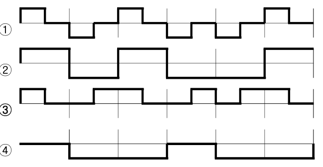

작성 기준: 업로드된 「4. 시스템 구조」 강의자료(
Module_04_시스템구조.pdf391p,[1]시스템 구조 감리사 강의자료.pdf120p) 우선 근거, 외부지식은 보조적으로만 사용(강의자료 미수록 항목은 각 문항에 명시)
정답 출처: 2017년(제18회) 정보시스템 감리사 필기시험 문제 및 답안.pdf (원본 Bold 표시 정답 - 페이지 렌더 이미지 직접 대조 확인)
정답 신뢰도: 매우 높음 (stroke-text 자동추출 23/25 + 보기 영역 렌더 확대 육안 대조 25/25 일치, 계산 문항 5개는 별도 재검산)
특이 문항: 93번 보기 ④가 "정답없음" 으로 제시되고 그 ④가 실제 정답인 이례적 문항이다(TCP·UDP·SCTP가 모두 전송계층이므로 "아닌 것"이 없다). 그 외 전항정답·복수정답은 없다.
★ 텍스트 추출 주의: 96·97번의 보기 번호가 다른 문항과 다른 글리프(➀➁➂➃) 라 자동추출에서 누락된다. 본 해설집은 200dpi 렌더 육안 확인으로 정답을 확정했으며(96④·97③), 계산으로도 동일함을 검증했다. 92번 해밍코드 표는 추출 시 셀이 흩어지므로 원문 배치를 복원해 전사하였다.
기준 버전 주의: 본 회차는 2017년 시행분이며, TTA 정보통신단체표준·행정자치부 고시를 근거로 한 문항이 8개(76·79·80·82·87·88·94·99) 로 유난히 많다. 고시·표준은 이후 개정되었으므로, 각 문항의 「관련 이론 정리」 말미에 현행(2025년 기준) 보충사항을 병기하였다.
| 번호 | 정답 | 번호 | 정답 | 번호 | 정답 |
|---|---|---|---|---|---|
| 76 | ② | 85 | ① | 94 | ② |
| 77 | ② | 86 | ③ | 95 | ③ |
| 78 | ① | 87 | ① | 96 | ④ |
| 79 | ② | 88 | ② | 97 | ③ |
| 80 | ③ | 89 | ④ | 98 | ① |
| 81 | ① | 90 | ① | 99 | ② |
| 82 | ② | 91 | ③ | 100 | ④ |
| 83 | ③ | 92 | ② | ||
| 84 | ④ | 93 | ④ |
2017년 제18회 시스템구조는 "표준·지침 암기형"과 "기초 계산형"이 정면으로 맞붙은 회차다. 앞뒤 연도(2018~2020)와 비교하면 성격이 뚜렷하게 다르므로 학습 전략도 달리 가져가야 한다.
영역별 배분은 ① IoT·무선·센서 6문항(76·77·81·82·83·84), ② 표준·지침 인용 8문항(76·79·80·82·87·88·94·99), ③ 네트워크·프로토콜 5문항(90·91·93·95·98), ④ 컴퓨터 구조·부호화 5문항(86·89·92·97·100), ⑤ 빅데이터 2문항(78·85), ⑥ 그래프·수학 1문항(96) 이다(중복 계상 포함).
이 회차의 특징 다섯 가지.
첫째, TTA 정보통신단체표준·행정 고시를 직접 인용한 문항이 8개로 전체의 3분의 1에 육박한다. 스마트 웨어러블 참조모델(76), 3D 프린터 선정 지침(79), 하드웨어 규모산정 지침(80), 사물인터넷 참조모델(82), 백업 지침(87), 영상회의시스템 표준(88), 운영 성과관리 지침(94), 정보기술아키텍처 도입·운영 지침(99) 이 그것이다. 다만 대부분은 표준 원문을 몰라도 상식·개념으로 풀리도록 출제되어, 지나친 암기 부담은 없다.
둘째, 계산 문항 5개(89·92·96·97·100) 가 모두 공식 한 줄 또는 정의 하나로 해결된다. 샘플링 데이터량(89), 해밍코드 신드롬(92), 완전 그래프 에지 수(96), CRC 코드워드 구성(97), CPU 개수 증가에 따른 실행시간(100) 이며, 감리사 시험에서 가장 확실한 득점원이다.
셋째, 93번이 "정답없음"을 정답으로 하는 이례적 문항이다. TCP·UDP·SCTP는 모두 전송계층 프로토콜이므로 "아닌 것"이 존재하지 않는다. 보기 ④에 '정답없음'이 있으면 나머지 셋을 먼저 검증하는 습관이 필요하다.
넷째, 그림 문항이 하나(95번 부호화 파형도) 있다. 맨체스터 코딩을 파형으로 식별하는 문항으로, 본 해설집에서는 원본 이미지 + 파형 좌표 실측 기반 서술 전사를 병기했다. 나머지 24문항은 텍스트 구성이다.
다섯째, 2018~2020년과 겹치는 주제는 RIP·라우팅(98 ↔ 2018년 99), CPU 성능·파이프라인(86·100 ↔ 2018년 87·89), 빅데이터 수집(85 ↔ 2018년 88), IoT 프로토콜(84 ↔ 2018년 92) 이다. 반면 IoT·센서·3D 프린터·영상회의 표준은 이 회차 고유 영역이다.
강의자료 커버리지는 무선통신·부호화·라우팅·컴퓨터 구조에서 양호하나, TTA 표준 원문 8문항과 3D 프린터·영상회의 표준은 미수록이라 외부지식으로 보완했다.
| 항목 | 내용 |
|---|---|
| 문서명 | 정보시스템 감리사 시스템구조 기출문제 해설집 - 2017년 제18회 |
| 대상 문항 | Q76 ~ Q100 (시스템구조) |
| 원본 출처 | 2017년(제18회) 정보시스템 감리사 필기시험 문제 및 답안.pdf (p.17~20) |
| 정답 확인 방법 | stroke-text(글리프 render mode) 자동추출 + 보기 영역 렌더 확대 육안 대조 (25/25 일치) |
| 특이 문항 | 93번 — 보기 ④ "정답없음"이 정답 |
| 그림 포함 문항 | 95번 부호화 파형도(4종) — 이미지 + 서술 전사 병기 |
| 계산 문항 | 89·92·96·97·100번 — 전부 재검산 완료 |
| 텍스트 추출 보정 | 96·97번(보기 글리프 상이) · 92번(해밍코드 표 배치) — 렌더 이미지로 원문 확인 후 전사 |
| 근거 강의자료 | Module_04_시스템구조.pdf(1.ITA/EA · 2.웹기술 · 3.응용기술 · 4.통신 프로토콜 · 5.통신 시스템 · 6.유무선 통신기술 · 7.컴퓨터 구조 · 8.성능/용량 · 9.저장기술 · 10.ITSM), [1]시스템 구조 감리사 강의자료.pdf(Ch.I 네트워크 · Ch.II CA/OS · Ch.III 최신기술) |
| 작성일 | 2026-08-19 |
스마트 웨어러블 상호운용성 참조모델 - 제2부 : 네트워크/미들웨어 요구사항(정보통신단체표준, TTAK.KO-06.0445-part2, 2016.12.27)은 네트워크와 미들웨어 계층에서 고려할 요구사항을 제시한다. 다음 중 이 두 계층에서 고려해야 할 요구사항으로 가장 적절하지 않은 것은?
① 네트워크 계층은 공통적으로 IP 계층을 구현한다. (IPv6 권장)
② 네트워크 계층은 타 기기에 대한 탐색(discovery)이 가능해야 한다.
③ 미들웨어 계층은 인증, 허가, 접근제어, 데이터 암호화 등과 같은 보안기능을 지원해야 한다.
④ 미들웨어 계층은 제한적 성능을 가지는 기기(constrained devices)에 적합한 메시지 전송 프로토콜을 지원해야 한다.
정답 : ②번
정답 신뢰도 : 매우 높음 (원본 Bold 확인)
| 항목 | 내용 |
|---|---|
| 연도 | 2017년 (제18회) |
| 과목 | 시스템구조 |
| 문항번호 | 76번 |
| 난이도 | 중상 |
| 출제주제 | 스마트 웨어러블 상호운용성 참조모델 — 네트워크/미들웨어 계층 요구사항 |
TTA 표준 인용 문항은 2016~2018년에 집중되어 출제되었다. 형태는 ① 계층별 요구사항 판정(본 문항), ② 참조모델 구성 판정(82번), ③ 지침의 항목 나열(80·87·94번)이다. 대부분 원문을 몰라도 개념·계층 책무로 소거 가능하도록 출제되므로, 표준 번호 암기보다 개념 정리가 효율적이다.
| 연도 | 문항번호 | 핵심개념 |
|---|---|---|
| 2017 | 82 | 사물인터넷 참조모델 |
| 2017 | 84 | MQTT |
| 2019 | 99 | IoT 경량 프로토콜 |
탐색(discovery)은 미들웨어(서비스 지원) 계층의 기능 — 네트워크 계층이 아니다 ★★
네트워크 계층 = IP 구현(IPv6 권장) · 주소 · 라우팅 · 연결성 ★★
미들웨어 계층 = 탐색 · 인증/허가/접근제어/암호화 · 경량 메시지 전송 · 데이터 관리 ★★
NDP의 "Neighbor Discovery"는 주소 해석이지 서비스 탐색이 아니다(함정) ★★
웨어러블에 IPv6를 권장하는 이유: 주소 공간 · SLAAC 자동설정 · 6LoWPAN 지원 ★★
6LoWPAN = IPv6 헤더 압축 + 단편화 (802.15.4 프레임 127B ↔ IPv6 최소 MTU 1280B) ★★
constrained device(RFC 7228): Class 0(RAM<10KB) · Class 1 · Class 2 — Class 0은 게이트웨이 필요 ★
CoAP = UDP 기반 REST(헤더 4B) / MQTT = TCP 기반 게시-구독(브로커 필수) ★★
상호운용성 3수준: 기술적 → 구문적 → 의미적(의미적이 가장 어렵다) ★
BLE는 웨어러블의 사실상 표준 무선 기술, NFC는 ~10cm 결제·태깅용 ★
②가 적절하지 않은 이유 — 탐색은 계층이 다르다
기기·서비스 탐색(discovery) 은 "주변에 어떤 기기가 있고 어떤 서비스를 제공하는가"를 찾아내는 기능이다. 이는 주소·경로·전송을 다루는 네트워크 계층이 아니라, 그 위에서 서비스 의미를 다루는 미들웨어(서비스 지원) 계층의 책무다.
스마트 웨어러블 참조모델의 계층 책무
┌─────────────────────────────────────┐
│ 응용(Application) 계층 │ 웨어러블 서비스·앱
├─────────────────────────────────────┤
│ ★ 미들웨어(Middleware) 계층 ★ │
│ · 기기/서비스 ★ 탐색(discovery) ★ │ ★★
│ · 인증·허가·접근제어·암호화 ★ │
│ · 경량 메시지 전송(CoAP/MQTT) ★ │
│ · 데이터 모델·의미(semantics) 관리 │
├─────────────────────────────────────┤
│ ★ 네트워크(Network) 계층 ★ │
│ · ★ IP 계층 구현(IPv6 권장) ★ │
│ · 주소 할당·라우팅·연결성 │
│ · 이기종 무선 접속(BLE·Wi-Fi 등) 수용│
├─────────────────────────────────────┤
│ 디바이스(Device) 계층 │ 센서·액추에이터
└─────────────────────────────────────┘
★ discovery를 네트워크 계층에 배정한 ②가 오답 ★★
| 기능 | 올바른 계층 |
|---|---|
| IP 주소·라우팅·연결성 | 네트워크 ★ |
| 기기·서비스 탐색(discovery) | 미들웨어 ★★ |
| 인증·허가·접근제어·암호화 | 미들웨어 ★ |
| 경량 메시지 전송 프로토콜 | 미들웨어 ★ |
| 센싱·구동 | 디바이스 ★ |
→ 정답 ②
"탐색"이 미들웨어에 속하는 근거
탐색이 필요로 하는 정보
· 이 기기는 ★ 무엇을 할 수 있는가 ★ (서비스 목록)
· 어떤 ★ 데이터 형식 ★ 을 쓰는가
· 어떤 ★ 인증 ★ 을 요구하는가
↓
★ 전부 "의미(semantics)" 정보다 ★★
↓
★ 주소와 경로만 아는 네트워크 계층은 판단할 수 없다 ★★
| 대표 탐색 프로토콜 | 계층 |
|---|---|
| mDNS / DNS-SD(Bonjour) | 응용/미들웨어 ★★ |
| SSDP(UPnP) | 응용/미들웨어 ★ |
CoAP Resource Discovery(/.well-known/core) |
응용/미들웨어 ★★ |
| BLE GATT Service Discovery | 응용 프로파일 ★ |
| ARP / NDP | 네트워크(다만 주소 해석이지 서비스 탐색이 아님) ★★ |
혼동 주의: NDP(Neighbor Discovery Protocol) 에도 "Discovery"라는 말이 있지만, 이는 이웃 노드의 MAC 주소·라우터 프리픽스를 찾는 주소 해석 기능이지 "타 기기가 제공하는 서비스를 찾는 기능"이 아니다. 출제자는 이 혼동을 노렸을 가능성이 높다. ★★
| 항목 | 내용 |
|---|---|
| IP 기반 통일 | 이기종 무선 접속을 IP로 수렴 → 상호운용성 확보 ★★ |
| IPv6 권장 이유 | 주소 고갈 없음 · SLAAC 자동설정 · 6LoWPAN 지원 ★★ |
| 표준 근거 | 참조모델의 네트워크 계층 공통 요구사항 ★ |
왜 웨어러블에 IPv6인가
① 주소 공간
· 기기 수가 폭증 → ★ IPv4로는 감당 불가 ★★
· IPv6는 2^128개 주소
② 자동 설정(SLAAC)
· ★ DHCP 서버 없이 스스로 주소 생성 ★★
· 관리자 개입 없는 배포에 적합
③ 6LoWPAN
· ★ IPv6 over Low-Power WPAN ★★
· 헤더 압축으로 저전력 무선(802.15.4)에서도 IPv6 사용
| 6LoWPAN 핵심 | 내용 |
|---|---|
| 헤더 압축 | 40바이트 IPv6 헤더를 수 바이트로 ★★ |
| 단편화/재조립 | IPv6 최소 MTU 1280 vs 802.15.4 프레임 127바이트 ★★ |
| 메시 라우팅 | RPL 프로토콜 ★ |
| 보안 기능 | 내용 |
|---|---|
| 인증(Authentication) | 기기·사용자 신원 확인 ★★ |
| 허가(Authorization) | 접근 권한 부여 ★ |
| 접근제어(Access Control) | 자원별 접근 통제 ★ |
| 데이터 암호화 | 저장·전송 데이터 기밀성 ★★ |
웨어러블 보안이 특히 중요한 이유
· ★ 생체·건강 데이터를 다룬다 ★★ (민감정보)
· 항상 착용 → ★ 위치·행동 패턴 노출 ★
· 저전력 기기라 ★ 강한 암호 연산이 부담 ★★
↓
★ 경량 암호(LEA·PRESENT), DTLS, 하드웨어 보안요소 활용 ★
③이 적절한 이유: 보안은 응용마다 재구현하면 취약해지므로, 공통 미들웨어에서 일괄 제공하는 것이 참조모델의 기본 설계다. ★★
| 항목 | 내용 |
|---|---|
| constrained device | CPU·메모리·전력·대역폭이 제한된 기기 ★★ |
| 필요 | HTTP/TCP는 무겁다 → 경량 프로토콜 ★★ |
| 대표 | CoAP(UDP), MQTT(TCP), MQTT-SN(UDP) ★★ |
| 프로토콜 | 전송 | 패턴 | 특징 |
|---|---|---|---|
| CoAP | UDP ★ | 요청/응답(REST) ★★ | 헤더 4바이트, 초경량 ★★ |
| MQTT | TCP ★ | 게시/구독 ★★ | 브로커 필수, QoS 3단계 ★ |
| MQTT-SN | UDP ★ | 게시/구독 | 센서망용 경량판 ★ |
| HTTP | TCP | 요청/응답 | 너무 무거움 ★ |
헤더 크기 비교(대략)
HTTP : 수백 바이트 (텍스트 기반) ★
MQTT : 최소 2바이트 (고정 헤더) ★★
CoAP : 4바이트 (바이너리) ★★
★ 배터리로 동작하는 웨어러블에서 전송 바이트는 곧 수명 ★★
RFC 7228의 constrained device 분류
클래스 RAM Flash Class 0 < 10 KB ★★ < 100 KB Class 1 ~10 KB ~100 KB Class 2 ~50 KB ~250 KB Class 0은 스스로 인터넷 통신이 불가해 게이트웨이·프록시가 필요하다. ★★
소거 요령: ①③④는 각각 네트워크=IP, 미들웨어=보안, 미들웨어=경량 메시징으로 계층 배정이 자연스럽다. ②만 "탐색"이라는 서비스 의미 기능을 네트워크 계층에 배정해 계층 책무가 어긋난다. ★★
표준 원문을 몰라도 계층 개념만으로 풀리는 문항이다.
스마트 웨어러블 상호운용성 참조모델(TTAK.KO-06.0445)
| 항목 | 내용 |
|---|---|
| 표준번호 | TTAK.KO-06.0445(part1~) ★ |
| 제정 | 2016.12.27(제2부) ★ |
| 목적 | 이기종 웨어러블 기기·서비스 간 상호운용성 확보 ★★ |
| 구성 | 제1부 참조모델 / 제2부 네트워크·미들웨어 요구사항 ★ |
상호운용성이 필요한 이유
제조사 A 스마트밴드 ─┐
제조사 B 스마트워치 ─┼→ ★ 서로 다른 규격·프로토콜 ★
제조사 C 헬스기기 ─┘
↓
· 데이터를 통합 분석할 수 없다 ✗
· 앱마다 개별 연동을 만들어야 한다 ✗
↓
★ 공통 참조모델로 계층·인터페이스를 표준화 ★★
상호운용성의 3수준
| 수준 | 내용 |
|---|---|
| 기술적(Technical) | 전송·연결 가능 ★ |
| 구문적(Syntactic) | 데이터 형식 일치(JSON·XML) ★★ |
| 의미적(Semantic) | 데이터 의미 일치(온톨로지·코드체계) ★★ |
가장 어려운 것은 의미적 상호운용성이다. "심박수"가 어떤 단위·측정조건인지까지 합의해야 한다. ★★
웨어러블 시스템의 계층별 기술 스택
| 계층 | 주요 기술 |
|---|---|
| 디바이스 | 센서(가속도·자이로·PPG·ECG), MCU, 배터리 ★ |
| 네트워크 | BLE, Wi-Fi, LTE-M/NB-IoT, 6LoWPAN, IPv6 ★★ |
| 미들웨어 | CoAP·MQTT, 탐색(mDNS·CoAP RD), 보안(DTLS·OAuth) ★★ |
| 응용 | 헬스케어·피트니스·결제·알림 ★ |
웨어러블 무선 기술 비교
| 기술 | 전력 | 거리 | 속도 | 용도 |
|---|---|---|---|---|
| BLE | 매우 낮음 ★★ | ~10~100m | 1~2Mbps | 웨어러블 표준 ★★ |
| NFC | 매우 낮음 | ~10cm ★ | 424kbps | 결제·태깅 ★ |
| Wi-Fi | 높음 ★ | ~50m | 수백Mbps | 대용량 동기화 ★ |
| ZigBee | 낮음 | ~100m | 250kbps | 메시 센서망 ★ |
| LTE-M/NB-IoT | 낮음 | 광역 ★★ | 낮음 | 독립형 웨어러블 ★ |
IoT 참조모델 비교(82번과 연계)
| 모델 | 계층 구성 |
|---|---|
| TTA/ITU-T Y.2060 | 응용 / 서비스·응용 지원 / 네트워크 / 디바이스 + 관리·보안 ★★ |
| oneM2M | 응용(AE) / 공통서비스(CSE) / 네트워크(NSE) ★★ |
| IoT-A | 기능 계층 모델 ★ |
| IIRA(산업) | 4계층 + 관점 ★ |
공통점: 어느 모델이든 "탐색·보안·데이터 관리"는 공통 서비스(미들웨어) 계층에 둔다. ★★
현행(2025년 기준) 보충사항
| 항목 | 변화 |
|---|---|
| Matter / Thread | 스마트홈·IoT 상호운용 사실상 표준 ★★ |
| BLE 5.x | 거리 4배·속도 2배·LE Audio ★ |
| 웨어러블 헬스 표준 | HL7 FHIR·IEEE 11073 연계 확대 ★★ |
| 개인정보 | 건강·생체정보 = 민감정보 규제 강화 ★★ |
| 엣지 AI | 온디바이스 추론으로 전송량 감소 ★ |
Matter: IP 기반 + 표준 데이터 모델 + 통합 탐색(커미셔닝) 으로, 본 문항이 다룬 상호운용성 문제를 실제로 해결한 최신 사례다. ★★
강의자료 근거:
[1]시스템 구조 감리사 강의자료.pdfChapter III 최신기술 - IoT/웨어러블(p.132),Module_04_시스템구조.pdf6.유무선 통신기술(p.240~) 에 관련 내용이 있으나, TTAK.KO-06.0445 원문은 미수록이다.
웨어러블·IoT 시스템 감리에서는 계층별 책무 분리가 설계 적정성의 핵심 판단 기준이다.
| 점검 항목 | 확인 사항 |
|---|---|
| 계층 책무 분리 | 탐색·보안·데이터 모델이 미들웨어에 있는가 ★★ |
| 프로토콜 적합성 | 저전력 기기에 HTTP/TLS를 강요하지 않는가 ★★ |
| IPv6/6LoWPAN | 주소 확장성이 확보되었는가 ★ |
| 보안 | 인증·암호화가 공통 계층에서 일괄 제공되는가 ★★ |
| 개인정보 | 생체·건강정보 처리 근거와 암호화 ★★ |
| 표준 준수 | 상호운용성 표준 적용 여부 ★ |
흔한 결함 1: 탐색·인증 로직을 각 응용마다 개별 구현해, 기기가 추가될 때마다 전 응용을 수정해야 했던 사례다. 미들웨어 계층으로 공통화가 필요하다. ★★
흔한 결함 2: 배터리 구동 센서에 HTTPS 폴링을 적용해, 설계 수명 1년이 2개월로 단축된 사례다. CoAP/DTLS 또는 MQTT + 이벤트 기반으로 전환해야 한다. ★★
흔한 결함 3: 웨어러블이 수집한 심박·수면 데이터를 평문 전송한 사례다. 민감정보에 해당하므로 전송·저장 구간 암호화가 필수다. ★★
흔한 결함 4: 기기 인증 없이 페어링만으로 데이터를 수용해, 위조 기기의 데이터 주입이 가능했던 사례다. ★★
흔한 결함 5: IPv4 사설 주소 + NAT로 설계해, 기기 증설 시 주소가 고갈되고 양방향 통신이 어려워진 사례다. ★
표준 인용 문항은 원문 암기보다 "계층 책무" 로 접근한다.
절대 암기
$$\boxed{\text{네트워크 계층} = \text{IP} \cdot \text{주소} \cdot \text{라우팅} \cdot \text{연결성}}$$
$$\boxed{\text{미들웨어 계층} = \text{탐색} \cdot \text{보안} \cdot \text{경량 메시징} \cdot \text{데이터 관리}}$$
참인 서술 (○)
| 항목 |
|---|
| 네트워크 계층은 IP 계층을 구현하며 IPv6를 권장 ★★ |
| 탐색(discovery)은 미들웨어/서비스 계층 기능 ★★ |
| 인증·허가·접근제어·암호화는 미들웨어에서 공통 제공 ★★ |
| constrained device에는 CoAP·MQTT 등 경량 프로토콜 ★★ |
| 6LoWPAN은 저전력 무선에서 IPv6를 쓰기 위한 적응 계층 ★★ |
| CoAP는 UDP 기반 REST, MQTT는 TCP 기반 게시/구독 ★★ |
| 상호운용성은 기술적·구문적·의미적 3수준 ★ |
거짓인 서술 (✗) — 출제 단골
| 틀린 서술 | 실제 |
|---|---|
| 탐색은 네트워크 계층 기능이다 | 미들웨어(← ②) ★★ |
| 웨어러블에 IPv4가 권장된다 | IPv6 권장 ★ |
| 보안은 각 응용이 개별 구현한다 | 공통 계층 제공 ★★ |
| CoAP는 TCP 기반이다 | UDP ★★ |
| MQTT는 브로커 없이 동작한다 | 브로커 필수 ★★ |
감점 포인트
| 실수 | 예방 |
|---|---|
| NDP의 "Discovery"와 서비스 탐색 혼동 | 주소 해석 ≠ 서비스 탐색 ★★ |
| 표준 원문 암기에만 의존 | 계층 책무로 판단 ★★ |
무선 통신 기술에 대한 설명으로 가장 거리가 먼 것은?
① Bluetooth 통신 네트워크는 Master-Slave 방식을 지원하며 데이터 전송을 위해 주파수 호핑(frequency hopping) 등을 사용한다.
② ZigBee는 주파수 충돌을 피하기 위하여 CSMA/CD(Carrier Sense Multiple Access/Collision Detection) 방법을 사용한다.
③ NFC는 무선태그(RFID) 기술 중 하나로 13.56MHz의 주파수 대역을 사용하는 비접촉식 통신 기술이다. 통신거리가 짧기 때문에 상대적으로 보안이 우수한 근거리 통신 기술이다.
④ Wi-Fi 통신은 AP(Access Point)와 단말 간의 통신이며 QAM(Quadrature Amplitude Modulation) 등의 변복조 기술을 사용한다.
정답 : ②번
정답 신뢰도 : 매우 높음 (원본 Bold 확인)
| 항목 | 내용 |
|---|---|
| 연도 | 2017년 (제18회) |
| 과목 | 시스템구조 |
| 문항번호 | 77번 |
| 난이도 | 중 |
| 출제주제 | 근거리 무선 통신 기술 — ZigBee의 매체 접근 방식(CSMA/CA) |
근거리 무선 기술은 거의 매년 출제되는 고빈도 주제다. 형태는 ① 기술별 특성 판정(본 문항), ② 매체 접근 방식 구분, ③ 주파수·거리·속도 수치 대조, ④ IoT 프로토콜과의 조합이다. CSMA/CD를 무선에 붙이는 함정은 가장 반복되는 오답 유형이다.
| 연도 | 문항번호 | 핵심개념 |
|---|---|---|
| 2017 | 76 | 웨어러블 네트워크 요구사항 |
| 2017 | 83 | RFID |
| 2019 | 91 | 무선 통신 표준 |
무선은 CSMA/CA(충돌 회피), 유선 이더넷은 CSMA/CD(충돌 검출) — 무선 문항의 CD는 무조건 오답 ★★
무선에서 충돌 검출이 불가능한 이유: 송신 출력이 수신 감도를 압도해 자기 신호에 가려진다 ★★
CSMA/CA = 채널 감지 → IFS 대기 → 랜덤 백오프 → 송신 → ACK 확인 ★★
RTS/CTS + NAV는 은닉 단말(Hidden Node) 문제를 완화한다 ★★
Bluetooth = 피코넷(1 Master + 최대 7 Active Slave) + FHSS(초당 1600홉) ★★
ZigBee = IEEE 802.15.4, 250kbps, 메시(코디네이터·라우터·엔드디바이스), 초저전력 ★★
NFC = 13.56MHz(HF RFID), 약 10cm, 리더/카드에뮬레이션/P2P 3모드 ★★
NFC의 보안 우위는 "짧은 거리"라는 물리적 제약 덕분 — 절대 안전이 아니다 ★
Wi-Fi = AP 경유 인프라 모드 + QAM/OFDM(A), n-QAM은 심볼당 log₂n 비트 ★★
RFID 대역: LF 125kHz · HF 13.56MHz(NFC) · UHF 900MHz(물류, ~10m) ★
②가 틀린 이유 — 무선에서는 CSMA/CD를 쓸 수 없다
ZigBee(IEEE 802.15.4) 는 CSMA/CA(Collision Avoidance, 충돌 회피) 를 사용한다. CSMA/CD(Collision Detection, 충돌 검출) 는 유선 이더넷의 방식이며, 무선에서는 원리적으로 사용할 수 없다.
무선에서 CSMA/CD가 불가능한 이유
[유선 이더넷]
송신하면서 동시에 케이블의 전압을 감시
↓
★ 내 신호 + 남의 신호 → 전압 이상 감지 → 충돌 검출 ★★
↓
즉시 중단(JAM) 후 백오프 재전송 ✓
[무선]
송신 안테나의 출력이 ★ 수신 감도보다 수만~수억 배 강하다 ★★
↓
★ 자기 신호에 가려 남의 신호를 들을 수 없다 ★★
↓
★ 충돌을 "검출"할 방법이 없다 → 애초에 "회피"해야 한다 ★★
CSMA/CD vs CSMA/CA
| 항목 | CSMA/CD | CSMA/CA |
|---|---|---|
| 의미 | Collision Detection(검출) ★ | Collision Avoidance(회피) ★★ |
| 매체 | 유선 이더넷 ★★ | 무선(Wi-Fi·ZigBee·BLE) ★★ |
| 표준 | IEEE 802.3 ★ | IEEE 802.11 / 802.15.4 ★★ |
| 동작 | 송신 중 감시 → 충돌 시 중단 ★★ | 송신 전 대기·백오프 → 충돌 예방 ★★ |
| ACK | 없음(상위 계층) | 명시적 ACK 사용 ★★ |
| 부가 기법 | JAM 신호, 지수 백오프 ★ | IFS, RTS/CTS, 랜덤 백오프 ★★ |
→ 정답 ②
CSMA/CA의 동작 절차
① 채널 감지(Carrier Sense)
↓ 유휴(idle)
② ★ IFS(Inter-Frame Space)만큼 대기 ★
↓ 여전히 유휴
③ ★ 랜덤 백오프 카운터 감소 ★★
· 채널이 사용 중이면 카운터를 멈춘다
· 유휴로 돌아오면 이어서 감소
↓ 카운터 0
④ 프레임 송신
↓
⑤ ★ 수신 측이 ACK 응답 ★★
· ACK 없으면 → 충돌·손실로 간주 → 재전송
| 요소 | 역할 |
|---|---|
| IFS(SIFS < PIFS < DIFS) | 우선순위 부여 ★★ |
| 랜덤 백오프 | 동시 접근 확률 감소 ★★ |
| ACK | 성공 여부 확인(무선은 손실이 잦음) ★★ |
| NAV(가상 반송파 감지) | 다른 노드가 채널 점유 시간을 미리 인지 ★★ |
은닉 단말 문제(Hidden Node Problem)와 RTS/CTS
[A] ←── 전파 도달 ──→ [AP] ←── 전파 도달 ──→ [B]
A와 B는 ★ 서로의 신호를 듣지 못한다 ★★
↓
둘 다 "채널이 비었다"고 판단해 동시 송신
↓
★ AP에서 충돌 발생 ★★
해결 — RTS/CTS
A → AP : RTS(전송 요청)
AP → 전체 : ★ CTS(전송 허가, 점유 시간 명시) ★★
↓
★ B도 CTS를 듣고 NAV를 설정해 침묵 ★★
| 항목 | 내용 |
|---|---|
| 토폴로지 | 피코넷(Piconet) — 1 Master + 최대 7 Active Slave ★★ |
| 주파수 대역 | 2.4GHz ISM ★ |
| 접근 방식 | FHSS(주파수 호핑 확산 스펙트럼) ★★ |
| 호핑 속도 | 초당 1600회(625μs 슬롯) ★★ |
| 채널 수 | 클래식 79채널(1MHz) / BLE 40채널(2MHz) ★ |
주파수 호핑(FHSS)의 이점
· 같은 2.4GHz를 쓰는 Wi-Fi·전자레인지와 ★ 간섭 회피 ★★
· 특정 주파수가 방해받아도 ★ 다음 홉에서 정상 통신 ★
· 도청자가 호핑 패턴을 모르면 ★ 수신 곤란(보안 부수효과) ★
★ AFH(Adaptive FHSS): 혼잡한 채널을 학습해 제외 ★★
| Bluetooth 버전 | 특징 |
|---|---|
| 클래식(BR/EDR) | 음성·스트리밍, 높은 전력 ★ |
| BLE(4.0~) | 저전력, 웨어러블·IoT 표준 ★★ |
| 5.x | 거리 4배·속도 2배·LE Audio·방향 탐지 ★ |
| 항목 | 내용 |
|---|---|
| 주파수 | 13.56MHz(HF RFID 대역) ★★ |
| 통신 거리 | 약 4~10cm ★★ |
| 속도 | 106/212/424 kbps ★ |
| 기반 | RFID(ISO 14443) 확장 ★★ |
| 모드 | 리더/라이터 · 카드 에뮬레이션 · P2P ★★ |
NFC의 "상대적 보안 우수" 근거
· ★ 통신 거리가 수 cm ★★
→ 원거리 도청·중계가 물리적으로 어렵다
· 의도적 접촉(태깅) 행위가 필요
→ 사용자 인지 없이 통신되기 어렵다
↓
★ 다만 "절대적으로 안전"하다는 뜻은 아니다 ★★
· 릴레이 공격, 스키밍 가능
· ★ 결제는 별도의 토큰화·암호화가 필수 ★★
③이 옳은 이유: 문제는 "상대적으로 보안이 우수한" 이라고 썼다. Wi-Fi·BLE 대비 물리적 접근이 필요하다는 점에서 타당한 서술이다. "절대 안전"이라고 썼다면 오답이 되었을 것이다. ★★
RFID 주파수 대역 비교
| 대역 | 주파수 | 거리 | 용도 |
|---|---|---|---|
| LF | 125~134kHz | ~10cm | 동물 인식·출입 ★ |
| HF | 13.56MHz ★★ | ~10cm~1m | NFC·교통카드 ★★ |
| UHF | 860~960MHz | ~10m ★ | 물류·재고 ★★ |
| 마이크로파 | 2.45GHz | ~1m | 하이패스 ★ |
| 항목 | 내용 |
|---|---|
| 구조 | 인프라스트럭처 모드(AP 경유) ★★ + Ad-hoc 모드 |
| 변조 | BPSK·QPSK·16/64/256/1024-QAM ★★ |
| 다중화 | OFDM / OFDMA(802.11ax) ★★ |
| 대역 | 2.4GHz · 5GHz · 6GHz(Wi-Fi 6E) ★ |
QAM 차수와 전송률의 관계
★ n-QAM은 심볼당 log2(n) 비트를 실어 보낸다 ★★
· 16-QAM → 4 비트/심볼
· 64-QAM → 6 비트/심볼
· 256-QAM → 8 비트/심볼 (Wi-Fi 5)
· 1024-QAM → 10 비트/심볼 (Wi-Fi 6) ★★
★ 차수가 높을수록 빠르지만, 신호 대 잡음비(SNR)가 좋아야 한다 ★★
→ 거리가 멀어지면 자동으로 낮은 차수로 적응(Rate Adaptation)
| 표준 | 세대 | 대역 | 최대 속도(이론) |
|---|---|---|---|
| 802.11n | Wi-Fi 4 | 2.4/5GHz | 600Mbps ★ |
| 802.11ac | Wi-Fi 5 | 5GHz | ~6.9Gbps ★ |
| 802.11ax | Wi-Fi 6/6E | 2.4/5/6GHz ★★ | ~9.6Gbps ★ |
| 802.11be | Wi-Fi 7 | + 320MHz | ~46Gbps ★ |
④가 옳은 이유: 인프라스트럭처 모드에서 단말은 AP를 경유해 통신하며, QAM 계열 변조를 사용한다는 서술은 정확하다.
소거 요령: "무선 + CD" 조합만 보면 즉시 오답이다.
$$\boxed{\text{유선 = CSMA/CD} \qquad \text{무선 = CSMA/CA}}$$
무선 문항에서 CSMA/CD가 등장하면 100% 오답이라고 봐도 무방하다. ★★
근거리 무선 통신 기술 종합 비교
| 기술 | 표준 | 대역 | 거리 | 속도 | 접근방식 | 전력 |
|---|---|---|---|---|---|---|
| Bluetooth | 802.15.1 | 2.4GHz | ~10~100m | 1~3Mbps | FHSS ★ | 낮음 |
| BLE | 802.15.1 | 2.4GHz | ~50m | 1~2Mbps | FHSS | 매우 낮음 ★★ |
| ZigBee | 802.15.4 ★ | 2.4GHz/868/915MHz | ~10~100m | 250kbps ★ | CSMA/CA ★★ | 매우 낮음 ★★ |
| Wi-Fi | 802.11 | 2.4/5/6GHz | ~50m | 수백Mbps~ | CSMA/CA ★★ | 높음 ★ |
| NFC | ISO 14443 | 13.56MHz ★ | ~10cm ★★ | 424kbps | 유도결합 | 매우 낮음 |
| UWB | 802.15.4z | 3.1~10.6GHz | ~10m | 고속 | — | 낮음 |
ZigBee 상세
| 항목 | 내용 |
|---|---|
| 표준 | IEEE 802.15.4(PHY/MAC) + ZigBee Alliance(상위) ★★ |
| 토폴로지 | 스타 · 트리 · 메시 ★★ |
| 노드 유형 | 코디네이터 · 라우터 · 엔드디바이스 ★★ |
| 최대 노드 | 이론상 65,535개 ★ |
| 강점 | 초저전력(배터리 수년) · 메시 확장성 ★★ |
| 약점 | 저속(250kbps) ★ |
ZigBee 메시 네트워크
[코디네이터] ← PAN 생성·관리, 1개만 존재 ★★
╱ │ ╲
[라우터][라우터][라우터] ← 중계·자녀 노드 관리 ★
│ ╲ │ │
[End][End][End] [End] ← ★ 슬립 모드로 전력 절약 ★★
★ 경로가 끊겨도 다른 경로로 우회(Self-Healing) ★★
| 802.15.4 MAC 모드 | 내용 |
|---|---|
| 비컨 미사용 | 순수 CSMA/CA ★★ |
| 비컨 사용 | 슬롯형 CSMA/CA + GTS(보장 타임슬롯) ★★ |
변조 및 다중 접속 기술
| 기술 | 내용 |
|---|---|
| ASK/FSK/PSK | 진폭·주파수·위상 변조 ★ |
| QAM | 진폭 + 위상 동시 변조 ★★ |
| OFDM | 직교 부반송파 분할 — 다중경로 내성 ★★ |
| OFDMA | 부반송파를 사용자별 할당(Wi-Fi 6) ★★ |
| DSSS | 직접 확산 — 간섭 내성 ★ |
| FHSS | 주파수 호핑(Bluetooth) ★★ |
| MIMO | 다중 안테나 공간 다중화 ★★ |
다중 접속 방식(셀룰러 계열)
FDMA : 주파수 분할 (1G)
TDMA : 시간 분할 (2G GSM)
CDMA : 코드 분할 (2G/3G) ★
OFDMA: 직교 주파수 분할 (4G/5G, Wi-Fi 6) ★★
현행(2025년 기준) 보충사항
| 항목 | 변화 |
|---|---|
| Wi-Fi 6E/7 | 6GHz 대역 개방, 320MHz 채널, MLO ★★ |
| Bluetooth 5.4 / LE Audio | 저지연 오디오·오라캐스트 ★ |
| Matter/Thread | 802.15.4 기반, ZigBee 대체 흐름 ★★ |
| UWB | 정밀 측위(디지털 키·스마트태그) ★★ |
| NFC | 결제·디지털 키 확산, UWB와 병용 ★ |
Thread: ZigBee와 같은 802.15.4 PHY/MAC을 쓰되 IPv6(6LoWPAN) 기반이라 상호운용성이 높다. Matter의 주요 전송 기술로 채택되었다. ★★
강의자료 근거:
[1]시스템 구조 감리사 강의자료.pdfChapter III 최신기술 - 근거리 무선통신(p.128),Module_04_시스템구조.pdf6.유무선 통신기술(p.235~) 에 수록되어 있다.
무선 기술 선정은 거리·전력·속도·비용의 4각 트레이드오프다.
| 요구 | 권장 기술 |
|---|---|
| 대용량·고속(영상·파일) | Wi-Fi ★★ |
| 웨어러블·주변기기 | BLE ★★ |
| 대규모 저전력 센서망 | ZigBee / Thread ★★ |
| 결제·태깅·인증 | NFC ★★ |
| 정밀 측위·디지털 키 | UWB ★ |
| 광역 저전력 | LoRa / NB-IoT ★★ |
감리에서는 ① 요구 데이터량 대비 기술이 과·부족하지 않은가, ② 2.4GHz 혼잡도(Wi-Fi·BLE·ZigBee 공존) 를 고려했는가, ③ 배터리 수명 산정 근거가 있는가, ④ 무선 구간 암호화가 적용되었는가, ⑤ 커버리지 실측(사이트 서베이) 을 수행했는가를 점검한다.
흔한 결함 1: 2.4GHz에 Wi-Fi·BLE·ZigBee를 모두 배치하고 채널 계획 없이 운영해, 간섭으로 센서 데이터 손실률이 30% 에 달한 사례다. ZigBee 채널을 Wi-Fi 비중첩 대역으로 배치하거나 5GHz Wi-Fi로 분리해야 한다. ★★
흔한 결함 2: 은닉 단말이 다수인 넓은 창고에서 RTS/CTS를 비활성화해, 충돌·재전송이 폭증한 사례다. ★★
흔한 결함 3: ZigBee 엔드디바이스를 상시 수신 모드로 설정해, 배터리가 설계 3년 → 실제 2개월로 단축된 사례다. 슬립 모드 활용이 핵심이다. ★★
흔한 결함 4: NFC 태그에 평문 식별자만 기록해, 복제(스키밍) 가 가능했던 사례다. 암호 인증 기반 태그가 필요하다. ★
흔한 결함 5: 사이트 서베이 없이 AP를 균등 배치해, 금속 선반이 많은 구역에서 음영이 발생한 사례다. ★
무선 문항은 CSMA/CA vs CD와 기술별 대표 수치가 핵심이다.
절대 암기
$$\boxed{\text{무선} \Rightarrow \text{CSMA/CA(회피)} \qquad \text{유선 이더넷} \Rightarrow \text{CSMA/CD(검출)}}$$
$$\boxed{\text{NFC} = 13.56\text{MHz} \cdot \sim 10\text{cm} \quad \text{ZigBee} = 802.15.4 \cdot 250\text{kbps}}$$
참인 서술 (○)
| 항목 |
|---|
| Wi-Fi·ZigBee·BLE는 모두 CSMA/CA ★★ |
| 무선은 송신 중 자기 신호 때문에 충돌 검출 불가 ★★ |
| Bluetooth는 피코넷(1 Master + 7 Slave), FHSS 사용 ★★ |
| NFC는 13.56MHz, 약 10cm, RFID 기반 ★★ |
| ZigBee는 IEEE 802.15.4 기반, 메시 지원, 250kbps ★★ |
| Wi-Fi는 QAM·OFDM(A) 변조를 사용 ★★ |
| CSMA/CA는 IFS + 랜덤 백오프 + ACK로 동작 ★★ |
| RTS/CTS는 은닉 단말 문제 완화 ★★ |
거짓인 서술 (✗) — 출제 단골
| 틀린 서술 | 실제 |
|---|---|
| ZigBee/Wi-Fi가 CSMA/CD를 쓴다 | CSMA/CA(← ②) ★★ |
| NFC는 수 미터까지 통신한다 | 약 10cm ★★ |
| Bluetooth는 CSMA/CA를 쓴다 | FHSS 기반 TDD ★ |
| ZigBee가 Wi-Fi보다 빠르다 | 250kbps로 훨씬 느림 ★ |
| 무선 LAN은 충돌을 검출해 즉시 중단한다 | 검출 불가 ★★ |
감점 포인트
| 실수 | 예방 |
|---|---|
| CA/CD 혼동 | 무선=CA 한 줄 암기 ★★ |
| NFC 거리·주파수 혼동 | 13.56MHz / 10cm ★★ |
실시간 스트리밍 데이터 분석 프레임워크로 가장 적절한 것은?
① Apache Storm
② Facebook Scribe
③ Cloudera Flume
④ Linkedin Kafka
정답 : ①번
정답 신뢰도 : 매우 높음 (원본 Bold 확인)
| 항목 | 내용 |
|---|---|
| 연도 | 2017년 (제18회) |
| 과목 | 시스템구조 |
| 문항번호 | 78번 |
| 난이도 | 중 |
| 출제주제 | 빅데이터 요소기술 — 실시간 스트리밍 분석 프레임워크(Apache Storm) |
빅데이터 요소기술은 2016~2020년 매년 1~2문항 출제되었다. 형태는 ① 실시간 분석 도구 선택(본 문항), ② 수집 기술이 아닌 것(85번), ③ 하둡 에코시스템 역할 매칭, ④ 람다/카파 아키텍처다. 본 회차는 78·85번 두 문항이 같은 "도구 분류" 논점을 다뤄, 한 번의 정리로 2문항을 확보할 수 있다.
| 연도 | 문항번호 | 핵심개념 |
|---|---|---|
| 2017 | 85 | 빅데이터 수집 기술 |
| 2018 | 88 | 빅데이터 처리 기술 |
| 2020 | 88 | 하둡 에코시스템 |
Apache Storm = 실시간 스트림 처리·분석 프레임워크 — 네 보기 중 유일한 "분석" 도구 ★★
Storm 구조: Topology = Spout(입력) + Bolt(연산), 데이터 단위는 Tuple ★★
Scribe(Facebook)·Flume(Cloudera)·Chukwa = 로그 "수집" — 분석하지 않는다 ★★
Flume 구조: Source → Channel(버퍼) → Sink ★
Kafka(LinkedIn) = 분산 메시지 브로커 — Topic·Partition·Offset, 되감기 재처리 가능 ★★
파이프라인 순서: 수집 → 전달·버퍼(Kafka) → 처리·분석(Storm/Flink) → 저장·시각화 ★★
배치(유한·분~시간) vs 스트림(무한·ms~초) ★★
람다 아키텍처 = 배치 레이어 + 스피드 레이어 + 서빙 레이어(로직 이중 구현이 단점) ★★
카파 아키텍처 = 스트림 하나로 통합(재처리는 로그 되감기) ★
Storm=at-least-once / Flink=exactly-once·이벤트 시간·워터마크 ★★
ZooKeeper는 수집도 분석도 아닌 "분산 조정" — 85번의 정답 근거 ★★
①이 옳은 이유 — Storm은 스트림 처리 엔진이다
Apache Storm은 무한히 흘러들어오는 데이터 스트림을 실시간으로 연산·집계·분석하는 분산 스트림 처리 프레임워크다. 나머지 셋은 분석이 아니라 "수집" 또는 "전달" 을 담당한다.
빅데이터 파이프라인에서의 역할 구분
[데이터 발생]
웹로그·센서·거래
↓
★ 수집(Collection) ★
Flume · Scribe · Fluentd ← ②③
↓
★ 전달·버퍼링(Messaging) ★
Kafka · RabbitMQ ← ④
↓
★ 처리·분석(Processing) ★★
★ Storm ★ · Spark Streaming · Flink ← ① ★ 정답 ★
↓
[저장 / 시각화]
HDFS·HBase·Elasticsearch
Apache Storm의 구조
| 구성 요소 | 역할 |
|---|---|
| Topology | 처리 흐름 전체(방향성 그래프) ★★ |
| Spout | 스트림의 입력원(Kafka·큐에서 읽음) ★★ |
| Bolt | 실제 연산 단위(필터·집계·조인·저장) ★★ |
| Tuple | 전달되는 데이터 단위 ★ |
| Nimbus | 마스터(작업 분배) ★ |
| Supervisor | 워커 노드 관리 ★ |
Storm 토폴로지 예 — 실시간 이상거래 탐지
[Spout] [Bolt1] [Bolt2] [Bolt3]
Kafka에서 → 금액·지역 파싱 → 규칙 판정 → 알림·저장
거래 이벤트 (윈도우 집계)
읽기
★ 데이터가 도착하는 즉시 흐르며 처리된다(레코드 단위) ★★
★ 배치처럼 "모아서 나중에"가 아니다 ★★
| Storm 특징 | 내용 |
|---|---|
| 진짜 스트리밍 | 레코드 단위 즉시 처리 → 밀리초 지연 ★★ |
| 처리 보장 | At-least-once(Trident 사용 시 Exactly-once) ★★ |
| 확장성 | 워커 추가로 수평 확장 ★ |
| 내결함성 | 실패한 튜플 재처리 ★ |
| 언어 | 다중 언어 지원 ★ |
→ 정답 ①
| 항목 | 내용 |
|---|---|
| 개발 | Facebook ★ |
| 역할 | 대규모 서버의 로그를 중앙으로 수집·집계 ★★ |
| 분석 기능 | 없음 ★★ |
| 현황 | 개발 중단(Facebook 내부에서도 대체) ★ |
Scribe의 동작
[웹서버1] ─┐
[웹서버2] ─┼→ [Scribe 서버] → [중앙 저장소(HDFS 등)]
[웹서버3] ─┘
★ "옮기는" 것이 전부 — 분석하지 않는다 ★★
| 항목 | 내용 |
|---|---|
| 개발 | Cloudera → Apache ★ |
| 역할 | 대용량 로그를 HDFS 등으로 안정적 수집·전달 ★★ |
| 구조 | Source → Channel → Sink ★★ |
| 분석 기능 | 없음(간단한 인터셉터 변환만) ★★ |
Flume Agent 구조
[Source] → [Channel] → [Sink]
로그 수신 버퍼(메모리/파일) HDFS·Kafka 등으로 전달
↑ ↑ ↑
웹로그· ★ 장애 시 유실 ★ 목적지 기록 ★
syslog 등 방지 ★★
| Flume vs Kafka | 차이 |
|---|---|
| Flume | 수집→적재 파이프라인 지향(HDFS 연동 강점) ★★ |
| Kafka | 범용 메시지 버스(다수 소비자 재사용) ★★ |
③이 오답인 이유: Flume은 "옮기는" 도구다. 분석·연산은 하지 않는다.
| 항목 | 내용 |
|---|---|
| 개발 | LinkedIn → Apache ★ |
| 역할 | 분산 메시지 큐 / 이벤트 스트리밍 플랫폼 ★★ |
| 구조 | Producer → Topic(Partition) → Consumer Group ★★ |
| 저장 | 디스크에 보존(재처리 가능) ★★ |
| 분석 기능 | 원래는 없음(전달·버퍼링 전담) ★★ |
Kafka의 위치
[수집기] → ★ Kafka(버퍼·중개) ★ → [Storm/Spark/Flink]
↓
★ 여러 소비자가 같은 데이터를 각자 읽음 ★★
★ 소비 속도가 달라도 서로 영향 없음 ★★
★ 장애 시 되감기(offset) 가능 ★★
| Kafka 핵심 개념 | 내용 |
|---|---|
| Topic / Partition | 논리 채널 / 병렬 단위 ★★ |
| Offset | 소비 위치 — 되감기·재처리 가능 ★★ |
| Consumer Group | 파티션을 나눠 병렬 소비 ★ |
| Replication | 파티션 복제로 내결함성 ★ |
| 보존 기간 | 시간·용량 기준 보존 ★ |
주의 — Kafka Streams: 후에 추가된
Kafka Streams라이브러리와ksqlDB는 스트림 처리 기능을 제공한다. 그러나 2017년 시점, 그리고 "Kafka 자체"의 정체성은 메시징 플랫폼이다. 문제는 "분석 프레임워크"를 물었으므로 Storm이 정답이다. ★★소거 요령: 네 후보를 파이프라인 단계에 배치하면 즉시 갈린다.
도구 단계 Scribe 수집 ★ Flume 수집 ★ Kafka 전달·버퍼 ★ ★ Storm ★ 처리·분석 ★★ "분석"이라는 단어가 붙은 유일한 도구가 Storm이다.
빅데이터 처리 단계별 대표 기술
| 단계 | 기술 |
|---|---|
| 수집 | Flume, Scribe, Chukwa, Fluentd, Logstash, Sqoop(RDB) ★★ |
| 전달·버퍼 | Kafka, RabbitMQ, Pulsar ★★ |
| 저장 | HDFS, HBase, Cassandra, S3 ★★ |
| 배치 처리 | MapReduce, Hive, Pig, Spark ★★ |
| 실시간 처리 | Storm, Spark Streaming, Flink, Samza ★★ |
| 조정·관리 | ZooKeeper, YARN, Oozie ★★ |
| 분석·시각화 | Mahout, MLlib, R, Kibana, Zeppelin ★ |
감리사 시험 단골: "수집 기술이 아닌 것"(85번), "실시간 분석 기술"(본 문항) 처럼 단계 분류를 묻는 형태가 반복된다. ★★
배치 처리 vs 스트림 처리
| 항목 | 배치(Batch) | 스트림(Stream) |
|---|---|---|
| 데이터 범위 | 유한·저장된 데이터 ★ | 무한·흐르는 데이터 ★★ |
| 지연 | 분~시간 ★ | 밀리초~초 ★★ |
| 처리 시점 | 주기적 실행 | 도착 즉시 ★★ |
| 대표 | MapReduce, Hive | Storm, Flink ★★ |
| 용도 | 일/월 집계, ETL | 모니터링·이상탐지·추천 ★★ |
람다 아키텍처(Lambda Architecture)
┌→ ★ 배치 레이어 ★ → 배치 뷰(정확·느림)
[데이터] ───┤ ↘
└→ ★ 스피드 레이어 ★ → 실시간 뷰 → ★ 서빙 레이어 ★
(빠름·근사) ↓
질의 응답
★ 정확성(배치) + 신속성(스트림)을 모두 확보 ★★
✗ 단점: 같은 로직을 두 벌 구현·유지해야 한다 ★★
카파 아키텍처(Kappa Architecture)
★ 스트림 처리 하나로 통합 ★★ (재처리는 로그를 되감아 수행)
→ Kafka + Flink 조합이 대표적
스트림 처리 엔진 비교
| 항목 | Storm | Spark Streaming | Flink |
|---|---|---|---|
| 처리 모델 | 레코드 단위(진짜 스트리밍) ★★ | 마이크로 배치 ★★ | 레코드 단위 ★★ |
| 지연 | 매우 낮음(ms) ★ | 초 단위 ★ | 매우 낮음 ★ |
| 처리 보장 | At-least-once(+Trident) | Exactly-once | Exactly-once ★★ |
| 상태 관리 | 약함 ★ | 중간 | 강함(체크포인트) ★★ |
| 이벤트 시간 처리 | 약함 | 중간 | 강함(워터마크) ★★ |
| 현재 위상 | 레거시화 ★ | 널리 사용 | 사실상 표준 ★★ |
이벤트 시간 vs 처리 시간
이벤트 시간: 데이터가 ★ 실제로 발생한 시각 ★
처리 시간 : 시스템이 ★ 처리한 시각 ★
★ 네트워크 지연으로 순서가 뒤바뀌어 도착할 수 있다 ★★
→ ★ 워터마크(Watermark) ★ 로 "언제까지 기다릴지" 결정
정확한 시간 윈도우 집계에는 이벤트 시간 처리가 필수다. ★★
스트림 윈도우 유형
| 윈도우 | 내용 |
|---|---|
| 텀블링(Tumbling) | 겹치지 않는 고정 구간(0~5분, 5~10분) ★★ |
| 슬라이딩(Sliding) | 겹치는 구간(5분 창을 1분마다) ★★ |
| 세션(Session) | 활동 간격 기준 동적 구간 ★ |
현행(2025년 기준) 보충사항
| 항목 | 변화 |
|---|---|
| Storm | 사실상 레거시 — 신규 도입은 드묾 ★★ |
| Flink | 스트림 처리 표준 ★★ |
| Kafka Streams / ksqlDB | Kafka 자체에 스트림 처리 내장 ★★ |
| Spark Structured Streaming | 배치·스트림 통합 API ★ |
| 클라우드 관리형 | Kinesis, Dataflow, Event Hubs ★ |
| 수집 | Fluentd·Logstash·OpenTelemetry가 Scribe·Flume 대체 ★★ |
2025년 관점 정정: 본 문항의 정답 Storm은 여전히 "실시간 분석 프레임워크"라는 분류상 정답이지만, 실무에서는 Flink·Spark Structured Streaming으로 대체되었다. Scribe는 사실상 소멸했다. ★★
강의자료 근거:
Module_04_시스템구조.pdf3.응용기술 - 빅데이터(p.140~),[1]시스템 구조 감리사 강의자료.pdfChapter III 최신기술 - 빅데이터(p.140) 에 수록되어 있다.
빅데이터 아키텍처 감리에서는 단계별 기술 선정의 적합성을 본다.
| 점검 항목 | 확인 사항 |
|---|---|
| 요구 지연시간 | 초 단위 이내가 필요한가(아니면 배치로 충분) ★★ |
| 버퍼 계층 | 수집기와 처리기 사이에 Kafka 등 완충이 있는가 ★★ |
| 처리 보장 수준 | At-least-once로 충분한가, Exactly-once가 필요한가 ★★ |
| 중복 처리 대비 | 멱등 설계 또는 중복 제거 로직 ★★ |
| 역압(Backpressure) | 입력 폭주 시 대응 설계 ★★ |
| 상태·장애 복구 | 체크포인트·재처리 절차 ★ |
흔한 결함 1: "실시간"이라는 요구를 그대로 받아 스트림 아키텍처를 도입했으나, 실제 업무는 1시간 주기 집계로 충분해 불필요한 복잡도와 운영 비용만 늘어난 사례다. 지연 요구를 정량화해야 한다. ★★
흔한 결함 2: 수집기가 처리 엔진에 직접 전송하도록 설계해, 처리 엔진 장애 시 데이터가 유실된 사례다. Kafka 등 버퍼 계층 도입이 필요하다. ★★
흔한 결함 3: At-least-once 보장 엔진을 쓰면서 멱등 처리를 하지 않아, 장애 복구 후 집계가 중복 계상된 사례다. ★★
흔한 결함 4: 처리 시간(processing time) 기준 윈도우를 사용해, 지연 도착 데이터가 엉뚱한 구간에 집계된 사례다. 이벤트 시간 + 워터마크가 필요하다. ★★
흔한 결함 5: 역압 제어가 없어 입력 급증 시 메모리 부족으로 전체 파이프라인이 붕괴한 사례다. ★
빅데이터 문항은 도구를 파이프라인 단계에 배치하는 훈련이 전부다.
절대 암기
$$\boxed{\text{수집: Flume · Scribe · Chukwa · Fluentd}}$$
$$\boxed{\text{전달: Kafka} \qquad \text{실시간 분석: Storm · Flink · Spark Streaming}}$$
$$\boxed{\text{조정: ZooKeeper} \qquad \text{배치: MapReduce · Hive}}$$
참인 서술 (○)
| 항목 |
|---|
| Storm은 실시간 스트림 처리·분석 프레임워크 ★★ |
| Storm 구조 = Topology(Spout + Bolt) ★★ |
| Flume·Scribe·Chukwa는 로그 수집 도구 ★★ |
| Kafka는 메시지 브로커(Topic·Partition·Offset) ★★ |
| Kafka는 디스크에 보존해 재처리(되감기)가 가능 ★★ |
| ZooKeeper는 분산 조정 도구(수집·분석 아님) ★★ |
| 람다 = 배치 + 스피드, 카파 = 스트림 단일 ★★ |
| Flink는 Exactly-once·이벤트 시간 처리에 강함 ★★ |
거짓인 서술 (✗) — 출제 단골
| 틀린 서술 | 실제 |
|---|---|
| Flume/Scribe가 실시간 분석을 수행한다 | 수집 전담(← ②③) ★★ |
| Kafka가 분석 프레임워크다 | 메시지 브로커(← ④) ★★ |
| ZooKeeper가 데이터 수집 도구다 | 분산 조정 ★★ |
| Storm은 배치 처리 엔진이다 | 스트림 처리 ★★ |
| Spark Streaming은 레코드 단위 처리다 | 마이크로 배치 ★ |
감점 포인트
| 실수 | 예방 |
|---|---|
| 수집/전달/분석 혼동 | 단계 배치 훈련 ★★ |
| Kafka를 분석 도구로 오인 | Kafka=버스 ★★ |
'3D 프린터 선정 지침(정보통신단체표준, TTAK.KO-10.0789-Part15, 2015.12.16.)' 에 따르면 3D 프린터는 재료 및 출력 방식이 다양하다. 다음의 설명에 해당하는 3D 프린터의 종류는 무엇인가?
액상수지(Liquid Photopolymer)를 재료로 사용하며, 자외선 성분의 빛을 받으면 굳어지는 특수한 액체 성분의 레진을 이용하는 방식으로, 조금씩 굳어지는 부분을 쌓아가면서 3D 물체를 출력
① FDM(Fused Deposition Modeling)
② SLA(Stereolithography Apparatus)
③ SLS(Selective Laser Sintering)
④ LOM(Laminated Object Manufacturing)
정답 : ②번
정답 신뢰도 : 매우 높음 (원본 Bold 확인)
| 항목 | 내용 |
|---|---|
| 연도 | 2017년 (제18회) |
| 과목 | 시스템구조 |
| 문항번호 | 79번 |
| 난이도 | 중 |
| 출제주제 | 3D 프린터 출력 방식 — SLA(광경화성 액상수지) |
3D 프린팅은 2015~2018년 최신기술 영역에서 간헐 출제되었다. 형태는 ① 설명에 해당하는 방식 고르기(본 문항), ② 방식별 재료 매칭, ③ 장단점 비교다. 지문에 "액상/필라멘트/분말/시트" 중 하나가 반드시 노출되므로 재료만 보면 답이 나온다.
| 연도 | 문항번호 | 핵심개념 |
|---|---|---|
| 2017 | 76 | 웨어러블 참조모델(TTA 표준) |
| 2017 | 81 | 센서 종류 |
| 2016 | 99 | 최신 IT 기술 |
SLA(광조형) = 액상 광경화성 수지(Photopolymer) + 자외선(UV) 레이저 경화 ★★ — 지문에 "액상수지"가 나오면 SLA
FDM/FFF = 고체 열가소성 필라멘트를 노즐에서 녹여 압출 — 가장 저렴, 강도 양호, 표면 거침 ★★
SLS = 분말을 레이저로 선택적 소결 — 지지대 불필요(주변 분말이 지지), 기능성 부품에 적합 ★★
LOM = 얇은 시트를 접착 후 윤곽 절단해 적층 — 현재는 거의 미사용 ★
재료 상태 4분류: 액체(SLA) · 고체 필라멘트(FDM) · 분말(SLS) · 시트(LOM) ★★
SLA는 정밀도·표면 최상이지만 강도가 낮고 UV에 열화 — 기능 부품에는 부적합 ★★
SLA는 세척(IPA) + 후경화(Post-cure)가 필수 공정 ★★
DLP(프로젝터)·LCD(마스크)는 면 노광이라 SLA(점 주사)보다 층당 속도가 빠르다 ★★
SLM/DMLS는 금속을 완전 용융하는 방식(SLS는 소결) ★
적층 방향에 따른 이방성 — 층간 결합력이 약하므로 하중 방향을 고려해 출력 방향 결정 ★★
ASTM/ISO 7대 공정: 광중합 · 재료압출 · 분말베드융해 · 재료분사 · 접착제분사 · 시트적층 · DED ★
②가 옳은 이유 — 액상 수지 + 광경화
문제 지문의 "액상수지(Liquid Photopolymer)", "자외선 성분의 빛을 받으면 굳어지는" 이 두 표현이 SLA(광조형, Stereolithography) 를 그대로 정의한다.
SLA 동작 원리
[UV 레이저]
│
↓ ★ 자외선을 한 층의 단면 형상대로 조사 ★★
┌────────────────────────────┐
│ ~~~~~ 액상 광경화성 수지 ~~~~ │
│ ████████ ← ★ 조사된 부분만 경화 ★★
│ ~~~~~~~~~~~~~~~~~~~~~~~~~~~ │
│ ▔▔▔▔▔▔▔▔ ← 빌드 플랫폼
└────────────────────────────┘
↓
★ 플랫폼을 한 층 두께만큼 이동 → 다음 층 조사 → 반복 ★★
↓
★ 층층이 쌓여 3D 형상 완성 ★
| SLA 특징 | 내용 |
|---|---|
| 재료 | 액상 광경화성 수지(Photopolymer Resin) ★★ |
| 경화 원리 | UV 레이저(또는 프로젝터·LCD) 조사 ★★ |
| 정밀도 | 매우 높음(적층 두께 25~100μm) ★★ |
| 표면 품질 | 최상급 — 후가공 최소 ★★ |
| 강도 | 낮음(취성, 자외선에 열화) ★ |
| 후처리 | 세척(IPA) + 후경화(Post-cure) 필수 ★★ |
| 용도 | 정밀 시제품·주얼리·치과·보청기 ★★ |
| 최초 상용 | 1987년(척 헐) — 최초의 3D 프린팅 기술 ★★ |
→ 정답 ②
SLA 계열의 변형 기술
| 방식 | 광원 | 특징 |
|---|---|---|
| SLA | UV 레이저(점 주사) ★ | 정밀, 면적 클수록 느림 ★ |
| DLP | 프로젝터(면 노광) ★★ | 한 층을 한 번에 → 빠름 ★★ |
| LCD/MSLA | LCD 마스크 + LED ★ | 저가·고속, 소비자용 확산 ★★ |
| CLIP | 산소 투과막 연속 경화 | 초고속 ★ |
점 주사 vs 면 노광
[SLA] 레이저가 단면을 ★ 선으로 그린다 ★
→ 면적이 클수록 시간 증가 ★
[DLP/LCD] 단면 전체를 ★ 한 번에 노광 ★★
→ ★ 면적과 무관하게 층당 시간 일정 ★★
| 항목 | 내용 |
|---|---|
| 재료 | 열가소성 수지 필라멘트(PLA·ABS·PETG) ★★ |
| 원리 | 노즐에서 녹여 압출·적층 ★★ |
| 정밀도 | 낮음(적층선이 보임) ★ |
| 강도 | 양호(실사용 부품 가능) ★★ |
| 비용 | 가장 저렴 ★★ |
| 별칭 | FFF(Fused Filament Fabrication) ★ |
FDM 원리
[필라멘트 스풀]
│
↓
┌─────────┐
│ 히팅 노즐 │ ← ★ 200~250℃로 녹임 ★
└────┬────┘
↓ 압출
▁▁▁████▁▁▁ ← ★ 녹은 수지를 선으로 쌓는다 ★★
▁▁▁▁▁▁▁▁▁ 빌드 플레이트
★ 재료가 "고체 필라멘트" → 액상 수지가 아니다 ★★
①이 오답인 이유: 재료가 고체 필라멘트이고 열로 녹여 굳히는 방식이다. "액상수지"·"자외선 경화"와 무관하다. ★★
| 항목 | 내용 |
|---|---|
| 재료 | 분말(나일론·폴리아미드·금속) ★★ |
| 원리 | 고출력 레이저로 분말을 선택적 소결(융착) ★★ |
| 지지대 | 불필요 — 주변 분말이 지지 ★★ |
| 강도 | 높음 — 기능성 부품 제작 가능 ★★ |
| 표면 | 다소 거침(분말 질감) ★ |
| 비용 | 높음(장비·분말 관리) ★ |
SLS 원리
[레이저]
│ ★ 단면 형상대로 분말을 소결 ★★
↓
░░░░░████░░░░░ ← 분말층
░░░░░████░░░░░
───────────── ← 빌드 플랫폼(한 층씩 하강)
↑
★ 롤러가 새 분말을 얇게 도포 → 반복 ★
★ 굳지 않은 분말이 지지대 역할 → 복잡한 형상 가능 ★★
| SLS vs SLM/DMLS | 차이 |
|---|---|
| SLS | 소결(완전 용융 아님), 주로 폴리머 ★ |
| SLM/DMLS | 완전 용융, 금속 전용 ★★ |
③이 오답인 이유: 재료가 "분말" 이며 레이저의 열로 소결한다. 광경화(빛으로 굳는 화학반응)가 아니다. ★★
| 항목 | 내용 |
|---|---|
| 재료 | 얇은 시트(종이·필름·금속 포일) ★★ |
| 원리 | 접착제로 시트를 붙이고 레이저/칼로 윤곽 절단 ★★ |
| 장점 | 재료비 저렴, 대형 조형 가능 ★ |
| 단점 | 재료 낭비 많음, 강도 낮음, 후가공 번거로움 ★ |
| 현황 | 현재는 거의 사용되지 않음 ★ |
LOM 원리
[시트 롤] ──→ ▬▬▬▬▬▬▬▬ ← 한 겹 공급
↓
★ 가열 롤러로 접착 ★
↓
★ 레이저/칼로 단면 윤곽 절단 ★★
↓
다음 겹 공급 → 반복
↓
★ 완성 후 불필요한 부분(격자 절단)을 떼어냄 ★
④가 오답인 이유: 재료가 "시트" 이고 접착·절단 방식이다. 액상도 아니고 광경화도 아니다.
소거 요령: 재료의 물리적 상태로 한 번에 갈린다.
방식 재료 상태 결합 원리 FDM 고체(필라멘트) ★ 열 용융 압출 ★ SLA ★ ★ 액체(광경화 수지) ★★ ★ UV 광경화 ★★ SLS 분말 ★ 레이저 소결 LOM 시트 ★ 접착 + 절단 문제 지문에 "액상수지"가 명시되어 있으므로 SLA 외에는 답이 될 수 없다. ★★
ASTM F2792 — 적층제조(AM) 7대 공정 분류
| 공정 | 내용 | 대표 기술 |
|---|---|---|
| 광중합(Vat Photopolymerization) | 액상 수지를 빛으로 경화 ★★ | SLA, DLP, LCD ★★ |
| 재료 압출(Material Extrusion) | 필라멘트를 녹여 압출 ★★ | FDM/FFF ★★ |
| 분말 베드 융해(Powder Bed Fusion) | 분말을 레이저·전자빔으로 융해 ★★ | SLS, SLM, DMLS, EBM ★★ |
| 재료 분사(Material Jetting) | 수지를 잉크젯처럼 분사 후 경화 ★ | PolyJet, MJP ★ |
| 접착제 분사(Binder Jetting) | 분말에 접착제 분사 ★ | 3DP, 컬러 조형 ★ |
| 시트 적층(Sheet Lamination) | 시트를 접착·절단 ★ | LOM, UAM ★ |
| 직접 에너지 증착(DED) | 금속을 공급하며 즉시 용융 ★ | LENS, WAAM(수리·보수) ★ |
감리사 시험에서는 "7대 공정 분류"보다 SLA·FDM·SLS·LOM 4종의 재료·원리 구분이 주로 출제된다. ★★
3D 프린팅 기술 비교표
| 항목 | FDM | SLA/DLP | SLS | LOM |
|---|---|---|---|---|
| 재료 | 필라멘트 | 액상 수지 ★ | 분말 | 시트 |
| 에너지원 | 열(노즐) | UV 광 ★★ | 레이저(열) ★ | 접착+절단 |
| 정밀도 | 낮음 | 매우 높음 ★★ | 중~높음 | 낮음 |
| 표면 품질 | 낮음(적층선) | 최상 ★★ | 중(분말 질감) | 낮음 |
| 강도 | 양호 ★ | 낮음(취성) ★ | 높음 ★★ | 낮음 |
| 지지대 | 필요 ★ | 필요 ★ | 불필요 ★★ | 불필요 |
| 후처리 | 서포트 제거 | 세척+후경화 ★★ | 분말 제거 | 불필요부 제거 |
| 장비 비용 | 최저 ★★ | 중 | 높음 ★ | 중 |
| 대표 용도 | 시제품·교육·부품 | 정밀 시제품·치과·주얼리 ★★ | 기능성 부품·소량 생산 ★★ | 대형 형상(거의 미사용) |
3D 프린팅 공정 흐름과 감리 관점
① 3D 모델링(CAD)
↓
② ★ STL/3MF 변환 ★ (표면을 삼각형 메시로 근사)
↓
③ ★ 슬라이싱(Slicing) ★★ (층으로 분할, 경로·지지대 생성)
↓
④ G-code 생성 → 출력
↓
⑤ ★ 후처리 ★ (지지대 제거·세척·후경화·표면 처리)
↓
⑥ 검사(치수·강도)
| 단계 | 감리 점검 |
|---|---|
| STL 변환 | 메시 해상도가 요구 정밀도를 만족하는가 ★★ |
| 슬라이싱 | 적층 두께·채움률·방향 설정 근거 ★ |
| 출력 방향 | 적층 방향에 따라 강도가 크게 달라진다(이방성) ★★ |
| 후처리 | SLA는 후경화 누락 시 강도·안정성 저하 ★★ |
| 검사 | 치수 공차·기계적 물성 검증 ★ |
이방성(Anisotropy): 적층 방향(Z축)의 층간 결합력이 XY 평면보다 약하다. 하중 방향을 고려한 출력 방향 설정이 품질의 핵심이다. ★★
3D 프린터 선정 지침(TTAK.KO-10.0789-Part15)의 취지
| 항목 | 내용 |
|---|---|
| 목적 | 용도에 맞는 3D 프린터 선정 기준 제공 ★ |
| 고려 요소 | 재료·정밀도·조형 크기·속도·비용·후처리·안전 ★★ |
| 안전 | 분말 비산·수지 접촉·VOC 환기 ★★ |
안전 관점: SLA 수지는 피부 자극·감작성이 있어 장갑·환기가 필요하고, SLS 금속 분말은 폭발성이 있다. FDM ABS는 초미세먼지·VOC를 배출한다. 감리 시 작업환경 안전 조치를 함께 본다. ★★
현행(2025년 기준) 보충사항
| 항목 | 변화 |
|---|---|
| LCD/MSLA 대중화 | 저가 고정밀 프린터 보급 ★★ |
| 금속 AM 산업화 | 항공·의료 임플란트 양산 적용 ★★ |
| 대형·건축 3D 프린팅 | 콘크리트 압출 방식 ★ |
| 바이오 프린팅 | 조직·장기 연구 ★ |
| 표준 | ISO/ASTM 52900 계열로 용어·공정 통합 ★★ |
| 소재 | 고강도·내열 수지, 연속섬유 복합재 ★ |
강의자료 근거:
[1]시스템 구조 감리사 강의자료.pdfChapter III 최신기술 - 3D 프린팅(p.145) 에 개괄이 있으나, TTAK.KO-10.0789 원문은 미수록이다.
3D 프린팅 도입 사업 감리에서는 용도-기술 정합성이 핵심이다.
| 용도 | 권장 방식 |
|---|---|
| 외형 확인용 시제품 | FDM(저비용) ★★ |
| 정밀 외관·미세 형상 | SLA/DLP ★★ |
| 기능 시험용 부품 | SLS ★★ |
| 금속 부품 | SLM/DMLS ★ |
| 대형 저정밀 조형 | FDM 대형기 ★ |
흔한 결함 1: 기능 시험용 부품을 SLA로 출력해, 하중 시험에서 취성 파괴된 사례다. SLA 수지는 강도·내구성이 낮고 자외선에 열화되므로 기능 부품에는 SLS/FDM이 적합하다. ★★
흔한 결함 2: SLA 출력물의 후경화(Post-cure)를 생략해, 시간이 지나며 변형·끈적임이 발생한 사례다. 세척과 후경화는 공정의 일부다. ★★
흔한 결함 3: 적층 방향을 고려하지 않아, 하중이 층간 결합면에 수직으로 작용해 설계 강도의 절반도 못 낸 사례다. ★★
흔한 결함 4: STL 메시 해상도를 기본값으로 두어, 곡면이 각지게 출력된 사례다. 요구 정밀도에 맞는 변환 설정이 필요하다. ★
흔한 결함 5: 금속 분말 취급 구역에 방폭·집진 설비가 없어 안전 지적을 받은 사례다. ★★
흔한 결함 6: 시제품 제작비만 비교하고 후처리 인건비·장비 유지비를 누락해, 총소유비용(TCO) 산정이 크게 빗나간 사례다. ★★
3D 프린팅 문항은 재료 상태 4분류만 외우면 해결된다.
절대 암기
$$\boxed{\text{SLA} = \text{액상 광경화 수지} + \text{UV} \qquad \text{FDM} = \text{고체 필라멘트} + \text{열}}$$
$$\boxed{\text{SLS} = \text{분말} + \text{레이저 소결} \qquad \text{LOM} = \text{시트} + \text{접착·절단}}$$
참인 서술 (○)
| 항목 |
|---|
| SLA는 액상 광경화성 수지를 UV로 경화 ★★ |
| SLA는 정밀도·표면품질이 가장 우수하나 강도가 낮다 ★★ |
| SLA는 세척·후경화 후처리가 필수 ★★ |
| FDM은 열가소성 필라멘트를 녹여 압출(가장 저렴) ★★ |
| SLS는 분말을 레이저로 소결하며 지지대가 불필요 ★★ |
| LOM은 시트를 접착·절단해 적층 ★ |
| DLP/LCD는 면 노광이라 SLA보다 빠르다 ★★ |
| 적층 방향에 따른 이방성이 존재 ★★ |
거짓인 서술 (✗) — 출제 단골
| 틀린 서술 | 실제 |
|---|---|
| FDM이 액상 수지를 사용한다 | 고체 필라멘트(← ①) ★★ |
| SLS가 광경화 방식이다 | 분말 레이저 소결(← ③) ★★ |
| LOM이 액상 재료를 쓴다 | 시트(← ④) ★ |
| SLA는 강도가 가장 높다 | 낮다(취성) ★★ |
| SLS는 지지대가 반드시 필요하다 | 불필요(분말이 지지) ★★ |
| SLA 출력물은 후처리가 필요 없다 | 세척+후경화 필수 ★★ |
감점 포인트
| 실수 | 예방 |
|---|---|
| 기술 약어만 외우고 재료를 모름 | 재료 상태 4분류 ★★ |
| SLA/SLS 혼동(철자 유사) | SLA=Liquid, SLS=Sintering(분말) ★★ |
정보시스템 하드웨어 규모산정 지침(정보통신단체표준, TTAK.KO-10.0292, 2008.12.19)에서 OLTP 서버의 CPU 산정을 위한 보정치로 적절하지 않은 것은?
① 데이터베이스 크기보정
② 애플리케이션 부하보정
③ 인터페이스 부하보정
④ 클러스터 보정
정답 : ③번
정답 신뢰도 : 매우 높음 (원본 Bold 확인)
| 항목 | 내용 |
|---|---|
| 연도 | 2017년 (제18회) |
| 과목 | 시스템구조 |
| 문항번호 | 80번 |
| 난이도 | 중상 |
| 출제주제 | 정보시스템 하드웨어 규모산정 — OLTP 서버 CPU 보정치 |
하드웨어 규모산정은 감리사 시험의 전통적 단골로 2~3년 주기로 출제된다. 형태는 ① 보정치 항목 판정(본 문항), ② 벤치마크 지표 매칭, ③ 스토리지 용량 계산, ④ 산정 절차 순서다. "가짜 항목 하나를 섞는" 구성이 반복되므로, 정확한 항목 목록 암기가 유일한 대비책이다.
| 연도 | 문항번호 | 핵심개념 |
|---|---|---|
| 2018 | 78 | TPC 벤치마크 |
| 2020 | 87 | 성능 지표·용량 산정 |
| 2016 | 89 | 서버 규모산정 |
OLTP 서버 CPU 보정치 4종: ① 데이터베이스 크기 보정 ② 애플리케이션 부하 보정 ③ 피크타임 부하 보정 ④ 클러스터 보정 ★★
"인터페이스 부하보정"은 지침에 없는 가짜 항목 — 인터페이스 부하는 애플리케이션 부하에 포괄된다 ★★
보정치는 기준 성능치에 곱해 요구 성능을 키우는 계수 — 곱셈 누적이므로 과대 적용 주의 ★★
DB가 커지면 버퍼 적중률↓·인덱스 깊이↑ → 같은 TPS라도 더 큰 CPU 필요 ★
클러스터는 노드 수에 비례해 성능이 늘지 않는다(캐시 퓨전·락 조정·하트비트 오버헤드) ★★
가용성 원칙: N-1 대수로 피크 부하를 감당해야 한다 ★★
성능 지표: OLTP=tpmC(TPC-C) / 현대 OLTP=TPC-E / DW=TPC-H·TPC-DS / CPU=SPECint·SPECfp ★★
규모산정은 평균이 아니라 피크 시간대 실측치 기준 ★★
스토리지 = (데이터+인덱스+임시) × (1+증가율)^n × RAID 계수 × (1+여유율) ★★
과소 산정은 장애, 과대 산정은 예산 낭비 — 둘 다 감리 지적 대상 ★
③이 지침에 없는 이유
TTAK.KO-10.0292 「정보시스템 하드웨어 규모산정 지침」 은 OLTP 서버의 CPU 규모를 산정할 때, 기본 트랜잭션 처리 요구량에 여러 "보정치(보정 계수)"를 곱해 최종 요구 성능을 도출한다. 이때 사용하는 보정치는 데이터베이스 크기 보정 · 애플리케이션 부하 보정 · 피크타임 부하 보정 · 클러스터 보정이며, "인터페이스 부하보정"은 포함되지 않는다.
OLTP 서버 CPU 규모산정의 기본 구조
① 기준 업무량 산정
· 피크 시간대 ★ 트랜잭션 수(TPS) ★
· 동시 사용자 수
↓
② 기준 성능 요구치 산출 (tpmC 등)
↓
③ ★ 보정치(계수) 적용 ★★
× 데이터베이스 크기 보정 ← ①
× 애플리케이션 부하 보정 ← ②
× 피크타임 부하 보정
× 클러스터 보정 ← ④
↓
④ ★ 최종 요구 성능 → 장비 선정 ★
OLTP CPU 보정치 4종
| 보정치 | 의미 | 커지는 경우 |
|---|---|---|
| 데이터베이스 크기 보정 | DB 규모가 클수록 I/O·탐색 부하 증가 ★★ | 대용량 DB ★ |
| 애플리케이션 부하 보정 | 업무 로직 복잡도에 따른 추가 부하 ★★ | 복잡한 처리·많은 조인 ★ |
| 피크타임 부하 보정 | 최대 부하 시점 대비 여유 ★★ | 부하 편차 큼 ★ |
| 클러스터 보정 | 이중화·클러스터 구성 시 동기화 오버헤드 ★★ | 노드 수 증가 ★ |
→ 정답 ③
"인터페이스 부하"가 왜 별도 보정치가 아닌가
외부 시스템 연동(인터페이스) 부하는
· ★ 애플리케이션 부하 보정에 포괄 ★★
(연동 로직도 결국 응용 처리 부하)
· 또는 별도의 ★ 인터페이스 서버 ★ 로 분리 산정
↓
★ OLTP "CPU 보정치" 목록에는 독립 항목으로 등장하지 않는다 ★★
| 구분 | 지침상 취급 |
|---|---|
| 인터페이스 처리량 | 업무량 산정 단계에서 트랜잭션에 포함 ★ |
| 인터페이스 복잡도 | 애플리케이션 부하 보정에 반영 ★★ |
| 독립 보정치 | 존재하지 않음 ★★ |
함정 구조: ①②④는 지침 원문에 그대로 등장하는 항목이고, ③만 "그럴듯하게 만들어낸 가짜 항목" 이다. 네 보기 모두 IT 용어로는 자연스러워 원문을 모르면 판단이 어렵다. ★★
다만 "클러스터 보정"처럼 구성 형태를 다루는 항목이 들어 있는데, 인터페이스만 따로 뺄 이유가 없다는 점에서 논리적으로도 소거 가능하다.
| 항목 | 내용 |
|---|---|
| 의미 | DB 크기가 커질수록 처리 부하가 증가하는 것을 반영 ★★ |
| 근거 | 인덱스 깊이·버퍼 적중률 저하·정렬 비용 증가 ★★ |
| 적용 | 기준 대비 DB 용량 구간별 계수 ★ |
DB 크기가 CPU 부하를 키우는 경로
DB 용량 ↑
↓
· ★ 버퍼 캐시 적중률 ↓ → 디스크 I/O ↑ → CPU 대기·처리 ↑ ★★
· ★ B-트리 인덱스 깊이 ↑ → 탐색 비용 ↑ ★
· ★ 통계·정렬·조인 대상 증가 ★
↓
★ 같은 TPS라도 더 큰 CPU 성능이 필요 ★★
| 항목 | 내용 |
|---|---|
| 의미 | 업무 로직의 복잡도를 반영 ★★ |
| 근거 | 단순 조회 vs 복합 연산·다중 조인·배치성 처리 ★★ |
| 적용 | 업무 유형별 계수 ★ |
같은 "1 트랜잭션"이라도
[단순 조회] SELECT 1건 → CPU 소모 소 ★
[복합 처리] 다중 조인 + 계산 + 갱신 → ★ 수십 배 소모 ★★
↓
★ "트랜잭션 수"만으로는 부하를 표현할 수 없다 ★★
★ → 애플리케이션 부하 보정 필요 ★
| 항목 | 내용 |
|---|---|
| 의미 | 클러스터 구성 시 노드 간 동기화·조정 오버헤드 반영 ★★ |
| 핵심 | 노드가 2배라고 성능이 2배가 되지 않는다 ★★ |
| 적용 | 노드 수에 따른 효율 계수 ★ |
클러스터 확장 효율(예시)
1노드 : 성능 100%
2노드 : ★ 약 180% ★ (동기화 손실 20%) ★★
4노드 : ★ 약 320% ★ (손실 확대) ★★
↓
★ 고가용성을 얻는 대신 성능 효율은 떨어진다 ★★
★ 규모산정 시 이 손실을 보정해야 한다 ★
| 오버헤드 원인 | 내용 |
|---|---|
| 캐시 퓨전·락 조정 | 노드 간 데이터 일관성 유지 ★★ |
| 하트비트·상태 동기화 | 클러스터 관리 통신 ★ |
| 재구성(Failover) | 장애 시 부하 집중 ★★ |
④가 특히 중요한 이유: HA 구성에서 한 노드가 죽으면 나머지가 전체 부하를 감당해야 한다. N-1 대수로 피크를 감당하도록 산정하는 것이 원칙이다. ★★
소거 요령: 이 문항은 원문 항목 암기형이라 소거가 쉽지 않다. 다만
보기 성격 ① DB 크기 데이터 규모 ★ ② 애플리케이션 부하 업무 복잡도 ★ ④ 클러스터 시스템 구성 ★ ③ 인터페이스 부하 ② 애플리케이션 부하에 흡수되는 개념 ★★ "이미 다른 항목에 포함되는 개념"이 독립 보정치로 등장하면 의심하는 것이 요령이다.
정보시스템 하드웨어 규모산정 지침(TTAK.KO-10.0292) 개요
| 항목 | 내용 |
|---|---|
| 표준번호 | TTAK.KO-10.0292(2008.12.19) ★ |
| 목적 | 공공 정보화 사업의 HW 규모산정 기준 제공 ★★ |
| 대상 | 서버(OLTP·정보계·웹·WAS) · 스토리지 · 네트워크 ★★ |
| 방식 | 기준 업무량 × 보정치 → 요구 성능 → 장비 선정 ★★ |
규모산정의 목적
[과소 산정] [과대 산정]
· 성능 저하·장애 ★ · ★ 예산 낭비 ★★
· 조기 증설 비용 · 자원 유휴
· 서비스 신뢰 상실 · 전력·공간 낭비
↘ ↙
★ 객관적·재현 가능한 산정 기준 필요 ★★
서버 유형별 산정 방식
| 서버 유형 | 기준 지표 |
|---|---|
| OLTP 서버 | TPS·동시 사용자 → tpmC ★★ |
| 정보계(OLAP/DW) 서버 | 데이터량·질의 복잡도 ★★ |
| 웹 서버 | 동시 접속·초당 요청 수 ★★ |
| WAS | 동시 세션·EJB/서블릿 처리량 ★ |
| 스토리지 | 데이터 증가율·IOPS·보존기간 ★★ |
성능 벤치마크 지표
| 지표 | 대상 | 내용 |
|---|---|---|
| tpmC | OLTP ★★ | TPC-C 기준 분당 트랜잭션 수 ★★ |
| TPC-E | OLTP(현대적) | 증권거래 모델 ★ |
| TPC-H / TPC-DS | 의사결정지원(DW) ★★ | 복합 질의 성능 ★ |
| SPECint / SPECfp | CPU 연산 ★ | 정수/부동소수 ★ |
| SPECjbb | Java 서버 ★ | JVM 처리량 ★ |
$$\text{요구 tpmC} = \text{기준 tpmC} \times \prod(\text{보정치})$$
예시적 산정 흐름(개념)
· 피크 시간 트랜잭션 : 100 TPS
· 기준 환산 : → 기준 tpmC 산출
· × DB 크기 보정 (예: 1.2)
· × 애플리케이션 부하 보정 (예: 1.5)
· × 피크타임 부하 보정 (예: 1.3)
· × 클러스터 보정 (예: 1.2)
↓
★ 최종 요구 tpmC → 카탈로그 tpmC가 이를 상회하는 장비 선정 ★★
※ 위 수치는 ★ 설명용 예시 ★ 이며, 실제 계수는 지침의 표를 따른다.
주의: 보정치는 곱셈으로 누적되므로, 각 계수를 보수적으로 잡으면 최종 요구치가 과도하게 부풀려진다. 근거 없는 여유율 남발은 예산 낭비 지적 대상이다. ★★
스토리지 규모산정
| 요소 | 내용 |
|---|---|
| 원천 데이터량 | 현재 업무 데이터 ★ |
| 증가율 | 연간 증가율 × 사용 연한 ★★ |
| 인덱스·임시 공간 | 통상 데이터의 일정 비율 ★ |
| 백업·아카이브 | 보존 정책 반영 ★★ |
| RAID 오버헤드 | RAID 1은 2배, RAID 5는 +1디스크 ★★ |
| 여유율 | 통상 20~30% ★ |
$$\text{소요 용량} = (\text{데이터} + \text{인덱스} + \text{임시}) \times (1+\text{증가율})^n \times \text{RAID 계수} \times (1+\text{여유율})$$
규모산정 감리 관점
| 점검 항목 | 확인 사항 |
|---|---|
| 업무량 근거 | 실측 데이터인가, 추정인가 ★★ |
| 피크 기준 | 평균이 아닌 피크로 산정했는가 ★★ |
| 보정치 근거 | 지침의 계수를 사용했는가 ★ |
| N-1 가용성 | 1대 장애 시에도 피크 감당 가능한가 ★★ |
| 증설 계획 | 사용 연한·확장 여유 ★ |
| 과대 산정 | 근거 없는 여유율 중복 적용은 없는가 ★★ |
현행(2025년 기준) 보충사항
| 항목 | 변화 |
|---|---|
| 클라우드 전환 | 고정 규모산정 → 오토스케일링·사용량 기반 ★★ |
| tpmC의 한계 | 가상화·클라우드 환경에서 대표성 저하 ★★ |
| 컨테이너 | CPU/메모리 requests·limits 기반 산정 ★★ |
| 관측 기반 산정 | APM·메트릭 실측 → 우측 크기 조정(Rightsizing) ★★ |
| 공공 지침 | 클라우드 도입 기준으로 보완·개정 진행 ★ |
클라우드 시대의 규모산정: 초기 과대 투자 대신 최소 구성으로 시작해 실측 기반으로 조정하는 방식이 표준이 되었다. 다만 비용 예측·예산 확보를 위한 기초 산정은 여전히 필요하다. ★★
강의자료 근거:
Module_04_시스템구조.pdf8.성능/용량 - 규모산정(p.340~),[1]시스템 구조 감리사 강의자료.pdfChapter II CA/OS - 성능·용량 산정(p.88) 에 관련 내용이 있다(지침 원문의 보정치 목록은 미수록).
규모산정은 예산·성능·가용성이 동시에 걸린 감리 핵심 항목이다.
흔한 결함 1: 평균 트랜잭션 기준으로 산정해, 월말·연말 피크에 시스템이 마비된 사례다. 피크 시간대 실측치 기준이 원칙이다. ★★
흔한 결함 2: 보정치를 근거 없이 중복 적용(여유율 30% + 안전계수 1.5 + 증가율 2배)해, 실제 필요 대비 4배 규모를 도입하고 예산 낭비 지적을 받은 사례다. ★★
흔한 결함 3: HA 클러스터를 구성하면서 N대 전부를 동원해야 피크를 감당하도록 산정해, 1대 장애 시 즉시 과부하가 된 사례다. N-1 원칙이 필요하다. ★★
흔한 결함 4: 스토리지 산정에서 RAID 오버헤드와 백업 공간을 누락해, 가용 용량이 계획의 절반에 그친 사례다. ★★
흔한 결함 5: tpmC 카탈로그 값만 비교하고 실제 업무 특성(랜덤 I/O 비중, 메모리 요구) 을 고려하지 않아, CPU는 남고 I/O가 병목이 된 사례다. ★★
흔한 결함 6: 데이터 증가율을 반영하지 않아, 개통 1년 만에 스토리지 증설이 필요해진 사례다. ★
규모산정 문항은 보정치 목록과 벤치마크 지표가 핵심이다.
절대 암기
$$\boxed{\text{OLTP CPU 보정치} = \text{DB 크기} \cdot \text{애플리케이션 부하} \cdot \text{피크타임 부하} \cdot \text{클러스터}}$$
$$\boxed{\text{OLTP} \to tpmC \quad DW \to \text{TPC-H/DS} \quad \text{CPU 연산} \to \text{SPEC}}$$
참인 서술 (○)
| 항목 |
|---|
| OLTP CPU 보정치는 DB 크기·애플리케이션 부하·피크타임·클러스터 ★★ |
| 보정치는 기준 성능에 곱해 요구 성능을 산출 ★★ |
| 클러스터는 노드 수에 비례해 성능이 늘지 않는다 ★★ |
| OLTP 성능 지표는 tpmC(TPC-C) ★★ |
| DW/OLAP은 TPC-H·TPC-DS ★ |
| 산정은 평균이 아닌 피크 기준 ★★ |
| 스토리지는 증가율·RAID·백업·여유율을 함께 고려 ★★ |
| N-1 대수로 피크를 감당해야 한다 ★★ |
거짓인 서술 (✗) — 출제 단골
| 틀린 서술 | 실제 |
|---|---|
| "인터페이스 부하보정"이 OLTP CPU 보정치다 | 지침에 없음(← ③) ★★ |
| 노드 2배면 성능도 2배 | 동기화 손실 존재 ★★ |
| tpmC로 DW 성능을 평가한다 | TPC-H/DS ★ |
| 평균 트랜잭션 기준으로 산정한다 | 피크 기준 ★★ |
| 여유율은 크게 잡을수록 좋다 | 근거 없는 과대 산정은 지적 대상 ★★ |
감점 포인트
| 실수 | 예방 |
|---|---|
| 보정치 목록 미암기 | DB·앱·피크·클러스터 4종 ★★ |
| 벤치마크 지표 혼동 | OLTP=tpmC, DW=TPC-H ★★ |
다음에서 설명하는 센서(sensor) 로 가장 적절한 것은?
- 한축 또는 여러축의 회전 움직임의 각 변화량, 즉 각속도를 측정한다.
- 움직이는 물체의 기본축에 대한 회전과 방향을 정확하게 측정할 수 있다.
- 중력이나 자기장과 같은 외부의 힘에 영향을 받지 않고 독자적으로 동작한다.
① 자이로 센서(Gyroscope)
② 방향 센서(Orientation Sensor)
③ 가속도 센서(Accelerometer Sensor)
④ 이미지 센서(Image Sensor)
정답 : ①번
정답 신뢰도 : 매우 높음 (원본 Bold 확인)
| 항목 | 내용 |
|---|---|
| 연도 | 2017년 (제18회) |
| 과목 | 시스템구조 |
| 문항번호 | 81번 |
| 난이도 | 하 |
| 출제주제 | 센서 기술 — 자이로 센서(각속도) |
센서 문항은 IoT·웨어러블 확산과 함께 2015~2018년에 집중 출제되었다. 형태는 ① 설명에 해당하는 센서 고르기(본 문항), ② 센서별 측정량 매칭, ③ 센서 융합·IMU 구성이다. "각속도"라는 단어가 나오면 무조건 자이로이므로, 난이도는 낮은 편이다.
| 연도 | 문항번호 | 핵심개념 |
|---|---|---|
| 2017 | 76 | 웨어러블 참조모델 |
| 2017 | 83 | RFID |
| 2019 | 90 | 센서·IoT 기술 |
자이로 센서 = 각속도(회전 속도) 측정 — "각속도"라는 단어가 나오면 자이로 ★★
자이로는 코리올리 힘 기반 MEMS라 중력·자기장의 영향을 받지 않고 독자 동작한다 ★★
자이로의 치명적 약점은 적분 드리프트 — 각도 = ∫ω dt 이므로 오차가 시간에 비례해 누적 ★★
가속도계 = 직선 가속도 측정, 정지 시에도 중력 1g 검출 → 절대 기울기(Pitch·Roll) 기준 제공 ★★
가속도계는 수평면 회전(Yaw)을 감지할 수 없다(중력 변화가 없으므로) ★★
방향 센서(Orientation)는 물리 센서가 아니라 가속도계+지자기계를 합성한 가상 센서 ★★
6축 IMU = 자이로3 + 가속도3 / 9축(AHRS) = +지자기3 ★★
센서 퓨전: 자이로(단기 정확) + 가속도계·지자기계(장기 기준) → 상보 필터·칼만 필터 ★★
이미지 센서는 빛→전기신호(CCD·CMOS) — CMOS가 저전력·저비용으로 현재 주류 ★
샘플링 주기는 나이퀴스트 조건(신호 최고 주파수의 2배 이상) 을 만족해야 한다 ★
①이 옳은 이유 — 세 조건이 모두 자이로 센서를 가리킨다
| 지문 조건 | 자이로 센서 |
|---|---|
| "각속도를 측정" | 자이로의 정의 그 자체 ★★ |
| "회전과 방향을 정확하게" | 회전 운동 전담 센서 ★★ |
| "중력·자기장의 영향을 받지 않음" | 관성(코리올리 힘) 기반이라 외력 무관 ★★ |
자이로 센서(MEMS)의 원리
★ 진동하는 질량체에 회전이 가해지면 ★
★ 코리올리 힘(Coriolis force)이 발생한다 ★★
회전(각속도 ω)
↺
┌──────────────┐
│ ↕ 진동 질량 │ ── 코리올리 힘 →
└──────────────┘
↓
★ 직교 방향의 미세 변위를 정전용량으로 검출 ★★
↓
★ 변위 ∝ 각속도 → 전기 신호로 변환 ★
· 중력은 회전이 아니므로 ★ 영향 없음 ★★
· 자기장과 무관한 ★ 순수 기계적 관성 원리 ★★
| 자이로 특성 | 내용 |
|---|---|
| 측정량 | 각속도(°/s, rad/s) ★★ |
| 축 | 3축(Roll·Pitch·Yaw) ★★ |
| 응답 속도 | 매우 빠름 — 급격한 회전 추종 ★★ |
| 단점 | 드리프트(Drift) 누적 ★★ |
| 원리 | 코리올리 힘 기반 MEMS ★★ |
$$\text{각도} = \int \omega \, dt \quad \Rightarrow \quad \text{적분 과정에서 오차가 누적(드리프트)}$$
→ 정답 ①
자이로의 드리프트와 센서 퓨전
자이로 단독 사용의 문제
각속도를 ★ 적분 ★ 해 각도를 구한다
↓
★ 미세한 바이어스 오차도 시간에 비례해 누적 ★★
↓
· 1분 후: 몇 도
· 10분 후: 수십 도 ✗
↓
★ 장시간 절대 자세를 유지할 수 없다 ★★
해결 — 센서 퓨전(Sensor Fusion)
[자이로] 빠르고 정확하지만 ★ 장기 드리프트 ★
[가속도계] 중력으로 ★ 절대 기울기 기준 제공 ★★ (단, 진동에 취약)
[지자기계] ★ 절대 방위(북쪽) 제공 ★★ (단, 금속·전자기에 취약)
↓
★ 상보 필터 / 칼만 필터로 결합 ★★
↓
★ 빠르면서도 드리프트 없는 자세 추정(AHRS) ★★
| 센서 조합 | 명칭 |
|---|---|
| 자이로 3축 + 가속도 3축 | 6축 IMU ★★ |
| + 지자기 3축 | 9축 IMU / AHRS ★★ |
| + 기압계 | 고도 포함 ★ |
| 항목 | 내용 |
|---|---|
| 성격 | 물리 센서가 아니라 "가상(합성) 센서" ★★ |
| 구성 | 가속도계 + 지자기계(+자이로) 값을 합성 ★★ |
| 출력 | 절대 방위·기울기(Azimuth·Pitch·Roll) ★★ |
| 외부 영향 | 중력·자기장에 의존 ★★ |
Android의 Orientation Sensor
[가속도계] ─┐
├→ ★ 소프트웨어 합성 ★ → 방위·기울기 출력
[지자기계] ─┘
↑ ↑
★ 중력 필요 ★ ★ 지구 자기장 필요 ★★
★ 지문의 "중력·자기장의 영향을 받지 않는다"와 정면으로 배치 ★★
②가 틀린 결정적 근거: 방향 센서는 중력과 지자기장을 "이용" 한다. 지문은 그런 외력에 영향받지 않는다고 했으므로 정반대다. ★★
또한 Android에서
TYPE_ORIENTATION은 오래전 폐기(deprecated) 되고 회전 벡터 센서(Rotation Vector) 로 대체되었다. ★
| 항목 | 내용 |
|---|---|
| 측정량 | 직선 가속도(m/s²) ★★ |
| 중력 | 정지 상태에서도 중력 1g를 측정 ★★ |
| 활용 | 기울기·흔들림·낙하·걸음 수 ★★ |
| 한계 | 회전(Yaw, 수평면 회전)은 감지 불가 ★★ |
가속도계 vs 자이로
[가속도계]
· 측정: ★ 직선 가속도 ★ (중력 포함)
· 정지 시에도 ★ 중력 방향으로 1g 검출 ★★
· → ★ 기울기(Pitch·Roll)를 절대 기준으로 알 수 있다 ★★
· ✗ 수평면 회전(Yaw)은 중력 변화가 없어 ★ 감지 불가 ★★
· ✗ 진동·충격에 민감
[자이로]
· 측정: ★ 각속도 ★
· ★ 중력과 무관 ★★ → 어떤 자세에서도 회전을 감지
· ✓ Yaw 포함 3축 회전 모두 감지 ★★
· ✗ 적분 드리프트
| 구분 | 가속도계 | 자이로 |
|---|---|---|
| 측정량 | 직선 가속도 ★★ | 각속도 ★★ |
| 중력 영향 | 받음(이용) ★★ | 받지 않음 ★★ |
| 장기 안정성 | 좋음 ★★ | 나쁨(드리프트) ★★ |
| 단기 응답 | 진동에 취약 ★ | 매우 우수 ★★ |
| Yaw 감지 | 불가 ★★ | 가능 ★★ |
③이 틀린 결정적 근거: 지문은 "중력의 영향을 받지 않는다" 고 명시했다. 가속도계는 중력을 측정하는 것이 본질이다. ★★
| 항목 | 내용 |
|---|---|
| 측정량 | 빛(광자) → 전기 신호(영상) ★★ |
| 종류 | CCD, CMOS ★★ |
| 용도 | 카메라·영상 인식·바코드 ★ |
| 각속도 | 측정하지 않음 ★★ |
| CCD vs CMOS | 차이 |
|---|---|
| CCD | 화질·저잡음 우수, 소비전력 높음 ★ |
| CMOS | 저전력·저비용·고속 판독, 현재 주류 ★★ |
④가 틀린 이유: 완전히 다른 물리량(빛) 을 다룬다. 명백한 오답이다.
다만 영상 기반으로 움직임을 추정(Visual Odometry) 하는 기법은 존재하지만, 센서 자체가 각속도를 측정하는 것은 아니다. ★
소거 요령: 지문 마지막 줄 "중력이나 자기장의 영향을 받지 않고" 한 문장이 결정적이다.
보기 중력·자기장 의존 ② 방향 센서 둘 다 필요 ✗ ★★ ③ 가속도계 중력 필요 ✗ ★★ ④ 이미지 센서 빛 필요(무관한 물리량) ✗ ① 자이로 독립적 ✓ ★★
모바일·웨어러블 주요 센서 정리
| 센서 | 측정량 | 주요 용도 |
|---|---|---|
| 가속도계 | 직선 가속도(중력 포함) ★★ | 화면 회전·만보계·낙하 감지 ★ |
| 자이로스코프 | 각속도 ★★ | 자세 추정·손떨림 보정·VR ★★ |
| 지자기계(마그네토미터) | 자기장 세기·방향 ★★ | 나침반·방위 ★ |
| 근접 센서 | 물체 근접 | 통화 중 화면 off ★ |
| 조도 센서 | 주변 밝기 | 밝기 자동 조절 ★ |
| 기압계 | 기압 | 고도·층수 판별 ★★ |
| PPG(광용적맥파) | 혈류 변화 | 심박수 ★★ |
| ECG | 심전도 | 부정맥 감지 ★ |
| GPS/GNSS | 위성 신호 | 위치 ★★ |
| 온·습도 | 환경 | 환경 모니터링 ★ |
MEMS(Micro Electro Mechanical Systems)
| 항목 | 내용 |
|---|---|
| 개념 | 반도체 공정으로 미세 기계 구조를 집적 ★★ |
| 장점 | 초소형·저가·저전력·대량생산 ★★ |
| 적용 | 가속도계·자이로·마이크·압력센서 ★★ |
| 한계 | 정밀도·안정성이 산업용 대비 낮음 ★ |
스마트폰에 3축 자이로가 들어갈 수 있게 된 결정적 계기가 MEMS다. 이전의 기계식·광섬유 자이로는 크고 비쌌다. ★★
자세 추정과 필터
| 기법 | 내용 |
|---|---|
| 상보 필터(Complementary) | 자이로는 고역, 가속도계는 저역 통과 후 결합 ★★ |
| 칼만 필터(Kalman) | 잡음 통계를 반영한 최적 추정 ★★ |
| 확장 칼만(EKF) | 비선형 시스템 대응 ★ |
| Madgwick/Mahony | 경량 자세 추정 알고리즘 ★ |
상보 필터의 직관
자이로: ★ 짧은 시간엔 정확 ★, 길어지면 드리프트
가속도계: 짧은 시간엔 진동에 흔들림, ★ 장기 평균은 정확 ★★
↓
각도 = α × (자이로 적분값) + (1−α) × (가속도계 추정값)
↓
★ 서로의 단점을 상쇄 ★★
센서 응용 분야
| 분야 | 활용 |
|---|---|
| 스마트폰 | 화면 회전·게임·손떨림 보정(OIS) ★★ |
| 웨어러블 | 걸음 수·수면 단계·운동 인식 ★★ |
| 드론·로봇 | 자세 제어(필수) ★★ |
| VR/AR | 헤드 트래킹(저지연 필수) ★★ |
| 차량 | ESC·에어백·내비게이션 추측항법 ★★ |
| 산업 | 진동 감시·예지보전 ★ |
추측항법(Dead Reckoning): 터널 등 GPS 음영 구간에서 IMU로 위치를 추정한다. 자이로의 드리프트 때문에 시간이 길어지면 오차가 커진다. ★★
현행(2025년 기준) 보충사항
| 항목 | 변화 |
|---|---|
| 9축 IMU 통합 패키지 | 소형화·저전력화 지속 ★ |
| UWB 측위 결합 | 실내 정밀 측위 ★★ |
| AI 기반 활동 인식 | 온디바이스 센서 융합 추론 ★★ |
| 센서 허브 | 저전력 코프로세서가 상시 센싱 ★★ |
| 헬스 센서 | 혈중 산소·체온·혈압 추정 확대 ★ |
강의자료 근거:
[1]시스템 구조 감리사 강의자료.pdfChapter III 최신기술 - 센서·IoT(p.135),Module_04_시스템구조.pdf3.응용기술(p.150~) 에 관련 내용이 있다.
센서 기반 시스템 감리에서는 센서 선택과 융합 설계를 본다.
| 점검 항목 | 확인 사항 |
|---|---|
| 센서 적합성 | 요구 물리량을 실제로 측정하는 센서인가 ★★ |
| 드리프트 보정 | 자이로 단독 사용이 아닌가 ★★ |
| 샘플링 주기 | 대상 운동의 대역폭을 만족하는가 ★★ |
| 캘리브레이션 | 초기 보정·주기적 재보정 절차 ★★ |
| 전력 설계 | 상시 센싱의 배터리 영향 ★★ |
| 개인정보 | 행동·위치 데이터의 민감성 ★★ |
흔한 결함 1: 자이로만으로 장시간 자세를 추적해, 수 분 후 방향이 수십 도 어긋난 사례다. 가속도계·지자기계와의 융합(상보·칼만 필터) 이 필요하다. ★★
흔한 결함 2: 지자기 센서를 금속 구조물·모터 근처에 배치해, 방위 오차가 상시 발생한 사례다. 배치 위치와 하드/소프트 아이언 보정이 필요하다. ★★
흔한 결함 3: 샘플링 주기를 10Hz로 설정해, 빠른 동작(수십 Hz)이 에일리어싱으로 왜곡된 사례다. 나이퀴스트 조건(신호 최고 주파수의 2배 이상) 을 만족해야 한다. ★★
흔한 결함 4: 센서를 상시 최고 주기로 구동해, 웨어러블 배터리가 하루를 못 버틴 사례다. 센서 허브·이벤트 기반 웨이크업이 필요하다. ★★
흔한 결함 5: 출고 시 캘리브레이션만 수행하고 온도 변화에 따른 바이어스 변동을 보정하지 않아, 계절별로 측정값이 달라진 사례다. ★
흔한 결함 6: 가속도계 데이터로 사용자 행동을 상시 수집하면서 개인정보 처리 근거를 확보하지 않은 사례다. 행동 패턴은 개인 식별 가능성이 있다. ★★
센서 문항은 "무엇을 측정하는가" 한 줄로 정리된다.
절대 암기
$$\boxed{\text{자이로} = \text{각속도} \quad \text{가속도계} = \text{직선 가속도(중력 포함)}}$$
$$\boxed{\text{지자기계} = \text{자기장(방위)} \quad \text{방향 센서} = \text{합성(가상) 센서}}$$
참인 서술 (○)
| 항목 |
|---|
| 자이로는 각속도를 측정하며 중력·자기장의 영향을 받지 않는다 ★★ |
| 자이로는 코리올리 힘 기반 MEMS 구조 ★★ |
| 자이로는 적분 드리프트가 누적된다 ★★ |
| 가속도계는 정지 상태에서도 중력 1g를 측정 ★★ |
| 가속도계는 수평면 회전(Yaw)을 감지하지 못한다 ★★ |
| 방향 센서는 가속도계+지자기계의 합성 결과 ★★ |
| 6축 IMU = 자이로 3축 + 가속도 3축, 9축 = +지자기 3축 ★★ |
| 상보/칼만 필터로 센서 퓨전 ★★ |
| 이미지 센서는 CCD·CMOS, 빛을 전기신호로 변환 ★ |
거짓인 서술 (✗) — 출제 단골
| 틀린 서술 | 실제 |
|---|---|
| 가속도계가 각속도를 측정한다 | 직선 가속도(← ③) ★★ |
| 자이로가 중력의 영향을 받는다 | 받지 않는다 ★★ |
| 방향 센서는 독립적인 물리 센서다 | 합성 센서(← ②) ★★ |
| 자이로는 장시간 사용해도 오차가 없다 | 드리프트 누적 ★★ |
| 가속도계로 Yaw를 측정할 수 있다 | 불가 ★★ |
감점 포인트
| 실수 | 예방 |
|---|---|
| 자이로/가속도계 혼동 | 각속도 vs 직선 가속도 ★★ |
| 방향 센서를 물리 센서로 오인 | 합성 센서 ★★ |
'사물인터넷 참조모델(정보통신단체표준, TTAK.KO-06.0346, 2013.12.18)' 에 대한 설명으로 적절하지 않은 것은?
① 사물인터넷 참조모델은 응용계층, 서비스 지원 및 응용 지원 계층, 네트워크 계층, 디바이스 계층 등 4개의 계층과 각 계층에 적용되는 관리기능과 보안기능으로 구성된다.
② 응용계층은 다양한 사물인터넷 응용들에게 공통으로 필요한 기능을 제공하는 계층으로 정보처리 및 정보저장기능 등을 포함한다.
③ 네트워크 계층은 제어, 이동성관리, AAA(Authentication, Authorization and Accounting)등 네트워크 연결을 위한 제어기능을 수행한다.
④ 디바이스 계층은 네트워크와의 직접 통신 등을 수행하는 디바이스 기능과 다양한 인터페이스를 지원하는 게이트웨이 기능으로 구성된다.
정답 : ②번
정답 신뢰도 : 매우 높음 (원본 Bold 확인)
| 항목 | 내용 |
|---|---|
| 연도 | 2017년 (제18회) |
| 과목 | 시스템구조 |
| 문항번호 | 82번 |
| 난이도 | 중상 |
| 출제주제 | 사물인터넷 참조모델 — 계층별 기능 배정 |
IoT 참조모델은 2013년 표준 제정 이후 2015~2018년에 집중 출제되었다. 형태는 ① 계층별 기능 판정(본 문항), ② 계층 구성 나열, ③ 디바이스·게이트웨이 역할, ④ 다른 참조모델(oneM2M)과의 비교다. 함정은 거의 항상 "인접 계층의 설명을 바꿔치기" 하는 방식이다.
| 연도 | 문항번호 | 핵심개념 |
|---|---|---|
| 2017 | 76 | 웨어러블 참조모델 계층 |
| 2017 | 84 | MQTT |
| 2019 | 99 | IoT 프로토콜 |
IoT 참조모델 = 4계층(응용 / 서비스 지원 및 응용 지원 / 네트워크 / 디바이스) + 관리기능 + 보안기능 ★★
"공통으로 필요한 기능 · 정보처리 · 정보저장"은 서비스 지원 및 응용 지원 계층의 정의 ★★
응용계층은 스마트홈·헬스케어 같은 IoT 응용(서비스) 자체다 ★★
서비스 지원 계층 = 공통(generic) 지원 기능 + 특정(specific) 지원 기능 ★★
네트워크 계층 = 네트워킹 기능(연결 제어·이동성 관리·AAA) + 전송 기능 ★★
AAA = Authentication(인증) · Authorization(인가) · Accounting(과금·감사) ★★
디바이스 계층 = 디바이스 기능 + 게이트웨이 기능(다중 인터페이스·프로토콜 변환) ★★
관리·보안은 계층이 아니라 모든 계층을 횡단하는 기능 ★★
디바이스 통신 3방식: 직접 통신 / 게이트웨이 경유 / 애드혹 후 게이트웨이 경유 ★★
oneM2M의 CSE(공통서비스개체)가 Y.2060의 서비스 지원 계층에 대응 ★
Mirai 봇넷(2016) — 기본 인증정보 미변경 IoT 기기가 대규모 DDoS의 숙주가 된 사례 ★
②가 적절하지 않은 이유 — 계층의 이름과 설명이 어긋난다
②가 서술한 "다양한 IoT 응용들에게 공통으로 필요한 기능 제공 + 정보처리·정보저장" 은 응용계층이 아니라 「서비스 지원 및 응용 지원 계층」의 정의다. 응용계층은 스마트홈·헬스케어·물류추적 같은 개별 IoT 응용(서비스) 자체를 의미한다.
사물인터넷 참조모델(TTAK.KO-06.0346 / ITU-T Y.2060)
┌────────────────────────────────────┬────────┬────────┐
│ ★ 응용(Application) 계층 ★ │ │ │
│ · IoT 응용 그 자체 │ │ │
│ (스마트홈·헬스케어·물류·검침 등) │ │ │
├────────────────────────────────────┤ │ │
│ ★ 서비스 지원 및 응용 지원 계층 ★ │ 관리 │ 보안 │
│ · ★ 공통(generic) 지원 기능 ★★ │ 기능 │ 기능 │
│ - 정보처리 · 정보저장 ★★ │ │ │
│ · 특정(specific) 지원 기능 │ │ │
├────────────────────────────────────┤ │ │
│ ★ 네트워크(Network) 계층 ★ │ │ │
│ · 네트워킹 기능(제어·이동성·AAA) ★ │ │ │
│ · 전송 기능 │ │ │
├────────────────────────────────────┤ │ │
│ ★ 디바이스(Device) 계층 ★ │ │ │
│ · 디바이스 기능 · 게이트웨이 기능 ★ │ │ │
└────────────────────────────────────┴────────┴────────┘
★ ②는 두 번째 계층의 설명을 첫 번째 계층에 붙였다 ★★
| 계층 | 올바른 정의 |
|---|---|
| 응용 계층 | IoT 응용(서비스) 자체 ★★ |
| 서비스 지원 및 응용 지원 계층 | 공통 지원 기능(정보처리·저장) + 특정 지원 기능 ★★ |
| 네트워크 계층 | 네트워킹 기능(제어·이동성·AAA) + 전송 기능 ★★ |
| 디바이스 계층 | 디바이스 기능 + 게이트웨이 기능 ★★ |
→ 정답 ②
서비스 지원 및 응용 지원 계층의 2분류
| 구분 | 내용 |
|---|---|
| 공통(Generic) 지원 기능 | 모든 IoT 응용이 공통으로 쓰는 기능 — 정보처리·정보저장 ★★ |
| 특정(Specific) 지원 기능 | 특정 응용군의 요구에 맞춘 기능 ★★ |
왜 이 계층이 따로 존재하는가
[이 계층이 없다면]
스마트홈 앱 → 데이터 저장·처리 로직 개별 구현
헬스케어 앱 → 데이터 저장·처리 로직 개별 구현
물류추적 앱 → 데이터 저장·처리 로직 개별 구현
↓
★ 중복 개발 · 품질 편차 · 상호운용 불가 ★★
[이 계층이 있으면]
★ 공통 기능을 한 번 구현해 모든 응용이 재사용 ★★
★ 응용은 "업무 로직"에만 집중 ★★
비유: 응용계층 = 손님이 주문하는 요리, 서비스 지원 계층 = 주방의 공용 설비(가스·냉장고·조리대) 다. ②는 "요리가 곧 주방 설비" 라고 말한 셈이다. ★★
| 구성 | 내용 |
|---|---|
| 4계층 | 응용 / 서비스·응용 지원 / 네트워크 / 디바이스 ★★ |
| 관리 기능 | 디바이스·토폴로지·트래픽·과금 관리 ★★ |
| 보안 기능 | 인증·기밀성·무결성·프라이버시 ★★ |
관리·보안이 "계층"이 아니라 "수직 기능"인 이유
┌──────────┬──┬──┐
│ 응용 │ │ │
├──────────┤관│보│ ★ 모든 계층에 걸쳐 적용되어야 하는 기능 ★★
│ 서비스지원 │리│안│
├──────────┤기│기│ · 디바이스도 인증이 필요
│ 네트워크 │능│능│ · 네트워크도 보안이 필요
├──────────┤ │ │ · 응용도 관리가 필요
│ 디바이스 │ │ │
└──────────┴──┴──┘
↓
★ 특정 계층에 가둘 수 없어 "횡단(cross-layer) 기능"으로 배치 ★★
| 관리 기능 예시 | 보안 기능 예시 |
|---|---|
| 디바이스 관리(등록·펌웨어) ★ | 인증·인가 ★★ |
| 토폴로지 관리 ★ | 기밀성(암호화) ★★ |
| 트래픽·혼잡 관리 ★ | 무결성 ★ |
| 과금 관리 ★ | 프라이버시 보호 ★★ |
| 기능 구분 | 내용 |
|---|---|
| 네트워킹 기능 | 연결 제어, 이동성 관리, AAA ★★ |
| 전송 기능 | 응용·제어 데이터의 실제 전달 ★★ |
| AAA | 의미 |
|---|---|
| Authentication | 인증 — 누구인가 ★★ |
| Authorization | 인가 — 무엇을 할 수 있는가 ★★ |
| Accounting | 과금·감사 — 얼마나 썼는가 ★★ |
IoT에서 이동성 관리가 중요한 이유
· 웨어러블·차량·물류 태그는 ★ 이동한다 ★
· 접속 망이 바뀌어도 ★ 세션·주소 연속성 ★ 이 필요
↓
★ 핸드오버·주소 유지·재인증 최소화 ★★
③이 적절한 이유: 연결 제어·이동성·AAA는 전형적인 네트워크 계층의 제어 기능이다. 참조모델 원문의 서술과 일치한다.
| 기능 | 내용 |
|---|---|
| 디바이스 기능 | 네트워크와 직접 통신 / 게이트웨이 경유 통신 / 애드혹 네트워킹 / 슬립·웨이크업 ★★ |
| 게이트웨이 기능 | 다중 인터페이스 지원 / 프로토콜 변환 ★★ |
게이트웨이가 필요한 이유
[ZigBee 센서] ─┐
[BLE 태그] ─┼→ ★ 게이트웨이 ★ → [IP 네트워크] → [클라우드]
[유선 센서] ─┘ ↑
★ 서로 다른 무선 규격을 수용 ★★
★ 비IP → IP 프로토콜 변환 ★★
· 저성능 기기는 ★ 스스로 IP 통신이 불가 ★★
· 게이트웨이가 대리 통신·프로토콜 변환 수행 ✓
| 게이트웨이 기능 2종 | 내용 |
|---|---|
| 다중 인터페이스 지원 | ZigBee·BLE·Wi-Fi 등 이기종 수용 ★★ |
| 프로토콜 변환 | 비IP ↔ IP, 하위 ↔ 상위 프로토콜 ★★ |
소거 요령: 계층명과 설명의 대응만 확인하면 된다.
보기 계층 설명 내용 일치 ① 전체 구성 4계층 + 관리·보안 ✓ ② 응용 계층 "공통 기능·정보처리·저장" ✗ 서비스 지원 계층의 설명 ★★ ③ 네트워크 제어·이동성·AAA ✓ ④ 디바이스 디바이스+게이트웨이 기능 ✓ "공통으로 필요한 기능"이라는 표현이 나오면 응용계층이 아니라 지원계층이다. ★★
ITU-T Y.2060 (=TTAK.KO-06.0346) 상세
| 항목 | 내용 |
|---|---|
| 표준 | ITU-T Y.2060(2012) → 국내 TTA 표준화 ★★ |
| IoT 정의 | "정보사회를 위한 글로벌 인프라로, 상호운용 가능한 ICT 기술을 통해 물리·가상 사물을 연결해 진보된 서비스를 제공" ★★ |
| 구성 | 4계층 + 관리기능 + 보안기능 ★★ |
사물(Thing)과 디바이스
| 개념 | 내용 |
|---|---|
| 물리적 사물(Physical Thing) | 실제 대상(사람·차량·설비) ★ |
| 가상 사물(Virtual Thing) | 정보 세계의 표현(디지털 트윈 개념) ★★ |
| 디바이스 | 사물과 정보세계를 잇는 장치 ★★ |
| 디바이스 필수 능력 | 내용 |
|---|---|
| 통신 능력 | 필수 ★★ |
| 센싱·구동 | 선택 ★ |
| 데이터 수집·처리 | 선택 ★ |
디바이스의 통신 방식 3가지
① 게이트웨이 없이 ★ 직접 통신 ★
[디바이스] ──────→ [통신 네트워크]
② ★ 게이트웨이 경유 ★★
[디바이스] → [게이트웨이] → [통신 네트워크]
③ ★ 애드혹 네트워크 구성 후 게이트웨이 경유 ★★
[디바이스]↔[디바이스]↔[디바이스] → [게이트웨이] → 네트워크
주요 IoT 참조 아키텍처 비교
| 모델 | 계층 | 특징 |
|---|---|---|
| ITU-T Y.2060 / TTA | 4계층 + 관리·보안 ★★ | 국내 표준 근거 ★★ |
| oneM2M | AE(응용) / CSE(공통서비스) / NSE(네트워크) ★★ | CSE에 공통 기능 집약 ★★ |
| IoT-A | 도메인·기능·정보 모델 ★ | 유럽 연구 프로젝트 ★ |
| IIRA(산업인터넷) | 4관점(비즈니스·사용·기능·구현) ★ | 산업용 ★ |
| RAMI 4.0 | 3차원(계층·수명주기·계층구조) ★ | 스마트팩토리 ★ |
공통 구조: 어떤 모델이든 "공통 서비스 기능"을 별도 계층으로 분리한다. oneM2M의 CSE가 바로 그것이며, Y.2060의 서비스 지원 계층과 대응한다. ★★
IoT 보안 위협과 대응
| 위협 | 내용 |
|---|---|
| 취약한 기본 인증정보 | 초기 ID/PW 미변경 → 봇넷 감염 ★★ |
| 펌웨어 미갱신 | 알려진 취약점 방치 ★★ |
| 평문 통신 | 도청·변조 ★★ |
| 물리적 접근 | 디버그 포트·메모리 덤프 ★ |
| 프라이버시 | 생활 패턴 노출 ★★ |
Mirai 봇넷(2016) — IoT 보안의 경종
· ★ 기본 계정(admin/admin 등)을 그대로 둔 IoT 기기 ★★
· 수십만 대 감염 → ★ 대규모 DDoS ★★
↓
★ "저성능 기기라 보안은 나중에"가 통하지 않음을 증명 ★★
| 대응 | 내용 |
|---|---|
| 기기 고유 인증정보 | 초기 비밀번호 강제 변경 ★★ |
| 보안 부팅·펌웨어 서명 | 무결성 검증 ★★ |
| OTA 업데이트 | 원격 패치 체계 ★★ |
| 경량 암호·DTLS | 통신 보호 ★ |
| 네트워크 분리 | IoT VLAN 격리 ★★ |
현행(2025년 기준) 보충사항
| 항목 | 변화 |
|---|---|
| oneM2M | 국제 IoT 플랫폼 표준으로 정착 ★★ |
| Matter/Thread | 소비자 IoT 상호운용 표준 ★★ |
| IoT 보안 인증 | 국내 IoT 보안인증, EU CRA ★★ |
| 디지털 트윈 | 가상 사물 개념의 확장 ★★ |
| 엣지 컴퓨팅 | 지원 계층 기능이 엣지로 분산 ★★ |
| AIoT | 온디바이스 AI 결합 ★ |
강의자료 근거:
[1]시스템 구조 감리사 강의자료.pdfChapter III 최신기술 - IoT 참조모델(p.130),Module_04_시스템구조.pdf3.응용기술 - IoT(p.155~) 에 수록되어 있다.
IoT 플랫폼 구축 감리에서는 계층 분리와 공통 기능 재사용이 핵심 판단 기준이다.
| 점검 항목 | 확인 사항 |
|---|---|
| 공통 기능 분리 | 인증·저장·처리가 플랫폼 계층에 있는가 ★★ |
| 게이트웨이 설계 | 이기종 프로토콜 수용·변환 구조 ★★ |
| 디바이스 관리 | 등록·펌웨어·상태 관리 체계 ★★ |
| 보안 | 기기 인증·통신 암호화·OTA ★★ |
| 확장성 | 기기 수 증가 대응 ★★ |
| 데이터 | 수집 주기·보존·개인정보 ★★ |
흔한 결함 1: 응용마다 기기 인증·데이터 저장을 개별 구현해, 신규 응용 추가 시마다 중복 개발이 발생하고 인증 방식이 응용별로 달라 보안 수준이 제각각이었던 사례다. 공통 지원 계층으로 통합해야 한다. ★★
흔한 결함 2: 게이트웨이 없이 저성능 센서에 직접 TLS 통신을 요구해, 기기 성능 부족으로 통신 실패율이 높았던 사례다. ★★
흔한 결함 3: 디바이스 관리(등록·해지·펌웨어) 기능이 없어, 폐기된 기기의 인증서가 계속 유효했던 사례다. ★★
흔한 결함 4: IoT 기기를 업무망과 같은 VLAN에 배치해, 기기 침해가 내부망 전체로 확산될 수 있었던 사례다. 네트워크 분리가 필요하다. ★★
흔한 결함 5: OTA 업데이트 체계가 없어, 취약점 발견 후 전 기기를 수거해야 했던 사례다. ★★
흔한 결함 6: 수집 데이터의 개인 식별 가능성 검토 없이 대량 수집·보관해 지적된 사례다. ★
IoT 참조모델은 계층명과 기능의 정확한 대응이 전부다.
절대 암기
$$\boxed{\text{4계층: 응용 / 서비스·응용 지원 / 네트워크 / 디바이스} + \text{관리} + \text{보안}}$$
$$\boxed{\text{"공통 기능·정보처리·정보저장"} = \text{서비스 지원 및 응용 지원 계층}}$$
참인 서술 (○)
| 항목 |
|---|
| 4계층 + 관리기능 + 보안기능 구성 ★★ |
| 응용계층은 IoT 응용(서비스) 자체 ★★ |
| 서비스 지원 계층 = 공통 지원 기능(정보처리·저장) + 특정 지원 기능 ★★ |
| 네트워크 계층 = 네트워킹 기능(제어·이동성·AAA) + 전송 기능 ★★ |
| 디바이스 계층 = 디바이스 기능 + 게이트웨이 기능 ★★ |
| 관리·보안은 모든 계층을 횡단하는 기능 ★★ |
| 디바이스 통신은 직접·게이트웨이 경유·애드혹의 3가지 ★★ |
| 가상 사물(Virtual Thing) 개념이 포함 ★ |
거짓인 서술 (✗) — 출제 단골
| 틀린 서술 | 실제 |
|---|---|
| 응용계층이 공통 기능·정보저장을 제공한다 | 서비스 지원 계층(← ②) ★★ |
| 관리·보안이 별도의 5·6번째 계층이다 | 횡단 기능 ★★ |
| 디바이스 계층에 게이트웨이는 포함되지 않는다 | 포함된다 ★★ |
| AAA는 응용계층 기능이다 | 네트워크 계층 ★★ |
| 모든 디바이스는 직접 IP 통신을 해야 한다 | 게이트웨이 경유도 가능 ★★ |
감점 포인트
| 실수 | 예방 |
|---|---|
| 응용 ↔ 서비스지원 계층 혼동 | "공통"이면 지원 계층 ★★ |
| 관리·보안을 계층으로 오인 | 횡단 기능 ★ |
RFID(Radio Frequency IDentification) 시스템에 대한 설명으로 가장 적절하지 않은 것은?
① 공급사슬 전반에 걸쳐 재화의 움직임을 추적할 수 있는 강력한 기술적 수단이다.
② RFID 태그는 바코드와는 달리 판독을 위해서 라인 오브 사이트(Line of Sight) 방식을 요구하지 않는다.
③ 액티브(active) RFID는 내장전지에서 전력을 얻으며 일반적으로 패시브(passive) RFID보다 데이터 전송거리가 짧다.
④ 패시브 RFID는 자체적인 전력원을 가지고 있지 않으며, 운영전력으로 RFID 판독기가 방출하는 전력을 사용한다.
정답 : ③번
정답 신뢰도 : 매우 높음 (원본 Bold 확인)
| 항목 | 내용 |
|---|---|
| 연도 | 2017년 (제18회) |
| 과목 | 시스템구조 |
| 문항번호 | 83번 |
| 난이도 | 하 |
| 출제주제 | RFID 시스템 — 액티브 태그와 패시브 태그의 전송거리 |
RFID는 2010년대 감리사 시험의 대표 최신기술 주제로 반복 출제되었다. 형태는 ① 액티브/패시브 비교(본 문항), ② 바코드 대비 장점, ③ 주파수 대역별 특성, ④ 프라이버시 대응이다. 액티브/패시브의 거리·전원 관계를 뒤집는 함정이 가장 흔하다.
| 연도 | 문항번호 | 핵심개념 |
|---|---|---|
| 2017 | 77 | NFC·무선통신 |
| 2017 | 81 | 센서 기술 |
| 2016 | 96 | RFID·바코드 |
액티브 RFID = 내장 전지로 자체 송신 → 전송거리 길다(수십~수백 m), 크고 비싸며 수명 제한 ★★
패시브 RFID = 전지 없음, 판독기 전파에서 전력 수확 → 후방산란(반사)로 응답, ~10m, 반영구·저렴·소형 ★★
"전지가 있는데 거리가 짧다"는 서술은 물리적으로 성립하지 않는다 — 본 문항의 핵심 함정 ★★
세미패시브(BAP)는 칩 구동에만 전지를 쓰고 응답은 후방산란 ★
RFID는 가시선(LoS) 불필요 · 다중 인식 가능 · 오염에 강함 · 읽기/쓰기 가능 ★★
단, 금속과 물(수분)은 전파를 반사·흡수해 인식률을 떨어뜨린다 ★★
대역별: LF 125kHz(~10cm, 금속에 강함) / HF 13.56MHz(NFC) / UHF 900MHz(~10m, 물류) / 마이크로파 2.45GHz ★★
바코드=품목 식별, EPC=개체 식별(개별 추적 가능) ★★
미들웨어가 중복 인식 이벤트를 필터링해 응용에 의미 있는 이벤트만 전달 ★★
프라이버시 대응: Kill 명령(판매 시 영구 비활성화) · 차폐 · 가변 ID · 상호 인증 ★★
최근에는 UWB·BLE 태그가 액티브 RFID의 실시간 측위 영역을 대체하는 추세 ★
③이 틀린 이유 — 액티브가 더 "멀리" 간다
액티브 RFID는 내장 전지로 스스로 신호를 송신하므로, 전력을 판독기에 의존하는 패시브 RFID보다 전송거리가 훨씬 길다. ③은 "짧다" 고 서술해 정반대다.
전송거리를 결정하는 것은 "전력원"
[패시브 태그]
판독기 전파 ──→ [안테나] ──→ ★ 전력 수확(harvesting) ★
↓
겨우 칩을 깨울 만큼의 미약한 전력
↓
★ 반사(후방산란)로 응답 ★★
↓
★ 거리: 수 cm ~ 약 10m ★★
[액티브 태그]
★ 내장 배터리 ★★
↓
스스로 강한 신호를 송신
↓
★ 거리: 수십 ~ 수백 m ★★
액티브 vs 패시브 vs 세미패시브
| 항목 | 패시브 | 세미패시브(BAP) | 액티브 |
|---|---|---|---|
| 전원 | 없음 ★★ | 전지(칩 구동용) ★ | 전지(송신까지) ★★ |
| 송신 방식 | 후방산란(반사) ★★ | 후방산란 | 자체 송신 ★★ |
| 거리 | ~10m ★★ | ~30m ★ | ~100m 이상 ★★ |
| 수명 | 반영구 ★★ | 전지 수명 | 전지 수명(수년) ★ |
| 크기 | 작음·얇음 ★★ | 중간 | 큼 ★ |
| 가격 | 매우 저렴 ★★ | 중간 | 비쌈 ★★ |
| 용도 | 물류 라벨·교통카드·재고 ★★ | 콜드체인 센서 ★ | 컨테이너·차량·자산 추적 ★★ |
→ 정답 ③
③이 "부분적으로는 맞는" 함정
| ③의 서술 | 판정 |
|---|---|
| "액티브는 내장전지에서 전력을 얻는다" | 맞음 ✓ ★ |
| "패시브보다 전송거리가 짧다" | 틀림 ✗ ★★ |
앞부분이 맞아서 방심하기 쉬운 구성이다. 문장 전체가 아니라 각 절을 나눠 검증하는 습관이 필요하다. ★★
| 활용 | 내용 |
|---|---|
| 입출고 자동화 | 일괄 인식으로 검수 시간 단축 ★★ |
| 재고 실사 | 박스를 열지 않고 다량 인식 ★★ |
| 위·변조 방지 | 정품 인증 ★ |
| 콜드체인 | 센서 태그로 온도 이력 ★★ |
바코드 대비 물류 효율
[바코드]
한 개씩 스캐너를 대야 한다 ★
→ 팔레트 100박스 = 100회 스캔
[RFID]
★ 게이트를 통과시키면 일괄 인식 ★★
→ 팔레트 100박스 = 1회 통과 ✓
월마트·국방부의 RFID 의무화(2000년대 중반) 가 공급망 RFID 확산의 계기였다. ★
| 항목 | 바코드 | RFID |
|---|---|---|
| 인식 방식 | 광학(빛) ★ | 전파 ★★ |
| 가시선(LoS) | 필수 ★★ | 불필요 ★★ |
| 동시 인식 | 1개씩 ★ | 다중 인식 ★★ |
| 오염·훼손 | 취약 ★ | 상대적 강함 ★ |
| 데이터 갱신 | 불가(인쇄 고정) ★ | 읽기/쓰기 가능 ★★ |
| 개별 식별 | 품목 단위 ★ | 개체 단위(EPC) ★★ |
| 가격 | 거의 무료 ★★ | 태그 비용 발생 ★ |
RFID가 가시선을 요구하지 않는 이유
전파는 ★ 종이·플라스틱·직물을 투과 ★★
↓
· 박스 안의 태그도 인식 ✓
· 옷 주머니 속 태그도 인식 ✓
· 먼지·기름으로 더러워져도 인식 ✓
⚠ 단, ★ 금속과 물(수분)은 전파를 반사·흡수 ★★
→ 금속 부착용 특수 태그 필요
②가 적절한 이유: 비가시선 인식은 RFID의 가장 대표적인 장점이다.
| 항목 | 내용 |
|---|---|
| 전원 | 없음 ★★ |
| 동작 원리 | 판독기 전파에서 에너지 수확 ★★ |
| 응답 방식 | 후방산란(Backscatter) ★★ |
| 수명 | 반영구적 ★★ |
패시브 태그의 동작 순서
① 판독기가 ★ 연속 전파(CW) 방출 ★
↓
② 태그 안테나가 전파를 받아 ★ 정류 → 칩 구동 전력 생성 ★★
↓
③ 칩이 깨어나 메모리의 ID를 읽음
↓
④ ★ 안테나 임피던스를 변조해 전파를 "반사" ★★
↓
⑤ 판독기가 반사파의 변화를 해독 → ID 획득 ✓
★ 태그는 스스로 전파를 "발생"시키지 않는다 ★★
| 결합 방식 | 대역 | 원리 |
|---|---|---|
| 유도 결합 | LF·HF ★ | 자기장 결합(근접) ★★ |
| 전자기 후방산란 | UHF·마이크로파 ★★ | 원거리 전파 반사 ★★ |
④가 적절한 이유: 패시브 태그의 정의 그 자체다.
소거 요령: "액티브 = 전지 있음 = 멀리 간다" 한 줄이면 끝난다.
$$\boxed{\text{액티브(수십} \sim \text{수백 m)} \ \gg \ \text{패시브(} \sim 10\text{m)}}$$
전지가 있는데 더 짧다는 서술은 물리적으로 성립하지 않는다. ★★
RFID 시스템 구성
| 구성 요소 | 역할 |
|---|---|
| 태그(Tag) | 식별 정보 저장·응답(안테나 + 칩) ★★ |
| 판독기(Reader) | 전파 송출·태그 응답 수신 ★★ |
| 안테나 | 전파 송수신 ★ |
| 미들웨어 | 중복 제거·필터링·이벤트 변환 ★★ |
| 응용 시스템 | ERP·WMS 연계 ★ |
RFID 미들웨어가 꼭 필요한 이유
판독기는 태그를 ★ 초당 수십~수백 번 반복 인식 ★★
↓
같은 태그 ID가 ★ 수천 건의 중복 이벤트 ★ 로 쏟아진다
↓
★ 미들웨어가 중복 제거·필터링·의미 있는 이벤트로 변환 ★★
↓
응용 시스템에는 "입고 1건"으로 전달 ✓
주파수 대역별 특성
| 대역 | 주파수 | 인식거리 | 특성 | 용도 |
|---|---|---|---|---|
| LF | 125~134kHz | ~10cm | 금속·물에 강함, 저속 ★★ | 동물 인식·출입·차키 ★ |
| HF | 13.56MHz ★ | ~1m | NFC 대역, 중속 ★★ | 교통카드·도서관·NFC ★★ |
| UHF | 860~960MHz ★★ | ~10m ★★ | 다중 인식 우수, 금속·물에 약함 ★★ | 물류·재고 ★★ |
| 마이크로파 | 2.45GHz | ~1m | 고속, 지향성 | 하이패스·차량 ★ |
핵심 트레이드오프: 주파수가 높을수록 거리·속도는 좋아지지만 금속·물의 영향이 커진다. ★★
EPC(Electronic Product Code) 체계
| 항목 | 내용 |
|---|---|
| 개념 | 개체 단위 고유 식별 코드 ★★ |
| 바코드와 차이 | 바코드=품목 식별 / EPC=개체 식별 ★★ |
| 표준 | EPCglobal Gen2(ISO 18000-6C) ★★ |
| 구성 | 헤더 + 관리자 코드 + 객체 분류 + 일련번호 ★ |
품목 식별 vs 개체 식별
[바코드] "이것은 A회사 우유 1L 이다"
[EPC] "이것은 A회사 우유 1L ★ 중 3,481,022번째 개체 ★ 이다" ★★
↓
★ 개별 추적·유통기한 관리·위조 판별이 가능해진다 ★★
RFID 보안·프라이버시 이슈
| 위협 | 내용 | 대응 |
|---|---|---|
| 무단 판독(스키밍) | 몰래 태그를 읽음 ★★ | 암호 인증, 차폐 지갑 ★ |
| 복제(클로닝) | 태그 정보 복사 ★★ | 상호 인증·암호 태그 ★★ |
| 추적(Tracking) | 고정 ID로 개인 이동 추적 ★★ | Kill 명령·랜덤 ID ★★ |
| 도청 | 통신 가로채기 ★ | 암호화 ★ |
| 릴레이 공격 | 신호 중계 ★★ | 거리 한정(Distance Bounding) ★ |
| 대응 기술 | 내용 |
|---|---|
| Kill 명령 | 판매 시점에 태그 영구 비활성화 ★★ |
| 차폐(패러데이 케이지) | 물리적 차단 ★ |
| 가변·익명 ID | 매번 다른 ID 응답 ★★ |
| 상호 인증 | 판독기·태그 양방향 인증 ★★ |
RFID vs NFC vs 바코드 vs QR
| 항목 | 바코드 | QR코드 | RFID(UHF) | NFC |
|---|---|---|---|---|
| 방식 | 광학 1D | 광학 2D | 전파 ★ | 전파(13.56MHz) ★ |
| 가시선 | 필요 ★ | 필요 ★ | 불필요 ★★ | 불필요(근접) |
| 거리 | ~수십cm | ~수십cm | ~10m ★★ | ~10cm ★ |
| 다중 인식 | ✗ | ✗ | ✓ ★★ | ✗ |
| 쓰기 | ✗ | ✗ | ✓ ★ | ✓ ★ |
| 단가 | 최저 ★★ | 최저 ★★ | 중 | 중 |
현행(2025년 기준) 보충사항
| 항목 | 변화 |
|---|---|
| UHF 태그 단가 하락 | 의류·유통 전 품목 부착 확산 ★★ |
| RAIN RFID | UHF Gen2 산업 연합 브랜드 ★ |
| UWB | 정밀 실시간 측위(RTLS)로 액티브 RFID 대체 ★★ |
| BLE 비콘·태그 | 자산 추적 대안 ★★ |
| 센서 태그 | 온도·습도 이력 기록(콜드체인) ★★ |
| 전자여권·신분증 | HF RFID 기반 유지 ★ |
강의자료 근거:
[1]시스템 구조 감리사 강의자료.pdfChapter III 최신기술 - RFID/NFC(p.126),Module_04_시스템구조.pdf6.유무선 통신기술(p.250~) 에 수록되어 있다.
RFID 도입 사업 감리에서는 환경 적합성과 인식률이 핵심이다.
| 점검 항목 | 확인 사항 |
|---|---|
| 주파수 선정 | 금속·수분 환경에 UHF를 무리하게 쓰지 않는가 ★★ |
| 인식률 실증 | 실제 환경에서 목표 인식률을 검증했는가 ★★ |
| 태그 유형 | 거리·수명·단가 요구에 부합하는가 ★★ |
| 미들웨어 | 중복 제거·필터링 설계가 있는가 ★★ |
| 프라이버시 | 판매 후 태그 비활성화(Kill) 정책 ★★ |
| 전파 인증 | 출력·대역 법규 준수 ★ |
흔한 결함 1: 금속 선반과 액체 제품이 많은 창고에 일반 UHF 태그를 적용해, 인식률이 60%대에 그친 사례다. 금속용 태그·안테나 배치 재설계·주파수 재검토가 필요하다. ★★
흔한 결함 2: 탁상 시험(인식률 99%)만으로 도입을 확정하고 현장 실증을 생략해, 운영 개시 후 대량 미인식이 발생한 사례다. 실환경 PoC가 필수다. ★★
흔한 결함 3: 장거리 추적이 필요한 컨테이너에 패시브 태그를 적용해, 게이트를 통과할 때만 인식되고 실시간 위치 추적이 불가했던 사례다. 액티브 태그·RTLS가 필요하다. ★★
흔한 결함 4: 미들웨어 없이 판독기 이벤트를 응용에 직결해, 중복 이벤트로 DB가 폭증하고 시스템이 마비된 사례다. ★★
흔한 결함 5: 판매 후에도 태그가 활성 상태로 남아 고객 추적 가능성이 지적된 사례다. Kill 명령 적용 절차가 필요하다. ★★
흔한 결함 6: 액티브 태그의 배터리 교체·수명 관리 계획이 없어, 2년 후 대량 무응답이 발생한 사례다. ★
RFID 문항은 액티브/패시브 구분이 압도적 최빈 논점이다.
절대 암기
$$\boxed{\text{액티브: 전지 O} \cdot \text{자체 송신} \cdot \text{거리 길다} \cdot \text{비싸다} \cdot \text{크다}}$$
$$\boxed{\text{패시브: 전지 X} \cdot \text{후방산란} \cdot \text{거리 짧다} \cdot \text{싸다} \cdot \text{반영구}}$$
참인 서술 (○)
| 항목 |
|---|
| 액티브는 내장 전지로 전송거리가 길다(~100m 이상) ★★ |
| 패시브는 판독기 전파에서 전력을 얻어 후방산란으로 응답 ★★ |
| 패시브는 전지가 없어 반영구적이고 저렴·소형 ★★ |
| RFID는 가시선(LoS)이 불필요하고 다중 인식이 가능 ★★ |
| 바코드는 품목 식별, EPC는 개체 식별 ★★ |
| UHF는 다중·장거리에 유리하나 금속·물에 취약 ★★ |
| LF는 금속·물에 강하지만 거리가 짧다 ★★ |
| 미들웨어가 중복 이벤트를 필터링 ★★ |
| Kill 명령으로 판매 시점 태그 비활성화 ★★ |
거짓인 서술 (✗) — 출제 단골
| 틀린 서술 | 실제 |
|---|---|
| 액티브가 패시브보다 전송거리가 짧다 | 길다(← ③) ★★ |
| 패시브 태그에도 배터리가 있다 | 없다 ★★ |
| RFID는 가시선이 필요하다 | 불필요 ★★ |
| UHF가 금속 환경에 가장 유리하다 | LF가 유리 ★★ |
| RFID는 한 번에 하나만 인식한다 | 다중 인식 ★★ |
| 패시브 태그가 액티브보다 비싸다 | 훨씬 저렴 ★ |
감점 포인트
| 실수 | 예방 |
|---|---|
| 문장 앞부분만 보고 판정 | 절 단위로 나눠 검증 ★★ |
| 대역별 특성 혼동 | UHF=장거리·금속 취약, LF=근거리·금속 강함 ★★ |
MQTT(Message Queue Telemetry Transport) 에 대한 설명으로 적절하지 않은 것은?
① MQTT는 게시(publish)/구독(subscribe) 패턴을 기반으로 동작한다.
② MQTT는 일반적으로 TCP 프로토콜을 사용한다.
③ MQTT는 메시지를 게시할 때 QoS 수준을 지정할 수 있다.
④ MQTT는 중개자(broker) 없이 게시자와 구독자 사이의 직접적인 통신으로 메시지가 전달된다.
정답 : ④번
정답 신뢰도 : 매우 높음 (원본 Bold 확인)
| 항목 | 내용 |
|---|---|
| 연도 | 2017년 (제18회) |
| 과목 | 시스템구조 |
| 문항번호 | 84번 |
| 난이도 | 중 |
| 출제주제 | MQTT — 브로커 기반 게시/구독 프로토콜 |
MQTT는 IoT 확산 이후 최다 빈출 프로토콜로, 2016년 이후 거의 매년 출제된다. 형태는 ① 특성 판정(본 문항), ② MQTT vs CoAP 비교, ③ QoS 수준 의미, ④ 브로커 역할이다. "브로커 없이 직접 통신" 은 가장 전형적인 오답 문장이다.
| 연도 | 문항번호 | 핵심개념 |
|---|---|---|
| 2017 | 82 | IoT 참조모델 |
| 2018 | 92 | IoT 프로토콜(MQTT/CoAP) |
| 2019 | 99 | 경량 프로토콜 |
MQTT는 브로커(Broker)가 반드시 필요 — 게시자와 구독자는 직접 통신하지 않으며 서로를 알지 못한다 ★★
게시/구독의 3중 분리: 공간(주소 무관) · 시간(동시 접속 불필요) · 동기화(비동기) ★★
MQTT는 TCP 기반, 포트 1883(평문)·8883(TLS) — MQTT-SN만 UDP ★★
QoS 0 = At most once(확인 없음) / QoS 1 = At least once(중복 가능) / QoS 2 = Exactly once(4-way) ★★
QoS 2는 무거우므로 실무는 QoS 1 + 애플리케이션 멱등 처리로 해결 ★★
토픽 와일드카드:+는 한 레벨,#는 다중 레벨(맨 끝에만) ★★
Retained Message = 최신 값 보관 → 신규 구독자에게 즉시 전달 ★★
LWT(유언 메시지) = 비정상 종료 시 브로커가 대신 게시해 장애를 알림 ★★
MQTT 최소 헤더는 2바이트 — 저대역폭·저전력 환경 설계 ★★
CoAP는 UDP·요청/응답(REST)·브로커 불필요 / DDS는 Pub/Sub이면서 브로커리스 ★★
브로커가 단일 장애점(SPOF) 이므로 클러스터 이중화가 필수 ★★
인증 없는 1883 포트 개방 +#구독 허용은 전형적 취약 구성 ★★
④가 틀린 이유 — MQTT는 브로커 중심 아키텍처다
MQTT의 게시자(Publisher)와 구독자(Subscriber)는 직접 통신하지 않는다. 모든 메시지는 브로커를 반드시 경유하며, 게시자는 구독자가 누구인지, 몇 명인지조차 알지 못한다.
MQTT의 브로커 중심 구조
[Publisher A] ──publish("home/temp", 25)──┐
↓
[Publisher B] ──publish("home/humid",60)→ ★ BROKER ★★
↓
┌────────────────────┼────────────────┐
↓ ↓ ↓
[Subscriber 1] [Subscriber 2] [Subscriber 3]
subscribe("home/#") subscribe("home/temp") ...
★ 게시자와 구독자는 서로의 존재·주소를 모른다 ★★
★ 오직 "토픽(Topic)"으로만 연결된다 ★★
브로커가 제공하는 것
| 기능 | 내용 |
|---|---|
| 메시지 라우팅 | 토픽 구독자에게 전달 ★★ |
| 세션 관리 | Clean Session / Persistent Session ★★ |
| QoS 보장 | 재전송·중복 제거 처리 ★★ |
| 보존 메시지(Retained) | 최신 값을 보관해 신규 구독자에게 즉시 전달 ★★ |
| 유언 메시지(LWT) | 비정상 종료 시 대신 공지 ★★ |
| 인증·인가 | 클라이언트 접근 통제 ★ |
게시/구독의 3중 분리(Decoupling)
| 분리 | 의미 |
|---|---|
| 공간 분리 | 서로의 주소를 몰라도 됨 ★★ |
| 시간 분리 | 동시에 접속해 있지 않아도 됨(세션·보존 메시지) ★★ |
| 동기화 분리 | 게시자가 응답을 기다리지 않음(비동기) ★★ |
→ 정답 ④
"브로커 없이 직접 통신"하는 프로토콜은 따로 있다
| 프로토콜 | 구조 |
|---|---|
| MQTT | 브로커 필수 ★★ |
| CoAP | 클라이언트-서버 직접(REST) ★★ |
| XMPP | 서버 경유 ★ |
| DDS | 브로커리스(P2P 디스커버리) ★★ |
| ZeroMQ | 브로커리스 가능 ★ |
DDS(Data Distribution Service) 는 게시/구독이면서도 브로커가 없는 대표 사례로, 자율주행·국방·산업제어에 쓰인다. ④의 서술은 MQTT가 아니라 DDS에 가깝다. ★★
| 항목 | 내용 |
|---|---|
| 패턴 | Publish/Subscribe ★★ |
| 연결 매개 | 토픽(Topic) ★★ |
| 장점 | 1:N 전달, 느슨한 결합, 확장 용이 ★★ |
토픽 계층 구조와 와일드카드
home/livingroom/temperature
home/livingroom/humidity
home/bedroom/temperature
★ 와일드카드 ★
+ : ★ 한 레벨 ★ home/+/temperature
→ livingroom, bedroom 모두 매칭 ★★
# : ★ 다중 레벨 ★ home/#
→ home 하위 전체 매칭 ★★
| 요청/응답 vs 게시/구독 | 차이 |
|---|---|
| 요청/응답(HTTP·CoAP) | 1:1, 클라이언트가 물어봐야 함(폴링) ★★ |
| 게시/구독(MQTT) | 1:N, 변화가 생기면 밀어줌(푸시) ★★ |
IoT에 게시/구독이 적합한 이유: 센서 값은 "변할 때만" 보내면 되고, 그 값을 여러 시스템이 동시에 필요로 한다. 폴링은 전력과 트래픽을 낭비한다. ★★
| 항목 | 내용 |
|---|---|
| 기본 전송 | TCP/IP ★★ |
| 기본 포트 | 1883(평문), 8883(TLS) ★★ |
| 이유 | 순서·재전송 보장이 QoS 구현의 기반 ★★ |
| 변형 | MQTT-SN은 UDP 기반(센서망용) ★★ |
왜 MQTT는 TCP인가
· QoS 1·2의 재전송·중복 제거는
★ 신뢰성 있는 연결 위에서 구현하는 것이 단순 ★★
· 지속 연결(Keep Alive)로 ★ 양방향 푸시 ★ 가능
· 방화벽·NAT 통과가 상대적으로 용이
⚠ 대신 ★ 연결 유지 비용(배터리·메모리) ★ 이 든다
→ 초저전력 센서망에는 ★ MQTT-SN(UDP) ★ 또는 CoAP ★★
| 항목 | MQTT | CoAP |
|---|---|---|
| 전송 | TCP ★★ | UDP ★★ |
| 패턴 | 게시/구독 ★★ | 요청/응답(REST) ★★ |
| 중개자 | 브로커 필수 ★★ | 불필요 ★★ |
| 헤더 | 최소 2바이트 ★ | 4바이트 ★ |
| 신뢰성 | QoS 0/1/2 ★★ | CON/NON + 재전송 ★★ |
| 멀티캐스트 | 불가 | 가능(UDP) ★★ |
| 적합 | 다대다 텔레메트리 ★★ | 자원 조회·제어 ★★ |
| QoS | 명칭 | 보장 | 전달 횟수 |
|---|---|---|---|
| 0 | At most once | 최대 1회(Fire and Forget) ★★ | 0 또는 1회 ★★ |
| 1 | At least once | 최소 1회 ★★ | 1회 이상(중복 가능) ★★ |
| 2 | Exactly once | 정확히 1회 ★★ | 정확히 1회 ★★ |
QoS별 메시지 교환
[QoS 0] ── PUBLISH ──→ ★ 확인 없음, 유실 가능 ★
★ 가장 빠르고 가벼움 ★★
[QoS 1] ── PUBLISH ──→
←── PUBACK ─── ★ ACK 없으면 재전송 ★★
★ 중복 수신 가능 ★★
[QoS 2] ── PUBLISH ──→
←── PUBREC ───
── PUBREL ──→ ★ 4-way 핸드셰이크 ★★
←── PUBCOMP ── ★ 유실도 중복도 없음 ★★
★ 가장 느리고 무거움 ★
| QoS 선택 기준 | 권장 |
|---|---|
| 주기적 센서 값(다음 값이 곧 옴) | QoS 0 ★★ |
| 알림·명령(놓치면 안 됨) | QoS 1 + 멱등 처리 ★★ |
| 과금·결제(중복 불가) | QoS 2 ★★ |
실무 요령: QoS 2는 오버헤드가 크므로, 대부분 QoS 1 + 애플리케이션 멱등성으로 해결한다. ★★
소거 요령: MQTT의 정의에서 브로커를 빼면 MQTT가 아니다.
보기 판정 ① 게시/구독 MQTT의 정의 ✓ ★ ② TCP 기본 전송 ✓ ★ ③ QoS 0/1/2 MQTT 고유 기능 ✓ ★ ④ 브로커 없이 직접 통신 ✗ 브로커 필수 ★★ 게시/구독 패턴 자체가 "중개자를 통한 간접 통신" 이므로, ①과 ④는 서로 모순된다. 한 문항 안에서 모순되는 두 보기가 있으면 그중 하나가 답이다. ★★
MQTT 프로토콜 상세
| 항목 | 내용 |
|---|---|
| 개발 | IBM(1999) → OASIS 표준(2014) ★★ |
| 버전 | 3.1.1(널리 사용), 5.0(2019) ★★ |
| 설계 목표 | 저대역폭·불안정 네트워크·저전력 기기 ★★ |
| 최소 헤더 | 2바이트 ★★ |
| 연결 유지 | Keep Alive + PINGREQ/PINGRESP ★★ |
MQTT 제어 패킷 종류
| 패킷 | 역할 |
|---|---|
| CONNECT / CONNACK | 연결 수립 ★ |
| PUBLISH | 메시지 게시 ★★ |
| PUBACK / PUBREC / PUBREL / PUBCOMP | QoS 1·2 확인 ★★ |
| SUBSCRIBE / SUBACK | 구독 ★ |
| UNSUBSCRIBE / UNSUBACK | 구독 해지 ★ |
| PINGREQ / PINGRESP | 연결 생존 확인 ★★ |
| DISCONNECT | 정상 종료 ★ |
MQTT의 특징적 기능 3가지
| 기능 | 내용 |
|---|---|
| Retained Message | 토픽별 최신 메시지를 브로커가 보관 → 신규 구독자에게 즉시 전달 ★★ |
| Last Will and Testament(LWT) | 클라이언트가 비정상 종료하면 브로커가 대신 지정 메시지를 게시 ★★ |
| Persistent Session | 오프라인 동안의 메시지를 보관했다가 재접속 시 전달 ★★ |
LWT(유언 메시지)가 해결하는 문제
센서가 ★ 갑자기 전원이 끊기면 ★
↓
아무 통보 없이 사라진다 → 시스템은 계속 "정상"으로 인식 ✗
↓
★ LWT 등록: "내가 비정상 종료하면 status=offline을 게시해줘" ★★
↓
브로커가 Keep Alive 시간 초과를 감지하면 자동 게시 ✓
↓
★ 감시 시스템이 즉시 장애를 인지 ★★
Retained Message가 해결하는 문제
[없을 때]
새 대시보드가 접속 → 다음 센서 값이 올 때까지 ★ 빈 화면 ★
(10분 주기 센서면 최대 10분 공백) ✗
[있을 때]
구독 즉시 ★ 마지막 값 수신 → 바로 화면 표시 ★★
MQTT 5.0의 주요 개선
| 기능 | 내용 |
|---|---|
| 사유 코드(Reason Code) | 실패 원인을 명확히 반환 ★★ |
| 세션·메시지 만료 | 만료 시간 지정 ★ |
| 공유 구독(Shared Subscription) | 여러 구독자가 부하 분산 소비 ★★ |
| 토픽 별칭 | 대역폭 절감 ★ |
| 사용자 속성 | 커스텀 메타데이터 ★ |
| 요청/응답 패턴 | 응답 토픽 지정 ★★ |
공유 구독: 동일 토픽을 여러 인스턴스가 나눠 처리할 수 있어, 백엔드 확장성이 크게 개선되었다. ★★
MQTT 보안
| 계층 | 대책 |
|---|---|
| 전송 | TLS(8883 포트) ★★ |
| 인증 | 사용자명/비밀번호, 클라이언트 인증서 ★★ |
| 인가 | 토픽별 ACL(게시/구독 권한 분리) ★★ |
| 페이로드 | 종단간 암호화 ★ |
| 브로커 | 접근 제어·요율 제한 ★ |
흔한 취약 구성
· ★ 인증 없이 1883 포트를 인터넷에 개방 ★★
→ 누구나 전체 토픽 구독 가능 = 데이터 전량 유출
· ★ 와일드카드 '#' 구독을 모두에게 허용 ★★
→ 한 계정이 전체 시스템 데이터 열람
↓
★ 토픽별 최소 권한 ACL이 필수 ★★
IoT 메시징 프로토콜 종합 비교
| 프로토콜 | 전송 | 패턴 | 중개자 | 특징 |
|---|---|---|---|---|
| MQTT | TCP | Pub/Sub ★★ | 브로커 ★★ | 경량·QoS 3단계 ★★ |
| MQTT-SN | UDP | Pub/Sub | 게이트웨이 | 센서망용 ★ |
| CoAP | UDP ★ | Req/Res ★★ | 없음 ★★ | REST·초경량 ★★ |
| AMQP | TCP | 큐·Pub/Sub | 브로커 | 엔터프라이즈·트랜잭션 ★★ |
| DDS | UDP/TCP | Pub/Sub | 없음 ★★ | 실시간·고신뢰 ★★ |
| HTTP/REST | TCP | Req/Res | 없음 | 범용·무거움 ★ |
| WebSocket | TCP | 양방향 | 없음 | 브라우저 연동 ★ |
현행(2025년 기준) 보충사항
| 항목 | 변화 |
|---|---|
| MQTT 5.0 확산 | 공유 구독·사유 코드 활용 증가 ★★ |
| MQTT over WebSocket | 브라우저 대시보드 직결 ★★ |
| 클라우드 IoT 서비스 | AWS IoT Core·Azure IoT Hub가 MQTT를 기본 채택 ★★ |
| Sparkplug B | 산업용 MQTT 페이로드 표준 ★★ |
| 브로커 | Mosquitto·EMQX·HiveMQ·VerneMQ ★ |
강의자료 근거:
[1]시스템 구조 감리사 강의자료.pdfChapter III 최신기술 - IoT 프로토콜(p.133),Module_04_시스템구조.pdf4.통신 프로토콜(p.200~) 에 수록되어 있다.
MQTT 기반 IoT 플랫폼 감리에서는 브로커 가용성과 QoS 설계를 본다.
| 점검 항목 | 확인 사항 |
|---|---|
| 브로커 이중화 | 브로커가 SPOF가 아닌가(클러스터) ★★ |
| QoS 적정성 | 필요 이상으로 QoS 2를 남발하지 않는가 ★★ |
| 토픽 설계 | 계층 구조·권한 분리가 가능한 체계인가 ★★ |
| 인증·ACL | 토픽별 최소 권한이 적용되었는가 ★★ |
| TLS | 평문 1883 포트가 노출되어 있지 않은가 ★★ |
| LWT·Retained | 장애 감지·초기 상태 제공 설계 ★★ |
| Keep Alive | 값이 네트워크 특성에 맞는가 ★ |
흔한 결함 1: 브로커를 단일 인스턴스로 구성해, 브로커 장애 시 전체 IoT 서비스가 중단된 사례다. MQTT는 모든 트래픽이 브로커를 경유하므로 클러스터·이중화가 필수다. ★★
흔한 결함 2: 모든 메시지에 QoS 2를 적용해, 브로커 부하와 지연이 급증한 사례다. 주기적 센서 값은 QoS 0으로 충분하다. ★★
흔한 결함 3: 인증 없이 1883 포트를 인터넷에 개방해, 외부에서 # 구독으로 전체 데이터가 유출된 사례다. TLS + 인증 + 토픽 ACL이 필요하다. ★★
흔한 결함 4: 토픽을 평면 구조(sensor1, sensor2…)로 설계해, 권한 분리와 와일드카드 구독이 불가능했던 사례다. site/building/floor/device/metric 식 계층 설계가 필요하다. ★★
흔한 결함 5: QoS 1을 쓰면서 수신 측이 멱등 처리를 하지 않아, 재전송된 명령이 중복 실행된 사례다. ★★
흔한 결함 6: Keep Alive를 과도하게 길게(600초) 설정해, 기기 단절을 10분 뒤에야 인지한 사례다. ★
MQTT 문항은 브로커 필수와 QoS 3단계가 양대 논점이다.
절대 암기
$$\boxed{\text{MQTT} = \text{TCP} + \text{Pub/Sub} + \text{브로커 필수} + \text{QoS } 0/1/2}$$
$$\boxed{\text{QoS 0 = 최대 1회, 1 = 최소 1회, 2 = 정확히 1회}}$$
참인 서술 (○)
| 항목 |
|---|
| MQTT는 게시/구독 패턴 기반 ★★ |
| MQTT는 TCP 기반(1883/8883) ★★ |
| QoS 0/1/2를 메시지 단위로 지정 가능 ★★ |
| 브로커가 반드시 필요하며 게시자·구독자는 서로를 모른다 ★★ |
토픽 와일드카드 +(한 레벨)·#(다중 레벨) ★★ |
| Retained Message·LWT·Persistent Session 제공 ★★ |
| 최소 헤더 2바이트로 매우 경량 ★★ |
| CoAP은 UDP·요청/응답·브로커 불필요 ★★ |
| MQTT-SN은 UDP 기반 센서망용 ★ |
거짓인 서술 (✗) — 출제 단골
| 틀린 서술 | 실제 |
|---|---|
| MQTT는 브로커 없이 직접 통신한다 | 브로커 필수(← ④) ★★ |
| MQTT는 UDP 기반이다 | TCP(MQTT-SN만 UDP) ★★ |
| QoS는 0과 1 두 단계뿐이다 | 0·1·2 세 단계 ★★ |
| QoS 1은 중복이 발생하지 않는다 | 중복 가능(최소 1회) ★★ |
| CoAP은 브로커가 필요하다 | 불필요 ★★ |
| MQTT는 요청/응답 기반이다 | 게시/구독 ★★ |
감점 포인트
| 실수 | 예방 |
|---|---|
| MQTT/CoAP 특성 교차 혼동 | MQTT=TCP·브로커 / CoAP=UDP·직접 ★★ |
| QoS 1·2 구분 실수 | 1=중복 가능, 2=정확히 1회 ★★ |
빅데이터 플랫폼의 요소기술을 처리과정별로 수집, 저장 및 관리, 처리, 분석 등의 기술로 나눌 때, 수집과 관련된 기술과 가장 거리가 먼 것은?
① ZooKeeper
② Chukwa
③ Scribe
④ Flume
정답 : ①번
정답 신뢰도 : 매우 높음 (원본 Bold 확인)
| 항목 | 내용 |
|---|---|
| 연도 | 2017년 (제18회) |
| 과목 | 시스템구조 |
| 문항번호 | 85번 |
| 난이도 | 중 |
| 출제주제 | 빅데이터 요소기술 — 수집 기술과 분산 조정 도구의 구분 |
빅데이터 도구 분류는 2016~2020년 매년 출제되었다. 형태는 ① 수집 기술이 아닌 것(본 문항), ② 실시간 분석 도구(78번), ③ 저장·질의 도구 매칭이다. 본 회차는 78·85번이 같은 분류표를 공유하므로, 한 장의 표를 외우면 2문항을 확보한다.
| 연도 | 문항번호 | 핵심개념 |
|---|---|---|
| 2017 | 78 | 실시간 스트리밍 분석 |
| 2018 | 88 | 빅데이터 처리 기술 |
| 2020 | 88 | 하둡 에코시스템 |
ZooKeeper는 "수집"이 아니라 "분산 조정(Coordination)" 서비스 — 구성 관리·이름 서비스·리더 선출·분산 락·멤버십 ★★
Chukwa(Apache) · Scribe(Facebook) · Flume(Cloudera)는 모두 로그 수집기 ★★
Flume 구조 = Source → Channel(버퍼) → Sink, 트랜잭션 기반 전달 보장 ★★
Sqoop = 정형(RDBMS) 배치 전송 / Flume = 비정형 로그 스트리밍 ★★
ZooKeeper znode: 영속 · 임시(Ephemeral, 세션 종료 시 자동 삭제) · 순차(Sequential) ★★
임시 노드 + Watch = 노드 장애 즉시 감지 ★★
ZooKeeper는 홀수 노드 앙상블(3·5·7) — 과반수 쿼럼이 필요하므로 짝수는 낭비 ★★
HBase 마스터 선출 · Kafka(구버전) 브로커 등록 · HDFS HA 페일오버가 ZooKeeper 의존 ★★
조정 서비스의 존재 이유는 스플릿 브레인(두 노드가 동시에 마스터) 방지 ★★
Kafka 3.x는 KRaft로 ZooKeeper 의존 제거, 쿠버네티스는 etcd(Raft) 사용 ★
역할별 분류: 수집 / 저장 / 처리 / 질의 / 분석 / 자원관리(YARN) / 워크플로(Oozie) / 조정(ZooKeeper) ★★
①이 수집 기술이 아닌 이유 — ZooKeeper는 "조정" 도구다
Apache ZooKeeper는 분산 시스템의 구성 정보 공유·이름 서비스·동기화·리더 선출을 담당하는 코디네이션(조정) 서비스다. 데이터를 수집하지 않는다.
빅데이터 에코시스템에서 ZooKeeper의 위치
┌─────────────────────────────────────────┐
│ 수집 저장 처리 분석 │
│ Flume HDFS MapReduce Mahout │
│ Scribe HBase Spark MLlib │
│ Chukwa Hive Storm R │
└─────────────────────────────────────────┘
↑
★ ZooKeeper ★★ — 이 모든 것을 "조정"
· 어느 노드가 마스터인가? (리더 선출)
· 설정값은 무엇인가? (구성 공유)
· 누가 락을 잡고 있는가? (분산 락)
· 어떤 노드가 살아 있는가? (멤버십)
★ 데이터 흐름이 아니라 "제어 평면"에 있다 ★★
ZooKeeper의 핵심 기능
| 기능 | 내용 |
|---|---|
| 구성 관리 | 분산 노드가 동일 설정을 공유 ★★ |
| 이름 서비스 | 자원 위치 등록·조회 ★ |
| 리더 선출 | 마스터 노드 자동 선정 ★★ |
| 분산 락·동기화 | 동시 접근 제어 ★★ |
| 그룹 멤버십 | 노드 생존 감시(임시 노드) ★★ |
→ 정답 ①
ZooKeeper의 데이터 모델
znode 트리 (파일시스템과 유사)
/
├── /brokers
│ ├── /brokers/ids/0 ← ★ 임시(Ephemeral) 노드 ★★
│ └── /brokers/ids/1 세션 끊기면 ★ 자동 삭제 ★
├── /config
└── /locks
└── /locks/lock-0001 ← 순차(Sequential) 노드 ★
★ Watch: znode 변경 시 클라이언트에 이벤트 통보 ★★
| 노드 유형 | 특징 |
|---|---|
| 영속(Persistent) | 명시적 삭제까지 유지 ★ |
| 임시(Ephemeral) | 세션 종료 시 자동 삭제 → 장애 감지에 활용 ★★ |
| 순차(Sequential) | 번호가 자동 부여 → 분산 락·큐 구현 ★★ |
| 합의 알고리즘 | 내용 |
|---|---|
| ZAB(ZooKeeper Atomic Broadcast) | 원자적 브로드캐스트로 순서 보장 ★★ |
| 앙상블(Ensemble) | 홀수 노드(3·5·7) 구성 ★★ |
| 쿼럼 | 과반수 생존 시 정상 동작 ★★ |
왜 홀수 노드인가: 과반수(N/2+1) 가 필요하므로, 4대는 3대와 동일한 내결함성(1대 장애) 을 가지면서 비용만 늘어난다. 3대(1대 장애 허용), 5대(2대 장애 허용) 가 표준이다. ★★
| 항목 | 내용 |
|---|---|
| 개발 | Apache(하둡 하위 프로젝트) ★ |
| 역할 | 분산 서버의 로그를 수집해 HDFS에 적재 ★★ |
| 특징 | 하둡 기반 대규모 로그 수집·모니터링 ★★ |
| 현황 | 사실상 중단 ★ |
Chukwa 구조
[Agent] (각 서버에 설치)
↓ 로그 수집
[Collector]
↓
★ HDFS 저장 ★
↓
[MapReduce 분석 → HICC 대시보드] ★
| 항목 | 내용 |
|---|---|
| 개발 | Facebook ★ |
| 역할 | 대규모 서버 로그 집계·중앙 수집 ★★ |
| 특징 | Thrift 기반, 계층적 수집 구조 ★★ |
| 현황 | 개발 중단 ★ |
Scribe의 계층적 수집
[로컬 Scribe] → [중앙 Scribe] → [저장소]
↑
★ 중앙이 다운되면 로컬에 버퍼링 후 재전송 ★★
★ 네트워크 장애 시 유실 방지 ★
| 항목 | 내용 |
|---|---|
| 개발 | Cloudera → Apache ★ |
| 역할 | 스트리밍 로그를 HDFS 등으로 안정 전송 ★★ |
| 구조 | Source → Channel → Sink ★★ |
| 특징 | 트랜잭션 기반 전달 보장, 에이전트 체이닝 ★★ |
| 현황 | 셋 중 가장 오래 사용됨 ★ |
| Flume 구성 | 내용 |
|---|---|
| Source | 로그 수신(exec·spooldir·syslog·HTTP) ★ |
| Channel | 버퍼(Memory·File·Kafka) ★★ |
| Sink | 목적지 기록(HDFS·HBase·Kafka) ★ |
| Interceptor | 간단한 변환·필터 ★ |
소거 요령: ②③④는 모두 "로그를 옮기는 도구" 이고, ①만 "노드를 조정하는 도구" 다.
도구 한 단어 Chukwa 수집 ★ Scribe 수집 ★ Flume 수집 ★ ★ ZooKeeper ★ 조정(Coordination) ★★ 이름에 "동물원 사육사"라는 뜻이 담긴 것도 힌트다. 하둡(코끼리)·Pig(돼지)·Hive 등 여러 "동물"을 관리한다는 의미다. ★★
하둡 에코시스템 역할별 정리
| 영역 | 도구 |
|---|---|
| 수집 | Flume, Scribe, Chukwa, Sqoop(RDB), Kafka(전달) ★★ |
| 저장 | HDFS, HBase, Cassandra ★★ |
| 처리(배치) | MapReduce, Tez, Spark ★★ |
| 처리(실시간) | Storm, Spark Streaming, Flink ★★ |
| 질의 | Hive(SQL), Pig(스크립트), Impala, Presto ★★ |
| 분석·ML | Mahout, MLlib, R ★★ |
| 자원 관리 | YARN, Mesos ★★ |
| 워크플로 | Oozie, Airflow ★★ |
| 조정 | ★ ZooKeeper ★ ★★ |
| 직렬화 | Avro, Parquet, ORC ★ |
감리사 시험 최빈 함정: ZooKeeper(조정)·Oozie(워크플로)·Sqoop(RDB 연동) 를 수집·분석 도구로 잘못 분류하는 것이다. ★★
Sqoop vs Flume — 둘 다 "수집"이지만 대상이 다르다
| 항목 | Sqoop | Flume |
|---|---|---|
| 대상 | 정형 데이터(RDBMS) ★★ | 비정형 스트리밍(로그) ★★ |
| 방식 | 배치 전송(JDBC) ★★ | 연속 스트리밍 ★★ |
| 방향 | 양방향(가져오기/내보내기) ★★ | 단방향(수집→저장) ★ |
| 용도 | DB → HDFS 마이그레이션 ★ | 실시간 로그 적재 ★ |
ZooKeeper의 실제 사용처
| 시스템 | ZooKeeper 용도 |
|---|---|
| HBase | 마스터 선출·리전 서버 관리 ★★ |
| Kafka(구버전) | 브로커 등록·파티션 리더 선출 ★★ |
| HDFS HA | 액티브 네임노드 선출(자동 페일오버) ★★ |
| Storm | Nimbus·Supervisor 조정 ★ |
| SolrCloud | 클러스터 상태 관리 ★ |
분산 시스템에 조정 서비스가 필요한 이유
"누가 마스터인가?"를 각 노드가 스스로 판단하면
↓
★ 스플릿 브레인(Split Brain) ★★
— 두 노드가 동시에 "내가 마스터"라고 믿는 상태
↓
· 데이터 이중 기록 → 손상
· 클라이언트 요청이 갈림
↓
★ ZooKeeper가 쿼럼 기반으로 단 하나의 리더를 보증 ★★
현행 변화: Kafka는 3.x부터 KRaft 모드로 ZooKeeper 의존을 제거했다. 다만 개념(리더 선출·메타데이터 합의)은 내부적으로 동일하다. ★★
빅데이터 수집 시 고려사항
| 항목 | 내용 |
|---|---|
| 유실 방지 | 버퍼·재전송·트랜잭션 ★★ |
| 역압(Backpressure) | 수집 속도 > 처리 속도일 때 ★★ |
| 원본 서버 영향 | 수집 에이전트의 자원 점유 최소화 ★★ |
| 포맷 표준화 | 스키마·타임스탬프 통일 ★★ |
| 개인정보 | 수집 단계에서 마스킹·필터링 ★★ |
| 보안 | 전송 암호화·인증 ★ |
현행(2025년 기준) 보충사항
| 항목 | 변화 |
|---|---|
| Flume·Scribe·Chukwa | 사실상 레거시 ★★ |
| 현재 수집 표준 | Fluentd·Fluent Bit·Logstash·Vector ★★ |
| 관측성 표준 | OpenTelemetry(로그·메트릭·트레이스 통합) ★★ |
| Kafka Connect | 소스·싱크 커넥터로 수집 통합 ★★ |
| ZooKeeper 탈피 | Kafka KRaft, etcd(쿠버네티스) ★★ |
etcd: 쿠버네티스의 분산 KV 저장소로, Raft 합의를 사용한다. ZooKeeper와 동일한 범주(조정·메타데이터) 다. ★★
강의자료 근거:
Module_04_시스템구조.pdf3.응용기술 - 빅데이터(p.142~),[1]시스템 구조 감리사 강의자료.pdfChapter III 최신기술 - 빅데이터(p.141) 에 수록되어 있다.
로그 수집 파이프라인 감리에서는 유실·부하·개인정보를 본다.
| 점검 항목 | 확인 사항 |
|---|---|
| 유실 방지 | 파일 채널·재전송·오프셋 관리가 있는가 ★★ |
| 원본 부하 | 수집 에이전트가 서비스 성능을 저해하지 않는가 ★★ |
| 역압 처리 | 폭주 시 완충·드롭 정책 ★★ |
| 개인정보 | 수집 시점 마스킹이 적용되는가 ★★ |
| 시각 동기화 | NTP로 타임스탬프가 일치하는가 ★★ |
| 보존 정책 | 원본·가공 데이터 보존기간 ★ |
흔한 결함 1: 메모리 채널만 사용해, 수집 서버 재시작 시 버퍼의 로그가 전량 유실된 사례다. 파일 채널 또는 Kafka 채널이 필요하다. ★★
흔한 결함 2: 수집 에이전트를 운영 DB 서버에 설치하고 우선순위 조정 없이 구동해, 본 서비스 성능이 저하된 사례다. ★★
흔한 결함 3: 로그에 주민등록번호·카드번호가 그대로 기록되어 수집·적재된 사례다. 수집 단계 마스킹이 원칙이다. ★★
흔한 결함 4: 서버 간 시각이 어긋나 있어, 로그 시계열 분석과 장애 원인 추적이 불가능했던 사례다. NTP 동기화 필수다. ★★
흔한 결함 5: ZooKeeper 앙상블을 2대로 구성해, 1대만 죽어도 쿼럼(과반수)이 깨져 전체가 멈춘 사례다. 홀수(3·5대) 구성이 원칙이다. ★★
흔한 결함 6: ZooKeeper를 처리 노드와 같은 서버에 배치해, 부하가 몰릴 때 조정 서비스가 응답하지 못하고 클러스터가 불안정해진 사례다. ★★
빅데이터 도구 문항은 역할별 분류표 하나로 정리된다.
절대 암기
$$\boxed{\text{수집: Flume · Scribe · Chukwa · Sqoop} \quad \text{조정: ZooKeeper}}$$
$$\boxed{\text{자원관리: YARN} \quad \text{워크플로: Oozie} \quad \text{질의: Hive · Pig}}$$
참인 서술 (○)
| 항목 |
|---|
| ZooKeeper는 분산 조정(구성·리더선출·락·멤버십) 서비스 ★★ |
| Flume·Scribe·Chukwa는 로그 수집 도구 ★★ |
| Sqoop은 RDBMS ↔ HDFS 배치 전송 ★★ |
| Flume 구조 = Source → Channel → Sink ★★ |
| ZooKeeper는 홀수 노드 앙상블·과반수 쿼럼 ★★ |
| 임시(Ephemeral) 노드로 장애를 감지 ★★ |
| HBase·Kafka(구)·HDFS HA가 ZooKeeper에 의존 ★★ |
| Oozie는 워크플로, YARN은 자원 관리 ★★ |
거짓인 서술 (✗) — 출제 단골
| 틀린 서술 | 실제 |
|---|---|
| ZooKeeper가 데이터 수집 도구다 | 조정 서비스(← ①) ★★ |
| Flume이 분산 조정을 담당한다 | 로그 수집 ★★ |
| Sqoop은 비정형 로그 수집용이다 | 정형 RDB 전송 ★★ |
| ZooKeeper는 짝수 노드가 유리하다 | 홀수 구성 ★★ |
| Chukwa·Scribe는 분석 프레임워크다 | 수집 ★★ |
감점 포인트
| 실수 | 예방 |
|---|---|
| 조정/수집 혼동 | ZooKeeper=사육사(관리) ★★ |
| Sqoop/Flume 혼동 | Sqoop=정형(DB), Flume=비정형(로그) ★★ |
CPU의 k-단계 명령어 파이프라이닝(instruction pipelining) 에 대한 설명으로 가장 적절한 것은?
① k-단계 명령어 파이프라인을 사용하면 k배를 초과하는 속도 향상을 얻을 수 있다.
② 파이프라인 클록은 처리시간이 가장 짧은 단계를 기준으로 정해진다.
③ 수퍼파이프라이닝(superpipelining) 기술은 단계들을 더욱 작게 분할하는 기술이다.
④ 구조 해저드(structural hazard) 문제를 해결하기 위해 지연 분기(delayed branch) 또는 루프 버퍼 기법을 사용한다.
정답 : ③번
정답 신뢰도 : 매우 높음 (원본 Bold 확인)
| 항목 | 내용 |
|---|---|
| 연도 | 2017년 (제18회) |
| 과목 | 시스템구조 |
| 문항번호 | 86번 |
| 난이도 | 중상 |
| 출제주제 | 명령어 파이프라이닝 — 수퍼파이프라이닝과 해저드 |
파이프라이닝은 컴퓨터 구조 영역 최다 빈출 주제로 거의 매년 출제된다. 형태는 ① 특성 판정(본 문항), ② 속도향상 계산, ③ 해저드 종류·대책 매칭, ④ 수퍼스칼라·수퍼파이프라인 비교다. "k배 초과"와 "가장 짧은 단계" 는 반복 등장하는 오답 문장이다.
| 연도 | 문항번호 | 핵심개념 |
|---|---|---|
| 2017 | 100 | CPU 개수와 실행시간 |
| 2018 | 87 | CPU 성능 방정식 |
| 2019 | 81 | 클록·CPI 계산 |
수퍼파이프라이닝 = 각 단계를 더 작게 분할해 단계 수를 늘리고 클록 주파수를 높이는 기법 ★★
수퍼스칼라 = 실행 유닛을 여러 개 두어 클록당 여러 명령 처리(IPC>1) — 깊이(수퍼파이프) vs 너비(수퍼스칼라) ★★
파이프라인 클록 주기는 "가장 오래 걸리는 단계"가 결정한다(+ 래치 지연) — 단계 균형이 핵심 ★★
속도향상 Sk = n·k / (k+n−1) → 최대 k배, 초과 불가 ★★
파이프라인은 개별 명령의 지연시간이 아니라 처리량(throughput)을 개선한다 ★★
3대 해저드: 구조(자원 충돌) · 데이터(RAW/WAR/WAW) · 제어(분기) ★★
구조 해저드 → 자원 복제·명령/데이터 캐시 분리(하버드 구조) ★★
데이터 해저드 → 포워딩(바이패싱), 단 Load-Use는 1클록 스톨 불가피 ★★
제어 해저드 → 분기 예측(2비트·BTB) · 지연 분기(지연 슬롯) · 루프 버퍼 · 투기 실행 ★★
분기 페널티 = 오예측률 × 파이프라인 깊이 — 깊을수록 손해가 커진다(Pentium 4의 교훈) ★★
CPI_실제 = 1 + 구조 스톨 + 데이터 스톨 + 제어 스톨 ★
③이 옳은 이유 — 수퍼파이프라이닝의 정의
수퍼파이프라이닝(Superpipelining) 은 기존 파이프라인의 각 단계를 더 작은 하위 단계로 분할해 단계 수를 늘리고 클록 주기를 짧게(주파수를 높게) 만드는 기법이다.
파이프라인 단계 분할
[기본 5단계 파이프라인]
┌────┬────┬────┬────┬────┐
│ IF │ ID │ EX │MEM │ WB │ 각 단계 = 1 클록
└────┴────┴────┴────┴────┘
↓ ★ 각 단계를 2개로 분할 ★★
[수퍼파이프라인 10단계]
┌──┬──┬──┬──┬──┬──┬──┬──┬──┬──┐
│IF1│IF2│ID1│ID2│EX1│EX2│M1│M2│W1│W2│
└──┴──┴──┴──┴──┴──┴──┴──┴──┴──┘
↓
★ 한 단계가 하는 일이 줄어듦 → 클록 주기 단축 → 주파수 상승 ★★
| 항목 | 효과 |
|---|---|
| 단계 수 | 증가(예: 5 → 10~20단계) ★★ |
| 클록 주파수 | 상승 ★★ |
| 이론적 처리량 | 증가 ★ |
| 분기 페널티 | 증가(파이프라인이 길어 비우는 비용↑) ★★ |
| 해저드 영향 | 커짐 ★★ |
→ 정답 ③
수퍼파이프라이닝 vs 수퍼스칼라
| 항목 | 수퍼파이프라이닝 | 수퍼스칼라 |
|---|---|---|
| 방식 | 단계를 더 잘게 분할 ★★ | 실행 유닛을 여러 개 배치 ★★ |
| 방향 | 시간적(깊이) ★★ | 공간적(너비) ★★ |
| 클록당 명령 | 1개(IPC ≈ 1) ★★ | 여러 개(IPC > 1) ★★ |
| 주파수 | 높임 ★ | 그대로 ★ |
| 대표 | Pentium 4(31단계) ★ | 대부분의 현대 CPU ★★ |
두 기법의 직관적 대비
[수퍼파이프라이닝 — 깊게]
▸▸▸▸▸▸▸▸▸▸ 단계를 잘게 → 빠른 클록
★ 한 줄로 더 빨리 흘려보낸다 ★★
[수퍼스칼라 — 넓게]
▸▸▸▸▸
▸▸▸▸▸ 파이프라인 자체를 여러 개
▸▸▸▸▸
★ 여러 줄로 동시에 흘려보낸다 ★★
★ 현대 CPU는 둘을 결합(수퍼파이프라인 + 수퍼스칼라) ★★
Pentium 4의 교훈: 31단계까지 깊게 만들어 주파수를 극단적으로 올렸으나, 분기 예측 실패 시 페널티가 너무 커 실제 성능이 기대에 못 미쳤다. 이후 업계는 "깊이"보다 "너비"와 효율로 방향을 틀었다. ★★
k-단계 파이프라인의 이론적 최대 속도향상은 정확히 k배이며, 이를 초과할 수 없다. 실제로는 해저드·초기 충전(fill)·클록 오버헤드 때문에 k배보다 작다.
$$S_k = \frac{n \cdot k \cdot \tau}{(k + n - 1) \cdot \tau} = \frac{n \cdot k}{k + n - 1}$$
| 기호 | 의미 |
|---|---|
| n | 명령어 개수 ★ |
| k | 파이프라인 단계 수 ★ |
| τ | 클록 주기 ★ |
극한값
n → ∞ 일 때
n·k k k
─────────── = ────── → ★ ─ = k ★★
k + n − 1 k/n + 1 1
(n이 커지면 k/n → 0)
★ 즉 최대 속도향상 = k배 (점근적 상한) ★★
★ 결코 k배를 "초과"할 수 없다 ★★
구체적 계산 예
| n(명령어 수) | k=5 파이프라인 속도향상 |
|---|---|
| 10 | 50/14 ≈ 3.57배 ★ |
| 100 | 500/104 ≈ 4.81배 ★ |
| 1,000 | 5000/1004 ≈ 4.98배 ★ |
| ∞ | 5배(상한) ★★ |
| 속도향상을 깎는 요인 | 내용 |
|---|---|
| 파이프라인 충전(fill) | 처음 k−1 클록은 완성 명령 없음 ★★ |
| 해저드 스톨 | 데이터·제어·구조 해저드 ★★ |
| 래치 오버헤드 | 단계 간 레지스터 지연 ★★ |
| 단계 불균형 | 가장 느린 단계가 클록 결정 ★★ |
주의 — 슈퍼리니어(초선형) 가속: 병렬 처리에서 캐시 효과로 이론치를 넘는 경우가 보고되기도 하지만, 파이프라인의 k배 상한은 구조적 정의상 초과 불가다. ★★
파이프라인 클록 주기는 "가장 오래 걸리는 단계"가 결정한다. 모든 단계가 같은 클록에 맞춰 동시에 진행하므로, 가장 느린 단계가 끝나야 다음으로 넘어갈 수 있다.
$$\tau_{\text{pipeline}} = \max(\tau_1, \tau_2, \ldots, \tau_k) + \tau_{\text{latch}}$$
단계별 소요 시간이 다를 때
IF: 2ns ID: 1ns EX: ★ 4ns ★ MEM: 3ns WB: 1ns
↑ 가장 느림 ★★
★ 클록 주기 = 4ns (+ 래치 지연) ★★
↓
· ID 단계는 1ns면 끝나지만 ★ 3ns를 놀며 기다린다 ★★
· 전체 처리량은 4ns마다 1명령
↓
★ 파이프라인 효율의 핵심 = "단계 균형(balance)" ★★
| 개선 방법 | 내용 |
|---|---|
| 긴 단계를 분할 | 수퍼파이프라이닝(← ③) ★★ |
| 단계 재배치 | 작업을 고르게 나눔 ★ |
| 느린 단계 다중화 | 해당 단계만 병렬 유닛 ★ |
②가 결정적으로 틀린 이유: 가장 짧은 단계 기준으로 클록을 잡으면, 느린 단계가 작업을 마치지 못한 채 다음 단계로 넘어가 결과가 깨진다. ★★
지연 분기(Delayed Branch)와 루프 버퍼(Loop Buffer)는 "제어 해저드(Control Hazard)" 대책이다. 구조 해저드와는 무관하다.
파이프라인 3대 해저드
| 해저드 | 원인 | 대책 |
|---|---|---|
| 구조(Structural) | 동일 하드웨어 자원 동시 요구 ★★ | 자원 복제·분리(하버드 구조), 자원 다중화 ★★ |
| 데이터(Data) | 이전 명령 결과에 의존 ★★ | 포워딩·스톨·비순차 실행 ★★ |
| 제어(Control) | 분기로 다음 명령 주소 불확실 ★★ | 분기 예측·지연 분기·루프 버퍼·투기 실행 ★★ |
구조 해저드 예 — 메모리 포트 충돌
클록 4에서
· 명령 A가 ★ MEM 단계 ★ 에서 데이터 접근
· 명령 D가 ★ IF 단계 ★ 에서 명령어 인출
↓
★ 단일 메모리 포트라면 동시 접근 불가 → 스톨 ★★
대책: ★ 명령어 캐시와 데이터 캐시를 분리(하버드 구조) ★★
제어 해저드 대책들 (④가 언급한 기법들)
· ★ 지연 분기(Delayed Branch) ★★
분기 명령 뒤의 "지연 슬롯"에 어차피 실행할 명령을 배치
→ 분기 결과와 무관하게 유용한 일을 시킨다
· ★ 루프 버퍼(Loop Buffer) ★★
최근 인출한 명령을 작은 버퍼에 보관
→ 루프 반복 시 재인출 없이 즉시 공급
· 분기 예측(정적/동적), 분기 목표 버퍼(BTB), 투기 실행 ★★
| 데이터 해저드 3종 | 내용 |
|---|---|
| RAW(Read After Write) | 진짜 의존성 — 가장 흔함 ★★ |
| WAR(Write After Read) | 역의존성(비순차 실행 시) ★ |
| WAW(Write After Write) | 출력 의존성 ★ |
소거 요령: 각 보기를 한 단어로 판정한다.
보기 핵심 주장 판정 ① k배 초과 가능 ✗ 상한이 k배 ★★ ② 가장 짧은 단계 기준 ✗ 가장 긴 단계 ★★ ③ 수퍼파이프라이닝 = 단계 세분화 ✓ 정의 ★★ ④ 지연분기·루프버퍼 = 구조 해저드 ✗ 제어 해저드 ★★ ①②는 "최대/최소"를 뒤집었고, ④는 "해저드 종류"를 바꿔치기했다. 전형적인 함정 구성이다.
기본 5단계 파이프라인(MIPS)
| 단계 | 약어 | 역할 |
|---|---|---|
| 명령어 인출 | IF | 메모리에서 명령어 읽기 ★ |
| 명령어 해독 | ID | 해독 + 레지스터 읽기 ★ |
| 실행 | EX | ALU 연산·주소 계산 ★★ |
| 메모리 접근 | MEM | 데이터 읽기/쓰기 ★★ |
| 결과 저장 | WB | 레지스터에 기록 ★ |
파이프라인 실행 타이밍
클록: 1 2 3 4 5 6 7 8 9
명령1: IF ID EX MEM WB
명령2: IF ID EX MEM WB
명령3: IF ID EX MEM WB
명령4: IF ID EX MEM WB
명령5: IF ID EX MEM WB
↑
★ 클록 5부터 매 클록 1명령 완료 ★★
★ 처음 k−1=4 클록은 "충전 구간" ★★
데이터 해저드와 포워딩
ADD R1, R2, R3 ← R1에 결과 저장
SUB R4, R1, R5 ← ★ R1을 즉시 사용 ★
[포워딩 없음]
SUB의 ID 단계에서 R1을 읽으려는데
ADD는 아직 WB 전 → ★ 2~3 클록 스톨 ★★
[포워딩(Forwarding/Bypassing) 있음]
★ ADD의 EX 출력을 SUB의 EX 입력으로 직접 전달 ★★
→ ★ 스톨 없음 ★★
| 예외 — Load-Use 해저드 | 내용 |
|---|---|
LW R1, 0(R2) 직후 ADD R3, R1, R4 |
MEM 완료 전엔 값이 없음 ★★ |
| 결과 | 포워딩으로도 1클록 스톨 불가피 ★★ |
| 대책 | 컴파일러가 명령 순서 재배치 ★★ |
분기 예측(Branch Prediction)
| 방식 | 내용 |
|---|---|
| 정적 예측 | 항상 taken / 항상 not-taken / 후방=taken ★★ |
| 1비트 동적 | 직전 결과를 따름 ★ |
| 2비트 동적 | 연속 2회 틀려야 방향 전환(루프에 강함) ★★ |
| 상관 예측 | 다른 분기 이력 참조 ★ |
| BTB | 분기 목표 주소 캐시 ★★ |
| TAGE·신경망 | 현대 고정밀 예측기 ★ |
2비트 예측기의 이점
루프: 10회 반복 후 1회 탈출
[1비트] 탈출 시 오예측 1회 + 다음 진입 시 또 1회 = ★ 2회 ★
[2비트] 탈출 시 오예측 1회만 (한 번으로는 방향 안 바뀜) = ★ 1회 ★★
$$\text{분기 페널티} = \text{오예측률} \times \text{파이프라인 깊이}$$
깊은 파이프라인의 역설: 단계를 늘리면 클록은 오르지만, 오예측 시 버려야 할 명령도 늘어난다. 이것이 수퍼파이프라이닝의 한계다. ★★
성능 지표
$$CPI = \frac{\text{총 클록 수}}{\text{총 명령어 수}}, \qquad \text{실행시간} = \frac{IC \times CPI}{\text{클록 주파수}}$$
| 지표 | 이상값 |
|---|---|
| 이상적 파이프라인 CPI | 1 ★★ |
| 수퍼스칼라 CPI | 1 미만(IPC > 1) ★★ |
| 실제 CPI | 1 + 스톨 클록 ★ |
$$CPI_{\text{실제}} = 1 + \text{스톨}_{\text{구조}} + \text{스톨}_{\text{데이터}} + \text{스톨}_{\text{제어}}$$
현대 CPU의 고급 기법
| 기법 | 내용 |
|---|---|
| 비순차 실행(OoO) | 의존성 없는 명령을 먼저 실행 ★★ |
| 레지스터 재명명 | WAR·WAW 제거 ★★ |
| 투기 실행(Speculative) | 예측 경로를 미리 실행 ★★ |
| 동시 멀티스레딩(SMT) | 한 코어에 여러 스레드 ★★ |
| 매크로 퓨전 | 명령 결합으로 처리량 증가 ★ |
보안 이슈: 투기 실행이 Spectre·Meltdown 취약점의 원인이 되었다. 성능 기법이 보안 위협이 될 수 있음을 보여준 사례다. ★★
현행(2025년 기준) 보충사항
| 항목 | 변화 |
|---|---|
| 파이프라인 깊이 | 15~20단계 수준에서 안정화(Pentium 4식 극단화 폐기) ★★ |
| 너비 확대 | 6~8 wide 수퍼스칼라 ★★ |
| big.LITTLE | 이기종 코어 조합 ★★ |
| 분기 예측 | 정확도 99% 이상(TAGE 계열) ★ |
| 투기 실행 완화 | Spectre 대응 하드웨어 개선 ★★ |
강의자료 근거:
[1]시스템 구조 감리사 강의자료.pdfChapter II CA/OS - 파이프라이닝(p.45),Module_04_시스템구조.pdf7.컴퓨터 구조(p.270~) 에 수록되어 있다.
파이프라인 이해는 성능 분석·튜닝의 기초다.
| 관점 | 내용 |
|---|---|
| 분기 최소화 | 루프 내 조건 분기를 줄이면 예측 실패 감소 ★★ |
| 분기 예측 친화 코드 | 예측 가능한 패턴으로 작성(정렬된 데이터 등) ★★ |
| 의존성 완화 | 연산 순서 조정으로 데이터 해저드 감소 ★★ |
| 벡터화 | SIMD로 반복 처리 ★★ |
| 캐시 지역성 | 메모리 스톨 감소 ★★ |
흔한 사례 1: 정렬되지 않은 배열에 조건 분기를 도는 코드가, 동일 데이터를 정렬한 후 실행하니 수 배 빨라진 사례다. 분기 예측 적중률이 극적으로 개선되었기 때문이다. ★★
흔한 사례 2: 긴 의존 연쇄(a=a+b; a=a+c; a=a+d…) 를 부분합으로 분할해 의존성을 끊자 처리량이 향상된 사례다. ★★
흔한 사례 3: CPU 사용률이 100%인데 처리량이 낮아 분석해 보니 캐시 미스로 인한 스톨이 대부분이었던 사례다. CPU 사용률만으로는 성능을 판단할 수 없다. ★★
감리 관점: 성능 요구가 엄격한 시스템에서는 ① 성능 목표가 정량적으로 정의되었는가, ② 프로파일링 기반으로 병목을 식별했는가, ③ 하드웨어 사양 산정이 실측에 근거하는가, ④ 투기 실행 취약점 패치가 적용되었는가를 점검한다. ★★
파이프라인 문항은 속도향상 공식 + 해저드 3종이 핵심이다.
절대 암기
$$\boxed{S_k = \frac{n \cdot k}{k+n-1} \quad \Rightarrow \quad \text{최대 } k\text{배(초과 불가)}}$$
$$\boxed{\text{클록} = \text{가장 느린 단계} \qquad \text{수퍼파이프라이닝} = \text{단계 세분화}}$$
$$\boxed{\text{구조}\to\text{자원 복제} \quad \text{데이터}\to\text{포워딩} \quad \text{제어}\to\text{분기 예측·지연분기·루프버퍼}}$$
참인 서술 (○)
| 항목 |
|---|
| 수퍼파이프라이닝은 단계를 더 작게 분할해 클록을 높인다 ★★ |
| 파이프라인 클록은 가장 느린 단계가 결정 ★★ |
| 최대 속도향상은 k배이며 초과 불가 ★★ |
| 수퍼스칼라는 실행 유닛을 늘려 IPC>1을 달성 ★★ |
| 구조 해저드는 자원 복제·캐시 분리로 해결 ★★ |
| 데이터 해저드는 포워딩으로 대부분 해소 ★★ |
| Load-Use 해저드는 포워딩으로도 1클록 스톨 ★★ |
| 지연 분기·루프 버퍼·분기 예측은 제어 해저드 대책 ★★ |
| 파이프라인이 깊을수록 분기 오예측 페널티가 커진다 ★★ |
거짓인 서술 (✗) — 출제 단골
| 틀린 서술 | 실제 |
|---|---|
| k배를 초과하는 속도향상 가능 | k배가 상한(← ①) ★★ |
| 클록은 가장 짧은 단계 기준 | 가장 긴 단계(← ②) ★★ |
| 지연 분기는 구조 해저드 대책 | 제어 해저드(← ④) ★★ |
| 수퍼파이프라이닝은 실행 유닛을 늘린다 | 그것은 수퍼스칼라 ★★ |
| 파이프라인은 개별 명령의 실행시간을 줄인다 | 처리량(throughput)을 늘린다 ★★ |
| 파이프라인이 깊을수록 항상 유리하다 | 분기 페널티 증가 ★★ |
감점 포인트
| 실수 | 예방 |
|---|---|
| 수퍼파이프라인/수퍼스칼라 혼동 | 깊이 vs 너비 ★★ |
| 해저드 종류-대책 교차 혼동 | 제어=분기 관련 전부 ★★ |
| 지연시간과 처리량 혼동 | 파이프라인은 처리량 개선 ★★ |
'정보시스템 백업 지침(정보통신단체표준, TTAS.KO-10.0253, 2007.12.26)' 에는 전체백업(full backup), 차별증분(differential incremental) 백업, 적증분(cumulative incremental) 백업 등이 설명되어 있다. 각 백업 방식을 사용하여 복구를 수행하는 경우 복구 시간이 짧은 방식부터 순서대로 나열한 것으로 가장 적절한 것은?
① 전체 백업 – 적증분 백업 – 차별증분 백업
② 전체 백업 – 차별증분 백업 – 적증분 백업
③ 적증분 백업 – 차별증분 백업 – 전체 백업
④ 차별증분 백업 – 적증분 백업 – 전체 백업
정답 : ①번
정답 신뢰도 : 매우 높음 (원본 Bold 확인)
| 항목 | 내용 |
|---|---|
| 연도 | 2017년 (제18회) |
| 과목 | 시스템구조 |
| 문항번호 | 87번 |
| 난이도 | 중상 |
| 출제주제 | 정보시스템 백업 지침 — 백업 방식별 복구 시간 비교 |
백업은 감리사 시험의 전통적 단골로 2~3년 주기로 출제된다. 형태는 ① 복구 시간 순서(본 문항), ② 백업 시간·용량 비교, ③ RTO/RPO 개념, ④ 백업 전략(3-2-1·GFS)이다. "복구"와 "백업"의 순서가 반대라는 점만 확실히 하면 대부분 해결된다.
| 연도 | 문항번호 | 핵심개념 |
|---|---|---|
| 2017 | 80 | HW 규모산정 지침 |
| 2019 | 89 | 백업·복구 전략 |
| 2021 | 92 | RTO/RPO·재해복구 |
복구 시간(짧은 순): 전체 백업 → 적증분 백업 → 차별증분 백업 ★★ (본 문항 정답 ①)
백업 시간·용량(짧은 순): 차별증분 → 적증분 → 전체 — 복구 순서와 정확히 반대 ★★
복원해야 할 백업본 수: 전체 1개 / 적증분 2개(전체+최근 1개) / 차별증분 N개(전체+모든 증분) ★★
★ 지침 용어 주의: "적증분(cumulative)"= 일반적 "차등(differential) 백업", "차별증분(differential incremental)"= 일반적 "증분(incremental) 백업" ★★
암기법: "적(積)증분 = 쌓을 적 = 전체백업 이후 누적" ★★
아카이브 비트: 전체·차별증분은 백업 후 해제, 적증분은 유지(그래서 계속 누적) ★★
차별증분은 체인 중 하나만 손상돼도 이후 전체 복구가 불가능해 위험이 크다 ★★
RTO = 목표 복구 시간(중단 허용), RPO = 목표 복구 시점(데이터 손실 허용) ★★
RPO를 줄이려면 백업 주기를 짧게, RTO를 줄이려면 복구가 빠른 방식을 선택 ★★
3-2-1 규칙: 3벌 복사 · 2가지 매체 · 1벌은 원격지(+ 불변·오프라인 1벌) ★★
DB 시점 복구(PITR)에는 전체 백업 + 아카이브 로그가 반드시 필요 ★★
복구 테스트를 하지 않은 백업은 백업이 아니다 — 감리 최빈 지적 사항 ★★
복구 시간을 결정하는 것은 "복원할 백업본의 수"다
일요일 전체백업 후, 목요일 장애 발생 시 복구 절차
[전체 백업]
복원: ★ 전체본 1개 ★
↓
★ 가장 빠름 ★★
[적증분(cumulative incremental) 백업]
· 매일 ★ 마지막 전체백업 이후 변경분 전부 ★ 를 백업
복원: ★ 전체본 + 수요일 적증분 1개 = 2개 ★★
↓
★ 중간 ★★
[차별증분(differential incremental) 백업]
· 매일 ★ 직전 백업 이후 변경분만 ★ 백업
복원: ★ 전체본 + 월 + 화 + 수 = 4개 ★★
↓
★ 가장 느림 ★★
$$\boxed{\text{복구 시간: 전체} < \text{적증분} < \text{차별증분}} \quad \Rightarrow \quad \textbf{①}$$
→ 정답 ①
★ 용어 혼동 정리 (본 문항의 최대 난관)
| 지침(TTAS.KO-10.0253) 용어 | 영문 | 일반적으로 부르는 이름 | 백업 기준점 |
|---|---|---|---|
| 차별증분 백업 | differential incremental | 증분(Incremental) 백업 ★★ | 직전 백업(전체 또는 증분) 이후 ★★ |
| 적증분 백업 | cumulative incremental | 차등(Differential) 백업 ★★ | 마지막 전체백업 이후 누적 ★★ |
★ 주의: 한국어 "차별증분"과 영어 "differential"이 대응하지만, 일반 업계에서 "차등(differential) 백업"이라 부르는 것은 지침의 "적증분(cumulative)" 이다. 이름이 교차되어 있어 혼동이 크다.
암기 요령 — 이름이 아니라 "동작"으로 기억한다.
동작 지침 용어 복원 개수 직전 백업 이후 변경분만(작게 자주) 차별증분 ★★ 여러 개 ★★ 전체백업 이후 누적 전부(점점 커짐) 적증분 ★★ 2개 ★★ "적(積)증분 = 쌓을 적 → 누적" 으로 외우면 헷갈리지 않는다. ★★
주간 백업 시나리오 비교
전체백업: 일요일 / 장애: 목요일 오전
[차별증분 방식] [적증분 방식]
일: 전체 (100GB) 일: 전체 (100GB)
월: 변경분 5GB 월: 누적 5GB
화: 변경분 5GB 화: 누적 10GB ★ 커짐 ★
수: 변경분 5GB 수: 누적 15GB ★ 더 커짐 ★
백업 총량: 115GB ★ 적음 ★★ 백업 총량: 130GB
백업 시간: 짧음 ★★ 백업 시간: 길어짐 ★
복구: 일+월+화+수 = ★ 4개 ★★ 복구: 일+수 = ★ 2개 ★★
복구 시간: ★ 길다 ★★ 복구 시간: ★ 짧다 ★★
| 항목 | 전체 | 적증분(누적) | 차별증분(증분) |
|---|---|---|---|
| 백업 시간 | 가장 김 ★★ | 중간(점점 증가) ★ | 가장 짧음 ★★ |
| 백업 용량 | 가장 큼 ★★ | 중간 ★ | 가장 작음 ★★ |
| 복구 시간 | 가장 짧음 ★★ | 중간 ★★ | 가장 김 ★★ |
| 복원 대상 수 | 1개 ★★ | 2개 ★★ | N개 ★★ |
| 매체 손상 위험 | 낮음 ★ | 중간 | 높음(하나만 깨져도 이후 복구 불가) ★★ |
핵심 원리 — 트레이드오프
$$\boxed{\text{백업이 가벼울수록 복구가 무겁고, 백업이 무거울수록 복구가 가볍다}}$$
백업 시간과 복구 시간은 정확히 반대 순서다. ★★
| 오류 | 내용 |
|---|---|
| 적증분과 차별증분의 순서를 뒤집음 ★★ | 차별증분(N개 복원)이 적증분(2개 복원)보다 느리다 ★★ |
가장 헷갈리기 쉬운 오답이다. 용어 이름만 보고 "differential이 더 빠를 것"이라고 착각하면 ②를 고르게 된다. 동작 기준으로 판단해야 한다. ★★
| 오류 | 내용 |
|---|---|
| 전체 백업을 가장 느린 것으로 배치 ★★ | 전체는 1개만 복원하므로 가장 빠르다 ★★ |
왜 전체 백업 복구가 가장 빠른가
· ★ 복원할 대상이 단 1개 ★★
· 순차적 병합·적용 과정 불필요 ★
· 매체 마운트·탐색 횟수 최소 ★
↓
★ 복구 관점에서는 언제나 최선 ★★
(다만 백업 시간·용량은 최악)
③의 착각 원인: "전체 백업은 용량이 크니 복구도 오래 걸릴 것" 이라는 직관이다. 그러나 복구 시간을 지배하는 것은 "복원 단계 수와 병합 작업" 이다. ★★
| 오류 | 내용 |
|---|---|
| 순서가 정확히 역순 ★★ | 백업 시간 순서를 복구 시간으로 착각 ★★ |
④가 맞는 경우는 "백업 시간" 기준일 때다
★ 백업 시간(짧은 순) ★
차별증분 < 적증분 < 전체 ★★ ← ④의 순서
★ 복구 시간(짧은 순) ★
전체 < 적증분 < 차별증분 ★★ ← ①의 순서(정답)
★ 문제가 "복구 시간"을 물었으므로 ① ★★
④는 "문제를 잘못 읽으면 고르게 되는" 보기다. "백업"과 "복구" 중 무엇을 묻는지 반드시 확인해야 한다. ★★
소거 요령: 두 단계로 판정한다.
단계 판정 1단계 전체 백업이 맨 앞인가? → ③④ 탈락 ★★ 2단계 적증분(2개)이 차별증분(N개)보다 앞인가? → ② 탈락 ★★ 결과 ①만 남는다 ★★
백업 방식 3종 상세
| 방식 | 백업 대상 | 아카이브 비트 처리 |
|---|---|---|
| 전체(Full) | 전체 데이터 ★★ | 해제 ★ |
| 적증분(누적/차등) | 마지막 전체백업 이후 변경분 전부 ★★ | 유지(해제 안 함) ★★ |
| 차별증분(증분) | 직전 백업 이후 변경분만 ★★ | 해제 ★★ |
아카이브 비트(Archive Bit)의 역할
파일이 수정되면 → ★ 아카이브 비트 ON ★
↓
· 전체 백업 : 백업 후 ★ OFF로 초기화 ★
· 차별증분 : 백업 후 ★ OFF로 초기화 ★★ → 다음엔 새 변경분만
· 적증분 : 백업 후 ★ ON 유지 ★★ → 다음에도 계속 포함(누적)
백업 관련 핵심 지표 — RTO와 RPO
| 지표 | 의미 |
|---|---|
| RTO(Recovery Time Objective) | 목표 복구 시간 — 얼마나 빨리 복구할 것인가 ★★ |
| RPO(Recovery Point Objective) | 목표 복구 시점 — 얼마만큼의 데이터 손실을 허용할 것인가 ★★ |
[마지막 백업] [장애 발생] [서비스 재개]
│ │ │
│←──── RPO ────────→│←──── RTO ────────→│
│ (허용 데이터 손실) │ (허용 중단 시간) │
· RPO를 줄이려면 → ★ 백업 주기를 짧게 ★★
· RTO를 줄이려면 → ★ 복구가 빠른 방식(전체·스냅샷·이중화) ★★
| RPO 요구 | 방식 |
|---|---|
| 1일 | 일 1회 백업 ★ |
| 1시간 | 시간 단위 증분·로그 백업 ★★ |
| 수 분 | CDP(지속 데이터 보호)·복제 ★★ |
| 0(무손실) | 동기 미러링 ★★ |
백업 전략과 매체
| 전략 | 내용 |
|---|---|
| 3-2-1 규칙 | 3벌 복사 · 2가지 매체 · 1벌은 원격지 ★★ |
| 3-2-1-1-0 | +1벌 오프라인/불변 · 오류 0 검증 ★★ |
| GFS 순환 | 조부-부-자(월·주·일) 세대 관리 ★★ |
| 핫/콜드 백업 | 서비스 중단 여부 ★★ |
| 온라인/오프라인 | 접근성 ★ |
| 매체 | 특징 |
|---|---|
| 디스크(D2D) | 빠른 복구, 비용 중 ★★ |
| 테이프(LTO) | 저비용 장기 보관, 오프라인(에어갭) ★★ |
| 클라우드 오브젝트 | 확장성·원격지 ★★ |
| 스냅샷 | 즉시 생성·빠른 복구(백업 대체 아님) ★★ |
랜섬웨어 시대의 핵심: 오프라인(에어갭) 또는 불변(Immutable/WORM) 백업이 필수다. 네트워크로 접근 가능한 백업은 함께 암호화될 수 있다. ★★
DB 백업의 특수성
| 방식 | 내용 |
|---|---|
| 논리 백업 | export/dump — 이식성 높음, 느림 ★★ |
| 물리 백업 | 데이터 파일 복사 — 빠름 ★★ |
| 아카이브 로그 | 시점 복구(PITR)의 필수 요소 ★★ |
| 핫 백업 | 서비스 중단 없이 수행 ★★ |
PITR(Point-In-Time Recovery)
[전체 백업]──[아카이브 로그]──[아카이브 로그]──★ 장애 직전 시점 ★
복원 적용 적용 ↓
★ 원하는 시점까지 복구 ★★
★ 논리적 오류(잘못된 DELETE)도 직전 시점으로 되돌릴 수 있다 ★★
백업 감리 점검사항
| 항목 | 확인 |
|---|---|
| 복구 시험 | 실제 복구 테스트를 주기적으로 하는가 ★★ |
| RTO/RPO 정의 | 업무 영향 분석(BIA) 기반인가 ★★ |
| 원격지 보관 | 3-2-1 충족 ★★ |
| 매체 수명 | 테이프 수명·정기 교체 ★ |
| 암호화 | 백업 데이터 암호화 ★★ |
| 접근 통제 | 백업 관리자 권한 분리 ★★ |
| 불변 보관 | 랜섬웨어 대비 ★★ |
현행(2025년 기준) 보충사항
| 항목 | 변화 |
|---|---|
| 불변 백업(Immutable) | 랜섬웨어 대응 표준 ★★ |
| 합성 전체 백업(Synthetic Full) | 증분들을 서버에서 합성해 전체본 생성 ★★ |
| 영구 증분(Forever Incremental) | 최초 1회 전체 후 증분만(복구는 합성으로 빠름) ★★ |
| 중복 제거·압축 | 저장 효율 대폭 개선 ★★ |
| 클라우드 백업 | S3 Object Lock 등 WORM ★★ |
| DRaaS | 재해복구 서비스형 ★ |
영구 증분 + 합성 전체: 백업은 증분만 하면서도 복구는 전체본처럼 빠른 구조로, 본 문항의 트레이드오프를 기술로 완화한 현대적 해법이다. ★★
강의자료 근거:
Module_04_시스템구조.pdf9.저장기술 - 백업/복구(p.380~),[1]시스템 구조 감리사 강의자료.pdfChapter II CA/OS - 백업(p.75) 에 수록되어 있다(TTAS.KO-10.0253 원문 용어는 미수록).
백업·복구는 감리에서 가장 빈번하게 지적되는 영역 중 하나다.
흔한 결함 1: 백업은 매일 성공했지만 복구 테스트를 한 번도 하지 않아, 실제 장애 시 백업본이 손상되어 복구 불가였던 사례다. "검증되지 않은 백업은 백업이 아니다." ★★
흔한 결함 2: RTO 2시간을 요구하면서 차별증분(증분) 방식으로 30개 백업본을 순차 복원하도록 설계해, 실제 복구에 8시간이 걸린 사례다. RTO 요구와 백업 방식이 정합해야 한다. ★★
흔한 결함 3: 백업 서버가 운영망에 연결되어 있고 관리자 계정이 공유되어, 랜섬웨어 감염 시 백업까지 암호화된 사례다. 오프라인·불변 백업이 필요하다. ★★
흔한 결함 4: 모든 백업을 같은 전산실에 보관해, 화재 시 원본과 백업이 동시에 소실된 사례다. 3-2-1 규칙이 원칙이다. ★★
흔한 결함 5: DB를 파일 복사(콜드) 방식으로만 백업하고 아카이브 로그를 보관하지 않아, 장애 직전 시점 복구(PITR)가 불가능했던 사례다. ★★
흔한 결함 6: 증분 백업 체인 중 하나의 매체가 손상되어, 그 이후 전체 체인의 복구가 불가능했던 사례다. 차별증분 방식의 구조적 위험이다. ★★
흔한 결함 7: 백업 데이터를 암호화하지 않고 외부 보관해, 매체 분실 시 대량 개인정보 유출 위험이 지적된 사례다. ★★
백업 문항은 "백업 시간과 복구 시간은 반대" 한 줄이 핵심이다.
절대 암기
$$\boxed{\text{복구 시간(짧은 순): 전체} < \text{적증분(누적)} < \text{차별증분(증분)}}$$
$$\boxed{\text{백업 시간(짧은 순): 차별증분} < \text{적증분} < \text{전체}}$$
$$\boxed{\text{복원 대상 수: 전체 1개 / 적증분 2개 / 차별증분 N개}}$$
참인 서술 (○)
| 항목 |
|---|
| 복구 시간은 전체 < 적증분 < 차별증분 ★★ |
| 백업 시간·용량은 차별증분 < 적증분 < 전체 ★★ |
| 적증분(cumulative)은 전체백업 이후 변경분을 누적 ★★ |
| 차별증분(differential incremental)은 직전 백업 이후 변경분만 ★★ |
| 차별증분은 체인 중 하나가 손상되면 이후 복구 불가 ★★ |
| RTO=복구 시간 목표, RPO=데이터 손실 허용 시점 ★★ |
| 3-2-1 규칙(3벌·2매체·1원격지) ★★ |
| PITR에는 아카이브 로그가 필수 ★★ |
| 복구 테스트를 하지 않은 백업은 신뢰할 수 없다 ★★ |
거짓인 서술 (✗) — 출제 단골
| 틀린 서술 | 실제 |
|---|---|
| 전체 백업이 복구가 가장 느리다 | 가장 빠르다(← ③④) ★★ |
| 차별증분이 적증분보다 복구가 빠르다 | 느리다(← ②) ★★ |
| 증분 백업은 복구도 빠르다 | 백업만 빠르고 복구는 느리다 ★★ |
| RPO는 복구 소요 시간이다 | RTO가 복구 시간 ★★ |
| 백업본을 같은 장소에 두어도 무방하다 | 원격지 보관 필요 ★★ |
감점 포인트
| 실수 | 예방 |
|---|---|
| "백업 시간"과 "복구 시간" 혼동 | 문제가 무엇을 묻는지 확인 ★★ |
| 적증분/차별증분 용어 혼동 | "적(積)=누적" ★★ |
'행정공공기관 영상회의시스템 상호연계 기술 표준 규격(행정업무용 표준, 2015.6.)' 은 영상회의시스템 간 연동을 위해 영상회의 단말과 호처리 서버에서 갖춰야 할 필수 기능을 제시한다. 다음 중 영상회의 단말에서만 필수 기능인 것은?
① 호출 기능
② 화면 공유 기능
③ 암호화 기능
④ 응답 기능
정답 : ②번
정답 신뢰도 : 매우 높음 (원본 Bold 확인)
| 항목 | 내용 |
|---|---|
| 연도 | 2017년 (제18회) |
| 과목 | 시스템구조 |
| 문항번호 | 88번 |
| 난이도 | 중상 |
| 출제주제 | 영상회의시스템 상호연계 표준 — 단말 전용 필수 기능 |
영상회의·멀티미디어 통신은 행정기관 표준 제정(2015) 직후인 2016~2018년에 출제되었다. 형태는 ① 단말·서버 필수 기능 구분(본 문항), ② 프로토콜 매칭(SIP/H.323/RTP), ③ QoS 기준, ④ MCU 역할이다. 표준 원문보다 "역할 분담" 상식으로 접근하는 것이 효율적이다.
| 연도 | 문항번호 | 핵심개념 |
|---|---|---|
| 2017 | 80 | HW 규모산정 지침 |
| 2017 | 94 | 운영 성과관리 지침 |
| 2019 | 94 | 멀티미디어·QoS |
화면 공유(Presentation)는 영상회의 단말에서만 필수 — 호처리 서버는 사용자 화면을 생성할 수 없다 ★★
호출 · 응답 · 암호화는 단말과 호처리 서버 모두에 필수 ★★
두 평면 구분: 시그널링(SIP·H.323 — 서버 관여) vs 미디어(RTP/SRTP — 단말 간) ★★
화면 공유 표준: H.239(H.323 계열) · BFCP(SIP 계열) — 주 영상과 별도의 듀얼 스트림 ★★
화면 공유는 고해상도·저프레임률, 얼굴 영상은 저해상도·고프레임률로 특성이 반대 ★★
암호화는 시그널링=TLS, 미디어=SRTP — 양 끝단이 모두 지원해야 성립 ★★
MCU=서버가 믹싱(단말 부담↓) / SFU=서버는 라우팅만(서버 부담↓) / Mesh=소규모만 ★★
미디어는 UDP(RTP) — 재전송으로 지연이 쌓이는 TCP보다 실시간성이 우선 ★★
QoS 기준: 지연 150ms 이하 · 지터 30ms 이하 · 패킷 손실 1% 이하 ★★
SIP는 텍스트 기반(HTTP 유사)·단순, H.323은 바이너리·복잡 ★★
호는 연결되는데 영상·음성이 없다면 미디어(RTP) 포트 차단을 의심하라 ★★
②가 단말 전용인 이유 — 화면은 단말에서만 만들어진다
화면 공유(Presentation/Content Sharing) 는 사용자의 PC 화면·문서를 캡처해 영상 스트림으로 만들어 전송하는 기능이다. 이 콘텐츠는 오직 단말에만 존재하므로, 호처리 서버는 이를 생성할 수 없다.
영상회의 시스템의 역할 분담
[단말 A] ←──── 미디어(음성·영상·화면) ────→ [단말 B]
│ │
│ ★ 시그널링(호출·응답·세션 제어) ★ │
└──────────→ [호처리 서버] ←──────────────┘
│
★ 서버는 "연결을 맺어주는" 역할 ★★
★ 화면(콘텐츠)을 생산하지 않는다 ★★
| 기능 | 단말 | 호처리 서버 |
|---|---|---|
| 호출(Call) | 필수 ★ | 필수 ★★ |
| 응답(Answer) | 필수 ★ | 필수 ★★ |
| 암호화 | 필수 ★ | 필수 ★★ |
| 화면 공유 | 필수 ★★ | 해당 없음 ★★ |
| 영상·음성 코덱 | 필수 ★ | (MCU가 아니면) 불필요 ★ |
→ 정답 ②
"미디어 평면"과 "시그널링 평면"의 분리
영상회의의 두 평면
★ 시그널링 평면(Signaling Plane) ★
· 누구와 연결할 것인가
· 어떤 코덱을 쓸 것인가(협상)
· 세션 시작·유지·종료
· 프로토콜: ★ SIP, H.323 ★★
· ★ 호처리 서버의 영역 ★★
★ 미디어 평면(Media Plane) ★
· 실제 음성·영상·화면 데이터
· 프로토콜: ★ RTP/RTCP, SRTP ★★
· ★ 단말 간 직접(또는 MCU 경유) ★★
| 기능 분류 | 평면 | 주체 |
|---|---|---|
| 호출·응답 | 시그널링 ★★ | 단말 + 서버 ★★ |
| 암호화 | 양쪽 모두 ★★ | 단말 + 서버 ★★ |
| 화면 공유 | 미디어(콘텐츠 생성) ★★ | 단말만 ★★ |
핵심 논리: "연결을 맺는 일"은 양쪽이 함께 하지만, "보여줄 내용을 만드는 일"은 단말만 한다. ★★
화면 공유의 기술적 배경
| 항목 | 내용 |
|---|---|
| 표준 | H.239(H.323 계열), BFCP(SIP 계열) ★★ |
| 동작 | 주 영상과 별개의 두 번째 스트림으로 전송 ★★ |
| 토큰 제어 | 동시에 한 사람만 발표 가능하도록 조정 ★★ |
| 특성 | 정지 화면 위주 → 높은 해상도·낮은 프레임률 ★★ |
듀얼 스트림(Dual Stream) 구조
[단말 A] ──── 스트림 1: 발표자 영상(30fps, 720p) ────→
──── 스트림 2: ★ 화면 공유(5fps, 1080p) ★★ ──→
★ 사람 얼굴은 부드럽게(고프레임), 문서는 선명하게(고해상도) ★★
★ 두 스트림의 요구 특성이 다르므로 분리 전송 ★★
화면 공유가 별도 표준으로 존재하는 이유: 문서·표는 작은 글씨를 읽어야 하므로 해상도가 중요하고, 움직임이 적어 프레임률은 낮아도 된다. 얼굴 영상과 정반대의 특성이다. ★★
| 주체 | 호출 관련 역할 |
|---|---|
| 단말 | 상대 주소로 호 설정 요청(INVITE) 발신 ★★ |
| 호처리 서버 | 주소 해석·라우팅·상대 단말로 호 전달 ★★ |
호 설정 흐름(SIP 기준)
[단말 A] ──INVITE──→ [호처리 서버] ──INVITE──→ [단말 B]
↑
★ 서버도 "호출"을 수행한다(중계 발신) ★★
│
[단말 A] ←──180 Ringing──── │ ←──180 Ringing──── [단말 B]
[단말 A] ←──200 OK───────── │ ←──200 OK──────── [단말 B]
[단말 A] ──ACK───────────────────────────────→ [단말 B]
↓
★ 이후 미디어는 단말 간 직접 흐름 ★★
①이 단말 전용이 아닌 이유: 호처리 서버의 존재 이유 자체가 "호를 처리(call processing)" 하는 것이다. 이름에 이미 들어 있다. ★★
| 구간 | 암호화 대상 |
|---|---|
| 단말 ↔ 서버(시그널링) | TLS(SIP over TLS) ★★ |
| 단말 ↔ 단말(미디어) | SRTP ★★ |
| 서버 내부 | 저장 정보·계정 보호 ★ |
암호화가 양쪽 모두 필요한 이유
· 단말만 암호화하면?
→ ★ 서버가 복호화·재암호화를 못해 연동 불가 ★★
· 서버만 암호화하면?
→ ★ 단말~서버 구간이 평문 노출 ★★
(도청·세션 하이재킹 가능)
↓
★ 양 끝단이 모두 지원해야 암호 통신이 성립 ★★
| 프로토콜 | 보호 대상 |
|---|---|
| TLS | 시그널링(SIP) ★★ |
| SRTP | 미디어(RTP) ★★ |
| DTLS-SRTP | 키 교환 + 미디어(WebRTC 표준) ★★ |
| ZRTP/SDES | 키 교환 방식 ★ |
행정기관 표준에서 암호화가 필수인 이유: 회의 내용에 비공개 행정정보가 포함되며, 「전자정부법」·개인정보 보호 요구를 충족해야 한다. ★★
| 주체 | 응답 관련 역할 |
|---|---|
| 단말 | 수신 호에 대해 수락/거절 응답 ★★ |
| 호처리 서버 | 상태 응답 코드 반환·중계(100/180/200/486 등) ★★ |
| SIP 응답 코드 | 의미 |
|---|---|
| 1xx | 진행 중(100 Trying, 180 Ringing) ★ |
| 2xx | 성공(200 OK) ★★ |
| 3xx | 리다이렉션 ★ |
| 4xx | 클라이언트 오류(486 Busy Here, 404) ★ |
| 5xx / 6xx | 서버 오류 / 전역 실패 ★ |
④가 단말 전용이 아닌 이유: 서버도 요청에 대해 반드시 응답 코드를 반환한다. 응답 없는 시그널링 서버는 존재할 수 없다. ★★
소거 요령: "연결(시그널링)에 관한 것인가, 콘텐츠(미디어)에 관한 것인가" 로 나눈다.
보기 성격 서버 필요? ① 호출 시그널링 필요 ✓ ★ ③ 암호화 양 구간 보안 필요 ✓ ★ ④ 응답 시그널링 필요 ✓ ★ ② 화면 공유 콘텐츠 생성 불필요 ★★ 표준 원문을 몰라도 "서버가 사용자 화면을 만들 수 있는가?" 라는 상식적 질문 하나로 풀린다. ★★
영상회의 시스템 구성 요소
| 구성 요소 | 역할 |
|---|---|
| 단말(Endpoint) | 카메라·마이크·디스플레이, 코덱, 화면 공유 ★★ |
| 호처리 서버(Call Server) | 호 설정·라우팅·사용자 등록(SIP Proxy·Gatekeeper) ★★ |
| MCU(다지점 제어장치) | 다자 회의 믹싱·레이아웃 합성 ★★ |
| 게이트웨이 | 이기종 프로토콜 변환(H.323↔SIP, PSTN 연동) ★★ |
| 녹화 서버 | 회의 녹화·보관 ★ |
| 방화벽 통과 장치 | NAT·방화벽 트래버설(SBC) ★★ |
MCU가 필요한 이유 — 다자 회의
[3자 회의, MCU 없음(Full Mesh)]
각 단말이 나머지 2명에게 각각 송신
→ N명이면 ★ 각자 N−1개 스트림 송수신 ★★
→ 단말 부하·대역폭 급증 ✗
[MCU 사용]
각 단말은 ★ MCU에 1개만 송신, 1개만 수신 ★★
→ MCU가 믹싱·레이아웃 합성 ✓
→ ★ 단말 부하 일정 ★★
| 방식 | 특징 |
|---|---|
| MCU(믹싱) | 서버가 합성 → 단말 부담 최소, 서버 부하 큼 ★★ |
| SFU(선택적 전달) | 서버가 라우팅만 → 서버 부담 적음, 단말이 합성 ★★ |
| P2P(Mesh) | 소규모만 가능 ★ |
영상회의 표준 프로토콜
| 프로토콜 | 계열 | 용도 |
|---|---|---|
| H.323 | ITU-T ★★ | 전통적 영상회의 통합 규격 ★★ |
| SIP | IETF ★★ | 현재 주류 시그널링 ★★ |
| RTP/RTCP | IETF ★ | 미디어 전송·품질 보고 ★★ |
| SRTP | IETF | 미디어 암호화 ★★ |
| SDP | IETF | 세션 기술(코덱 협상) ★★ |
| H.239 / BFCP | ITU/IETF | 화면 공유(듀얼 스트림) ★★ |
| WebRTC | W3C/IETF | 브라우저 기반 실시간 통신 ★★ |
| H.323 vs SIP | 차이 |
|---|---|
| H.323 | 바이너리 인코딩, 복잡, 통신사업자 전통 ★ |
| SIP | 텍스트 기반(HTTP 유사), 단순·확장 용이 ★★ |
코덱
| 유형 | 코덱 |
|---|---|
| 영상 | H.264(AVC), H.265(HEVC), VP8/VP9, AV1 ★★ |
| 음성 | G.711(고품질·고대역), G.729(저대역), Opus(WebRTC 표준) ★★ |
코덱 협상(SDP Offer/Answer): 단말들이 지원 코덱 목록을 교환해 공통 코덱을 선택한다. 공통 코덱이 없으면 연결 실패하므로, 상호연계 표준이 필수 코덱을 지정하는 것이다. ★★
QoS 요구사항
| 지표 | 권장 기준 |
|---|---|
| 지연(Latency) | 150ms 이하(단방향) ★★ |
| 지터(Jitter) | 30ms 이하 ★★ |
| 패킷 손실 | 1% 이하 ★★ |
| 대역폭 | 720p 약 1~2Mbps, 1080p 약 2~4Mbps ★ |
왜 영상회의는 UDP(RTP)를 쓰는가
TCP: 손실 시 ★ 재전송 → 지연 누적 ★★
→ 대화가 끊기고 어긋난다 ✗
UDP: 손실된 패킷은 ★ 그냥 버린다 ★★
→ 화면이 잠깐 깨져도 ★ 대화는 이어진다 ★★
↓
★ 실시간성 > 완전성 ★★
| QoS 기법 | 내용 |
|---|---|
| DiffServ(DSCP) | 음성 EF, 영상 AF41 표시 ★★ |
| 대역 예약 | 회의용 대역 확보 ★ |
| 지터 버퍼 | 도착 편차 흡수 ★★ |
| FEC·PLC | 손실 보정·은닉 ★★ |
행정기관 영상회의 표준의 취지
| 항목 | 내용 |
|---|---|
| 배경 | 기관마다 다른 제조사 장비 → 상호 연결 불가 ★★ |
| 목적 | 필수 기능·프로토콜·코덱을 통일해 연동 보장 ★★ |
| 효과 | 출장비 절감·신속 회의·재난 대응 ★★ |
표준이 없을 때의 문제
A기관: 제조사 X 장비 (독자 코덱)
B기관: 제조사 Y 장비 (독자 코덱)
↓
★ 같은 "영상회의 장비"인데 연결이 안 된다 ★★
↓
★ 필수 기능·프로토콜·코덱을 표준으로 강제 ★★
현행(2025년 기준) 보충사항
| 항목 | 변화 |
|---|---|
| 클라우드 화상회의 | Zoom·Teams·Webex 중심으로 전환 ★★ |
| WebRTC | 브라우저만으로 참여(전용 단말 불필요) ★★ |
| SFU 아키텍처 | MCU 대비 확장성 우위 ★★ |
| AI 기능 | 자동 자막·요약·배경 흐림·소음 제거 ★★ |
| 보안 | 종단간 암호화(E2EE) 요구 확대 ★★ |
| 공공 | 원격근무 확산으로 클라우드 도입 검토 ★ |
강의자료 근거:
Module_04_시스템구조.pdf5.통신 시스템 - 멀티미디어 통신(p.225~),[1]시스템 구조 감리사 강의자료.pdfChapter I 네트워크 - VoIP/멀티미디어(p.95) 에 관련 내용이 있다(행정업무용 표준 원문은 미수록).
영상회의 시스템 구축 감리에서는 상호운용성과 품질이 핵심이다.
| 점검 항목 | 확인 사항 |
|---|---|
| 표준 준수 | 필수 기능·코덱·프로토콜을 지원하는가 ★★ |
| 타 기관 연동 시험 | 실제 이기종 연동 테스트를 했는가 ★★ |
| QoS 설계 | 지연·지터·손실 기준 충족 ★★ |
| 방화벽·NAT | 포트 개방·SBC 구성 ★★ |
| 암호화 | TLS + SRTP 적용 ★★ |
| 대역폭 산정 | 동시 회의 수 × 회선당 대역 ★★ |
흔한 결함 1: 단일 제조사 장비로만 시험하고 타 기관과의 이기종 연동 시험을 생략해, 개통 후 다른 기관과 연결되지 않은 사례다. 상호연계 표준의 목적 자체가 이것이다. ★★
흔한 결함 2: QoS 설정 없이 일반 데이터망을 공유해, 업무 시간에 화면이 끊기고 음성이 지연된 사례다. DSCP 마킹과 대역 보장이 필요하다. ★★
흔한 결함 3: 미디어(RTP) 포트 범위가 방화벽에서 차단되어, 호는 연결되는데 화면·음성이 나오지 않은 사례다. 시그널링과 미디어의 포트가 다르다는 점을 놓친 전형적 결함이다. ★★
흔한 결함 4: 시그널링만 TLS로 보호하고 미디어는 평문 RTP로 전송해, 회의 내용 도청이 가능했던 사례다. SRTP 병행이 필요하다. ★★
흔한 결함 5: 동시 회의 수를 과소 산정해, 재난 상황에서 다수 기관 동시 접속 시 MCU 자원이 고갈된 사례다. ★★
흔한 결함 6: 화면 공유 시 해상도·프레임률 설정이 부적절해, 문서 글씨를 읽을 수 없었던 사례다. ★
영상회의 문항은 단말·서버의 역할 분리가 핵심이다.
절대 암기
$$\boxed{\text{단말} = \text{미디어 생성}(\text{영상·음성·화면 공유}) + \text{시그널링}}$$
$$\boxed{\text{호처리 서버} = \text{시그널링 중개}(\text{호출·응답·라우팅}) — \text{콘텐츠 생성 없음}}$$
참인 서술 (○)
| 항목 |
|---|
| 화면 공유는 단말 고유 기능 ★★ |
| 호출·응답·암호화는 단말과 서버 모두 필요 ★★ |
| 시그널링은 SIP·H.323, 미디어는 RTP/SRTP ★★ |
| 화면 공유 표준은 H.239(H.323)·BFCP(SIP) ★★ |
| MCU는 다자 회의의 믹싱·합성을 담당 ★★ |
| 미디어는 UDP(RTP)를 쓴다(실시간성 우선) ★★ |
| 지연 150ms·지터 30ms·손실 1% 이하가 권장 기준 ★★ |
| 시그널링과 미디어의 전송 경로·포트가 다르다 ★★ |
거짓인 서술 (✗) — 출제 단골
| 틀린 서술 | 실제 |
|---|---|
| 호출 기능은 단말만의 필수 기능이다 | 서버도 필수(← ①) ★★ |
| 암호화는 단말에서만 하면 된다 | 양쪽 필수(← ③) ★★ |
| 호처리 서버가 화면 공유를 생성한다 | 단말만 생성 ★★ |
| 영상회의 미디어는 TCP를 사용한다 | UDP(RTP) ★★ |
| SIP는 바이너리 프로토콜이다 | 텍스트 기반 ★★ |
| 미디어는 항상 서버를 경유한다 | P2P·SFU 등 다양 ★ |
감점 포인트
| 실수 | 예방 |
|---|---|
| 시그널링/미디어 평면 혼동 | 연결 vs 콘텐츠 ★★ |
| 표준 원문 암기에만 의존 | 역할 상식으로 판단 ★★ |
3분짜리 음악을 8KHz로 샘플링하고 16 Bit로 양자화하여 A/D변환 했다면 데이터 크기는 얼마인가?
① 3,800,000 byte
② 3,880,000 byte
③ 2,800,000 byte
④ 2,880,000 byte
정답 : ④번
정답 신뢰도 : 매우 높음 (원본 Bold 확인)
| 항목 | 내용 |
|---|---|
| 연도 | 2017년 (제18회) |
| 과목 | 시스템구조 |
| 문항번호 | 89번 |
| 난이도 | 하 |
| 출제주제 | 디지털 오디오 데이터량 계산 (샘플링 × 양자화 × 시간) |
멀티미디어 데이터량 계산은 거의 매년 1문항씩 출제되는 확실한 득점원이다. 형태는 ① 오디오 데이터량(본 문항), ② 영상 데이터량, ③ 나이퀴스트 주파수, ④ 압축률·전송 시간이다. 공식 하나와 단위 변환만 정확하면 100% 득점 가능하다.
| 연도 | 문항번호 | 핵심개념 |
|---|---|---|
| 2017 | 95 | 부호화 방식(맨체스터) |
| 2017 | 97 | CRC 코드워드 |
| 2020 | 97 | S/N비·채널 용량 |
오디오 데이터량 = 표본화 주파수 × (양자화 비트 ÷ 8) × 시간(초) × 채널 수 ★★
본 문항: 8,000 × 2 × 180 × 1 = 2,880,000 byte ★★
3분 = 180초, 16bit = 2byte — 단위 변환 누락이 최대 실수 요인 ★★
주파수의 K는 1,000(10진), 저장 용량의 K는 1,024(2진) — 8KHz는 8,000Hz ★★
채널 수가 명시되지 않으면 모노(1채널)로 계산한다 ★★
A/D 변환 3단계: 표본화(시간축 이산화) → 양자화(진폭축 이산화) → 부호화(2진 표현) ★★
나이퀴스트: fs ≥ 2 × 최고주파수 — 위반하면 에일리어싱으로 복원 불가 ★★
8kHz(전화, 최고 4kHz) / 44.1kHz(CD, 최고 22.05kHz) / 48kHz(방송) ★★
SQNR ≈ 6.02n + 1.76 dB — 양자화 비트 1개당 약 6dB 개선(16bit ≈ 98dB) ★★
CD 오디오 = 44.1kHz × 16bit × 2ch = 1,411kbps ≈ 74분에 783MB ★★
영상 데이터량 = 가로 × 세로 × 색상바이트 × fps × 시간 ★★
무손실(FLAC·ALAC)은 완전 복원, 손실(MP3·AAC·Opus)은 심리음향 마스킹 활용 ★
계산 과정
$$\text{데이터량} = \text{샘플링 주파수} \times \text{샘플당 바이트} \times \text{시간} \times \text{채널 수}$$
① 시간을 초로 환산
3분 = ★ 180초 ★
② 샘플당 크기
16 bit = ★ 2 byte ★★
③ 초당 데이터량
8,000 samples/sec × 2 byte = ★ 16,000 byte/sec ★★
④ 전체 데이터량
16,000 byte/sec × 180 sec
= ★ 2,880,000 byte ★★
$$8{,}000 \times 2 \times 180 = \boxed{2{,}880{,}000 \text{ byte}}$$
| 단계 | 값 |
|---|---|
| 시간 | 180초 ★ |
| 샘플링 주파수 | 8,000 Hz ★ |
| 양자화 | 16bit = 2byte ★★ |
| 채널 | 명시 없음 → 모노(1채널) ★★ |
| 결과 | 2,880,000 byte ★★ |
→ 정답 ④
검산 — 다른 순서로 계산해도 같다
[방법 2] 총 샘플 수 먼저
총 샘플 = 8,000 × 180 = 1,440,000 샘플
× 2 byte = ★ 2,880,000 byte ★★ ✓
[방법 3] 비트로 계산 후 변환
8,000 × 16 × 180 = 23,040,000 bit
÷ 8 = ★ 2,880,000 byte ★★ ✓
[근사 검산]
약 2.88 MB (1MB = 10^6 기준)
또는 2,880,000 ÷ 1,048,576 ≈ 2.75 MiB
오답 보기의 함정 구조
| 보기 | 값 | 어떤 실수에서 나오는가 |
|---|---|---|
| ① | 3,800,000 | 근거 없는 수치(혼동 유도) ★ |
| ② | 3,880,000 | 앞자리를 3으로 착각 ★ |
| ③ | 2,800,000 | 2,880,000의 8을 놓침 ★★ |
| ④ | 2,880,000 | 정답 ★★ |
주의: ③과 ④가 "2,800,000 / 2,880,000"으로 매우 유사하다. 계산 후 자릿수를 반드시 재확인해야 한다. ★★
문제에 "스테레오"라는 언급이 없다
↓
★ 모노(1채널)로 간주 ★★
↓
만약 스테레오(2채널)라면
2,880,000 × 2 = ★ 5,760,000 byte ★
→ 보기에 없다 ✓ (모노 가정이 맞음을 역으로 확인)
| 채널 | 데이터량 |
|---|---|
| 모노(1) | 2,880,000 byte ★★ |
| 스테레오(2) | 5,760,000 byte(보기에 없음) ★ |
| 5.1채널(6) | 17,280,000 byte ★ |
시험 요령: 계산 결과가 보기에 없으면 가정을 재검토하고, 있으면 그 가정이 출제 의도다. ★★
| 실수 | 결과 | 예방 |
|---|---|---|
| 분을 초로 안 바꿈(3 사용) | 48,000 | "분"을 보면 ×60 ★★ |
| bit를 byte로 안 바꿈 | 23,040,000 | ÷8 잊지 말 것 ★★ |
| 8KHz를 8,192로 계산 | 2,949,120 | Hz는 10진 1,000 ★★ |
| 8KB로 착각 | 8배 오류 | KHz는 주파수 ★★ |
| 채널 2로 가정 | 5,760,000 | 명시 없으면 모노 ★ |
★ 특히 주의 — KHz의 K는 1,000이다
★ 주파수(Hz) : K = 1,000 (10진) ★★
8KHz = 8,000 Hz
★ 저장 용량(Byte) : K = 1,024 (2진, KiB) ★★
8KB = 8,192 byte
★ 이 문제는 "주파수"이므로 8,000 ★★
A/D 변환(아날로그 → 디지털) 3단계
| 단계 | 내용 |
|---|---|
| ① 표본화(Sampling) | 시간축을 이산화 — 일정 간격으로 값을 추출 ★★ |
| ② 양자화(Quantization) | 진폭축을 이산화 — 유한한 레벨로 근사 ★★ |
| ③ 부호화(Encoding) | 레벨을 2진수 비트열로 표현 ★★ |
아날로그 파형 → 디지털 데이터
진폭
│ ╱‾╲
│ ╱ ╲ ← 원본 아날로그 신호
│ ╱ ╲___
└──┬──┬──┬──┬──┬──→ 시간
↑ ↑ ↑ ↑ ↑
★ 표본화: 일정 간격으로 값 추출 ★★
각 표본을 가장 가까운 레벨로 반올림
★ 양자화: 진폭을 유한 단계로 ★★
→ ★ 이때 발생하는 오차 = 양자화 잡음 ★★
각 레벨을 2진수로: 1011, 0110, ...
★ 부호화 ★
나이퀴스트 표본화 정리(Nyquist Theorem)
$$\boxed{f_s \geq 2 f_{max}}$$
| 항목 | 내용 |
|---|---|
| 원리 | 표본화 주파수는 신호 최고 주파수의 2배 이상 ★★ |
| 위반 시 | 에일리어싱(Aliasing) — 원신호 복원 불가 ★★ |
| 나이퀴스트 주파수 | fs/2 — 표현 가능한 최고 주파수 ★★ |
표본화 주파수별 표현 가능 대역
· 8 kHz → 최고 ★ 4 kHz ★ 까지 (전화 음성) ★★
· 44.1kHz → 최고 ★ 22.05 kHz ★ (CD, 가청대역 20kHz 포함) ★★
· 48 kHz → 최고 24 kHz (방송·영상) ★
★ 사람의 가청 대역이 20Hz~20kHz이므로 44.1kHz면 충분 ★★
본 문항의 8KHz: 전화 음성 품질이다. 최고 4kHz까지만 표현되므로 음악용으로는 부족하지만, 문제는 계산만 묻는다. ★★
대표 오디오 규격의 데이터량
| 규격 | 표본화 | 양자화 | 채널 | 비트레이트 |
|---|---|---|---|---|
| 전화(G.711) | 8kHz ★ | 8bit | 1 | 64kbps ★★ |
| 본 문항 | 8kHz | 16bit ★ | 1 | 128kbps ★ |
| CD 오디오 | 44.1kHz ★★ | 16bit ★★ | 2 | 1,411kbps ★★ |
| DVD/방송 | 48kHz | 16~24bit | 2~6 | ★ |
| 스튜디오 | 96~192kHz | 24bit | 2+ | ★ |
CD 1장(74분)의 데이터량 — 자주 나오는 계산
44,100 × 2 byte × 2 channel × (74 × 60) sec
= 44,100 × 2 × 2 × 4,440
= ★ 약 783 MB ★★
→ CD 용량 약 700MB와 대략 일치 ✓
양자화 비트와 음질
| 양자화 비트 | 레벨 수 | 동적 범위(SQNR) |
|---|---|---|
| 8bit | 256 ★ | 약 48dB ★ |
| 16bit | 65,536 ★★ | 약 96dB ★★ |
| 24bit | 16,777,216 | 약 144dB ★ |
$$SQNR \approx 6.02n + 1.76 \ [\text{dB}] \quad (n = \text{양자화 비트 수})$$
16비트의 SQNR
6.02 × 16 + 1.76 = ★ 약 98 dB ★★
↓
★ 사람 귀의 동적 범위(약 120dB)에 근접 ★
★ CD 음질이 16bit로 정해진 이유 ★★
| 개념 | 내용 |
|---|---|
| 양자화 잡음 | 실제 값과 근사 레벨의 차이 ★★ |
| 비트 1개 추가 | 잡음비 약 6dB 개선 ★★ |
| 디더(Dither) | 미세 잡음을 더해 왜곡을 완화 ★ |
압축과 코덱
| 구분 | 특징 | 예 |
|---|---|---|
| 무손실(Lossless) | 원본 완전 복원, 압축률 50~60% ★★ | FLAC, ALAC, APE ★★ |
| 손실(Lossy) | 인지 못하는 정보 제거, 압축률 10~20% ★★ | MP3, AAC, Opus, Vorbis ★★ |
| 무압축 | 원본 그대로 ★ | PCM/WAV ★★ |
손실 압축의 원리 — 심리음향 모델
· ★ 마스킹 효과 ★★
큰 소리 옆의 작은 소리는 들리지 않는다
→ ★ 어차피 안 들리는 성분을 제거 ★★
· 가청 대역 밖 성분 제거
· 비트 할당 최적화
↓
★ 원본의 1/10 크기로도 유사한 청감 품질 ★★
영상 데이터량 계산(함께 자주 출제)
$$\text{영상 데이터량} = \text{가로} \times \text{세로} \times \text{색상 비트} \times \text{프레임률} \times \text{시간}$$
예: 1920×1080, 24bit 색, 30fps, 1초
= 1920 × 1080 × 3 byte × 30
= ★ 약 186 MB/초 ★★
↓
★ 압축 없이는 저장·전송 불가 → 코덱 필수 ★★
현행(2025년 기준) 보충사항
| 항목 | 변화 |
|---|---|
| 고해상도 음원 | 24bit/96~192kHz 보급 ★★ |
| Opus | WebRTC·스트리밍 표준 코덱 ★★ |
| 공간 음향 | Dolby Atmos·360 오디오 ★ |
| AI 오디오 | 잡음 제거·음성 분리·업스케일링 ★★ |
| 전화 대역 | 광대역 음성(HD Voice, 16kHz) 확산 ★★ |
강의자료 근거:
Module_04_시스템구조.pdf5.통신 시스템 - 멀티미디어/부호화(p.220~),[1]시스템 구조 감리사 강의자료.pdfChapter I 네트워크 - 신호와 부호화(p.90) 에 수록되어 있다.
데이터량 산정은 저장·대역폭 용량 산정의 기초다.
| 적용 | 내용 |
|---|---|
| 콜센터 녹취 | 8kHz·8bit 기준 시간당 약 28.8MB ★★ |
| CCTV 저장 | 해상도·fps·압축률 × 보존일수 ★★ |
| 스트리밍 대역 | 동시 접속 × 비트레이트 ★★ |
| 회의 녹화 | 영상+음성 비트레이트 합산 ★ |
흔한 결함 1: 콜센터 녹취 파일을 무압축 PCM으로 저장해, 보존기간(3년) 요건에서 스토리지가 5배 초과한 사례다. 압축 코덱 적용으로 해결된다. ★★
흔한 결함 2: CCTV 저장 용량을 최대 압축률 기준으로 산정했으나, 실제 움직임이 많은 구간에서 비트레이트가 급증해 보존기간을 채우지 못한 사례다. 가변 비트레이트(VBR)의 편차를 고려해야 한다. ★★
흔한 결함 3: 음성 인식용 데이터를 8kHz로 수집해, 자음 구분에 필요한 고주파(4kHz 이상)가 잘려 인식률이 낮았던 사례다. 16kHz 이상 수집이 필요하다. ★★
흔한 결함 4: 스트리밍 대역폭을 평균 비트레이트로만 산정해, 피크 시 회선이 포화된 사례다. ★★
흔한 결함 5: KB(1,024)와 kbps(1,000)를 혼용해 용량 산정이 약 2.4% 어긋난 사례다. 큰 규모에서는 무시할 수 없다. ★
계산 문항은 공식 한 줄과 단위 변환이 전부다.
절대 암기
$$\boxed{\text{오디오 데이터량} = f_s \times \frac{\text{양자화 bit}}{8} \times \text{시간(초)} \times \text{채널 수}}$$
$$\boxed{f_s \geq 2f_{max} \ (\text{나이퀴스트}) \qquad SQNR \approx 6.02n + 1.76 \text{dB}}$$
참인 서술 (○)
| 항목 |
|---|
| 데이터량 = 표본화주파수 × 샘플당 바이트 × 시간 × 채널 ★★ |
| 16bit = 2byte ★★ |
| 나이퀴스트: fs ≥ 2 × 최고주파수 ★★ |
| 8kHz 표본화는 최고 4kHz까지 표현(전화 품질) ★★ |
| CD는 44.1kHz·16bit·2채널 = 1,411kbps ★★ |
| 양자화 비트 1개 증가 = SQNR 약 6dB 개선 ★★ |
| A/D 변환 = 표본화 → 양자화 → 부호화 ★★ |
| 주파수의 K는 1,000, 용량의 K는 1,024 ★★ |
거짓인 서술 (✗) — 출제 단골
| 틀린 서술 | 실제 |
|---|---|
| 8KHz는 8,192Hz다 | 8,000Hz ★★ |
| 16bit는 16byte다 | 2byte ★★ |
| 표본화 주파수가 신호 주파수와 같아도 복원된다 | 2배 이상 필요 ★★ |
| 양자화는 시간축을 이산화한다 | 진폭축(시간축은 표본화) ★★ |
| 무손실 압축은 원본을 완전히 복원하지 못한다 | 완전 복원 ★ |
감점 포인트
| 실수 | 예방 |
|---|---|
| 분→초 변환 누락 | ×60 ★★ |
| bit→byte 변환 누락 | ÷8 ★★ |
| 유사 보기(2,800,000 vs 2,880,000) | 자릿수 재확인 ★★ |
다음 괄호 안에 들어갈 용어로 가장 적절한 것은?
( ) 는 웹서버를 대신하여 HTTP 요구를 충족시키는 네트워크 개체로서, 요청된 객체의 사본이 지역적으로 저장되어 있는지 확인하여 만일 저장되어 있다면 클라이언트 브라우저로 HTTP 응답 메시지와 함께 해당 객체를 전송한다.
① 프록시 서버
② 스토리지 캐시
③ DNS(Domain Name System) 서버
④ 버퍼
정답 : ①번
정답 신뢰도 : 매우 높음 (원본 Bold 확인)
| 항목 | 내용 |
|---|---|
| 연도 | 2017년 (제18회) |
| 과목 | 시스템구조 |
| 문항번호 | 90번 |
| 난이도 | 하 |
| 출제주제 | 웹 캐시 — 프록시 서버 |
프록시·캐시는 웹기술 영역의 기본 주제로 2~3년 주기로 출제된다. 형태는 ① 용어 정의 채우기(본 문항), ② 정방향/역방향 구분, ③ CDN 개념, ④ 캐시 헤더·조건부 GET이다. 정의형 문항이라 난이도가 낮아 반드시 득점해야 한다.
| 연도 | 문항번호 | 핵심개념 |
|---|---|---|
| 2018 | 96 | 부하분산·DNS 라운드로빈 |
| 2020 | 91 | 웹 아키텍처·캐싱 |
| 2016 | 90 | HTTP·웹 서버 |
프록시 서버(웹 캐시) = 웹서버를 대신해 HTTP 요구를 충족시키는 네트워크 개체 ★★
프록시는 브라우저에게는 서버, 원서버에게는 클라이언트로 동작한다 ★★
캐시 히트 시 즉시 응답 → 응답시간 단축 · 외부 회선 트래픽 감소 · 원서버 부하 감소 ★★
평균 응답시간 = 적중률×캐시응답시간 + (1−적중률)×원서버응답시간 ★★
조건부 GET: If-Modified-Since / If-None-Match(ETag) → 변경 없으면 304 Not Modified(본문 없이 헤더만) ★★
DNS 서버는 이름↔주소 변환만 — 웹 객체를 저장하지 않는다(DNS 캐싱 ≠ 웹 캐싱) ★★
버퍼는 속도 차 완충(1회 소비), 캐시는 재사용 목적 사본 보관(히트/미스 개념) ★★
정방향 프록시=클라이언트 대리(캐싱·접근통제) / 역방향 프록시=서버 대리(부하분산·SSL 오프로딩) ★★
CDN은 지리적으로 분산된 엣지 웹 캐시 — 오리진·엣지·퍼지 개념 ★★
개인화 응답에Cache-Control: public을 주면 타인에게 노출된다 —private/no-store필수 ★★
정적 자원은 긴 max-age + 파일명 해시 버저닝이 표준 해법 ★★
①이 옳은 이유 — 지문은 웹 캐시(프록시 서버)의 표준 정의다
이 지문은 컴퓨터 네트워킹 교재(Kurose & Ross)의 "Web Cache(Proxy Server)" 정의를 거의 그대로 옮긴 것이다. "웹서버를 대신하여 HTTP 요구를 충족시키는 네트워크 개체" 라는 표현이 결정적이다.
프록시 서버(웹 캐시)의 동작
① 브라우저가 ★ 프록시로 ★ HTTP 요청 전송
↓
② 프록시가 ★ 로컬에 사본이 있는지 확인 ★★
↓
┌───────────────┬──────────────────────┐
│ ★ 캐시 히트 ★ │ ★ 캐시 미스 ★ │
↓ ↓
즉시 응답 반환 원 서버에 요청 → 응답 수신
★ 매우 빠름 ★★ → ★ 사본 저장 ★ → 클라이언트에 전달
↓ ↓
· 원 서버 부하 0 다음 요청부터는 히트 ✓
· 외부 회선 사용 0 ★★
프록시 서버는 "서버이자 클라이언트"다
| 관계 | 역할 |
|---|---|
| 브라우저 입장에서 | 서버(요청을 받고 응답) ★★ |
| 원 서버 입장에서 | 클라이언트(요청을 보냄) ★★ |
→ 정답 ①
웹 캐시 도입 효과
| 효과 | 내용 |
|---|---|
| 응답 시간 단축 | 로컬에서 즉시 제공 ★★ |
| 외부 회선 트래픽 감소 | 비용 절감(특히 저속 회선) ★★ |
| 원 서버 부하 감소 | 요청이 도달하지 않음 ★★ |
| 접근 통제·로깅 | 유해 사이트 차단·감사 추적 ★★ |
| 익명성 | 클라이언트 IP 은닉 ★ |
캐시 적중률과 실효 지연시간
적중률 h, 캐시 응답시간 Tc, 원서버 응답시간 Ts 일 때
★ 평균 응답시간 = h × Tc + (1−h) × Ts ★★
예: h=0.4, Tc=10ms, Ts=2,000ms
= 0.4×10 + 0.6×2000 = ★ 1,204ms ★
(캐시 없으면 2,000ms → ★ 약 40% 단축 ★★)
적중률이 성능을 좌우하므로, 캐시 용량·교체 정책·콘텐츠 특성이 중요하다. ★★
조건부 GET — 캐시 신선도 유지
캐시에 사본은 있지만 오래되었을 때
프록시 → 원서버 : GET /page.html
★ If-Modified-Since: (저장 시각) ★★
또는
★ If-None-Match: "etag값" ★★
↓
┌──────────────────────┬────────────────────────┐
│ 변경 없음 │ 변경됨 │
↓ ↓
★ 304 Not Modified ★★ 200 OK + 새 본문
(본문 없이 헤더만!) → 캐시 갱신
★ 대역폭 대폭 절감 ★★
| 캐시 제어 헤더 | 역할 |
|---|---|
| Cache-Control | max-age·no-cache·no-store·private/public ★★ |
| Expires | 만료 시각(구식) ★ |
| ETag | 콘텐츠 버전 식별자 ★★ |
| Last-Modified | 최종 수정 시각 ★★ |
| Vary | 캐시 키 구분 기준 ★ |
| 항목 | 내용 |
|---|---|
| 계층 | 저장장치 계층(디스크·SAN 컨트롤러) ★★ |
| 대상 | 디스크 블록 ★★ |
| HTTP | 관여하지 않음 ★★ |
캐시의 계층별 위치
[CPU 캐시] L1/L2/L3 — 메모리 접근 가속 ★
[페이지 캐시] OS가 파일 블록을 메모리에 ★
[★ 스토리지 캐시 ★] 디스크 컨트롤러·SAN의 블록 캐시 ★★
[DB 버퍼 캐시] DBMS의 데이터 페이지 ★
[★ 웹 캐시(프록시) ★★] ← ★ HTTP 객체 단위 ★★ ← 정답
[브라우저 캐시] 클라이언트 로컬 ★
[CDN] 지리적 분산 웹 캐시 ★★
②가 틀린 이유: "HTTP 요구를 충족" 이라는 지문은 응용 계층(웹) 을 가리킨다. 스토리지 캐시는 블록 단위로 동작하며 HTTP를 알지 못한다. ★★
| 항목 | 내용 |
|---|---|
| 역할 | 도메인 이름 ↔ IP 주소 변환 ★★ |
| 저장하는 것 | DNS 레코드(A·AAAA·CNAME·MX 등) ★★ |
| 저장하지 않는 것 | 웹 객체(HTML·이미지) ★★ |
DNS와 웹 캐시의 역할 차이
[DNS]
"www.example.com이 어디 있나요?"
↓
"93.184.216.34 입니다" ★ 주소만 알려준다 ★★
↓
★ 실제 페이지 내용은 모른다 ★★
[프록시(웹 캐시)]
"www.example.com/index.html 주세요"
↓
★ "여기 있습니다" + 실제 HTML 본문 전달 ★★
DNS도 "캐싱"을 한다는 점이 함정이다. DNS 캐싱은 "이름-주소 매핑"을 캐싱하는 것이지, "HTTP 응답 객체"를 캐싱하는 것이 아니다. ★★
| DNS 캐싱 | 웹 캐싱 |
|---|---|
| 레코드(주소) ★★ | 객체(콘텐츠) ★★ |
| TTL 기반 만료 ★ | Cache-Control·ETag 기반 ★★ |
| 리졸버·브라우저 ★ | 프록시·CDN·브라우저 ★ |
| 항목 | 버퍼(Buffer) | 캐시(Cache) |
|---|---|---|
| 목적 | 속도 차이 완충·일시 보관 ★★ | 재사용을 위한 사본 보관 ★★ |
| 재사용 | 없음(쓰고 나면 비움) ★★ | 있음(반복 요청에 재활용) ★★ |
| 적중 개념 | 없음 ★ | 히트/미스 존재 ★★ |
| 예 | 입출력 버퍼, 지터 버퍼 ★ | CPU 캐시, 웹 캐시 ★ |
버퍼 vs 캐시 — 핵심 차이
[버퍼] 생산자와 소비자의 ★ 속도 차이를 흡수 ★★
예: 프린터 스풀, 동영상 재생 버퍼
→ ★ 한 번 소비되면 사라진다 ★★
[캐시] ★ 같은 데이터가 또 요청될 것을 기대 ★★
예: CPU 캐시, 웹 캐시
→ ★ 보관해 두었다가 재사용 ★★
④가 틀린 이유: 버퍼는 "다시 쓰기 위해" 보관하지 않는다. 지문의 "사본이 저장되어 있는지 확인" 은 명백히 캐시의 동작이다. ★★
소거 요령: 지문의 두 단서로 판정한다.
단서 의미 "HTTP 요구를 충족" 응용 계층(웹) → ②(블록)·④(범용) 배제 ★★ "객체의 사본이 저장되어 있는지 확인" 캐시 동작 → ③(주소 변환) 배제 ★★ 결론 ① 프록시 서버 ★★
프록시의 종류
| 종류 | 위치 | 목적 |
|---|---|---|
| 정방향 프록시(Forward) | 클라이언트 측 ★★ | 캐싱·접근통제·익명성 ★★ |
| 역방향 프록시(Reverse) | 서버 측 ★★ | 부하분산·SSL 오프로딩·보안 ★★ |
| 투명 프록시(Transparent) | 경로상 | 설정 없이 자동 경유 ★★ |
| CDN | 지리적 분산 | 엣지 캐싱 ★★ |
정방향 vs 역방향
[정방향 프록시]
[사내 PC들] → ★ 프록시 ★ → (인터넷) → [외부 웹서버]
↑
★ 클라이언트를 대신한다 ★★
· 누가 접속하는지 서버는 모름
· 사내 정책·캐싱 목적
[역방향 프록시]
[인터넷 사용자] → ★ 리버스 프록시 ★ → [내부 웹서버들]
↑
★ 서버를 대신한다 ★★
· 클라이언트는 실제 서버를 모름
· 부하분산·보안·캐싱 목적
| 대표 소프트웨어 | 용도 |
|---|---|
| Squid | 정방향 프록시·캐시 ★★ |
| NGINX / HAProxy | 역방향 프록시·부하분산 ★★ |
| Varnish | HTTP 가속 캐시 ★★ |
| Apache Traffic Server | 대규모 캐시 ★ |
CDN(Content Delivery Network)
| 항목 | 내용 |
|---|---|
| 개념 | 지리적으로 분산된 엣지 서버에 콘텐츠를 캐싱 ★★ |
| 효과 | 지연 감소·원서버 부하 분산·가용성 향상 ★★ |
| 경로 선택 | DNS 기반 또는 Anycast ★★ |
| 적합 콘텐츠 | 정적 파일(이미지·JS·CSS·동영상) ★★ |
CDN 동작
[사용자(서울)] → ★ 서울 엣지 서버 ★ (캐시 히트) → 즉시 응답
[사용자(런던)] → ★ 런던 엣지 서버 ★ (캐시 히트) → 즉시 응답
│ (미스 시)
↓
★ 원서버(Origin) ★
★ 물리적 거리 = 지연시간 → 가까운 곳에서 제공 ★★
| 개념 | 내용 |
|---|---|
| 오리진(Origin) | 원본 서버 ★ |
| 엣지(Edge) | 사용자 근접 캐시 노드 ★★ |
| 퍼지(Purge) | 캐시 강제 무효화 ★★ |
| 캐시 키 | URL + Vary 조건 ★ |
캐시 교체 정책
| 정책 | 내용 |
|---|---|
| LRU(Least Recently Used) | 가장 오래 안 쓴 것 제거 ★★ |
| LFU(Least Frequently Used) | 가장 적게 쓴 것 제거 ★★ |
| FIFO | 먼저 들어온 것 제거 ★ |
| 크기 기반 | 큰 객체 우선 제거 ★ |
| TTL 기반 | 만료 시간 도래 시 제거 ★★ |
캐시 무효화(Invalidation) 문제
캐시의 근본 딜레마
· 오래 캐싱하면 → ★ 효율 ↑ 신선도 ↓ ★★
· 짧게 캐싱하면 → ★ 신선도 ↑ 효율 ↓ ★★
★ 해결 전략 ★
· 정적 자원: ★ 긴 max-age + 파일명 버저닝 ★★
(app.a1b2c3.js — 내용이 바뀌면 이름이 바뀐다)
· 동적 콘텐츠: ★ no-store 또는 짧은 TTL ★★
· 즉시 반영 필요: ★ Purge API 호출 ★★
파일명 해시 버저닝이 현대 웹의 표준 해법이다. "캐시 무효화는 컴퓨터 과학의 두 난제 중 하나" 라는 격언이 있을 만큼 까다로운 문제다. ★★
현행(2025년 기준) 보충사항
| 항목 | 변화 |
|---|---|
| HTTPS 보편화 | 암호화로 중간 프록시 캐싱 곤란 ★★ |
| CDN 중심 전환 | 사내 정방향 캐시 프록시 감소 ★★ |
| 엣지 컴퓨팅 | 엣지에서 연산까지 수행(Edge Functions) ★★ |
| HTTP/2·3 | 다중화·QUIC로 지연 개선 ★★ |
| SASE/SWG | 클라우드 기반 보안 웹 게이트웨이가 프록시 역할 계승 ★★ |
| Service Worker | 브라우저 내 프로그래머블 캐시 ★★ |
HTTPS와 캐싱: 암호화된 트래픽은 중간에서 내용을 볼 수 없어 캐싱이 불가하다. 그래서 캐싱은 CDN(인증서를 보유한 엣지)이나 브라우저 쪽으로 이동했다. ★★
강의자료 근거:
[1]시스템 구조 감리사 강의자료.pdfChapter I 네트워크 - 웹/HTTP·프록시(p.100),Module_04_시스템구조.pdf2.웹기술(p.100~) 에 수록되어 있다.
캐시 설계는 성능·비용 감리의 핵심 항목이다.
| 점검 항목 | 확인 사항 |
|---|---|
| 정적/동적 분리 | 정적 자원에 캐싱이 적용되었는가 ★★ |
| 캐시 헤더 | Cache-Control이 명시되었는가 ★★ |
| 개인정보 | 개인화 응답이 공용 캐시에 저장되지 않는가 ★★ |
| 무효화 절차 | 배포 시 캐시 갱신 방법이 있는가 ★★ |
| 적중률 모니터링 | 캐시 효과 측정 ★★ |
| 프록시 이중화 | SPOF 방지 ★ |
흔한 결함 1: 로그인 사용자별 개인화 페이지를 Cache-Control: public 으로 설정해, 프록시가 A의 페이지를 B에게 제공한 심각한 정보 유출 사례다. 개인화 응답은 private 또는 no-store 여야 한다. ★★
흔한 결함 2: 모든 응답에 no-cache를 일괄 적용해, 이미지·CSS까지 매번 재요청되며 성능과 회선 비용이 크게 악화된 사례다. ★★
흔한 결함 3: 정적 파일에 긴 max-age를 주면서 파일명 버저닝을 하지 않아, 배포 후에도 사용자가 옛 화면을 보게 된 사례다. 해시 파일명 또는 Purge가 필요하다. ★★
흔한 결함 4: 프록시 서버를 단일 구성해, 프록시 장애 시 전 직원의 인터넷이 차단된 사례다. ★★
흔한 결함 5: 프록시 로그에 접속 URL 전체를 장기 보관하면서 개인정보 영향평가를 하지 않은 사례다. ★★
흔한 결함 6: 캐시 적중률을 측정하지 않아, 캐시가 사실상 무용지물(적중률 3%) 인 상태로 수년간 운영된 사례다. ★
캐시 문항은 "어느 계층의 무엇을 저장하는가" 로 구분한다.
절대 암기
$$\boxed{\text{프록시(웹 캐시)} = \text{HTTP 객체 사본 보관} \cdot \text{서버 대신 응답}}$$
$$\boxed{\text{DNS} = \text{이름} \leftrightarrow \text{주소} \quad \text{버퍼} = \text{속도 차 완충(재사용 없음)}}$$
참인 서술 (○)
| 항목 |
|---|
| 프록시 서버는 웹 캐시로서 서버를 대신해 HTTP 요구를 충족 ★★ |
| 프록시는 브라우저에겐 서버, 원서버에겐 클라이언트 ★★ |
| 조건부 GET(If-Modified-Since·If-None-Match) → 304 Not Modified ★★ |
| 정방향은 클라이언트 대리, 역방향은 서버 대리 ★★ |
| CDN은 지리적으로 분산된 웹 캐시 ★★ |
| 캐시는 재사용 목적, 버퍼는 속도 차 완충 ★★ |
| DNS 캐싱은 레코드 캐싱이지 객체 캐싱이 아니다 ★★ |
| 개인화 응답은 private/no-store로 지정 ★★ |
| 평균 응답시간 = h·Tc + (1−h)·Ts ★★ |
거짓인 서술 (✗) — 출제 단골
| 틀린 서술 | 실제 |
|---|---|
| DNS 서버가 웹 객체를 캐싱한다 | 주소 레코드만(← ③) ★★ |
| 버퍼와 캐시는 같은 개념이다 | 재사용 여부가 다름(← ④) ★★ |
| 스토리지 캐시가 HTTP 요청을 처리한다 | 블록 단위(← ②) ★★ |
| 역방향 프록시는 클라이언트를 대리한다 | 서버를 대리 ★★ |
| HTTPS 트래픽도 중간 프록시가 캐싱할 수 있다 | 암호화로 불가(엣지 제외) ★★ |
감점 포인트
| 실수 | 예방 |
|---|---|
| DNS 캐싱과 웹 캐싱 혼동 | 레코드 vs 객체 ★★ |
| 버퍼/캐시 혼동 | 재사용 목적 유무 ★★ |
다음의 (가), (나) 에 들어갈 표현으로 적절한 것은?
IPv4 Class형 주소체계에서 C클래스의 경우, 클래스와 네트워크 ID는 주소의 앞쪽 (가) 로 식별하고, 호스트 ID는 뒤쪽 (나) 로 식별한다.
① (가) 8비트 (나) 16비트
② (가) 16비트 (나) 8비트
③ (가) 24비트 (나) 8비트
④ (가) 16비트 (나) 16비트
정답 : ③번
정답 신뢰도 : 매우 높음 (원본 Bold 확인)
| 항목 | 내용 |
|---|---|
| 연도 | 2017년 (제18회) |
| 과목 | 시스템구조 |
| 문항번호 | 91번 |
| 난이도 | 하 |
| 출제주제 | IPv4 클래스형 주소체계 — C클래스의 네트워크/호스트 ID 비트 수 |
IP 주소체계는 네트워크 영역 최다 빈출 주제로 거의 매년 출제된다. 형태는 ① 클래스 구조(본 문항), ② 서브네팅 계산, ③ 사용 가능 호스트 수, ④ 특수 주소 판별이다. 본 문항은 가장 기초적인 형태로, 반드시 득점해야 하는 문항이다.
| 연도 | 문항번호 | 핵심개념 |
|---|---|---|
| 2018 | 83 | 서브네팅·마지막 IP |
| 2018 | 98 | IPv6 확장 헤더 |
| 2019 | 92 | IPv6 주소 체계 |
C클래스 = 네트워크 ID 24비트 + 호스트 ID 8비트 ★★ (본 문항 정답 ③)
네트워크부 비트 수: A=8, B=16, C=24 — 호스트부는 각각 24, 16, 8 ★★
네트워크부 + 호스트부 = 항상 32비트 — 합이 32가 아닌 보기는 즉시 배제 ★★
선두 비트: A=0, B=10, C=110, D=1110, E=1111 ★★
첫 옥텟 범위: A 1~126 / B 128~191 / C 192~223 / D 224~239(멀티캐스트) / E 240~255 ★★
A가 126까지인 이유는 127.0.0.0/8이 루프백이기 때문 ★★
사용 가능 호스트 수 = 2^h − 2(전부 0=네트워크 주소, 전부 1=브로드캐스트) ★★
C클래스 = 2⁸ − 2 = 254대 ★★
CIDR/VLSM으로 클래스 경계를 벗어나 임의 프리픽스 할당 가능(클래스풀은 주소 낭비가 극심) ★★
자주 쓰는 프리픽스: /24=254 · /25=126 · /26=62 · /27=30 · /28=14 · /30=2(라우터 링크) ★★
사설 대역: 10.0.0.0/8 · 172.16.0.0/12 · 192.168.0.0/16, 링크로컬 169.254.0.0/16 ★★
C클래스의 구조
C클래스 주소 구조 (총 32비트)
┌───────────────────────────────┬──────────┐
│ ★ 네트워크 ID: 24비트 ★★ │ 호스트 ID │
│ (클래스 식별 비트 110 포함) │ ★ 8비트 ★★│
└───────────────────────────────┴──────────┘
1 1 0 xxxxx . xxxxxxxx . xxxxxxxx │ xxxxxxxx
←────────── 24비트 ──────────────→ ←─ 8비트 ─→
예: 192.168.10. / 25
└─ 네트워크 ─┘ └호스트┘
$$\boxed{\text{(가)} = 24\text{비트}, \quad \text{(나)} = 8\text{비트}} \quad \Rightarrow \quad \textbf{③}$$
→ 정답 ③
IPv4 클래스별 구조 총정리
| 클래스 | 선두 비트 | 네트워크부 | 호스트부 | 첫 옥텟 범위 | 기본 마스크 |
|---|---|---|---|---|---|
| A | 0 | 8비트 ★★ | 24비트 ★★ | 1~126 ★★ | /8(255.0.0.0) ★ |
| B | 10 | 16비트 ★★ | 16비트 ★★ | 128~191 ★★ | /16(255.255.0.0) ★ |
| C | 110 ★★ | 24비트 ★★ | 8비트 ★★ | 192~223 ★★ | /24(255.255.255.0) ★★ |
| D | 1110 | — (멀티캐스트) ★★ | — | 224~239 ★★ | — |
| E | 1111 | — (연구·예약) ★ | — | 240~255 ★ | — |
암기 리듬 — "네트워크부 8·16·24"
A: 8비트 (호스트 24비트 → 매우 큰 망)
B: 16비트 (호스트 16비트 → 중간 망)
C: ★ 24비트 ★ (호스트 ★ 8비트 ★ → 작은 망)
↓
★ 네트워크부가 커질수록 호스트 수는 작아진다 ★★
★ 네트워크부 + 호스트부 = 항상 32비트 ★★
클래스별 수용 규모
| 클래스 | 네트워크 수 | 네트워크당 호스트 수 |
|---|---|---|
| A | 2⁷ − 2 = 126 ★ | 2²⁴ − 2 = 16,777,214 ★★ |
| B | 2¹⁴ = 16,384 ★ | 2¹⁶ − 2 = 65,534 ★★ |
| C | 2²¹ = 2,097,152 ★ | 2⁸ − 2 = 254 ★★ |
$$\text{사용 가능 호스트 수} = 2^{h} - 2 \quad (h = \text{호스트 비트 수})$$
왜 −2 인가
· ★ 호스트 비트가 전부 0 → 네트워크 주소 ★★
(예: 192.168.10.0 — 네트워크 자체를 지칭)
· ★ 호스트 비트가 전부 1 → 브로드캐스트 주소 ★★
(예: 192.168.10.255 — 해당 망 전체)
↓
★ 이 둘은 호스트에 할당할 수 없다 ★★
C클래스: 2^8 − 2 = 256 − 2 = ★ 254대 ★★
| 오류 | 내용 |
|---|---|
| A클래스의 네트워크부(8비트) 를 가져옴 ★★ | |
| 합이 24비트로 32비트가 안 됨 ★★ |
①의 결정적 결함: 8 + 16 = 24 ≠ 32. IPv4 주소는 반드시 32비트이므로, 두 값의 합이 32가 아니면 검토할 필요도 없이 오답이다. ★★
| 오류 | 내용 |
|---|---|
| 네트워크부를 B클래스 값(16)으로 착각 ★★ | |
| 합이 24비트 ★★ |
②도 합이 24비트라 성립하지 않는다. 호스트부는 8비트로 맞게 짚었으나 네트워크부가 틀렸다. ★★
| 오류 | 내용 |
|---|---|
| B클래스의 구조 ★★ | |
| 합은 32비트로 맞으나 클래스가 다름 ★★ |
④는 "B클래스라면 정답" 이다. 문제가 C클래스를 물었으므로 오답이다. 가장 그럴듯한 오답이므로 주의해야 한다. ★★
소거 요령: 2단계 검증이면 즉시 끝난다.
단계 판정 1단계: 합 = 32비트인가? ①(24)·②(24) 탈락 ★★ 2단계: C클래스인가? ④(B클래스 구조) 탈락 ★★ 결과 ③만 남는다 ★★ "합이 32비트" 라는 조건만으로 절반이 걸러진다. ★★
클래스풀에서 클래스리스(CIDR)로
| 항목 | 클래스풀 | 클래스리스(CIDR) |
|---|---|---|
| 경계 | 8·16·24비트 고정 ★★ | 임의 비트(/0~/32) ★★ |
| 마스크 전달 | 불필요(클래스로 추정) ★ | 필수 ★★ |
| 주소 효율 | 매우 낮음 ★★ | 높음 ★★ |
| 표기 | 클래스 이름 ★ | 프리픽스(/24) ★★ |
클래스풀의 낭비 문제
300대의 호스트가 필요한 조직
[클래스풀]
C클래스(254대) → ★ 부족 ★
B클래스(65,534대) → ★ 65,234개 낭비 ★★
↓
★ 중간이 없다 → 극심한 주소 낭비 ★★
[CIDR]
/23 (2^9 − 2 = 510대) → ★ 적정 ★★
↓
★ 필요한 만큼만 할당 가능 ★★
CIDR(1993) 은 IPv4 주소 고갈을 늦춘 결정적 기술이다. 현재 클래스 개념은 사실상 역사적 용어이며, 실무는 전부 프리픽스 표기를 쓴다. ★★
서브네팅(Subnetting)
$$\text{서브넷 수} = 2^{s}, \quad \text{서브넷당 호스트 수} = 2^{h} - 2$$
(s = 빌려온 비트 수, h = 남은 호스트 비트 수)
예: 192.168.10.0/24 를 4개 서브넷으로 분할
호스트부 8비트에서 ★ 2비트를 빌린다 ★ (2^2 = 4개)
↓
★ /26 (255.255.255.192) ★★
남은 호스트 비트 = 6 → ★ 2^6 − 2 = 62대 ★★
┌──────────────────┬──────────────┬──────────────┐
│ 서브넷 │ 범위 │ 브로드캐스트 │
├──────────────────┼──────────────┼──────────────┤
│ 192.168.10.0/26 │ .1 ~ .62 │ .63 │
│ 192.168.10.64/26 │ .65 ~ .126 │ .127 │
│ 192.168.10.128/26│ .129 ~ .190 │ .191 │
│ 192.168.10.192/26│ .193 ~ .254 │ .255 │
└──────────────────┴──────────────┴──────────────┘
| 프리픽스 | 마스크 | 호스트 수 |
|---|---|---|
| /24 | 255.255.255.0 | 254 ★★ |
| /25 | 255.255.255.128 | 126 ★ |
| /26 | 255.255.255.192 | 62 ★★ |
| /27 | 255.255.255.224 | 30 ★★ |
| /28 | 255.255.255.240 | 14 ★ |
| /30 | 255.255.255.252 | 2(라우터 간 링크) ★★ |
| /31 | 255.255.255.254 | 2(P2P 전용, RFC 3021) ★ |
| /32 | 255.255.255.255 | 1(호스트 경로) ★ |
VLSM(Variable Length Subnet Mask): 같은 망 안에서도 구간별로 다른 프리픽스를 쓴다. 라우터 간 링크는 /30, 사용자 망은 /24 식으로 낭비를 최소화한다. ★★
특수 목적 주소
| 주소 범위 | 용도 |
|---|---|
| 10.0.0.0/8 | 사설 A ★★ |
| 172.16.0.0/12 | 사설 B ★★ |
| 192.168.0.0/16 | 사설 C ★★ |
| 127.0.0.0/8 | 루프백 ★★ |
| 169.254.0.0/16 | 링크 로컬(APIPA) ★★ |
| 224.0.0.0/4 | 멀티캐스트(D클래스) ★★ |
| 0.0.0.0/8 | 미지정 ★ |
| 100.64.0.0/10 | 캐리어급 NAT(CGN) ★ |
A클래스가 126까지인 이유: 127.x.x.x가 루프백으로 예약되어 있기 때문이다. ★★
주소 고갈 대응 기술
| 기술 | 내용 |
|---|---|
| CIDR | 가변 길이 프리픽스로 효율 배분 ★★ |
| NAT/PAT | 사설 주소를 공인 주소로 다중 변환 ★★ |
| DHCP | 동적 할당으로 재사용 ★★ |
| IPv6 | 근본적 해결(128비트) ★★ |
NAT의 원리
[10.0.0.5:1234] ─┐
[10.0.0.6:5678] ─┼→ ★ NAT ★ → [203.0.113.1:포트]
[10.0.0.7:9012] ─┘
↑ ↑
★ 사설 주소 다수 ★ ★ 공인 주소 1개 ★★
(포트 번호로 구분 = PAT)
✓ 주소 절약 · 내부 은닉
✗ ★ 종단간 연결성 훼손(외부→내부 직접 접속 곤란) ★★
현행(2025년 기준) 보충사항
| 항목 | 변화 |
|---|---|
| 클래스 개념 | 사실상 폐기 — 시험 용어로만 존재 ★★ |
| IPv4 주소 | 전 세계 할당 완료(고갈), 거래 시장 형성 ★★ |
| IPv6 보급 | 지속 확대(모바일 중심) ★★ |
| CGN(대규모 NAT) | ISP 차원 다중 NAT ★ |
| 클라우드 | VPC 내 CIDR 설계가 실무 핵심 ★★ |
클라우드 실무: VPC CIDR을 처음에 좁게 잡으면 나중에 확장이 어렵다. /16 정도로 여유 있게 잡고 서브넷을 /24로 쪼개는 것이 일반적 관행이다. ★★
강의자료 근거:
[1]시스템 구조 감리사 강의자료.pdfChapter I 네트워크 - IP 주소체계(p.106),Module_04_시스템구조.pdf4.통신 프로토콜 - IP(p.205~) 에 수록되어 있다.
IP 주소 설계는 네트워크 감리의 기본 점검 항목이다.
| 점검 항목 | 확인 사항 |
|---|---|
| 주소 체계 계획 | 확장을 고려한 대역 배분인가 ★★ |
| VLSM 적용 | 구간별 적정 프리픽스인가 ★★ |
| 중복 방지 | 타 조직·클라우드와 대역이 겹치지 않는가 ★★ |
| 문서화 | IPAM 등 관리 체계 ★★ |
| 사설 대역 사용 | 공인 주소 오남용 없는가 ★ |
| IPv6 대비 | 듀얼 스택 계획 ★ |
흔한 결함 1: 모든 사업장에 192.168.0.0/24를 동일하게 사용해, VPN 연결 시 대역이 충돌해 통신이 불가능했던 사례다. 전사 IP 주소 계획이 필요하다. ★★
흔한 결함 2: 라우터 간 연결에 /24를 할당해, 2개만 쓰고 252개를 낭비한 사례다. /30 또는 /31이 적절하다. ★★
흔한 결함 3: 클라우드 VPC를 /24로 좁게 생성해, 컨테이너·서비스 증가로 IP가 고갈되고 VPC 재생성이 필요해진 사례다. ★★
흔한 결함 4: IP 할당 대장을 관리하지 않아, 수동 설정한 서버끼리 IP 충돌이 반복된 사례다. IPAM 도입이 필요하다. ★★
흔한 결함 5: 애플리케이션 DB의 IP 컬럼을 VARCHAR(15) 로 설계해, IPv6 전환 시 스키마 변경이 필요해진 사례다. ★★
IP 주소 문항은 클래스별 비트 수와 호스트 수 계산이 핵심이다.
절대 암기
$$\boxed{\text{A: 8/24} \quad \text{B: 16/16} \quad \text{C: 24/8} \quad (\text{네트워크/호스트})}$$
$$\boxed{\text{호스트 수} = 2^h - 2 \qquad \text{C클래스} = 254\text{대}}$$
$$\boxed{\text{첫 옥텟: A } 1{\sim}126 \cdot \text{B } 128{\sim}191 \cdot \text{C } 192{\sim}223 \cdot \text{D } 224{\sim}239}$$
참인 서술 (○)
| 항목 |
|---|
| C클래스는 네트워크 24비트 + 호스트 8비트 ★★ |
| 네트워크부와 호스트부의 합은 항상 32비트 ★★ |
| C클래스 선두 비트는 110, 첫 옥텟 192~223 ★★ |
| C클래스 네트워크당 호스트는 254대(2⁸−2) ★★ |
| 전부 0=네트워크 주소, 전부 1=브로드캐스트 주소 ★★ |
| D클래스(224~239)는 멀티캐스트 ★★ |
| 127.0.0.0/8은 루프백이라 A클래스가 126까지 ★★ |
| CIDR·VLSM으로 클래스 경계를 벗어난 배분 가능 ★★ |
| 사설 대역: 10/8, 172.16/12, 192.168/16 ★★ |
거짓인 서술 (✗) — 출제 단골
| 틀린 서술 | 실제 |
|---|---|
| C클래스 네트워크부가 16비트다 | 24비트(← ②④) ★★ |
| C클래스 호스트는 256대다 | 254대(−2) ★★ |
| A클래스는 1~127이다 | 1~126(127은 루프백) ★★ |
| 네트워크부+호스트부가 24비트다 | 32비트(← ①②) ★★ |
| 클래스풀에서 임의 비트로 분할 가능하다 | CIDR 이후에 가능 ★★ |
감점 포인트
| 실수 | 예방 |
|---|---|
| A/B/C 비트 수 혼동 | 8·16·24 순서 ★★ |
| −2 누락 | 네트워크·브로드캐스트 제외 ★★ |
| 합 32비트 미확인 | 먼저 합을 검산 ★★ |
다음의 단일 정정(single error correction) 해밍 코드 워드에서 한 비트가 오류일 때 이를 올바르게 교정한 결과는?
[제시된 코드워드 표 — 원문 전사]
| 행 | 1 | 2 | 3 | 4 | 5 | 6 | 7 |
|---|---|---|---|---|---|---|---|
| 구분 | C1 | C2 | 8 | C4 | 4 | 2 | 1 |
| 값 | 0 | 0 | 0 | 0 | 1 | 0 | 1 |
- C1 : 행 1, 3, 5, 7 에 대해 짝수 패리티 체크
- C2 : 행 2, 3, 6, 7 에 대해 짝수 패리티 체크
- C4 : 행 4, 5, 6, 7 에 대해 짝수 패리티 체크
① 1000101
② 0100101
③ 0010101
④ 0001101
정답 : ②번
정답 신뢰도 : 매우 높음 (원본 Bold 확인)
| 항목 | 내용 |
|---|---|
| 연도 | 2017년 (제18회) |
| 과목 | 시스템구조 |
| 문항번호 | 92번 |
| 난이도 | 중상 |
| 출제주제 | 해밍 코드(Hamming Code) — 단일 오류 정정 |
해밍 코드는 오류제어 영역의 대표 계산 문항으로 3~4년 주기로 출제된다. 형태는 ① 오류 위치 찾기·정정(본 문항), ② 필요한 패리티 비트 수 계산, ③ 해밍 거리와 정정 능력, ④ CRC와의 비교다. 절차가 정형화되어 있어 연습하면 확실히 득점할 수 있다.
| 연도 | 문항번호 | 핵심개념 |
|---|---|---|
| 2017 | 97 | CRC 코드워드 |
| 2017 | 89 | 데이터량 계산 |
| 2019 | 93 | 오류 검출 방식 |
신드롬 = C4 C2 C1 (가중치 큰 것이 MSB) → 그 2진수 값이 곧 오류 비트의 위치 ★★
본 문항: C1 정상(0) · C2 오류(1) · C4 정상(0) → 010₂ = 2 → 2번 비트 반전 → 0100101 ★★
패리티 검사 그룹: C1={1,3,5,7} · C2={2,3,6,7} · C4={4,5,6,7} ★★
패리티 비트는 2의 거듭제곱 자리(1·2·4·8), 데이터는 나머지 자리(3·5·6·7) ★★
그 이유: 위치 번호의 2진 표현에서 해당 비트가 1인 자리를 모두 검사하기 때문 ★★
짝수 패리티 = 그룹 내 1의 개수가 짝수면 정상, 홀수면 오류 ★★
필요 패리티 비트 수: 2^p ≥ m + p + 1 (데이터 4비트 → 패리티 3비트 = 해밍(7,4)) ★★
해밍 코드는 1비트 정정(SEC), 전체 패리티 1비트를 더하면 2비트 검출(SEC-DED) ★★
최소 해밍 거리 d → 검출 d−1비트, 정정 ⌊(d−1)/2⌋비트 ★★
CRC는 강력한 검출이지만 정정은 못 한다 — 정정하려면 해밍·RS·LDPC ★★
ECC 메모리 = 64비트 데이터 + 8비트 ECC = 72비트, 우주선에 의한 소프트 에러 대응 ★★
신드롬이 0이면 오류 없음 — 정정 후 반드시 재검산하라 ★
1단계 — 각 패리티 그룹 검사
주어진 코드워드: 위치 1~7 = 0 0 0 0 1 0 1
| 위치 | 1 | 2 | 3 | 4 | 5 | 6 | 7 |
|---|---|---|---|---|---|---|---|
| 구분 | C1 | C2 | 8 | C4 | 4 | 2 | 1 |
| 값 | 0 | 0 | 0 | 0 | 1 | 0 | 1 |
★ C1 검사 — 행 1, 3, 5, 7 ★
값: 0, 0, 1, 1
1의 개수 = ★ 2개 (짝수) ★
→ ★ 정상 → C1 = 0 ★★
★ C2 검사 — 행 2, 3, 6, 7 ★
값: 0, 0, 0, 1
1의 개수 = ★ 1개 (홀수) ★★
→ ★ 오류! → C2 = 1 ★★
★ C4 검사 — 행 4, 5, 6, 7 ★
값: 0, 1, 0, 1
1의 개수 = ★ 2개 (짝수) ★
→ ★ 정상 → C4 = 0 ★★
2단계 — 신드롬으로 오류 위치 계산
$$\text{신드롬} = C4\ C2\ C1 = 0\ 1\ 0_{(2)} = \boxed{2}$$
| 자릿값 | C4 | C2 | C1 | 10진값 |
|---|---|---|---|---|
| 가중치 | 4 | 2 | 1 | — |
| 검사 결과 | 0 | 1 | 0 | 0+2+0 = 2 ★★ |
→ 2번 위치의 비트가 오류다. ★★
3단계 — 오류 비트 정정
원본: 0 0 0 0 1 0 1
위치: 1 2 3 4 5 6 7
↑
★ 2번 비트를 반전(0 → 1) ★★
정정: ★ 0 1 0 0 1 0 1 ★★
= ★ 0100101 ★★
$$\boxed{0100101} \quad \Rightarrow \quad \textbf{②}$$
→ 정답 ②
4단계 — 검산(정정 후 재검사)
정정된 코드워드: 0 1 0 0 1 0 1
C1(1,3,5,7): 0,0,1,1 → 1의 개수 2 (짝수) ✓
C2(2,3,6,7): ★ 1 ★,0,0,1 → 1의 개수 2 (짝수) ✓★★
C4(4,5,6,7): 0,1,0,1 → 1의 개수 2 (짝수) ✓
★ 신드롬 = 000 → 오류 없음 → 정정 성공 ★★
각 오답이 나오는 경로
| 보기 | 값 | 어떤 실수인가 |
|---|---|---|
| ① | 1000101 | 1번 비트를 정정(신드롬을 1로 잘못 계산) ★★ |
| ② | 0100101 | 2번 비트 정정 — 정답 ★★ |
| ③ | 0010101 | 3번 비트를 정정(신드롬을 3으로 계산) ★ |
| ④ | 0001101 | 4번 비트를 정정(신드롬을 4로 계산) ★ |
네 보기 모두 "원본에서 한 비트만 1로 바꾼 것" 이다. 어느 자리를 바꿨는지가 유일한 차이이므로, 신드롬 계산이 곧 정답이다. ★★
보기 구조 분석
원본: 0 0 0 0 1 0 1
① 1 0 0 0 1 0 1 ← 1번 비트 반전 (신드롬 1이면 정답)
② 0 1 0 0 1 0 1 ← ★ 2번 비트 반전 (신드롬 2) ★★
③ 0 0 1 0 1 0 1 ← 3번 비트 반전 (신드롬 3이면 정답)
④ 0 0 0 1 1 0 1 ← 4번 비트 반전 (신드롬 4이면 정답)
★ 오직 신드롬 값만 정확히 구하면 된다 ★★
신드롬 계산에서 흔한 실수
| 실수 | 결과 | 예방 |
|---|---|---|
| 신드롬 비트 순서를 C1 C2 C4로 나열 | 010 → 2가 아닌 다른 값 ★★ | ★ C4 C2 C1 순서(MSB→LSB) ★★ |
| 홀수 패리티로 착각 | 정상/오류 판정 반전 ★★ | 문제에 "짝수 패리티" 명시 ★ |
| 패리티 비트 자신을 그룹에서 제외 | 계산 오류 ★★ | C1은 1번 자신을 포함 ★★ |
| 위치를 0부터 셈 | 한 칸 밀림 ★ | 해밍 위치는 1부터 ★★ |
★ 가장 중요한 함정 — 신드롬 비트 순서
✗ 잘못: C1 C2 C4 = 0 1 0 → 이렇게 읽으면 값이 달라진다
✓ 올바름: ★ C4 C2 C1 = 0 1 0 = 2 ★★
★ 가중치가 큰 것(C4=4)이 앞(MSB) ★★
해밍 코드의 원리
| 항목 | 내용 |
|---|---|
| 고안 | 리처드 해밍(1950) ★ |
| 능력 | 단일 오류 정정(SEC) ★★ |
| 확장 | SEC-DED(전체 패리티 1비트 추가 시 2비트 검출) ★★ |
| 패리티 위치 | 1, 2, 4, 8, 16 …(2의 거듭제곱) ★★ |
| 데이터 위치 | 3, 5, 6, 7, 9 …(나머지) ★★ |
왜 패리티가 1·2·4 자리인가
각 위치 번호를 2진수로 쓰면
위치 1 = 001 → ★ C1만 검사 ★
위치 2 = 010 → ★ C2만 검사 ★
위치 3 = 011 → C1, C2가 검사
위치 4 = 100 → ★ C4만 검사 ★
위치 5 = 101 → C1, C4가 검사
위치 6 = 110 → C2, C4가 검사
위치 7 = 111 → C1, C2, C4가 모두 검사
↓
★ 패리티는 "자기 비트만 1인 자리"에 놓는다 ★★
★ 그러면 신드롬이 곧 오류 위치의 2진 표현이 된다 ★★
검사 그룹 결정 규칙
| 패리티 | 담당 위치 | 규칙 |
|---|---|---|
| C1(1) | 1,3,5,7,9,11… | 위치 번호의 1번째 비트가 1 ★★ |
| C2(2) | 2,3,6,7,10,11… | 2번째 비트가 1 ★★ |
| C4(4) | 4,5,6,7,12,13… | 3번째 비트가 1 ★★ |
| C8(8) | 8~15 | 4번째 비트가 1 ★ |
암기 요령 — "건너뛰기 패턴"
C1: 1개 검사, 1개 건너뛰기 → 1,3,5,7,...
C2: 2개 검사, 2개 건너뛰기 → 2,3 / 6,7 / 10,11,...
C4: 4개 검사, 4개 건너뛰기 → 4,5,6,7 / 12,13,14,15,...
C8: 8개 검사, 8개 건너뛰기 → 8~15 / 24~31,...
필요한 패리티 비트 수
$$2^p \geq m + p + 1 \quad (m = \text{데이터 비트}, \ p = \text{패리티 비트})$$
| 데이터 비트(m) | 패리티 비트(p) | 총 길이 |
|---|---|---|
| 4 | 3 ★★ | 7(해밍(7,4)) ★★ |
| 8 | 4 ★ | 12 |
| 16 | 5 ★ | 21 |
| 32 | 6 | 38 |
| 64 | 7 ★★ | 71(ECC 메모리는 72비트) ★★ |
본 문항: 데이터 4비트(위치 3,5,6,7) + 패리티 3비트(1,2,4) = 7비트
★ 해밍(7,4) 코드 ★★
검증: 2^3 = 8 ≥ 4 + 3 + 1 = 8 ✓
본 문항의 "8·4·2·1" 표기: 데이터 비트의 자릿값(가중치) 을 나타낸 것으로, 위치 3=8, 5=4, 6=2, 7=1에 해당한다. 즉 데이터는 0(8), 1(4), 0(2), 1(1) = 0101이다. ★★
오류 검출·정정 코드 비교
| 방식 | 검출 능력 | 정정 능력 | 오버헤드 |
|---|---|---|---|
| 패리티 1비트 | 홀수 개 오류 검출 ★★ | 없음 ★★ | 최소 ★ |
| 체크섬 | 대부분 검출 ★ | 없음 ★ | 작음 |
| CRC | 버스트 오류 강력 검출 ★★ | 없음 ★★ | 작음 ★ |
| 해밍 코드 | 2비트 검출(SEC-DED) ★ | 1비트 정정 ★★ | 중간 ★ |
| 리드-솔로몬 | 다중 심볼 ★★ | 다중 심볼 정정 ★★ | 큼 ★ |
| LDPC/터보 | — | 강력(통신 표준) ★★ | 큼 ★ |
검출(Detection) vs 정정(Correction)
[검출만] 오류가 있음을 알림 → ★ 재전송 요청(ARQ) ★★
· 오버헤드 작음
· ★ 왕복 지연 발생 ★
[정정 가능] 수신 측이 스스로 복구 → ★ FEC(전진 오류 정정) ★★
· 재전송 불필요 ✓
· ★ 오버헤드 큼 ★
· 위성·심우주·방송 등 ★ 재전송이 곤란한 환경 ★★
해밍 거리(Hamming Distance)
| 개념 | 내용 |
|---|---|
| 정의 | 두 코드워드에서 다른 비트의 개수 ★★ |
| 최소 해밍 거리 d | 코드의 오류 대응 능력 결정 ★★ |
$$\text{검출 가능 비트 수} = d - 1, \qquad \text{정정 가능 비트 수} = \left\lfloor \frac{d-1}{2} \right\rfloor$$
| d | 검출 | 정정 |
|---|---|---|
| 2 | 1비트 ★ | 0 |
| 3 | 2비트 ★★ | 1비트 ★★ |
| 4 | 3비트 ★ | 1비트(SEC-DED) ★★ |
| 5 | 4비트 | 2비트 ★ |
해밍(7,4)의 최소 거리는 3 → 1비트 정정, 2비트 검출이 이론적으로 설명된다. ★★
SEC-DED와 ECC 메모리
SEC-DED (Single Error Correct, Double Error Detect)
해밍 코드 + ★ 전체 패리티 1비트 추가 ★★
↓
· 신드롬 ≠ 0, 전체 패리티 오류 → ★ 1비트 오류 → 정정 ★★
· 신드롬 ≠ 0, 전체 패리티 정상 → ★ 2비트 오류 → 검출만 ★★
· 신드롬 = 0 → 정상
| ECC 메모리 | 내용 |
|---|---|
| 구성 | 64비트 데이터 + 8비트 ECC = 72비트 ★★ |
| 능력 | 1비트 정정, 2비트 검출 ★★ |
| 필요성 | 우주선(cosmic ray)에 의한 소프트 에러 대응 ★★ |
| 적용 | 서버·워크스테이션 필수 ★★ |
감리 관점: 금융·의료 등 무결성이 중요한 시스템의 서버에 ECC 메모리를 사용하는지는 기본 점검 항목이다. 일반 소비자용 메모리는 ECC가 없어 조용한 데이터 손상(Silent Corruption) 이 발생할 수 있다. ★★
현행(2025년 기준) 보충사항
| 항목 | 변화 |
|---|---|
| DDR5 | 온다이 ECC(On-die ECC) 기본 탑재 ★★ |
| 저장장치 | LDPC ECC가 NAND 표준 ★★ |
| 통신 | 5G는 LDPC(데이터)·Polar(제어) ★★ |
| QR코드 | 리드-솔로몬 ECC(최대 30% 복원) ★★ |
| 해밍 코드 | 교육·기본 개념으로 유지, 실무는 고급 코드 ★ |
강의자료 근거:
[1]시스템 구조 감리사 강의자료.pdfChapter I 네트워크 - 오류 검출·정정(p.92),Module_04_시스템구조.pdf5.통신 시스템 - 오류제어(p.230~) 에 수록되어 있다.
오류 정정 코드는 데이터 무결성 보장의 기반 기술이다.
| 적용 영역 | 사용 코드 |
|---|---|
| 서버 메모리 | 해밍 계열 SEC-DED(ECC) ★★ |
| SSD/NAND | BCH → LDPC ★★ |
| 광통신·위성 | 리드-솔로몬, LDPC, 터보 ★★ |
| QR·바코드 | 리드-솔로몬 ★★ |
| 네트워크 프레임 | CRC(검출만) ★★ |
| RAID | 패리티(RAID 5/6) ★★ |
흔한 결함 1: 미션 크리티컬 서버에 비ECC 메모리를 사용해, 원인 불명의 데이터 손상과 간헐적 장애가 반복된 사례다. ★★
흔한 결함 2: ECC 정정 이벤트 로그를 모니터링하지 않아, 정정 가능 오류가 급증하던 메모리 모듈이 결국 정정 불가 오류로 시스템을 다운시킨 사례다. ECC 정정 카운트는 고장 예측 지표다. ★★
흔한 결함 3: 통신 구간에 CRC만 적용하고 재전송 메커니즘이 없어, 오류 검출 시 데이터가 그냥 폐기된 사례다. 검출과 복구는 별개다. ★★
흔한 결함 4: 위성 링크처럼 왕복 지연이 큰 구간에 ARQ(재전송) 방식을 적용해, 처리량이 극도로 낮았던 사례다. FEC 적용이 적절하다. ★★
흔한 결함 5: QR코드의 오류 정정 레벨을 최저(L) 로 설정하고 로고를 중앙에 삽입해, 인식률이 크게 떨어진 사례다. ★
해밍 코드 문항은 신드롬 계산 절차만 정확하면 100% 득점이다.
절대 암기
$$\boxed{\text{신드롬} = C4\,C2\,C1 \ (\text{MSB} \to \text{LSB}) = \text{오류 위치의 2진 표현}}$$
$$\boxed{C1 \to 1,3,5,7 \quad C2 \to 2,3,6,7 \quad C4 \to 4,5,6,7}$$
$$\boxed{2^p \geq m+p+1 \qquad \text{정정 가능 비트} = \lfloor (d-1)/2 \rfloor}$$
참인 서술 (○)
| 항목 |
|---|
| 신드롬 값이 곧 오류 비트의 위치 ★★ |
| 패리티 비트는 1,2,4,8… 2의 거듭제곱 자리 ★★ |
| C1은 1,3,5,7 / C2는 2,3,6,7 / C4는 4,5,6,7 검사 ★★ |
| 짝수 패리티는 1의 개수가 짝수여야 정상 ★★ |
| 해밍 코드는 1비트 정정이 가능(SEC) ★★ |
| 전체 패리티 추가 시 2비트 검출(SEC-DED) ★★ |
| 최소 해밍 거리 d일 때 d−1 검출, ⌊(d−1)/2⌋ 정정 ★★ |
| CRC는 검출만 가능하고 정정은 못한다 ★★ |
| ECC 메모리는 64+8=72비트 구성 ★★ |
거짓인 서술 (✗) — 출제 단골
| 틀린 서술 | 실제 |
|---|---|
| 해밍 코드는 2비트까지 정정한다 | 1비트 정정 ★★ |
| CRC는 오류를 정정할 수 있다 | 검출만 ★★ |
| 패리티 비트는 코드워드 끝에 모아 둔다 | 2의 거듭제곱 자리에 분산 ★★ |
| 신드롬이 0이 아니면 항상 정정 가능하다 | 2비트 오류면 오정정 위험 ★★ |
| 단일 패리티로 오류 위치를 알 수 있다 | 검출만 가능 ★★ |
감점 포인트
| 실수 | 예방 |
|---|---|
| 신드롬 비트 순서(C4C2C1) | 가중치 큰 것이 앞 ★★ |
| 패리티 그룹 착오 | 1/3/5/7, 2/3/6/7, 4/5/6/7 ★★ |
| 위치를 0부터 계산 | 1부터 시작 ★★ |
TCP/IP 계층모델에서 전송계층의 프로토콜이 아닌 것은?
① TCP(Transmission Control Protocol)
② UDP(User Datagram Protocol)
③ SCTP(Stream Control Transmission Protocol)
④ 정답없음
정답 : ④번 (정답없음)
정답 신뢰도 : 매우 높음 (원본 Bold 확인)
★ 특이 문항: 보기 ④가 "정답없음"이며, 그 ④가 실제 정답이다. ①②③이 모두 전송계층 프로토콜이므로 "아닌 것"이 존재하지 않는다.
| 항목 | 내용 |
|---|---|
| 연도 | 2017년 (제18회) |
| 과목 | 시스템구조 |
| 문항번호 | 93번 |
| 난이도 | 중 |
| 출제주제 | TCP/IP 전송계층 프로토콜 — ★ 정답없음이 정답인 이례적 문항 ★ |
전송계층 프로토콜은 네트워크 영역 최다 빈출이다. 형태는 ① 계층 소속 판별(본 문항), ② TCP vs UDP 비교, ③ SCTP 특징, ④ 포트 번호 매칭이다. 본 문항은 "정답없음"이 정답인 극히 드문 사례로, 보기를 끝까지 검증하는 습관의 중요성을 보여준다.
| 연도 | 문항번호 | 핵심개념 |
|---|---|---|
| 2018 | 100 | TCP 타이머 |
| 2019 | 87 | 프로토콜 계층(정답없음 보기 포함) |
| 2020 | 97 | TCP 혼잡 제어 |
TCP · UDP · SCTP는 모두 전송계층(4계층) 프로토콜 — 본 문항은 "아닌 것"이 없어 ④ 정답없음이 정답 ★★
IP 프로토콜 번호: TCP=6, UDP=17, SCTP=132, ICMP=1 ★★
SCTP는 RFC 4960 정식 표준 — 생소하다고 배제하면 안 된다 ★★
SCTP의 두 핵심 기능: 멀티스트리밍(HoL 블로킹 완화) · 멀티호밍(경로 자동 전환) ★★
SCTP는 4-way 핸드셰이크 + 쿠키로 SYN Flooding에 강하다 ★★
TCP는 바이트 스트림(경계 없음), UDP·SCTP는 메시지 경계 보존 ★★
UDP 헤더는 8바이트 고정, TCP는 20~60바이트 ★★
UDP만 멀티캐스트·브로드캐스트가 가능(TCP는 연결형이라 불가) ★★
QUIC은 UDP 위에 구현 — 중간 장비 호환성 때문에 새 프로토콜 대신 UDP 캡슐화를 택했다 ★★
DNS는 UDP 53 기본, 응답 512바이트 초과·영역 전송 시 TCP 53 ★★
"정답없음" 보기가 있으면 나머지 셋을 모두 엄밀히 검증하라 ★★
SCTP 활용처: SIGTRAN(SS7 over IP) · LTE/5G 제어평면 · WebRTC 데이터채널 ★
세 프로토콜이 모두 전송계층인 이유
TCP/IP 4계층 모델
┌────────────────────────────────────┐
│ 응용(Application) │
│ HTTP · FTP · SMTP · DNS · SSH │
├────────────────────────────────────┤
│ ★ 전송(Transport) ★★ │
│ ★ TCP ★ · ★ UDP ★ · ★ SCTP ★ ← 세 보기 모두 여기 ★★
│ (+ DCCP, QUIC*) │
├────────────────────────────────────┤
│ 인터넷(Internet) │
│ IP · ICMP · IGMP · ARP │
├────────────────────────────────────┤
│ 네트워크 접근(Network Access) │
│ Ethernet · Wi-Fi · PPP │
└────────────────────────────────────┘
★ ①②③ 어느 것도 "아닌 것"이 될 수 없다 → ④ 정답없음 ★★
| 프로토콜 | 계층 | 프로토콜 번호 | RFC |
|---|---|---|---|
| TCP | 전송(4) ★★ | 6 ★ | RFC 793/9293 ★ |
| UDP | 전송(4) ★★ | 17 ★ | RFC 768 ★ |
| SCTP | 전송(4) ★★ | 132 ★★ | RFC 4960 ★★ |
→ 정답 ④
SCTP가 전송계층임을 확인하는 근거
| 근거 | 내용 |
|---|---|
| IP 프로토콜 번호 132 할당 | IP 위에서 직접 동작 ★★ |
| 포트 번호 사용 | 전송계층의 핵심 특징 ★★ |
| IETF 표준(RFC 4960) | 정식 전송 프로토콜 ★★ |
| OS 커널 구현 | 리눅스·FreeBSD 등 기본 지원 ★ |
전송계층 프로토콜의 판별 기준
① ★ IP 바로 위에서 동작하는가 ★★
② ★ 포트 번호로 프로세스를 구분하는가 ★★
③ ★ 종단 간(end-to-end) 데이터 전달을 책임지는가 ★★
→ SCTP는 세 조건을 모두 충족 ✓ ★★
SCTP의 특징 — TCP와 UDP의 장점 결합
| 특징 | 내용 |
|---|---|
| 멀티스트리밍(Multi-streaming) | 하나의 연결에 여러 논리 스트림 → HoL 블로킹 완화 ★★ |
| 멀티호밍(Multi-homing) | 한 연결에 여러 IP 주소 → 경로 장애 시 자동 전환 ★★ |
| 메시지 지향 | TCP의 바이트 스트림과 달리 경계 보존 ★★ |
| 4-way 핸드셰이크 | 쿠키 방식으로 SYN Flooding 방어 ★★ |
| 부분 신뢰성(PR-SCTP) | 선택적 신뢰성 ★ |
SCTP 멀티스트리밍의 이점
[TCP — 단일 스트림]
메시지1 ─ ★ 손실 ★ ─ 메시지2 ─ 메시지3
↓
★ 메시지1이 복구될 때까지 2·3도 대기 ★★
★ = Head-of-Line Blocking ★★
[SCTP — 멀티스트리밍]
스트림A: 메시지1 ─ ★ 손실 ★
스트림B: 메시지2 → ★ 즉시 전달 ✓ ★★
스트림C: 메시지3 → ★ 즉시 전달 ✓ ★★
↓
★ 서로 독립적이라 영향 없음 ★★
SCTP 멀티호밍
[호스트 A] [호스트 B]
IP1 ─────── 주 경로 ─────────── IP1
IP2 ─────── 대체 경로 ────────── IP2
↑
★ 주 경로 장애 시 애플리케이션 개입 없이 자동 전환 ★★
★ TCP는 연결이 끊기고 재수립해야 한다 ★★
| 주요 용도 | 내용 |
|---|---|
| 통신망 시그널링 | SIGTRAN(SS7 over IP) ★★ |
| LTE/5G 코어 | S1-AP, NGAP 등 제어 평면 ★★ |
| WebRTC 데이터채널 | SCTP over DTLS ★★ |
SCTP가 낯설게 느껴지는 이유: 일반 웹·앱 개발에서는 거의 쓰이지 않고, 통신사 코어망과 WebRTC 내부에서 주로 쓰이기 때문이다. 그러나 표준 전송계층 프로토콜임은 분명하다. ★★
| 특징 | 내용 |
|---|---|
| 연결형 | 3-way 핸드셰이크 ★★ |
| 신뢰성 | 순서 보장·재전송·중복 제거 ★★ |
| 흐름 제어 | 수신 윈도우(rwnd) ★★ |
| 혼잡 제어 | 혼잡 윈도우(cwnd) ★★ |
| 전송 단위 | 바이트 스트림(경계 없음) ★★ |
| 헤더 | 20~60바이트 ★ |
| 특징 | 내용 |
|---|---|
| 비연결형 | 핸드셰이크 없음 ★★ |
| 비신뢰성 | 순서·도착 보장 없음 ★★ |
| 제어 없음 | 흐름·혼잡 제어 없음 ★★ |
| 전송 단위 | 데이터그램(경계 보존) ★★ |
| 헤더 | 8바이트(고정) ★★ |
| 지원 | 멀티캐스트·브로드캐스트 가능 ★★ |
| UDP 사용처 | 이유 |
|---|---|
| DNS | 짧은 질의·응답 ★★ |
| DHCP | 브로드캐스트 필요 ★★ |
| RTP(음성·영상) | 지연 < 신뢰성 ★★ |
| SNMP·NTP | 경량 ★ |
| QUIC | UDP 위에 신뢰성 재구현 ★★ |
위 정답 해설 참조. 가장 헷갈리기 쉬운 보기이지만, RFC 4960의 정식 전송계층 프로토콜이다.
출제 의도 추정: "SCTP를 모르면 ③을 고를 것" 이라는 함정이다. 생소한 이름이 나왔을 때 무작정 배제하지 말 것을 요구하는 문항이다. ★★
TCP · UDP · SCTP 종합 비교
| 항목 | TCP | UDP | SCTP |
|---|---|---|---|
| 연결성 | 연결형 ★ | 비연결형 ★ | 연결형 ★ |
| 신뢰성 | 있음 ★★ | 없음 ★★ | 있음 ★★ |
| 순서 보장 | 있음 ★ | 없음 ★ | 스트림별 선택 ★★ |
| 전송 단위 | 바이트 스트림 ★★ | 메시지 ★★ | 메시지 ★★ |
| 핸드셰이크 | 3-way ★★ | 없음 | 4-way(쿠키) ★★ |
| 흐름·혼잡 제어 | 있음 ★ | 없음 | 있음 ★ |
| 멀티스트리밍 | ✗ | ✗ | ✓ ★★ |
| 멀티호밍 | ✗ | ✗ | ✓ ★★ |
| HoL 블로킹 | 있음 ★★ | 없음 | 완화 ★★ |
| 헤더 크기 | 20~60B | 8B ★★ | 12B + 청크 ★ |
| SYN Flooding 내성 | 약함 ★ | — | 강함(쿠키) ★★ |
| 프로토콜 번호 | 6 | 17 | 132 ★ |
"정답없음" 문항에 대한 대응 전략
보기 ④에 "정답없음"이 있을 때의 접근
① ★ 나머지 ①②③을 하나씩 엄밀히 검증 ★★
② 모두 조건을 충족하면 → ★ ④가 정답 ★★
③ 하나라도 어긋나면 → 그것이 정답
⚠ ★ 흔한 실수 ★★
· "정답없음"을 보고 ★ 함정이라 생각해 무시 ★
· 생소한 보기(SCTP)를 ★ 근거 없이 배제 ★★
| 이 유형의 출제 배경 | 내용 |
|---|---|
| 출제 오류 보정 | 원래 정답이 잘못되어 사후 조정된 경우 ★★ |
| 의도적 구성 | 지식의 정확성을 시험 ★ |
감리사 시험에서 "정답없음" 보기는 드물지만 실재한다. 2018년 86번·2019년 87번에도 등장했으며, 본 문항은 그 ④가 실제 정답인 유일한 사례다. ★★
전송계층의 역할
| 역할 | 내용 |
|---|---|
| 프로세스 간 통신 | 포트 번호로 애플리케이션 식별 ★★ |
| 다중화·역다중화 | 여러 앱의 데이터를 하나의 IP로 ★★ |
| 신뢰성 제공(선택) | 재전송·순서 보장 ★★ |
| 흐름 제어(선택) | 수신 측 보호 ★ |
| 혼잡 제어(선택) | 망 보호 ★ |
| 오류 검출 | 체크섬 ★ |
포트 번호로 프로세스를 구분
[IP 203.0.113.5]
│
┌────┼────┬────────┬────────┐
↓ ↓ ↓ ↓ ↓
:80 :443 :22 :3306 :53
웹 웹(S) SSH MySQL DNS
★ IP는 "호스트"까지, 포트는 "프로세스"까지 ★★
★ IP + 포트 = 소켓(Socket) ★★
| 포트 범위 | 구분 |
|---|---|
| 0~1023 | 잘 알려진 포트(Well-known) ★★ |
| 1024~49151 | 등록 포트(Registered) ★ |
| 49152~65535 | 동적·사설 포트(Ephemeral) ★★ |
주요 포트 번호(빈출)
| 포트 | 서비스 | 전송 |
|---|---|---|
| 20/21 | FTP(데이터/제어) | TCP ★ |
| 22 | SSH/SFTP | TCP ★★ |
| 23 | Telnet | TCP ★ |
| 25 | SMTP | TCP ★ |
| 53 | DNS | UDP/TCP ★★ |
| 67/68 | DHCP | UDP ★★ |
| 80 | HTTP | TCP ★★ |
| 123 | NTP | UDP ★ |
| 161/162 | SNMP | UDP ★ |
| 389 | LDAP | TCP ★ |
| 443 | HTTPS | TCP ★★ |
| 1433/1521/3306/5432 | MSSQL/Oracle/MySQL/PostgreSQL | TCP ★★ |
| 3389 | RDP | TCP ★ |
DNS가 UDP와 TCP를 모두 쓰는 이유: 일반 질의는 UDP(빠름), 응답이 512바이트를 넘거나 영역 전송(Zone Transfer) 시 TCP를 사용한다. ★★
QUIC — 전송계층의 새로운 흐름
| 항목 | 내용 |
|---|---|
| 기반 | UDP 위에 구현(사용자 공간) ★★ |
| 표준 | RFC 9000(2021) ★ |
| 특징 | 0-RTT 연결, TLS 1.3 내장, 스트림별 독립 ★★ |
| HoL 해결 | 스트림 단위 독립 전달 ★★ |
| 연결 마이그레이션 | IP가 바뀌어도 연결 유지(Connection ID) ★★ |
| 용도 | HTTP/3의 전송 기반 ★★ |
왜 QUIC은 UDP 위에 만들었나
새 전송 프로토콜(SCTP처럼)을 만들면
↓
★ 중간 장비(NAT·방화벽)가 모르는 프로토콜을 차단 ★★
↓
★ 배포가 불가능 ★★
UDP 위에 얹으면
↓
★ 기존 장비는 그냥 UDP로 인식해 통과 ★★
★ 커널 수정 없이 애플리케이션에서 업데이트 가능 ★★
SCTP의 교훈: 기술적으로 우수해도 중간 장비 호환성 때문에 인터넷 전반에 확산되지 못했다. QUIC은 이 문제를 UDP 캡슐화로 우회했다. ★★
현행(2025년 기준) 보충사항
| 항목 | 변화 |
|---|---|
| QUIC/HTTP-3 | 주요 웹 트래픽의 상당 비중 ★★ |
| SCTP | 통신사 코어망·WebRTC 데이터채널에서 유지 ★★ |
| TCP 개선 | BBR 혼잡제어, TCP Fast Open ★ |
| MPTCP | 다중 경로 TCP — SCTP 멀티호밍과 유사 ★★ |
| DCCP | 거의 미사용 ★ |
강의자료 근거:
[1]시스템 구조 감리사 강의자료.pdfChapter I 네트워크 - 전송계층(p.97),Module_04_시스템구조.pdf4.통신 프로토콜(p.195~) 에 수록되어 있다.
전송 프로토콜 선택은 애플리케이션 특성에 따라 결정된다.
| 요구 | 선택 |
|---|---|
| 완전한 신뢰성(파일·거래) | TCP ★★ |
| 최소 지연(음성·영상·게임) | UDP + 애플리케이션 보정 ★★ |
| 경로 이중화·시그널링 | SCTP ★★ |
| 웹 성능 최적화 | QUIC(HTTP/3) ★★ |
| 브로드캐스트·멀티캐스트 | UDP(TCP 불가) ★★ |
흔한 결함 1: 실시간 음성 서비스를 TCP로 구현해, 패킷 손실 시 재전송 대기로 통화가 끊기고 지연이 누적된 사례다. RTP/UDP가 적절하다. ★★
흔한 결함 2: 중요 거래 데이터를 UDP로 전송하면서 애플리케이션 레벨 재전송을 구현하지 않아, 간헐적 데이터 유실이 발생한 사례다. ★★
흔한 결함 3: 방화벽이 SCTP(프로토콜 132)를 인식하지 못해 차단하여, 통신사 연동이 실패한 사례다. TCP/UDP 외 프로토콜 허용 여부 확인이 필요하다. ★★
흔한 결함 4: DNS를 UDP만 허용하도록 방화벽을 설정해, 512바이트를 넘는 응답(DNSSEC 등)이 실패한 사례다. TCP 53도 허용해야 한다. ★★
흔한 결함 5: UDP 서비스에 요율 제한이 없어, 증폭 DDoS(NTP·DNS·memcached)의 반사체로 악용된 사례다. ★★
전송계층 문항은 프로토콜 3종 비교표가 핵심이다.
절대 암기
$$\boxed{\text{전송계층: TCP(6)} \cdot \text{UDP(17)} \cdot \text{SCTP(132)} \ (+\text{DCCP})}$$
$$\boxed{\text{SCTP} = \text{멀티스트리밍} + \text{멀티호밍} + \text{메시지 지향} + \text{4-way 쿠키}}$$
참인 서술 (○)
| 항목 |
|---|
| TCP·UDP·SCTP는 모두 전송계층 프로토콜 ★★ |
| SCTP는 RFC 4960 표준, IP 프로토콜 번호 132 ★★ |
| SCTP는 멀티스트리밍으로 HoL 블로킹을 완화 ★★ |
| SCTP는 멀티호밍으로 경로 장애를 자동 극복 ★★ |
| SCTP는 4-way 핸드셰이크(쿠키)로 SYN Flooding에 강함 ★★ |
| TCP는 바이트 스트림, UDP·SCTP는 메시지 경계 보존 ★★ |
| UDP 헤더는 8바이트 고정 ★★ |
| QUIC은 UDP 위에 구현된 신뢰성 프로토콜(HTTP/3 기반) ★★ |
| IP는 호스트까지, 포트는 프로세스까지 식별 ★★ |
거짓인 서술 (✗) — 출제 단골
| 틀린 서술 | 실제 |
|---|---|
| SCTP는 응용계층 프로토콜이다 | 전송계층(← ③ 함정) ★★ |
| SCTP는 비신뢰성 프로토콜이다 | 신뢰성 제공 ★★ |
| TCP도 멀티호밍을 지원한다 | MPTCP 확장 외에는 불가 ★★ |
| UDP는 순서를 보장한다 | 보장하지 않음 ★★ |
| ICMP는 전송계층 프로토콜이다 | 인터넷 계층 ★★ |
| QUIC은 TCP 위에서 동작한다 | UDP 위 ★★ |
감점 포인트
| 실수 | 예방 |
|---|---|
| 생소한 SCTP를 근거 없이 배제 | RFC 4960 전송계층 ★★ |
| "정답없음" 보기를 무시 | 나머지를 모두 검증 ★★ |
정보시스템 운영 성과관리 지침(행정자치부 고시 제2015-44호, 2015.12.14)에서 성과 측정은 비용 측면과 업무 측면으로 구분하여 시행한다. 비용 측면의 운영 성과에 대한 측정 항목으로 가장 거리가 먼 것은?
① 비용의 효율성
② 사용상의 편의성
③ 운영의 적정성
④ 유지의 용의성
정답 : ②번
정답 신뢰도 : 매우 높음 (원본 Bold 확인)
| 항목 | 내용 |
|---|---|
| 연도 | 2017년 (제18회) |
| 과목 | 시스템구조 |
| 문항번호 | 94번 |
| 난이도 | 중 |
| 출제주제 | 정보시스템 운영 성과관리 지침 — 비용 측면 측정 항목 |
행정 고시·지침 인용 문항은 2016~2018년에 집중 출제되었다. 형태는 ① 항목 분류(본 문항), ② 절차·주기, ③ 대상 범위다. 대부분 항목명의 어휘만으로 성격을 판별할 수 있게 출제되므로, 원문 암기보다 어휘 분석 훈련이 효율적이다.
| 연도 | 문항번호 | 핵심개념 |
|---|---|---|
| 2017 | 80 | HW 규모산정 지침 |
| 2017 | 99 | 정보기술아키텍처 참조모형 |
| 2019 | 100 | 정보화 관련 법·지침 |
비용 측면 = 비용의 효율성 · 운영의 적정성 · 유지의 용의성 ★★
업무 측면 = 사용상의 편의성 · 업무 효율성 · 이용자 만족도 · 서비스 품질 ★★
"사용상의 편의성"만 유일하게 "쓰는 사람"에 관한 항목 → 비용 측면이 아니다 ★★
"용의성"은 容易性(쉬울 용이) = 유지보수가 쉬운 정도 — 어려우면 유지비가 오르므로 비용 항목 ★★
판별 요령: "이 항목이 나빠지면 돈이 더 드는가, 사용자가 불편한가" ★★
가용성 = MTBF / (MTBF + MTTR) × 100% — MTBF는 길수록, MTTR은 짧을수록 좋다 ★★
가용성 등급: 99.9%=연 8.76시간 / 99.99%=연 52.6분 / 99.999%=연 5.26분 중단 ★★
TCO = 도입비 + 운영비 + 유지보수비 + 교육비 + 폐기비(생애주기 전체) ★★
성과 측정의 목적은 측정 자체가 아니라 개선·예산·재구축 판단으로의 환류 ★★
BSC 대응: 비용 측면 ≈ 재무 관점, 업무 측면 ≈ 고객·내부프로세스 관점 ★
본 고시는 2015년 기준(행정자치부) — 현재는 행정안전부이며 개정되었으므로 실무 적용 시 현행 확인 ★★
②가 비용 측면이 아닌 이유
"사용상의 편의성"은 정보시스템을 사용하는 이용자의 만족·편리성에 관한 것으로, 비용이 아니라 "업무 측면"의 측정 항목이다. 나머지 셋은 모두 자원 투입·유지 비용의 적정성을 다룬다.
운영 성과관리의 2대 측면
┌────────────────────────────────────┐
│ ★ 비용(Cost) 측면 ★★ │
│ — "투입한 자원이 적정한가" │
│ · ★ 비용의 효율성 ★ ← ① │
│ · ★ 운영의 적정성 ★ ← ③ │
│ · ★ 유지의 용의성 ★ ← ④ │
├────────────────────────────────────┤
│ ★ 업무(Business) 측면 ★★ │
│ — "업무에 실제로 기여하는가" │
│ · ★ 사용상의 편의성 ★★ ← ② 정답 │
│ · 업무 효율성 향상 │
│ · 이용자 만족도 │
│ · 서비스 품질·활용도 │
└────────────────────────────────────┘
| 항목 | 측면 | 측정 관점 |
|---|---|---|
| 비용의 효율성 | 비용 ★★ | 투입 대비 산출 ★ |
| 사용상의 편의성 | 업무 ★★ | 이용자 경험 ★★ |
| 운영의 적정성 | 비용 ★★ | 운영 자원·인력 규모의 적정성 ★ |
| 유지의 용의성 | 비용 ★★ | 유지보수 용이성 → 유지비 절감 ★ |
→ 정답 ②
"용의성(容易性)"의 의미
| 표기 | 의미 |
|---|---|
| 용의성 | 쉬울 용이(容易) — "쉬움, 용이함" ★★ |
| 오해 | "용의(用意)"나 "혐의"와 무관 ★ |
"유지의 용의성"이 왜 비용 측면인가
유지보수가 어렵다
↓
· 고급 인력 필요 → ★ 인건비 상승 ★★
· 작업 시간 증가 → ★ 유지보수비 증가 ★★
· 장애 복구 지연 → ★ 기회비용 발생 ★
↓
★ 유지의 용이함은 곧 "비용" 문제다 ★★
판별 기준: "이 항목이 나빠지면 무엇이 늘어나는가?" 를 물으면 된다.
항목 나빠지면 비용의 효율성 ↓ 돈이 더 든다 ★ 운영의 적정성 ↓ 불필요한 자원 투입 ★ 유지의 용의성 ↓ 유지비가 더 든다 ★ 사용상의 편의성 ↓ ★ 사용자가 불편하다(업무 효율 저하) ★★
| 항목 | 내용 |
|---|---|
| 의미 | 투입 비용 대비 성과 ★★ |
| 지표 예 | 단위 처리당 비용, 사용자당 운영비, TCO ★★ |
| 개선 방향 | 자원 통합·자동화·클라우드 전환 ★ |
비용 효율성 지표 예
· 사용자 1인당 연간 운영비
· 트랜잭션 1건당 처리 비용
· ★ TCO(총소유비용) = 도입비 + 운영비 + 유지비 + 폐기비 ★★
· 정보화 예산 대비 성과 비율
| 항목 | 내용 |
|---|---|
| 의미 | 운영 인력·자원·조직이 적정 규모인가 ★★ |
| 지표 예 | 운영 인력 수, 자원 활용률, 과부족 여부 ★★ |
| 문제 유형 | 과다 투입(낭비) 또는 과소 투입(장애 위험) ★★ |
운영의 적정성이 무너지는 두 방향
[과다] 필요 이상 인력·장비 → ★ 예산 낭비 ★★
[과소] 인력 부족 → ★ 장애 대응 지연·품질 저하 ★★
↓
★ 양쪽 모두 "비용" 관점의 문제 ★★
| 항목 | 내용 |
|---|---|
| 의미 | 유지보수 작업의 용이성 ★★ |
| 지표 예 | 평균 수정 시간(MTTR), 변경 성공률, 문서화 수준 ★★ |
| 영향 | 직접적으로 유지보수 비용을 좌우 ★★ |
| 용이성을 높이는 요소 | 내용 |
|---|---|
| 표준화 | 일관된 아키텍처·코딩 규약 ★★ |
| 문서화 | 설계서·운영 매뉴얼 최신화 ★★ |
| 모듈화 | 영향 범위 국소화 ★★ |
| 자동화 | 배포·테스트 자동화 ★★ |
| 기술 부채 관리 | 노후 기술 정리 ★ |
소거 요령: 한 단어씩 성격을 표시한다.
보기 키워드 성격 ① 비용의 효율성 비용 비용 ✓ ② 사용상의 편의성 사용자 ★★ 업무 ★★ ③ 운영의 적정성 자원 투입 비용 ✓ ④ 유지의 용의성 유지보수 비용 ✓ ②만 유일하게 "사람이 쓰는 경험" 을 말한다. 표준 원문을 몰라도 판별 가능하다. ★★
정보시스템 운영 성과관리의 목적
| 목적 | 내용 |
|---|---|
| 투자 효과 검증 | 정보화 투자가 성과를 냈는가 ★★ |
| 개선점 도출 | 운영 문제 식별 ★★ |
| 예산 배분 근거 | 차기 예산 결정 자료 ★★ |
| 폐기·재구축 판단 | 노후 시스템 처리 근거 ★★ |
| 책임성 확보 | 공공 자원의 투명한 사용 ★ |
운영 성과관리의 위치
[기획] → [구축] → ★ [운영] ★ → [폐기/재구축]
↑ │
└───── ★ 성과 측정 결과 환류(feedback) ★★ ─┘
★ 측정 → 분석 → 개선 → 재측정의 순환 ★★
공공 정보화 성과관리 체계
| 단계 | 평가 |
|---|---|
| 사전 | 정보화 사업 사전협의·ISP ★★ |
| 사업 중 | 정보시스템 감리 ★★ |
| 운영 | 운영 성과관리(본 문항) ★★ |
| 사후 | 정보화 성과평가 ★★ |
| 관련 제도 | 내용 |
|---|---|
| 전자정부법 | 정보화 사업 관리 근거 ★★ |
| 정보시스템 감리 | 일정 규모 이상 의무 ★★ |
| EA/ITA(정보기술아키텍처) | 범정부 자원 관리 ★★ |
| 정보자원 통합·클라우드 | 효율화 정책 ★ |
성과 측정 지표 설계 원칙 — SMART
| 원칙 | 내용 |
|---|---|
| Specific | 구체적 ★ |
| Measurable | 측정 가능 ★★ |
| Achievable | 달성 가능 ★ |
| Relevant | 목표와 연관 ★★ |
| Time-bound | 기한 명확 ★ |
IT 서비스 관리(ITSM) 관점의 대표 지표
| 지표 | 의미 |
|---|---|
| 가용성(Availability) | 정상 서비스 시간 비율 ★★ |
| MTBF | 평균 고장 간격(길수록 좋음) ★★ |
| MTTR | 평균 복구 시간(짧을수록 좋음) ★★ |
| SLA 준수율 | 약정 대비 달성 ★★ |
| 장애 건수·재발률 | 안정성 ★ |
| 사용자 만족도 | 업무 측면 대표 지표 ★★ |
$$\text{가용성} = \frac{MTBF}{MTBF + MTTR} \times 100\%$$
가용성 등급(Nines)
· 99% → 연간 약 3.65일 중단 ★
· 99.9% → 연간 약 8.76시간 ★
· ★ 99.99% ★ → 연간 약 52.6분 ★★
· 99.999% → 연간 약 5.26분 ★★
TCO(총소유비용)와 ROI
$$TCO = \text{도입비} + \text{운영비} + \text{유지보수비} + \text{교육비} + \text{폐기비}$$
$$ROI = \frac{\text{순이익(편익} - \text{비용)}}{\text{투자비용}} \times 100\%$$
| 지표 | 내용 |
|---|---|
| TCO | 생애주기 전체 비용 ★★ |
| ROI | 투자수익률 ★★ |
| NPV | 순현재가치 ★★ |
| IRR | 내부수익률 ★ |
| 회수기간 | 투자금 회수 소요 기간 ★ |
공공 부문의 특수성: 수익이 아니라 "공공 가치·서비스 개선" 이 편익이므로, 정성적 편익의 계량화가 어렵다. 그래서 비용 측면과 업무 측면을 나눠 측정하는 것이다. ★★
BSC(균형성과표) 관점과의 연계
| BSC 관점 | 정보화 성과 대응 |
|---|---|
| 재무 | 비용 효율성·TCO 절감 ★★ |
| 고객 | 사용자 만족도·편의성 ★★ |
| 내부 프로세스 | 업무 처리 시간 단축 ★★ |
| 학습·성장 | 역량·기술 축적 ★ |
본 문항의 "비용/업무" 2분류는 BSC의 "재무/고객·프로세스" 구분과 대응한다. ★★
현행(2025년 기준) 보충사항
| 항목 | 변화 |
|---|---|
| 소관 부처 | 행정자치부 → 행정안전부(2017 개편) ★★ |
| 고시 개정 | 제2015-44호는 이후 개정(현행 확인 필요) ★★ |
| 클라우드 전환 | 비용 구조가 CAPEX → OPEX로 변화 ★★ |
| 디지털플랫폼정부 | 성과관리 체계 재편 ★ |
| 데이터 기반 행정 | 정량 지표 확대 ★★ |
★ 기준 시점 주의: 본 문항은 2015년 고시 기준이다. 소관 부처명(행정자치부)과 고시 번호는 현행과 다르므로, 실무 적용 시 현행 고시를 반드시 확인해야 한다. ★★
강의자료 근거:
Module_04_시스템구조.pdf10.ITSM - 운영 성과관리(p.400~) 에 관련 내용이 있으나, 행정자치부 고시 원문은 미수록이다.
운영 성과관리는 감리에서 "운영 단계" 점검의 근거가 된다.
| 점검 항목 | 확인 사항 |
|---|---|
| 측정 체계 | 비용·업무 양 측면을 모두 측정하는가 ★★ |
| 지표 정의 | 측정 가능하고 목표치가 있는가 ★★ |
| 데이터 근거 | 실측 데이터 기반인가, 추정인가 ★★ |
| 환류 | 측정 결과가 개선·예산에 반영되는가 ★★ |
| 주기성 | 정기적으로 측정하는가 ★ |
| 이해관계자 | 이용자 만족도를 실제 조사하는가 ★★ |
흔한 결함 1: 비용 지표만 측정하고 사용자 만족도·업무 기여도는 측정하지 않아, "비용은 줄었지만 업무는 더 불편해진" 상황을 인지하지 못한 사례다. 양 측면 균형이 필요하다. ★★
흔한 결함 2: 성과 지표를 측정만 하고 개선에 활용하지 않아, 매년 같은 문제가 반복된 사례다. 환류 체계 부재가 핵심 결함이다. ★★
흔한 결함 3: 지표가 "시스템 가동률 99%" 처럼 달성이 자명한 것들로만 구성되어, 실질적 개선 유인이 없었던 사례다. ★★
흔한 결함 4: TCO 산정 시 인건비·교육비·폐기비를 누락해, 실제 비용이 산정치의 2배였던 사례다. ★★
흔한 결함 5: 사용자 만족도 조사를 시스템 담당 부서가 자체 수행해, 결과의 객관성이 결여된 사례다. ★
흔한 결함 6: 노후 시스템의 유지보수비가 재구축비를 초과하는데도, 성과 측정 결과가 폐기·재구축 판단에 연결되지 않은 사례다. ★★
지침 인용 문항은 항목의 "성격 분류" 로 접근한다.
절대 암기
$$\boxed{\text{비용 측면} = \text{비용의 효율성} \cdot \text{운영의 적정성} \cdot \text{유지의 용의성}}$$
$$\boxed{\text{업무 측면} = \text{사용상의 편의성} \cdot \text{업무 효율성} \cdot \text{이용자 만족도}}$$
참인 서술 (○)
| 항목 |
|---|
| 운영 성과 측정은 비용 측면과 업무 측면으로 구분 ★★ |
| 비용의 효율성·운영의 적정성·유지의 용의성은 비용 측면 ★★ |
| 사용상의 편의성은 업무 측면 ★★ |
| "용의성"은 "용이함(容易)"을 의미 ★★ |
| 가용성 = MTBF/(MTBF+MTTR) ★★ |
| TCO는 도입·운영·유지·교육·폐기 비용의 합 ★★ |
| 성과 측정 결과는 예산·재구축 판단에 환류 ★★ |
거짓인 서술 (✗) — 출제 단골
| 틀린 서술 | 실제 |
|---|---|
| 사용상의 편의성이 비용 측면 항목이다 | 업무 측면(← ②) ★★ |
| 유지의 용의성은 업무 측면이다 | 비용 측면 ★★ |
| 운영 성과는 비용만 측정하면 된다 | 업무 측면도 필수 ★★ |
| MTTR은 길수록 좋다 | 짧을수록 좋다 ★★ |
| TCO는 도입비만 계산한다 | 생애주기 전체 ★★ |
감점 포인트
| 실수 | 예방 |
|---|---|
| "용의성"을 다른 뜻으로 오해 | 容易 = 쉬움 ★★ |
| 항목명 암기에만 의존 | 성격(돈 vs 사용자)으로 판별 ★★ |
데이터 "1 0 1 0 0 1" 에 대한 여러 가지 부호화 방식을 그림으로 표현하였다. 아래 그림 중에서 맨체스터 코딩 방식을 표현한 것은?
[제시 그림 — 부호화 파형도]

[그림 서술 전사 — 벡터 좌표 실측 기반]
데이터 1 0 1 0 0 1 의 6개 비트 구간에 대해 네 가지 파형이 제시되어 있다.
① 3레벨(양·0·음) 파형 — 각 비트의 전반부에만 펄스가 있고 후반부는 0레벨로 복귀한다.
데이터가 1이면 전반부 +A(High), 0이면 전반부 −A(Low) 이며, 모든 비트의 후반부는 중앙(0레벨)이다.
→ RZ(Return-to-Zero) 방식② 2레벨 파형, 비트 구간 내 천이 없음 — 1이면 구간 전체 High, 0이면 구간 전체 Low를 유지한다.
파형: High(1) – Low(0) – High(1) – Low(0) – Low(0) – High(1)
→ NRZ-L(Non-Return-to-Zero Level) 방식③ 2레벨 파형, 모든 비트의 중앙에서 천이 ★정답★ — 1은 High→Low, 0은 Low→High 로 매 비트 중간에 반드시 레벨이 바뀐다.
파형(반비트 단위): (H,L) – (L,H) – (H,L) – (L,H) – (L,H) – (H,L)
→ 맨체스터(Manchester) 코딩④ 2레벨 파형, 비트 경계에서만 천이 — 비트 구간 내부에는 천이가 없고, 특정 비트값에서만 비트 경계에서 레벨이 반전된다.
파형: High(1구간) – Low(2·3구간) – High(4구간) – Low(5·6구간)
→ NRZ-I 계열(차동 부호화) 방식
① RZ 파형(3레벨, 각 비트 후반부 0레벨 복귀)
② NRZ-L 파형(1=High, 0=Low 유지)
③ 맨체스터 파형(모든 비트 중앙에서 천이)
④ NRZ-I 계열 파형(비트 경계에서만 천이)
정답 : ③번
정답 신뢰도 : 매우 높음 (원본 Bold 확인 + 파형 벡터 좌표 실측 대조)
| 항목 | 내용 |
|---|---|
| 연도 | 2017년 (제18회) |
| 과목 | 시스템구조 |
| 문항번호 | 95번 |
| 난이도 | 중 |
| 출제주제 | 디지털 부호화 방식 — 맨체스터 코딩의 파형 식별 |
부호화 방식은 통신 기초 영역의 단골로 3~4년 주기로 출제된다. 형태는 ① 파형 식별(본 문항), ② 방식별 특성 비교, ③ 자기 동기화·DC 성분 판정, ④ 블록 부호화 효율 계산이다. 파형 문항은 "중앙 천이 유무" 한 가지로 즉시 판정되므로 확실한 득점원이다.
| 연도 | 문항번호 | 핵심개념 |
|---|---|---|
| 2017 | 89 | A/D 변환·데이터량 |
| 2017 | 92 | 해밍 코드 |
| 2019 | 93 | 오류 검출·부호화 |
맨체스터 = 2레벨이면서 "모든 비트의 정중앙"에서 반드시 천이 — 파형 문항의 유일한 판별 기준 ★★
1 = High→Low, 0 = Low→High(G.E. Thomas) / IEEE 802.3은 정반대 ★★
맨체스터의 3대 장점: 자기 동기화(클록 복원) · DC 성분 없음 · 오류 검출 가능 ★★
대가는 대역폭 2배 — 변조율(baud) = 2 × 비트율(bps), 효율 50% ★★
NRZ-L은 비트 구간 내부에 천이가 전혀 없다(1=High, 0=Low 유지) ★★
RZ는 3레벨(+A/0/−A)로 각 비트 후반부가 0레벨로 복귀한다 ★★
NRZ-I(차동)는 비트 "경계"에서만 천이 — 극성 반전에 강하다 ★★
차동 맨체스터는 중앙 천이(동기화) + 비트 시작 천이 유무(값) — 토큰링에서 사용 ★★
AMI는 1을 +A/−A로 교대(DC 제거), 0 연속 시 B8ZS·HDB3로 보완 ★★
고속 통신은 맨체스터 대신 블록 부호화: 4B/5B·8B/10B(효율 80%), 64B/66B(97%) ★★
10BASE-T=맨체스터, 100BASE-TX=4B/5B, 기가비트=8B/10B, 10G=64B/66B ★★
판별 순서: ① 레벨 수(3레벨이면 RZ·AMI) → ② 중앙 천이 유무(있으면 맨체스터 계열) ★★
③이 맨체스터인 이유 — "모든 비트 중앙에 천이"
맨체스터 코딩의 유일하고 결정적인 식별 기준은 "모든 비트 구간의 정중앙에서 반드시 레벨이 바뀐다" 는 것이다. ③만 이 조건을 만족한다.
맨체스터 코딩 — 데이터 1 0 1 0 0 1
비트: 1 0 1 0 0 1
┌──┐ ┌──┐ ┌──┐ ┌──┐ ┌──┐ ┌──┐
High │▔▔│ │ │▔▔ │▔▔│ │ │▔▔ │ │▔▔ │▔▔│
│ │▁▁ │▁▁│ │ │▁▁ │▁▁│ │▁▁│ │ │▁▁
Low └──┘ └──┘ └──┘ └──┘ └──┘ └──┘
H→L L→H H→L L→H L→H H→L
↑ ↑ ↑ ↑ ↑ ↑
★ 모든 비트의 중앙에 천이가 존재한다 ★★
| 데이터 | 전반부 | 후반부 | 천이 방향 |
|---|---|---|---|
| 1 | High | Low | High → Low ★★ |
| 0 | Low | High | Low → High ★★ |
→ 정답 ③
맨체스터의 두 가지 규약(둘 다 존재)
| 규약 | 1의 표현 | 0의 표현 |
|---|---|---|
| G.E. Thomas | High → Low ★★ | Low → High ★★ |
| IEEE 802.3(이더넷) | Low → High ★★ | High → Low ★★ |
두 규약이 정확히 반대다. 시험에서는 "중앙 천이가 있는가"만 물으므로 대개 무관하지만, 본 문항의 ③은 Thomas 규약(1=H→L) 을 따른다. ★★
어느 규약이든 공통점
★ 모든 비트의 중앙에 천이가 있다 ★★
↓
★ 이것이 맨체스터의 정체성 ★★
↓
다른 방식들과 즉시 구별된다
맨체스터의 핵심 장점 — 자기 동기화
NRZ의 동기화 문제
데이터: 0 0 0 0 0 0 0 0 0 0 (연속된 0)
NRZ-L: ▁▁▁▁▁▁▁▁▁▁▁▁▁▁▁▁▁▁▁▁
★ 아무 변화가 없다 ★★
↓
· 수신 측이 ★ 비트 경계를 알 수 없다 ★★
· 클록이 조금씩 어긋나면 ★ 비트 수를 잘못 셈 ★★
↓
★ 별도의 클록 신호선이 필요 ★
맨체스터의 해결
데이터: 0 0 0 0 0 0
맨체스터: ▁▔▁▔▁▔▁▔▁▔▁▔
★ 매 비트 중앙에서 반드시 천이 ★★
↓
★ 수신 측이 천이 시점으로 클록을 복원 ★★
★ 별도 클록선 불필요 = 자기 동기화 ★★
| 항목 | 내용 |
|---|---|
| 자기 동기화 | 클록 복원 가능 ★★ |
| DC 성분 없음 | 각 비트가 High/Low 절반씩 → 평균 0 ★★ |
| 오류 검출 | 중앙 천이가 없으면 오류로 판단 ★★ |
| 대가 | ★ 대역폭 2배 필요 ★★(비트당 최대 2회 천이) ★★ |
$$\text{맨체스터 변조율(baud)} = 2 \times \text{비트율(bps)}$$
10BASE-T 이더넷: 10Mbps 데이터에 20MHz 대역이 필요했다. 이 비효율 때문에 고속 이더넷은 4B/5B·8B/10B 등으로 전환했다. ★★
| 항목 | 내용 |
|---|---|
| 레벨 수 | 3레벨(+A, 0, −A) ★★ |
| 동작 | 전반부에 펄스, 후반부는 0으로 복귀 ★★ |
| 동기화 | 가능(매 비트 천이 존재) ★★ |
| 단점 | 3레벨 필요 + 대역폭 2배 ★★ |
RZ(Return-to-Zero) — 데이터 1 0 1 0 0 1
비트: 1 0 1 0 0 1
+A ▔▔ ▔▔ ▔▔
0 ▁▁ ▁▁ ▁▁ ▁▁ ▁▁ ▁▁ ▁▁ ▁▁
−A ▂▂ ▂▂ ▂▂
★ 각 비트 후반부가 반드시 0레벨로 복귀 ★★
★ 3개의 전압 레벨을 사용 ★★
| RZ vs 맨체스터 | 차이 |
|---|---|
| 레벨 수 | RZ 3레벨 ★★ / 맨체스터 2레벨 ★★ |
| 후반부 | RZ는 항상 0 ★★ / 맨체스터는 High 또는 Low ★★ |
| 대역폭 | 둘 다 2배 ★ |
①이 오답인 결정적 근거: ③은 0레벨(중앙선)에 머무르는 구간이 없고, ①은 매 비트 후반이 중앙선이다. 육안으로 즉시 구별된다. ★★
| 항목 | 내용 |
|---|---|
| 동작 | 1=High, 0=Low를 비트 구간 내내 유지 ★★ |
| 천이 | 비트값이 바뀔 때만 경계에서 ★★ |
| 장점 | 가장 단순, 대역폭 효율 최고(1 baud = 1 bit) ★★ |
| 단점 | 동일 값 연속 시 동기화 상실, DC 성분 존재 ★★ |
NRZ-L — 데이터 1 0 1 0 0 1
비트: 1 0 1 0 0 1
High ▔▔▔▔ ▔▔▔▔ ▔▔▔▔
Low ▁▁▁▁ ▁▁▁▁ ▁▁▁▁
★ 비트 구간 내부에 천이가 전혀 없다 ★★
★ 0이 두 번 연속되면(4·5번째) 계속 Low 유지 ★★
| NRZ 계열 | 내용 |
|---|---|
| NRZ-L(Level) | 레벨이 값을 표현(1=H, 0=L) ★★ |
| NRZ-I(Invert) | 천이 유무가 값을 표현 ★★ |
②가 오답인 결정적 근거: 맨체스터는 반드시 비트 중앙에 천이가 있는데, ②는 비트 구간 안에 천이가 없다. ★★
| 항목 | 내용 |
|---|---|
| 동작 | 특정 비트값에서 비트 경계에 레벨 반전 ★★ |
| 천이 위치 | 비트 경계(구간 시작/끝) ★★ |
| 비트 중앙 | 천이 없음 ★★ |
| 특징 | 차동(Differential) 부호화 — 절대 레벨이 아닌 "변화"로 값 표현 ★★ |
④의 실측 파형 — 데이터 1 0 1 0 0 1
비트: 1 0 1 0 0 1
High ▔▔▔▔ ▔▔▔▔
Low ▁▁▁▁ ▁▁▁▁ ▁▁▁▁ ▁▁▁▁
천이 시점: 1↔2 경계, 3↔4 경계, 4↔5 경계
★ 모두 "비트 경계"이며 비트 중앙에는 천이가 없다 ★★
차동 부호화의 장점
| 장점 | 내용 |
|---|---|
| 극성 반전 내성 | 선을 반대로 연결해도 정상 해독 ★★ |
| 잡음 내성 | 절대 레벨 판정 불필요 ★★ |
| 한계 | 동일 값 연속 시 여전히 동기화 문제 ★ |
차동 방식이 극성 반전에 강한 이유
[NRZ-L] 선을 거꾸로 연결하면
High↔Low가 뒤바뀐다 → ★ 모든 비트가 반대로 해독 ★★
[NRZ-I(차동)] 선을 거꾸로 연결해도
★ "천이가 있었는가"는 변하지 않는다 ★★
→ 정상 해독 ✓
④가 오답인 결정적 근거: 천이가 "비트 경계"에서만 일어나고 "중앙"에는 없다. 맨체스터와 정반대의 특징이다. ★★
소거 요령: "비트 중앙에 천이가 있는가" 단 하나의 기준으로 판정한다.
보기 비트 중앙 천이 레벨 수 판정 ① RZ 있음(0으로 복귀) 3레벨 ★★ 레벨 수로 배제 ★★ ② NRZ-L 없음 ★★ 2레벨 배제 ★★ ③ 맨체스터 ★ 항상 있음 ★★ 2레벨 정답 ★★ ④ NRZ-I 없음(경계만) ★★ 2레벨 배제 ★★ 2레벨이면서 모든 비트 중앙에 천이 → 맨체스터. 이 한 줄이면 충분하다. ★★
디지털 부호화 방식 총정리
| 방식 | 레벨 | 천이 위치 | 자기동기 | DC 성분 | 대역폭 |
|---|---|---|---|---|---|
| NRZ-L | 2 | 값 변화 시 경계 ★ | ✗ ★★ | 있음 ★★ | 1× ★★ |
| NRZ-I | 2 | 특정 값에서 경계 ★ | ✗(부분) ★ | 있음 ★ | 1× ★ |
| RZ | 3 ★★ | 비트 중앙(0 복귀) ★ | ✓ ★ | 있음 | 2× ★ |
| 맨체스터 | 2 ★★ | 항상 비트 중앙 ★★ | ✓ ★★ | 없음 ★★ | 2× ★★ |
| 차동 맨체스터 | 2 | 항상 중앙 + 값에 따라 시작 ★★ | ✓ ★★ | 없음 ★★ | 2× ★ |
| AMI | 3 ★ | — | 부분 ★ | 없음 ★★ | 1× ★ |
| B8ZS/HDB3 | 3 | — | ✓ ★★ | 없음 ★ | 1× ★ |
차동 맨체스터(Differential Manchester)
| 항목 | 내용 |
|---|---|
| 중앙 천이 | 항상 존재(동기화 전용) ★★ |
| 값 표현 | 비트 시작점의 천이 유무 ★★ |
| 0 | 비트 시작에 천이 있음 ★★ |
| 1 | 비트 시작에 천이 없음 ★★ |
| 적용 | 토큰링(IEEE 802.5) ★★ |
맨체스터 vs 차동 맨체스터
[맨체스터]
★ 중앙 천이의 "방향"이 값을 표현 ★★
(H→L인가 L→H인가)
[차동 맨체스터]
★ 중앙 천이는 오직 동기화용 ★★
★ 비트 "시작점"의 천이 유무가 값을 표현 ★★
↓
★ 극성 반전에 강함(차동 방식이므로) ★★
AMI와 스크램블링 계열
| 방식 | 내용 |
|---|---|
| AMI(Alternate Mark Inversion) | 1을 +A와 −A로 번갈아, 0은 0레벨 ★★ |
| 문제 | 0이 연속되면 동기화 상실 ★★ |
| B8ZS(북미 T1) | 0이 8개 연속 시 고의 위반 패턴 삽입 ★★ |
| HDB3(유럽 E1) | 0이 4개 연속 시 위반 패턴 삽입 ★★ |
AMI — 데이터 1 0 1 0 0 1
+A ▔▔ ▔▔ (1은 극성을 번갈아)
0 ▁▁ ▁▁ ▁▁ ▁▁
−A ▂▂
★ 1이 나올 때마다 +, −, +, − ... 교대 ★★
★ DC 성분 제거 + 극성 위반으로 오류 검출 ★★
블록 부호화(Block Coding) — 고속 통신의 해법
| 방식 | 내용 | 효율 | 적용 |
|---|---|---|---|
| 4B/5B | 4비트를 5비트로 ★★ | 80% ★★ | 100BASE-TX(패스트 이더넷) ★★ |
| 8B/10B | 8비트를 10비트로 ★★ | 80% ★★ | 기가비트 이더넷·PCIe·SATA ★★ |
| 64B/66B | 64비트를 66비트로 ★★ | 97% ★★ | 10G 이더넷 이상 ★★ |
| 128B/130B | — | 98% | PCIe 3.0+ ★ |
왜 블록 부호화로 옮겨갔나
[맨체스터]
· 자기 동기화 ✓
· ★ 대역폭 2배 = 효율 50% ★★ ✗
↓
10Mbps에 20MHz 필요 → 고속화 시 한계
[4B/5B + NRZ-I]
· 5비트 패턴을 ★ 1이 충분히 섞이도록 설계 ★★
→ 긴 0 연속이 없어 ★ 동기화 유지 ✓ ★★
· ★ 효율 80% ★★
↓
100Mbps에 125MHz면 충분 ✓
[64B/66B]
· ★ 효율 97% ★★ → 10G 이상에서 필수
핵심 통찰: 맨체스터는 "동기화를 위해 대역폭 절반을 희생" 했다. 블록 부호화는 "코드 설계로 동기화를 확보하면서 대역폭 손실을 최소화" 한다. ★★
부호화 방식 선택 기준
| 요구 | 적합 방식 |
|---|---|
| 단순·저속·짧은 거리 | NRZ ★★ |
| 자기 동기화 필수, 저속 | 맨체스터 ★★ |
| 극성 반전 대비 | 차동 맨체스터·NRZ-I ★★ |
| DC 차단 필요(변압기 결합) | 맨체스터·AMI ★★ |
| 고속·대역폭 효율 | 블록 부호화(4B/5B·8B/10B·64B/66B) ★★ |
현행(2025년 기준) 보충사항
| 항목 | 변화 |
|---|---|
| 맨체스터 | 10BASE-T·RFID·IR 리모컨 등 저속에서 유지 ★★ |
| 고속 이더넷 | PAM-4 등 다중 레벨 변조로 전환 ★★ |
| PCIe 6.0 | PAM-4 + FEC ★ |
| 광통신 | 다중 레벨·코히런트 변조 ★ |
| 산업용 | 맨체스터가 여전히 사용(단순·견고) ★★ |
맨체스터가 살아남은 영역: RFID·NFC·IR 통신·일부 산업용 버스처럼 속도보다 단순성과 견고함이 중요한 곳에서는 여전히 표준이다. ★★
강의자료 근거:
[1]시스템 구조 감리사 강의자료.pdfChapter I 네트워크 - 디지털 부호화(p.91),Module_04_시스템구조.pdf5.통신 시스템 - 전송 부호화(p.228~) 에 수록되어 있다.
부호화 방식은 물리 계층 설계와 장애 진단의 기초다.
| 상황 | 관점 |
|---|---|
| 긴 케이블 구간 | DC 차단·동기화 유지 방식 필요 ★★ |
| 변압기 결합 회로 | DC 성분 없는 방식 필수 ★★ |
| 극성 오배선 우려 | 차동 방식 선택 ★★ |
| 고속 링크 | 블록 부호화 + FEC ★★ |
흔한 사례 1: 장거리 산업용 버스에서 NRZ를 사용해, 동일 값이 길게 연속될 때 수신 측 클록이 어긋나 통신 오류가 발생한 사례다. 맨체스터 또는 스크램블링 적용으로 해결된다. ★★
흔한 사례 2: 현장 배선에서 신호선의 극성이 반대로 연결되었는데, 차동 맨체스터를 쓰고 있어 정상 통신되었던 사례다. NRZ-L이었다면 전 비트가 반전되었을 것이다. ★★
흔한 사례 3: 10Mbps 링크의 대역폭을 10MHz로 산정했다가, 맨체스터 때문에 실제 20MHz가 필요해 케이블 등급이 부족했던 사례다. ★★
흔한 사례 4: 변압기(트랜스) 결합 인터페이스에 DC 성분이 있는 NRZ를 적용해, 신호가 서서히 기울어지는(Baseline Wander) 현상이 발생한 사례다. ★★
감리 관점: 물리 계층 설계 시 ① 부호화 방식과 실효 대역폭이 정합하는가, ② 케이블 규격이 변조율(baud)을 감당하는가, ③ DC 차단·동기화 요구가 충족되는가를 점검한다. ★★
부호화 문항은 "천이 위치" 한 가지로 판별한다.
절대 암기
$$\boxed{\text{맨체스터} = 2\text{레벨} + \text{모든 비트 \textbf{중앙}에 천이}}$$
$$\boxed{\text{NRZ} = \text{구간 내 천이 없음} \quad \text{RZ} = 3\text{레벨, 후반부 0 복귀}}$$
$$\boxed{\text{맨체스터 변조율} = 2 \times \text{비트율(대역폭 2배)}}$$
참인 서술 (○)
| 항목 |
|---|
| 맨체스터는 모든 비트 중앙에서 천이한다 ★★ |
| 맨체스터는 자기 동기화가 가능하다 ★★ |
| 맨체스터는 DC 성분이 없다 ★★ |
| 맨체스터는 대역폭이 데이터율의 2배 필요 ★★ |
| NRZ는 대역폭 효율이 가장 좋지만 동기화가 어렵다 ★★ |
| RZ는 3레벨을 사용하며 비트 후반부가 0레벨 ★★ |
| 차동 맨체스터는 비트 시작점 천이 유무로 값을 표현 ★★ |
| AMI는 1을 +와 −로 교대(0 연속 시 동기화 문제) ★★ |
| 4B/5B·8B/10B는 효율 80%, 64B/66B는 97% ★★ |
| 10BASE-T는 맨체스터, 100BASE-TX는 4B/5B ★★ |
거짓인 서술 (✗) — 출제 단골
| 틀린 서술 | 실제 |
|---|---|
| 맨체스터는 비트 경계에서만 천이한다 | 중앙에서 천이(← ④와 혼동) ★★ |
| 맨체스터는 3레벨을 사용한다 | 2레벨(3레벨은 RZ·AMI) ★★ |
| 맨체스터는 대역폭 효율이 좋다 | 2배 필요(효율 50%) ★★ |
| NRZ는 자기 동기화가 가능하다 | 불가능 ★★ |
| 맨체스터는 DC 성분이 크다 | 없다 ★★ |
| 차동 맨체스터는 중앙 천이가 없다 | 항상 있다(동기화용) ★★ |
감점 포인트
| 실수 | 예방 |
|---|---|
| 중앙 천이 vs 경계 천이 혼동 | 맨체스터=중앙 ★★ |
| 레벨 수 미확인 | RZ·AMI만 3레벨 ★★ |
| 대역폭 2배 간과 | 변조율=2×비트율 ★★ |
30개의 노드로 구성된 통신망에서 각 노드가 모든 다른 노드와 point-to-point 방식으로 연결될 때 필요한 에지(edge) 수는?
① 30
② 29
③ 135
④ 435
정답 : ④번
정답 신뢰도 : 매우 높음 (원본 Bold 확인 + 계산 검증)
★ 텍스트 추출 주의: 본 문항의 보기 번호는 다른 문항과 다른 글리프(➀➁➂➃)를 사용해 자동 추출에서 누락되었다. 200dpi 렌더 육안 확인으로 ④가 Bold임을 확정했으며, 계산 결과와도 일치한다.
| 항목 | 내용 |
|---|---|
| 연도 | 2017년 (제18회) |
| 과목 | 시스템구조 |
| 문항번호 | 96번 |
| 난이도 | 하 |
| 출제주제 | 네트워크 토폴로지 — 완전 연결(Full Mesh)의 회선 수 |
토폴로지 회선 수 계산은 가장 기본적인 계산 문항으로 3~4년 주기로 출제된다. 형태는 ① 완전 연결 회선 수(본 문항), ② 토폴로지별 비교, ③ 대칭키 개수(보안 과목), ④ 노드 추가 시 증가량이다. 공식 하나로 확실히 득점할 수 있다.
| 연도 | 문항번호 | 핵심개념 |
|---|---|---|
| 2017 | 89 | 데이터량 계산 |
| 2017 | 100 | CPU 성능 계산 |
| 2019 | 95 | 네트워크 구성·이중화 |
완전 연결(Full Mesh) 회선 수 = n(n−1)/2 — 30개 노드면 30×29÷2 = 435 ★★
÷2를 하는 이유: A—B 연결을 A쪽과 B쪽에서 두 번 세기 때문 ★★
각 노드가 가져야 할 인터페이스 수 = n−1 (30노드면 29개) ★★
토폴로지별 회선 수: 버스·스타·트리 = n−1 / 링 = n / 완전메시 = n(n−1)/2 ★★
오답 보기 ①(30)은 링, ②(29)는 스타·트리의 회선 수 — 혼동 유도 ★★
완전 메시는 비용이 O(n²) — 노드 10배면 회선 약 100배로 확장성 최악 ★★
방향이 있는 링크를 셀 때는 n(n−1), 에지·회선(무방향)은 n(n−1)/2 ★★
대칭키 암호에서 n명이 서로 통신하려면 n(n−1)/2개 키 — 공개키가 필요한 이유 ★★
트리(사이클 없는 연결 그래프)의 간선 수 = n−1, 악수 정리: 차수 합 = 2×간선 수 ★★
IBGP는 완전 메시가 필요 → 라우트 리플렉터·컨페더레이션으로 완화 ★★
현대 데이터센터는 Leaf-Spine(Clos) — 모든 Leaf가 모든 Spine에 연결, 어디든 2홉 ★★
계산
$$\text{에지 수} = \binom{n}{2} = \frac{n(n-1)}{2} = \frac{30 \times 29}{2} = \boxed{435}$$
유도 과정
① 각 노드는 자기를 뺀 ★ 29개 ★ 와 연결된다
↓
② 30개 노드 × 29 = ★ 870 ★
↓
③ 그런데 A—B 연결을
★ A에서 한 번, B에서 한 번, 총 두 번 셌다 ★★
↓
④ ★ ÷ 2 → 870 ÷ 2 = 435 ★★
→ 정답 ④
작은 수로 검증
n = 4 (노드 A, B, C, D)
A ─────── B
│ ╲ ╱ │
│ ╲ ╱ │
│ ╱ ╲ │
│ ╱ ╲ │
C ─────── D
실제 선: AB, AC, AD, BC, BD, CD = ★ 6개 ★
공식: 4 × 3 ÷ 2 = ★ 6 ★★ ✓
| n | n(n−1)/2 | 확인 |
|---|---|---|
| 2 | 1 ★ | A—B ✓ |
| 3 | 3 ★ | 삼각형 ✓ |
| 4 | 6 ★★ | 위 그림 ✓ |
| 5 | 10 ★ | ✓ |
| 10 | 45 ★ | ✓ |
| 30 | 435 ★★ | 정답 ✓ |
오답 보기가 나오는 경로
| 보기 | 값 | 어떤 실수인가 |
|---|---|---|
| ① | 30 | 노드 수를 그대로 ★ / 링(Ring) 토폴로지의 회선 수 ★★ |
| ② | 29 | n−1 ★ / 스타·트리(버스) 토폴로지의 회선 수 ★★ |
| ③ | 135 | 30 × 9 ÷ 2 등 계산 착오 ★ |
| ④ | 435 | 정답 ★★ |
토폴로지별 회선 수 — 오답 보기의 정체
★ 스타/트리: n − 1 = 29 ★ ← ②
★ 링(Ring): n = 30 ★ ← ①
★ 완전 연결: n(n−1)/2 = 435 ★★ ← ④ 정답
출제 의도: ①②는 다른 토폴로지의 회선 수를 제시해 혼동을 유도한다. "각 노드가 모든 다른 노드와 연결" 이라는 조건이 완전 연결(Full Mesh) 임을 명확히 읽어야 한다. ★★
링(Ring) 토폴로지 — n = 30
┌─N1─N2─N3─ … ─N30─┐
└───────────────────┘ (N30이 N1과 연결)
★ 회선 수 = n = 30 ★★
· 각 노드가 ★ 양옆 2개 ★ 와만 연결
· 한 링크 장애 시 ★ 통신 두절(단일 링) ★★
· 이중 링(FDDI·SONET)으로 보완 ★
스타(Star) 토폴로지 — n = 30
N1 N2 N3
╲ │ ╱
N4 ──[허브]── N5
╱ │ ╲
N6 N7 ...
★ 회선 수 = n − 1 = 29 ★★ (각 노드가 중앙에 1개씩)
· ★ 중앙 장비가 SPOF ★★
· 관리 용이, 현재 LAN의 표준 ★
| 토폴로지 | 회선 수 | 특징 |
|---|---|---|
| 버스 | n−1(탭 기준) ★ | 단순, 충돌·진단 어려움 ★ |
| 스타 | n−1 ★★ | 중앙 SPOF, 관리 용이 ★★ |
| 트리 | n−1 ★ | 계층 확장 ★ |
| 링 | n ★★ | 단일 링은 취약 ★ |
| 완전 연결 | n(n−1)/2 ★★ | 최고 신뢰성, 최고 비용 ★★ |
| 오류 경로 | 내용 |
|---|---|
| 30 × 9 ÷ 2 = 135 | 29를 9로 잘못 봄 ★ |
| (30 × 30 − 30) ÷ 4 | ÷2를 두 번 적용 ★ |
③은 특정 실수를 유도하기 위한 수치로 보이며, 정상적인 공식 적용으로는 나올 수 없다. ★★
소거 요령: 공식을 모른다면 작은 수로 직접 세어 본다.
n=3 → 3개 (AB, AC, BC)
n=4 → 6개
↓
★ n−1도 아니고 n도 아니다 → 급격히 증가 ★★
↓
★ 30개면 수백 개 규모여야 한다 → ④만 가능 ★★
완전 연결(Full Mesh)의 특성
| 항목 | 내용 |
|---|---|
| 회선 수 | n(n−1)/2 ★★ |
| 각 노드 인터페이스 수 | n−1 ★★ |
| 장점 | 최고 신뢰성·최단 경로(1홉)·부하 분산 ★★ |
| 단점 | 비용이 O(n²)로 폭증 ★★ |
| 확장성 | 매우 나쁨 ★★ |
완전 연결의 비용 폭증
n = 10 → 45개 회선
n = 30 → ★ 435개 ★★
n = 100 → ★ 4,950개 ★★
n = 1000 → ★ 499,500개 ★★
★ 노드가 10배면 회선은 약 100배 ★★
★ 실무에서 완전 연결은 소수 핵심 노드에만 적용 ★★
| 실제 적용 사례 | 내용 |
|---|---|
| 백본 라우터 간 | 소수 핵심 노드 ★★ |
| DB 클러스터 인터커넥트 | 노드 수가 적음 ★ |
| IBGP 피어링 | 완전 메시 필요 → 라우트 리플렉터로 완화 ★★ |
| VPN 사이트 간 | 허브앤스포크로 대체하는 경우가 많음 ★★ |
IBGP의 완전 메시 문제: IBGP는 학습한 경로를 다른 IBGP 피어에 전달하지 않으므로 완전 메시가 필요하다. 노드가 늘면 세션이 폭증하므로 라우트 리플렉터(RR) 나 컨페더레이션으로 해결한다. ★★
부분 메시(Partial Mesh)
| 항목 | 내용 |
|---|---|
| 개념 | 중요 노드만 다중 경로로 연결 ★★ |
| 장점 | 신뢰성과 비용의 절충 ★★ |
| 적용 | 실무 백본의 일반적 형태 ★★ |
현실적 백본 설계
[코어] ★ 완전 메시 또는 고밀도 부분 메시 ★★
│ ╲
[분배] ★ 코어에 이중 연결 ★★
│ ╲
[액세스] ★ 분배에 이중 연결 ★
★ 3계층 계층형 설계 — 확장성과 신뢰성 균형 ★★
그래프 이론 기초(함께 출제되는 개념)
| 개념 | 공식·내용 |
|---|---|
| 완전 그래프 Kn의 간선 수 | n(n−1)/2 ★★ |
| 각 정점의 차수 | n−1 ★★ |
| 총 차수의 합 | 2 × 간선 수(악수 정리) ★★ |
| 트리의 간선 수 | n−1(사이클 없음) ★★ |
| 연결 그래프 최소 간선 | n−1 ★★ |
| 방향 그래프 완전 연결 | n(n−1)(양방향 각각) ★★ |
★ 주의 — 단방향/양방향 ★
· ★ 무방향(양방향 회선) ★: n(n−1)/2 = 435 ★★
· ★ 방향 있는 연결(각 방향 별도) ★: n(n−1) = 870 ★★
★ "회선/에지"를 물으면 무방향 → ÷2 ★★
★ "단방향 링크 수"를 물으면 ÷2 하지 않음 ★
본 문항은 "에지(edge) 수" 를 물었으므로 무방향 그래프 기준 435가 맞다. ★★
관련 계산 문제 유형
| 유형 | 공식 |
|---|---|
| 완전 연결 회선 수 | n(n−1)/2 ★★ |
| 노드 추가 시 증가 회선 | n(n개였다가 n+1개가 될 때) ★★ |
| 키 관리(대칭키) | n(n−1)/2개 키 필요 ★★ |
| 통신 경로 수 | 동일 공식 ★ |
★ 보안 영역과의 연결 ★
대칭키 암호로 n명이 서로 통신하려면
↓
★ 각 쌍마다 별도 키 → n(n−1)/2개 ★★
↓
n=100 → ★ 4,950개 키 관리 ★★ (현실적으로 불가)
↓
★ 이것이 공개키(비대칭) 암호가 필요한 이유 ★★
(공개키는 n개 키쌍만 있으면 됨)
감리사 시험에서 이 공식은 네트워크와 보안 양쪽에서 출제된다. 한 번 외우면 두 과목에서 활용된다. ★★
토폴로지별 장단점 종합
| 토폴로지 | 회선 수 | 신뢰성 | 비용 | 확장성 |
|---|---|---|---|---|
| 버스 | n−1 | 낮음(간선 장애=전체) ★★ | 최저 ★ | 낮음 |
| 스타 | n−1 ★ | 중앙 SPOF ★★ | 낮음 ★ | 높음 ★★ |
| 링 | n ★ | 낮음(이중 링이면 개선) ★ | 낮음 | 중간 |
| 트리 | n−1 | 상위 노드 SPOF ★ | 중간 | 높음 ★★ |
| 완전 메시 | n(n−1)/2 ★★ | 최고 ★★ | 최고 ★★ | 최저 ★★ |
| 부분 메시 | 가변 | 높음 ★★ | 중간 ★ | 중간 ★ |
현행(2025년 기준) 보충사항
| 항목 | 변화 |
|---|---|
| 데이터센터 | Leaf-Spine(Clos) 토폴로지 ★★ |
| 오버레이 | VXLAN으로 논리적 풀메시 구현 ★★ |
| SD-WAN | 동적 풀메시 터널(제어는 중앙) ★★ |
| 서비스 메시 | 애플리케이션 계층 메시 ★ |
| 무선 | Wi-Fi 메시 네트워크 ★ |
Leaf-Spine — 현대 데이터센터의 표준
[Spine1] [Spine2] [Spine3] [Spine4]
│╲ ╲ │╲ ╲ ╱ ╱│ ╱ ╱│
│ ╲ ╲ │ ╲ ╲ ╱ ╱ │ ╱ ╱ │
[Leaf1] [Leaf2] [Leaf3] [Leaf4]
★ 모든 Leaf가 모든 Spine에 연결(Leaf끼리는 직접 연결 안 함) ★★
★ 어느 서버 간에도 홉 수가 동일(2홉) → 예측 가능한 지연 ★★
★ 회선 수 = Leaf 수 × Spine 수 (풀메시보다 훨씬 적음) ★★
강의자료 근거:
[1]시스템 구조 감리사 강의자료.pdfChapter I 네트워크 - 네트워크 토폴로지(p.85),Module_04_시스템구조.pdf5.통신 시스템(p.215~) 에 수록되어 있다.
토폴로지 선택은 비용과 가용성의 균형 문제다.
| 상황 | 권장 |
|---|---|
| 소수 핵심 노드(3~5개) | 완전 메시 ★★ |
| 일반 사업장 연결 | 허브앤스포크 + 핵심만 이중화 ★★ |
| 데이터센터 내부 | Leaf-Spine ★★ |
| 사무실 LAN | 스타(계층형) ★★ |
| 다수 지점 VPN | SD-WAN 동적 메시 ★★ |
흔한 결함 1: 50개 지사를 완전 메시 VPN으로 설계해, 1,225개 터널을 관리해야 하고 장비 성능이 부족했던 사례다. 허브앤스포크 또는 SD-WAN이 적절하다. ★★
흔한 결함 2: 스타 토폴로지의 중앙 스위치를 단일 구성해, 장비 장애 시 전 사업장이 마비된 사례다. 중앙 장비 이중화가 필수다. ★★
흔한 결함 3: 본사-지사 회선을 단일 경로로만 구성해, 회선 장애 시 업무가 전면 중단된 사례다. 이종 회선 이중화가 필요하다. ★★
흔한 결함 4: IBGP 완전 메시를 그대로 확장하다가 세션 수 폭증으로 라우터 CPU가 포화된 사례다. 라우트 리플렉터 도입이 해법이다. ★★
흔한 결함 5: 대칭키만으로 다수 기관 간 통신을 설계해, 키 관리 부담이 감당 불가했던 사례다. PKI 기반 공개키 방식이 필요하다. ★★
토폴로지 계산 문항은 공식 3개로 끝난다.
절대 암기
$$\boxed{\text{완전 메시} = \frac{n(n-1)}{2} \quad \text{스타·트리·버스} = n-1 \quad \text{링} = n}$$
$$\boxed{n=30 \ \Rightarrow \ \frac{30 \times 29}{2} = 435}$$
참인 서술 (○)
| 항목 |
|---|
| 완전 연결 회선 수 = n(n−1)/2 ★★ |
| 각 노드의 인터페이스 수 = n−1 ★★ |
| 완전 메시는 신뢰성 최고, 비용도 최고(O(n²)) ★★ |
| 스타·트리는 n−1개 회선, 중앙 노드가 SPOF ★★ |
| 링은 n개 회선 ★★ |
| 대칭키 관리도 n(n−1)/2개 ★★ |
| 방향이 있는 링크를 세면 n(n−1) ★★ |
| 트리(사이클 없는 연결 그래프)의 간선은 n−1 ★★ |
거짓인 서술 (✗) — 출제 단골
| 틀린 서술 | 실제 |
|---|---|
| 완전 연결은 n개 회선이면 된다 | n(n−1)/2 ★★ |
| 완전 메시는 확장성이 좋다 | 최악(O(n²)) ★★ |
| 스타 토폴로지는 SPOF가 없다 | 중앙 장비가 SPOF ★★ |
| 링 토폴로지는 n−1개 회선이다 | n개 ★★ |
| 노드가 2배면 완전 메시 회선도 2배다 | 약 4배 ★★ |
감점 포인트
| 실수 | 예방 |
|---|---|
| ÷2 누락 | A—B를 두 번 셈 ★★ |
| n−1과 혼동 | "모든 노드와 연결"=완전 메시 ★★ |
| 무방향/방향 혼동 | 에지·회선은 무방향 ★★ |
데이터워드가 "111111" 인 경우에 CRC(Cyclic Redundancy Check) 기반의 코드워드를 구하려고 한다. 제수(divisor)가 "1010" 이고 몫(quotient)이 "110011", 나머지(remainder)가 "110" 이라면 코드워드는 무엇인가?
① 1111111010
② 111111110011
③ 111111110
④ 110011110
정답 : ③번
정답 신뢰도 : 매우 높음 (원본 Bold 확인 + 계산 검증)
★ 텍스트 추출 주의: 96번과 마찬가지로 보기 번호 글리프가 달라(➀➁➂➃) 자동 추출에서 누락되었다. 200dpi 렌더 육안 확인으로 ③이 Bold임을 확정했다.
| 항목 | 내용 |
|---|---|
| 연도 | 2017년 (제18회) |
| 과목 | 시스템구조 |
| 문항번호 | 97번 |
| 난이도 | 중 |
| 출제주제 | CRC(순환 중복 검사) — 코드워드의 구성 |
CRC는 해밍 코드와 함께 오류제어의 양대 계산 문항이다. 형태는 ① 코드워드 구성(본 문항), ② 모듈로-2 나눗셈 직접 수행, ③ CRC 검출 능력, ④ 다른 검출 방식과의 비교다. 본 문항은 나눗셈을 직접 하지 않아도 되는 가장 쉬운 형태로, 반드시 득점해야 한다.
| 연도 | 문항번호 | 핵심개념 |
|---|---|---|
| 2017 | 92 | 해밍 코드 정정 |
| 2017 | 95 | 부호화 방식 |
| 2019 | 93 | 오류 검출 방식 비교 |
CRC 코드워드 = 데이터워드 + 나머지(remainder) — 본 문항: 111111 + 110 = 111111110 ★★
몫(quotient)은 CRC에서 전혀 사용하지 않는다 — 계산 과정의 부산물일 뿐(가장 흔한 함정) ★★
제수(divisor)도 전송하지 않는다 — 송·수신이 사전에 약속한 값 ★★
나머지(CRC 비트) 길이 = 제수 길이 − 1 → 코드워드 길이 = 데이터워드 + (제수−1) ★★
송신 절차: 데이터워드 뒤에 r개의 0 추가 → 제수로 모듈로-2 나눗셈 → 나머지를 원본 뒤에 붙임 ★★
수신 절차: 같은 제수로 나눠 나머지가 0이면 정상, 0이 아니면 오류 ★★
모듈로-2 연산은 자리올림 없는 XOR — 덧셈 = 뺄셈 = XOR ★★
CRC는 검출만 가능(정정 불가) — 정정하려면 해밍·RS·LDPC ★★
r비트 이하 버스트 오류는 100% 검출, 그보다 길어도 1−2^−r 확률로 검출 ★★
이더넷 FCS = CRC-32(프레임 끝 4바이트) ★★
CRC는 우연한 오류 검출용이지 위변조 방지 수단이 아니다 — 무결성 보증엔 HMAC·전자서명 ★★
길이 검산만으로도 오답을 걸러낼 수 있다 — 9비트가 아닌 보기는 즉시 배제 ★★
CRC 코드워드의 구성
$$\boxed{\text{코드워드} = \text{데이터워드} \ \| \ \text{나머지(CRC 비트)}}$$
계산
데이터워드 : ★ 111111 ★ (6비트)
나머지 : ★ 110 ★ (3비트)
↓ 이어 붙이기(concatenation)
코드워드 : ★ 111111 + 110 = 111111110 ★★ (9비트)
$$\boxed{111111110} \quad \Rightarrow \quad \textbf{③}$$
→ 정답 ③
길이 검증
| 항목 | 값 | 비트 수 |
|---|---|---|
| 데이터워드 | 111111 | 6 ★ |
| 제수 | 1010 | 4 ★ |
| 나머지 | 110 | 제수 길이 − 1 = 3 ★★ |
| 코드워드 | 111111110 | 6 + 3 = 9 ★★ |
$$\text{코드워드 길이} = \text{데이터워드 길이} + (\text{제수 길이} - 1) = 6 + 3 = 9$$
길이만으로도 답이 나온다: 9비트인 보기는 ③뿐이다. ★★
보기 비트 수 판정 ① 1111111010 10비트 ✗ ★ ② 111111110011 12비트 ✗ ★ ③ 111111110 9비트 ★★ ✓ 정답 ★★ ④ 110011110 9비트 길이는 맞으나 앞부분이 데이터워드가 아님 ✗ ★★
CRC 송수신 전체 과정
[송신 측]
① 데이터워드 111111 (6비트)
↓
② 제수 길이−1 = ★ 3개의 0을 뒤에 붙임 ★★
→ 111111 ★ 000 ★
↓
③ ★ 제수 1010으로 모듈로-2 나눗셈(XOR) ★★
→ 몫 110011, ★ 나머지 110 ★★
↓
④ ★ 원래 데이터워드 뒤에 나머지를 붙임 ★★
→ ★ 111111 + 110 = 111111110 ★★
↓
⑤ 코드워드 전송
[수신 측]
⑥ 받은 코드워드를 ★ 같은 제수로 나눔 ★★
↓
⑦ ┌─ ★ 나머지 = 0 ★★ → 오류 없음 ✓
└─ ★ 나머지 ≠ 0 ★★ → 오류 검출 → 재전송 요청
왜 나머지를 붙이면 나누어떨어지는가
원리: (데이터워드 × 2^r) − 나머지 ≡ 0 (mod 제수)
모듈로-2 연산에서는 뺄셈 = 덧셈 = XOR 이므로
↓
★ (데이터워드 || 나머지)는 제수로 나누어떨어진다 ★★
↓
수신 측에서 나머지가 0이면 정상으로 판정 ✓
| 구성 | 111111 + 1010 |
|---|---|
| 오류 | 나머지 대신 "제수(1010)"를 붙임 ★★ |
| 길이 | 10비트(정상은 9비트) ★★ |
제수는 송·수신이 사전에 약속한 값이므로 전송할 필요가 없다. ★★
| 구성 | 111111 + 110011 |
|---|---|
| 오류 | 나머지 대신 "몫(110011)"을 붙임 ★★ |
| 길이 | 12비트 ★★ |
★ 가장 전형적인 함정 ★★
CRC에서 ★ 몫(quotient)은 전혀 사용하지 않는다 ★★
↓
· 송신 측: 나머지만 필요
· 수신 측: 나머지가 0인지만 확인
↓
★ 몫은 계산 과정의 부산물일 뿐 버려진다 ★★
문제가 몫을 굳이 제시한 이유: ②를 고르게 만드는 미끼다. 문제에 주어진 값이라고 해서 모두 쓰이는 것은 아니다. ★★
| 구성 | 110011(몫) + 110(나머지) |
|---|---|
| 오류 | 데이터워드 자리에 몫을 넣음 ★★ |
| 길이 | 9비트(길이는 맞음) ★★ |
④는 길이가 정답과 같아 가장 위험한 오답이다. 앞부분이 데이터워드(111111)인지 반드시 확인해야 한다. ★★
정답 ③: ★ 111111 ★ 110 ← 앞 6비트가 데이터워드 ✓
오답 ④: ★ 110011 ★ 110 ← 앞 6비트가 몫 ✗
소거 요령: 2단계 검증
단계 판정 1단계: 앞부분이 데이터워드 111111인가? ④ 탈락 ★★ 2단계: 뒤에 붙은 것이 나머지 110인가? ①(제수)·②(몫) 탈락 ★★ 결과 ③만 남는다 ★★
모듈로-2 나눗셈(XOR 연산)
| 규칙 | 내용 |
|---|---|
| 덧셈 = 뺄셈 = XOR | 자리올림·빌림 없음 ★★ |
| 0⊕0=0, 0⊕1=1, 1⊕0=1, 1⊕1=0 | ★★ |
| 나눗셈 | 최상위 비트가 1이면 XOR, 아니면 0을 내리고 시프트 ★★ |
본 문항의 실제 나눗셈 (111111000 ÷ 1010)
1 1 0 0 1 1 ← 몫
┌──────────────
1010 │ 1 1 1 1 1 1 0 0 0
1 0 1 0
───────
1 0 1 1
1 0 1 0
───────
0 0 1 1 1
1 0 1 0
───────
1 0 1 0
1 0 1 0
───────
0 0 0 0
...
★ 나머지 110 ★★
(문제에서 몫 110011, 나머지 110으로 제시됨)
CRC의 특성
| 항목 | 내용 |
|---|---|
| 능력 | 오류 검출만 가능(정정 불가) ★★ |
| 강점 | 버스트 오류 검출에 매우 강함 ★★ |
| 연산 | 시프트 레지스터로 하드웨어 구현 용이 ★★ |
| 오버헤드 | 작음(수~수십 비트) ★★ |
| 용도 | 이더넷·Wi-Fi·USB·저장장치·ZIP ★★ |
CRC의 검출 능력
| 오류 유형 | 검출 |
|---|---|
| 모든 1비트 오류 | 검출 ★★ |
| 모든 홀수 개 오류 | 검출(생성다항식에 (x+1) 인수 포함 시) ★★ |
| 모든 2비트 오류 | 검출(조건 충족 시) ★★ |
| 길이 ≤ r인 버스트 오류 | 전부 검출 ★★ |
| 길이 = r+1인 버스트 | 1 − 2^−(r−1) 확률로 검출 ★ |
| 길이 > r+1인 버스트 | 1 − 2^−r 확률로 검출 ★★ |
(r = CRC 비트 수)
CRC-32의 검출력
r = 32 일 때
↓
★ 32비트 이하의 연속 오류(버스트)는 100% 검출 ★★
★ 그보다 긴 오류도 1 − 2^−32 ≈ 99.9999998% 검출 ★★
↓
★ 사실상 모든 실용적 오류를 잡아낸다 ★★
주요 CRC 표준
| 표준 | 비트 | 생성 다항식(요약) | 용도 |
|---|---|---|---|
| CRC-8 | 8 | — | 소형 센서·ATM 헤더 ★ |
| CRC-16(CCITT) | 16 | x¹⁶+x¹²+x⁵+1 ★ | 모뎀·XMODEM ★ |
| CRC-32 | 32 ★★ | x³²+x²⁶+…+1 ★ | 이더넷·ZIP·PNG ★★ |
| CRC-32C | 32 | Castagnoli | iSCSI·SCTP ★ |
| CRC-64 | 64 | — | 대용량 저장 ★ |
이더넷 프레임의 FCS(Frame Check Sequence) 가 바로 CRC-32다. 프레임 끝 4바이트를 차지한다. ★★
오류 검출 방식 비교
| 방식 | 검출력 | 오버헤드 | 계산 비용 |
|---|---|---|---|
| 패리티 1비트 | 홀수 개 오류만 ★★ | 1비트 ★★ | 최소 ★ |
| 2차원 패리티 | 대부분 + 일부 정정 ★ | 행+열 ★ | 낮음 |
| 체크섬 | 중간(자리 바뀜 취약) ★★ | 16~32비트 ★ | 낮음 ★★ |
| CRC | 매우 높음 ★★ | 8~32비트 ★★ | 중간 ★ |
| 해시(SHA) | 최고 + 위변조 탐지 ★★ | 128~512비트 ★ | 높음 ★★ |
★ 중요한 구분 — CRC vs 암호학적 해시 ★★
[CRC]
· ★ 우연한 전송 오류 ★ 검출용
· ★ 의도적 위변조는 막지 못한다 ★★
(공격자가 데이터를 바꾸고 CRC도 다시 계산하면 끝)
[암호학적 해시 + 서명/MAC]
· ★ 의도적 위변조 탐지 ★★
· 무결성 보증에 사용
★ "CRC는 보안 수단이 아니다" ★★
감리 관점: 무결성 검증에 CRC만 사용하는 설계는 보안 결함이다. 위변조 방지에는 HMAC 또는 전자서명이 필요하다. ★★
CRC 구현 방식
| 방식 | 내용 |
|---|---|
| 비트 단위 | 시프트 + XOR, 단순하나 느림 ★ |
| 테이블 룩업 | 바이트 단위 처리, 소프트웨어 표준 ★★ |
| 하드웨어(LFSR) | 선형 귀환 시프트 레지스터 ★★ |
| CPU 명령어 | SSE4.2 CRC32 명령 ★★ |
LFSR(하드웨어 CRC) 구조
┌─→[D]─→[D]─⊕→[D]─→[D]─┐
│ │
└────────────────────────┘
↑
★ 생성 다항식의 계수 위치에 XOR 게이트 ★★
★ 게이트 수십 개로 회선 속도 처리 가능 ★★
CRC가 널리 쓰이는 결정적 이유: 하드웨어로 매우 저렴하게 구현되어 회선 속도(line rate)로 처리 가능하기 때문이다. ★★
현행(2025년 기준) 보충사항
| 항목 | 변화 |
|---|---|
| CRC-32 | 이더넷 FCS로 여전히 표준 ★★ |
| CPU 가속 | SSE4.2·ARM CRC 명령 활용 ★★ |
| 저장장치 | CRC + LDPC ECC 조합 ★★ |
| 무결성 검증 | CRC → SHA-256/BLAKE3로 이동 ★★ |
| ZFS·Btrfs | 체크섬 기반 자가 치유 파일시스템 ★★ |
강의자료 근거:
[1]시스템 구조 감리사 강의자료.pdfChapter I 네트워크 - 오류 검출(CRC)(p.93),Module_04_시스템구조.pdf5.통신 시스템 - 오류제어(p.232~) 에 수록되어 있다.
CRC는 거의 모든 데이터 전송·저장 계층에 내장되어 있다.
| 계층 | CRC 적용 |
|---|---|
| 이더넷 프레임 | FCS = CRC-32 ★★ |
| Wi-Fi | FCS ★ |
| USB·SATA·PCIe | 패킷 CRC ★★ |
| 저장장치 | 섹터·페이지 CRC ★★ |
| 압축 파일 | ZIP·PNG의 CRC-32 ★★ |
| 산업용 버스 | Modbus·CAN의 CRC ★★ |
흔한 결함 1: 파일 무결성 검증에 CRC-32를 사용하면서 "위변조 방지" 로 문서화한 사례다. CRC는 우연한 오류 검출용이며 위변조는 막지 못한다. ★★
흔한 결함 2: 애플리케이션 레벨 프로토콜에 오류 검출을 넣지 않고 "이더넷 CRC가 있으니 괜찮다"고 판단했으나, 중간 장비의 메모리 오류로 프레임이 재생성되며 오류가 통과한 사례다. 종단간 검증이 필요하다. ★★
흔한 결함 3: CRC 오류 카운트를 모니터링하지 않아, 케이블 열화로 재전송이 급증하던 상황을 인지하지 못한 사례다. 인터페이스 오류 카운터는 물리 장애의 조기 지표다. ★★
흔한 결함 4: CRC 오류가 검출되었을 때 재전송 로직이 없어, 오류 프레임을 그냥 폐기하고 상위에 알리지 않은 사례다. ★★
흔한 결함 5: 송·수신이 서로 다른 CRC 다항식(CRC-16 vs CRC-16/CCITT) 을 사용해, 정상 데이터가 계속 오류로 판정된 사례다. ★
CRC 문항은 "코드워드 = 데이터워드 + 나머지" 한 줄이면 대부분 해결된다.
절대 암기
$$\boxed{\text{코드워드} = \text{데이터워드} \ \| \ \text{나머지} \quad (\text{몫은 사용하지 않음})}$$
$$\boxed{\text{나머지(CRC) 길이} = \text{제수 길이} - 1}$$
$$\boxed{\text{수신 측: 나머지} = 0 \Rightarrow \text{정상}}$$
참인 서술 (○)
| 항목 |
|---|
| 코드워드는 데이터워드 뒤에 나머지를 붙인 것 ★★ |
| 몫은 CRC에서 사용하지 않는다 ★★ |
| 나머지 길이 = 제수 길이 − 1 ★★ |
| 송신 측은 데이터워드 뒤에 r개의 0을 붙여 나눈다 ★★ |
| 수신 측은 나머지가 0이면 오류 없음으로 판정 ★★ |
| 모듈로-2 연산에서 덧셈=뺄셈=XOR ★★ |
| CRC는 검출만 가능하고 정정은 못 한다 ★★ |
| r비트 이하 버스트 오류는 100% 검출 ★★ |
| 이더넷 FCS는 CRC-32 ★★ |
| CRC는 위변조 방지 수단이 아니다 ★★ |
거짓인 서술 (✗) — 출제 단골
| 틀린 서술 | 실제 |
|---|---|
| 코드워드에 몫을 붙인다 | 나머지(← ②) ★★ |
| 코드워드에 제수를 붙인다 | 나머지(← ①) ★★ |
| CRC는 오류를 정정할 수 있다 | 검출만 ★★ |
| CRC로 위변조를 막을 수 있다 | 불가(HMAC 필요) ★★ |
| 제수도 함께 전송해야 한다 | 사전 약속된 값 ★★ |
| CRC는 랜덤 오류만 검출한다 | 버스트에 특히 강함 ★★ |
감점 포인트
| 실수 | 예방 |
|---|---|
| 몫을 붙이는 실수 | 나머지만 사용 ★★ |
| 앞부분이 데이터워드인지 미확인 | ④ 같은 함정 주의 ★★ |
| 길이 검산 생략 | 데이터 + (제수−1) ★★ |
RIP(Routing Information Protocol) 에 대한 설명으로 가장 거리가 먼 것은?
① 거리벡터에 근거한 간단하고 견고한 알고리즘을 사용하므로 중소규모 네트워크보다 대규모 네트워크에서 더 효율적이다.
② 홉 계수가 무한히 증가하는 라우팅 순환(routing loop)을 막기 위하여 홉 계수 제한(hop count limit)을 한다.
③ 라우팅 정보를 수신한 인터페이스로 동일한 라우팅 정보를 전송하지 않는 스플릿 호라이즌(split horizon) 방식을 사용한다.
④ RIP는 경로 설정 정보를 교환할 때 브로드캐스팅 방식을 사용한다.
정답 : ①번
정답 신뢰도 : 매우 높음 (원본 Bold 확인)
| 항목 | 내용 |
|---|---|
| 연도 | 2017년 (제18회) |
| 과목 | 시스템구조 |
| 문항번호 | 98번 |
| 난이도 | 중 |
| 출제주제 | RIP — 거리 벡터 라우팅 프로토콜의 규모 한계 |
라우팅 프로토콜은 네트워크 영역 최다 빈출로 거의 매년 출제된다. 형태는 ① RIP 특성 판정(본 문항), ② 거리벡터/링크상태 구분, ③ 메트릭·AD 비교, ④ 루프 방지 기법이다. "RIP + 대규모" 는 가장 전형적인 오답 문장이다.
| 연도 | 문항번호 | 핵심개념 |
|---|---|---|
| 2018 | 99 | 라우팅 테이블 구성 요소 |
| 2020 | 95 | 라우팅 프로토콜 비교 |
| 2017 | 91 | IP 주소체계 |
RIP은 홉 수 15 제한(16=무한대) → 소규모 전용, 대규모에는 OSPF·IS-IS ★★
"RIP + 대규모에 효율적"은 무조건 오답 — 단순함은 소규모에서의 장점이다 ★★
RIP 사양: 거리 벡터(Bellman-Ford) · 메트릭=홉 수 · 30초 주기 · UDP 520 · AD 120 ★★
RIP 타이머: 갱신 30초 / 무효 180초 / 홀드다운 180초 / 플러시 240초 — 장애 인지에 최대 3분 ★★
Count to Infinity 문제를 막기 위해 홉 수를 16(무한대)으로 제한 ★★
스플릿 호라이즌 = 배운 인터페이스로 그 경로를 다시 광고하지 않음(2노드 루프만 방지) ★★
포이즌 리버스 = 배운 방향으로 메트릭 16을 명시적으로 광고(침묵보다 확실) ★★
RIPv1은 브로드캐스트(255.255.255.255)·클래스풀·인증 없음 ★★
RIPv2는 멀티캐스트(224.0.0.9)·클래스리스(VLSM)·MD5 인증 지원 ★★
거리 벡터는 "이웃의 말"에 의존(소문 라우팅), 링크 상태는 "전체 지도(LSDB)"로 스스로 계산 ★★
AD: Connected 0 < Static 1 < eBGP 20 < EIGRP 90 < OSPF 110 < IS-IS 115 < RIP 120 ★★
OSPF의 확장성 비결은 영역(Area) 분할 — Area 0(백본)에 모든 영역이 연결 ★★
①이 틀린 이유 — RIP은 대규모 망에서 쓸 수 없다
RIP은 최대 홉 수가 15로 제한되어 있고(16 = 무한대), 30초 주기로 전체 라우팅 테이블을 브로드캐스트하며 수렴이 매우 느리다. 따라서 대규모 네트워크에서는 효율적이지 않으며, 애초에 사용이 불가능하다.
RIP이 대규모에 부적합한 4가지 이유
① ★ 홉 수 15 제한 ★★
16홉 = 도달 불가(무한대)
→ 16홉 이상 떨어진 망은 ★ 통신 자체가 불가 ★★
② ★ 주기적 전체 테이블 전송 ★★
30초마다 전체 라우팅 테이블을 통째로 전송
→ 경로가 많을수록 ★ 대역폭 낭비 폭증 ★★
③ ★ 느린 수렴(Slow Convergence) ★★
장애 정보가 홉을 건너며 순차 전파
→ ★ 수 분이 걸릴 수 있다 ★★
④ ★ 메트릭이 홉 수뿐 ★★
1Gbps 3홉 경로보다 ★ 10Mbps 2홉 경로를 선택 ★★
→ 대역폭이 다양한 대규모 망에 부적합
| 규모 | 적합 프로토콜 |
|---|---|
| 소규모(15홉 이내) | RIP ★★ |
| 중대규모 | OSPF, EIGRP, IS-IS ★★ |
| AS 간(인터넷) | BGP ★★ |
→ 정답 ①
①의 전반부는 맞다는 점이 함정
| ①의 서술 | 판정 |
|---|---|
| "거리벡터에 근거한 간단하고 견고한 알고리즘" | 맞음 ✓ ★ |
| "대규모 네트워크에서 더 효율적" | 틀림 ✗ ★★ |
RIP의 "간단함"은 소규모에서의 장점이지, 대규모에서의 장점이 아니다. 앞 절이 맞다고 뒤 절까지 맞다고 판단하면 안 된다. ★★
RIP vs OSPF — 규모 관점 비교
| 항목 | RIP | OSPF |
|---|---|---|
| 알고리즘 | 거리 벡터(Bellman-Ford) ★★ | 링크 상태(Dijkstra SPF) ★★ |
| 메트릭 | 홉 수(최대 15) ★★ | Cost(대역폭 기반) ★★ |
| 규모 한계 | 15홉 ★★ | 사실상 무제한(영역 분할) ★★ |
| 갱신 방식 | 30초 주기 전체 테이블 ★★ | 변화 시에만 LSA ★★ |
| 수렴 속도 | 매우 느림(수 분) ★★ | 빠름(수 초) ★★ |
| 자원 사용 | 적음 ★ | CPU·메모리 많음 ★ |
| 계층 구조 | 없음(평면) ★★ | 영역(Area) 분할 ★★ |
| AD | 120 ★★ | 110 ★★ |
| 설정 난이도 | 매우 쉬움 ★★ | 복잡 ★ |
| 적합 규모 | 소규모 ★★ | 중대규모 ★★ |
| 항목 | 내용 |
|---|---|
| 최대 홉 수 | 15 ★★ |
| 16의 의미 | 무한대(도달 불가) ★★ |
| 목적 | Count to Infinity 문제 완화 ★★ |
Count to Infinity 문제
[A]──[B]──[C] (C에 네트워크 N이 연결)
① C-N 링크 장애 발생
② C는 N이 끊긴 것을 안다
③ 그런데 ★ B가 "나는 N까지 2홉이야"라고 광고 ★★
(B는 사실 C를 거쳐 가는 경로였는데 그것을 모름)
④ C: "그럼 B를 거쳐 3홉이면 되겠네"
⑤ B: "C가 3홉이라니 나는 4홉"
⑥ C: "B가 4홉이니 나는 5홉"
↓
★ 무한히 증가하며 루프 발생 ★★
↓
★ 16에 도달하면 "무한대=도달 불가"로 확정하고 중단 ★★
| 대책 | 내용 |
|---|---|
| 홉 수 제한(16=∞) | 무한 증가 차단 ★★ |
| 스플릿 호라이즌 | 역방향 광고 금지(← ③) ★★ |
| 라우트 포이즈닝 | 끊긴 경로를 16으로 광고 ★★ |
| 포이즌 리버스 | 배운 방향으로 16을 되돌려 광고 ★★ |
| 홀드다운 타이머 | 일정 시간 갱신 무시 ★★ |
| 트리거 업데이트 | 변화 즉시 통보 ★★ |
홉 수 15 제한의 대가: 루프를 막는 대신 네트워크 규모가 제한된다. 이것이 ①이 틀린 근본 이유다. ★★
| 항목 | 내용 |
|---|---|
| 정의 | 경로 정보를 배운 인터페이스로는 그 정보를 다시 광고하지 않음 ★★ |
| 목적 | 2노드 간 루프 방지 ★★ |
스플릿 호라이즌
[A] ──── [B] ──── [C-N]
· B는 C로부터 "N까지의 경로"를 배웠다
↓
· ★ B는 C 방향 인터페이스로 N 경로를 광고하지 않는다 ★★
↓
· C가 "B를 통해 N에 갈 수 있다"고 착각하는 것을 방지 ✓
[스플릿 호라이즌 + 포이즌 리버스]
· 아예 ★ "N까지 16홉(무한대)" 이라고 명시적으로 광고 ★★
· 침묵보다 확실한 차단 ✓
| 방식 | 내용 |
|---|---|
| 단순 스플릿 호라이즌 | 광고하지 않음(침묵) ★★ |
| 포이즌 리버스 | 16(무한대)으로 광고 ★★ |
한계: 스플릿 호라이즌은 2노드 간 루프만 막는다. 3개 이상 노드가 얽힌 루프는 막지 못하므로 홀드다운 타이머 등이 함께 필요하다. ★★
| 버전 | 전송 방식 | 주소 |
|---|---|---|
| RIPv1 | 브로드캐스트 ★★ | 255.255.255.255 ★★ |
| RIPv2 | 멀티캐스트 ★★ | 224.0.0.9 ★★ |
| RIPng(IPv6) | 멀티캐스트 | FF02::9 ★ |
④에 대한 판단
· 문제는 ★ "RIP" ★ 라고만 했다
· ★ 원조 RIPv1은 브로드캐스트 ★★
· RIPv2는 멀티캐스트로 개선
↓
★ RIP의 특징으로 "브로드캐스팅"은 통상 옳다고 본다 ★★
★ ①의 명백한 오류와 비교하면 ④는 정답이 아니다 ★★
| RIPv1 vs RIPv2 | 차이 |
|---|---|
| 서브넷 마스크 | 미전송(클래스풀) ★★ / 전송(클래스리스·VLSM) ★★ |
| 전송 방식 | 브로드캐스트 ★★ / 멀티캐스트 224.0.0.9 ★★ |
| 인증 | 없음 ★★ / 평문·MD5 인증 ★★ |
| 경로 태그 | 없음 / 있음 ★ |
④가 정답이 아닌 이유: "가장 거리가 먼 것" 을 묻는데, ①은 명백한 사실 오류이고 ④는 (RIPv1 기준으로) 사실이다. 가장 확실하게 틀린 것을 고른다. ★★
소거 요령: RIP의 정체성은 "작고 단순한 망을 위한 프로토콜" 이다.
보기 요지 판정 ① 대규모에 효율적 ✗ 15홉 제한 ★★ ② 홉 수 제한으로 루프 방지 ✓ ★ ③ 스플릿 호라이즌 ✓ ★ ④ 브로드캐스트 교환 ✓(RIPv1) ★ "RIP + 대규모" 조합은 무조건 오답이다. ★★
RIP 상세 사양
| 항목 | 값 |
|---|---|
| 알고리즘 | 거리 벡터(Bellman-Ford) ★★ |
| 메트릭 | 홉 수 ★★ |
| 최대 홉 | 15(16=무한대) ★★ |
| 갱신 주기 | 30초 ★★ |
| 무효 타이머(Invalid) | 180초 ★★ |
| 홀드다운 타이머 | 180초 ★ |
| 플러시 타이머 | 240초 ★★ |
| 전송 프로토콜 | UDP 포트 520 ★★ |
| 관리 거리(AD) | 120 ★★ |
RIP 타이머 동작
t=0 : 경로 학습, ★ 갱신 타이머 30초 시작 ★
30초마다: 갱신 수신 → 타이머 리셋 ✓
갱신이 끊기면
t=180초 : ★ 무효(Invalid) → 메트릭 16으로 표시 ★★
t=240초 : ★ 플러시 → 라우팅 테이블에서 완전 삭제 ★★
★ 장애 인지에만 최대 3분 → 느린 수렴의 원인 ★★
거리 벡터 vs 링크 상태 — 근본 차이
| 항목 | 거리 벡터 | 링크 상태 |
|---|---|---|
| 공유 정보 | 자기 라우팅 테이블 전체 ★★ | 자신의 링크 상태(LSA) ★★ |
| 공유 대상 | 직접 이웃에게만 ★★ | 영역 내 모든 라우터에게 ★★ |
| 망 전체 지도 | 없음("소문 라우팅") ★★ | 있음(동일한 LSDB) ★★ |
| 계산 | 이웃 정보 + 자기 비용 ★ | Dijkstra로 최단 경로 트리 ★★ |
| 수렴 | 느림 ★★ | 빠름 ★★ |
| 루프 | 발생 가능(대책 필요) ★★ | 원천적으로 적음 ★★ |
| 자원 | 적음 ★ | 많음 ★ |
"소문 라우팅"의 한계
[거리 벡터]
A: "B가 N까지 2홉이라고 하니, 나는 3홉이겠군"
↓
★ B의 말을 검증할 수단이 없다 ★★
★ B가 잘못된 정보를 주면 그대로 전파 ★★
[링크 상태]
모든 라우터가 ★ 동일한 전체 지도(LSDB) ★ 를 갖는다
↓
★ 스스로 최단 경로를 계산 → 남의 말에 의존하지 않음 ★★
라우팅 프로토콜 종합 비교
| 프로토콜 | 유형 | 알고리즘 | 메트릭 | AD | 규모 |
|---|---|---|---|---|---|
| RIPv1/v2 | IGP | 거리 벡터 ★ | 홉 수(≤15) ★★ | 120 ★ | 소규모 ★★ |
| IGRP | IGP | 거리 벡터 | 복합 | 100 | (폐기) ★ |
| EIGRP | IGP | 하이브리드(DUAL) ★★ | 대역폭·지연 ★ | 90 ★ | 중대규모 ★ |
| OSPF | IGP | 링크 상태 ★★ | Cost ★★ | 110 ★★ | 대규모 ★★ |
| IS-IS | IGP | 링크 상태 | Cost | 115 | 대규모(ISP) ★★ |
| BGP | EGP ★★ | 경로 벡터 ★★ | AS-Path 등 | 20/200 ★ | 인터넷 ★★ |
OSPF의 확장성 비결 — 영역 분할
┌──────────── Area 0 (백본) ────────────┐
│ [ABR] [ABR] │
└──────────┬────────────┬───────────────┘
│ │
┌ Area 1 ┐ ┌ Area 2 ┐
★ 각 영역 내부에서만 상세 LSA를 교환 ★★
★ 영역 간에는 요약 정보만 전달 ★★
↓
· LSDB 크기 감소 ✓
· SPF 계산 부담 감소 ✓
· ★ 장애 영향 범위 국소화 ★★
↓
★ 이것이 대규모 확장을 가능하게 한다 ★★
| 영역 유형 | 내용 |
|---|---|
| 백본(Area 0) | 모든 영역이 연결되어야 함 ★★ |
| Stub | 외부 경로 대신 기본 경로 ★ |
| Totally Stub | 요약도 차단 ★ |
| NSSA | 제한적 외부 경로 허용 ★ |
라우팅 보안
| 위협 | 대책 |
|---|---|
| 위조 라우팅 광고 | 프로토콜 인증(MD5/SHA) ★★ |
| 경로 하이재킹(BGP) | RPKI/ROA, 필터링 ★★ |
| 재분배 루프 | Route-Map·Prefix-List 필터 ★★ |
| 정보 노출 | 수동 인터페이스(passive) ★★ |
RIPv1의 치명적 약점: 인증 기능이 전혀 없어, 누구나 위조 광고를 주입할 수 있다. RIPv2의 MD5 인증이 최소 요건이다. ★★
현행(2025년 기준) 보충사항
| 항목 | 변화 |
|---|---|
| RIP | 사실상 레거시 — 신규 도입 없음 ★★ |
| OSPF/IS-IS | 기업·ISP 내부 표준 ★★ |
| BGP | 인터넷 + 데이터센터 내부(BGP in DC) ★★ |
| SDN | 컨트롤러 중앙 경로 계산 ★★ |
| SRv6 | 세그먼트 라우팅 ★★ |
| RPKI | BGP 보안 강화 확산 ★★ |
RIP의 현재 위치: 교육·시험용 개념으로는 여전히 중요하지만, 실무에서는 거의 쓰이지 않는다. 다만 거리 벡터의 원리와 루프 문제는 모든 라우팅 이해의 기초다. ★★
강의자료 근거:
[1]시스템 구조 감리사 강의자료.pdfChapter I 네트워크 - 라우팅 프로토콜(p.110),Module_04_시스템구조.pdf4.통신 프로토콜 - 라우팅(p.212~) 에 수록되어 있다.
라우팅 프로토콜 선정은 규모·수렴 요구·운영 역량의 함수다.
| 상황 | 권장 |
|---|---|
| 소규모 지사망(홉 적음) | 정적 라우팅 또는 RIP ★ |
| 중대규모 기업망 | OSPF ★★ |
| ISP 백본 | IS-IS ★★ |
| AS 간·멀티홈 | BGP ★★ |
| 데이터센터 | BGP(Leaf-Spine) ★★ |
흔한 결함 1: 성장하는 조직망에 RIP을 계속 사용하다가, 지사가 늘어 16홉을 초과하면서 일부 구간이 도달 불가가 된 사례다. OSPF 전환이 필요하다. ★★
흔한 결함 2: RIP의 느린 수렴(최대 3분) 때문에, 회선 장애 시 3분간 트래픽이 블랙홀로 빠진 사례다. SLA가 엄격하면 링크 상태 프로토콜이 필요하다. ★★
흔한 결함 3: RIPv1을 사용해 서브넷 마스크가 전달되지 않아, VLSM 설계가 무력화된 사례다. 최소 RIPv2가 필요하다. ★★
흔한 결함 4: 라우팅 프로토콜 인증을 설정하지 않아, 위조 광고 주입으로 트래픽 우회(중간자 공격) 가 가능했던 사례다. ★★
흔한 결함 5: 사용자 망 인터페이스에서도 라우팅 광고를 송출해, 내부 토폴로지가 노출된 사례다. passive-interface 설정이 필요하다. ★★
흔한 결함 6: RIP과 OSPF를 재분배하면서 메트릭 변환·필터를 설정하지 않아, 라우팅 루프와 차선 경로가 발생한 사례다. ★★
RIP 문항은 "소규모 전용" 과 루프 방지 기법이 핵심이다.
절대 암기
$$\boxed{\text{RIP: 홉 수 15 제한(16=}\infty), \ 30\text{초 주기}, \ UDP\ 520, \ AD\ 120}$$
$$\boxed{\text{루프 방지: 홉 제한 · 스플릿 호라이즌 · 포이즌 리버스 · 홀드다운 · 트리거 업데이트}}$$
참인 서술 (○)
| 항목 |
|---|
| RIP은 홉 수 최대 15, 16은 무한대(도달 불가) ★★ |
| RIP은 소규모 네트워크에 적합 ★★ |
| 30초 주기로 전체 라우팅 테이블을 전송 ★★ |
| 스플릿 호라이즌: 배운 인터페이스로 되돌려 광고하지 않음 ★★ |
| 포이즌 리버스: 배운 방향으로 16(무한대)을 광고 ★★ |
| RIPv1은 브로드캐스트, RIPv2는 멀티캐스트 224.0.0.9 ★★ |
| RIPv1은 클래스풀, RIPv2는 클래스리스(VLSM 지원) ★★ |
| RIP AD=120, OSPF AD=110 ★★ |
| OSPF는 영역 분할로 대규모 확장이 가능 ★★ |
거짓인 서술 (✗) — 출제 단골
| 틀린 서술 | 실제 |
|---|---|
| RIP은 대규모 네트워크에 효율적이다 | 소규모 전용(← ①) ★★ |
| RIP은 대역폭을 메트릭으로 사용한다 | 홉 수 ★★ |
| RIP은 수렴이 빠르다 | 매우 느림(수 분) ★★ |
| RIP의 최대 홉은 16이다 | 15(16=무한대) ★★ |
| RIPv1이 VLSM을 지원한다 | RIPv2부터 ★★ |
| OSPF는 거리 벡터 방식이다 | 링크 상태 ★★ |
| 스플릿 호라이즌이 모든 루프를 막는다 | 2노드 루프만 ★★ |
감점 포인트
| 실수 | 예방 |
|---|---|
| 앞 절이 맞다고 전체를 참으로 판정 | 절 단위 검증 ★★ |
| 15/16 혼동 | 15가 최대, 16=∞ ★★ |
| RIPv1/v2 특성 혼동 | v2부터 마스크·인증·멀티캐스트 ★★ |
'정보기술아키텍처 도입·운영 지침(행정자치부고시 제2014-4호, 2014.12.23)' 에 제시된 범정부 정보기술아키텍처 참조모형의 종류에 대한 설명으로 가장 거리가 먼 것은?
① 성과참조모형은 정보화 성과 제고 및 품질향상을 위한 성과요소들을 분류하고 정의한 체계이다.
② 업무참조모형은 정보시스템에서 업무를 지원하는 응용기능을 구현하기 위하여 필요한 정보기술 및 표준들을 분류하고 정의한 체계이다.
③ 데이터참조모형은 데이터표준화 및 재사용과 데이터관리를 지원하기 위하여 데이터를 분류하고 표준 데이터구조를 정의한 체계이다.
④ 서비스참조모형은 응용서비스의 재활용과 효율적 관리를 위하여 업무 및 조직에 독립적인 응용컴포넌트를 기반으로 응용서비스를 분류하고 정의한 체계이다.
정답 : ②번
정답 신뢰도 : 매우 높음 (원본 Bold 확인)
| 항목 | 내용 |
|---|---|
| 연도 | 2017년 (제18회) |
| 과목 | 시스템구조 |
| 문항번호 | 99번 |
| 난이도 | 중상 |
| 출제주제 | 범정부 정보기술아키텍처(EA) 참조모형 — BRM과 TRM의 구분 |
EA·ITA는 시스템구조 과목의 전통적 출제 영역으로 2~3년 주기로 나온다. 형태는 ① 참조모형 정의 판정(본 문항), ② 5대 모형 나열, ③ 아키텍처 매트릭스 구성, ④ 표준프로파일 개념이다. 함정은 거의 항상 "모형 이름과 다른 모형의 정의를 붙이는" 방식이다.
| 연도 | 문항번호 | 핵심개념 |
|---|---|---|
| 2017 | 94 | 운영 성과관리 지침 |
| 2017 | 80 | HW 규모산정 지침 |
| 2019 | 76 | EA·정보자원 관리 |
범정부 EA 5대 참조모형: PRM(성과) · BRM(업무) · SRM(서비스) · DRM(데이터) · TRM(기술) ★★
②의 "정보기술 및 표준들을 분류·정의"는 TRM(기술참조모형)의 정의 — BRM이 아니다 ★★
BRM은 정부의 "기능·업무"를 분류(정책분야→정책영역→대기능→중기능→소기능) ★★
BRM의 가치: 기관이 아닌 "기능" 중심으로 봐야 중복 투자와 협업 기회가 보인다 ★★
SRM은 "업무·조직에 독립적인 응용컴포넌트" — 재사용이 목적(전자정부 표준프레임워크의 사상) ★★
DRM은 데이터 분류 + 표준 데이터구조 — 기관 간 데이터 연계·품질의 기반 ★★
PRM은 정보화 성과 지표 체계 — 94번 운영 성과관리와 직결 ★★
표준프로파일은 TRM의 기술 분류에 실제 채택 표준·제품을 명시한 것 ★★
EA의 3대 목적: 중복 투자 방지 · 상호운용성 확보 · 정보자원 최적화 ★★
아키텍처 매트릭스 = 관점(계획자·책임자·설계자·개발자) × 관심영역(업무·응용·데이터·기술·보안) ★★
소거 요령: 모형 "이름"과 서술된 "분류 대상"이 일치하는지만 확인 ★★
본 고시는 2014년 기준(행정자치부) — 현재는 행정안전부이며 개정되었다 ★
②가 틀린 이유 — BRM의 자리에 TRM의 정의를 넣었다
"정보기술 및 표준들을 분류하고 정의한 체계" 는 기술참조모형(TRM, Technical Reference Model) 의 정의다. 업무참조모형(BRM, Business Reference Model) 은 정부의 기능과 업무를 체계적으로 분류·정의한 것이다.
범정부 EA 5대 참조모형(Reference Model)
┌──────────────────────────────────────────┐
│ ★ PRM (성과참조모형) ★ │ ← ①
│ 정보화 성과 지표·측정 체계 │
├──────────────────────────────────────────┤
│ ★ BRM (업무참조모형) ★★ │ ← ② (설명이 틀림)
│ ★ 정부의 기능·업무를 분류·정의 ★★ │
├──────────────────────────────────────────┤
│ ★ SRM (서비스참조모형) ★ │ ← ④
│ 응용 서비스·컴포넌트 분류(재사용) │
├──────────────────────────────────────────┤
│ ★ DRM (데이터참조모형) ★ │ ← ③
│ 데이터 분류·표준 데이터구조 │
├──────────────────────────────────────────┤
│ ★ TRM (기술참조모형) ★★ │ ← ②의 설명이 여기 해당
│ ★ 정보기술·표준 분류·정의 ★★ │
└──────────────────────────────────────────┘
| 참조모형 | 영문 | 분류 대상 |
|---|---|---|
| 성과참조모형 | PRM | 성과 지표·측정 요소 ★★ |
| 업무참조모형 | BRM | 정부 기능·업무 ★★ |
| 서비스참조모형 | SRM | 응용 서비스·컴포넌트 ★★ |
| 데이터참조모형 | DRM | 데이터·표준 데이터구조 ★★ |
| 기술참조모형 | TRM | 정보기술·기술 표준 ★★ |
→ 정답 ②
BRM의 올바른 정의
| 항목 | 내용 |
|---|---|
| 정의 | 정부가 수행하는 기능·업무를 분류·정의한 체계 ★★ |
| 목적 | 업무 중복 제거, 기관 간 협업 식별, 정보화 대상 도출 ★★ |
| 계층 | 정책분야 → 정책영역 → 대기능 → 중기능 → 소기능 ★★ |
| 활용 | BRM 코드로 문서·기록물·정보시스템을 연계 ★★ |
BRM 계층 구조 예
정책분야: 일반공공행정
└ 정책영역: 정부자원관리
└ 대기능: 정보자원관리
└ 중기능: 정보화사업관리
└ 소기능: 정보화사업 기획
★ 기관이 아니라 "기능" 중심으로 분류 ★★
★ 여러 기관이 같은 기능을 수행하면 중복이 드러난다 ★★
BRM의 핵심 가치: "어느 부처가 하느냐"가 아니라 "무슨 일을 하느냐"로 정부를 바라보게 한다. 그래야 중복 투자와 협업 기회가 보인다. ★★
TRM의 정의(②가 실제로 서술한 것)
| 항목 | 내용 |
|---|---|
| 정의 | 정보시스템 구축·운영에 필요한 기술과 표준을 분류·정의 ★★ |
| 목적 | 기술 표준화, 상호운용성 확보, 중복 도입 방지 ★★ |
| 구성 예 | 서비스 접근·플랫폼·인프라·보안·통합 기술 ★★ |
| 연계 | 표준프로파일(SP) 로 구체적 제품·표준 지정 ★★ |
②의 서술을 뜯어보면
"정보시스템에서 업무를 지원하는 응용기능을 구현하기 위하여
필요한 ★ 정보기술 및 표준들 ★★ 을 분류하고 정의한 체계"
↑
★ "기술과 표준" = TRM의 정의 ★★
★ BRM은 "기술"이 아니라 "업무"를 분류한다 ★★
| 항목 | 내용 |
|---|---|
| 정의 | 정보화 성과 측정 지표·요소를 분류·정의 ★★ |
| 목적 | 투자 대비 성과 관리, 성과 중심 예산 배분 ★★ |
| 구성 | 성과영역 → 성과범주 → 성과지표 ★★ |
| 연계 | 94번 문항(운영 성과관리)과 직결 ★★ |
PRM의 위치
[투입] → [활동] → [산출] → ★ [성과] ★
↑
★ PRM이 측정하는 지점 ★★
· 업무 성과: 처리 시간 단축·민원 만족도
· 기술 성과: 가용성·응답시간
· 재무 성과: 비용 절감
| 항목 | 내용 |
|---|---|
| 정의 | 데이터를 분류하고 표준 데이터구조를 정의 ★★ |
| 목적 | 데이터 표준화·재사용·공유·품질 향상 ★★ |
| 구성 | 데이터 주제영역 · 표준 데이터 · 교환 표준 ★★ |
DRM이 해결하는 문제
[DRM 없을 때]
A기관: "성명" (VARCHAR 20)
B기관: "이름" (VARCHAR 30)
C기관: "NM" (CHAR 40)
↓
★ 같은 데이터인데 이름·타입·의미가 제각각 ★★
★ 기관 간 데이터 연계 시마다 매핑 작업 ★★
[DRM 있을 때]
★ 공통 표준 용어·도메인·구조 적용 ★★
↓
연계·통합·품질 관리가 가능 ✓
| 항목 | 내용 |
|---|---|
| 정의 | 응용 서비스·컴포넌트를 업무·조직에 독립적으로 분류 ★★ |
| 목적 | 응용 기능의 재사용, 중복 개발 방지 ★★ |
| 핵심 어구 | "업무 및 조직에 독립적인 응용컴포넌트" ★★ |
SRM의 "조직 독립성"
· "인증", "결제", "알림", "문서관리" 같은 기능은
★ 어느 부처든 필요하다 ★★
↓
· 조직·업무와 분리해 ★ 공통 컴포넌트로 정의 ★★
↓
★ 한 번 만들어 여러 기관이 재사용 ★★
↓
★ 이것이 "전자정부 표준프레임워크"의 사상 ★★
BRM과 SRM의 관계: BRM은 "무슨 업무를 하는가"(업무 관점), SRM은 "그 업무를 어떤 응용 기능으로 지원하는가"(응용 관점) 다. ★★
소거 요령: 각 보기의 "분류 대상"만 뽑아 본다.
보기 모형 이름 서술된 분류 대상 일치 ① 성과참조모형 성과요소 ✓ ★ ② 업무참조모형 ★ 정보기술 및 표준 ★ ✗ (기술!) ★★ ③ 데이터참조모형 데이터 ✓ ★ ④ 서비스참조모형 응용서비스 ✓ ★ 모형 이름과 분류 대상이 어긋난 것은 ②뿐이다. 원문을 몰라도 이름-내용 대응만으로 풀린다. ★★
EA(Enterprise Architecture)와 ITA
| 항목 | 내용 |
|---|---|
| EA | 조직의 업무·정보·기술 구조를 통합적으로 관리하는 체계 ★★ |
| ITA | 국내 법제상 용어(정보기술아키텍처) ★★ |
| 법적 근거 | 전자정부법(구 「정보시스템의 효율적 도입 및 운영 등에 관한 법률」) ★★ |
| 목적 | 중복 투자 방지·상호운용성·정보자원 최적화 ★★ |
EA가 없을 때의 문제
· 부처마다 ★ 비슷한 시스템을 따로 구축 ★★
· 데이터 표준이 달라 ★ 연계 불가 ★★
· 기술 스택이 제각각 → ★ 유지보수 비용 폭증 ★★
· 어떤 정보자원이 있는지 ★ 전체 현황을 모름 ★★
↓
★ EA로 "전체 그림"을 만들어 관리 ★★
EA 구성 요소
| 구성 | 내용 |
|---|---|
| 아키텍처 매트릭스 | 관점(누구) × 관심영역(무엇) 의 산출물 체계 ★★ |
| 참조모형(RM) | 분류 체계 5종(PRM·BRM·SRM·DRM·TRM) ★★ |
| 아키텍처 정보 | 실제 현행·목표 아키텍처 산출물 ★ |
| EA 관리 체계 | 조직·프로세스·시스템 ★★ |
| 원칙·표준 | 아키텍처 원칙, 표준프로파일 ★★ |
아키텍처 매트릭스(관점 × 관심영역)
| 관점 \ 영역 | 업무 | 응용 | 데이터 | 기술 | 보안 |
|---|---|---|---|---|---|
| 계획자 | 업무 개요 | — | — | — | 보안 개요 ★ |
| 책임자 | 업무 흐름 | 응용 구조 | 개념 데이터 | 기술 구조 | 보안 정책 ★ |
| 설계자 | 상세 업무 | 응용 설계 | 논리 데이터 | 기술 설계 | 보안 설계 ★ |
| 개발자 | — | 컴포넌트 | 물리 데이터 | 제품 목록 | 보안 구현 ★ |
Zachman Framework에서 유래한 구조로, "누가 보는가"와 "무엇을 보는가"의 교차점마다 산출물을 둔다. ★★
5대 참조모형 상세 비교
| 모형 | 질문 | 산출물 예 |
|---|---|---|
| PRM | "성과를 어떻게 측정하나?" ★★ | 성과지표 체계 ★ |
| BRM | "정부는 무슨 일을 하나?" ★★ | 기능 분류 체계 ★★ |
| SRM | "어떤 응용 기능으로 지원하나?" ★★ | 서비스 컴포넌트 목록 ★ |
| DRM | "어떤 데이터를 다루나?" ★★ | 표준 데이터 사전 ★★ |
| TRM | "어떤 기술·표준을 쓰나?" ★★ | 기술 분류·표준프로파일 ★★ |
참조모형 간 연계
★ PRM ★ (성과)
↑ 측정
★ BRM ★ (업무) ──지원──→ ★ SRM ★ (응용서비스)
↓ 사용
★ DRM ★ (데이터)
↓ 구현
★ TRM ★ (기술·표준)
★ 업무에서 기술까지 일관되게 연결된다 ★★
표준프로파일(Standard Profile)
| 항목 | 내용 |
|---|---|
| 개념 | TRM의 기술 분류에 대해 실제 채택할 표준·제품을 명시 ★★ |
| 목적 | 기술 표준화·조달 기준·상호운용성 ★★ |
| 관리 | 신규·유지·퇴출 기술 구분 ★★ |
TRM과 표준프로파일의 관계
[TRM] "웹 애플리케이션 서버" 라는 ★ 기술 분류 ★
↓
[표준프로파일] "Java EE 8 준수, 제품 A/B/C 중 선택" ★★
↓
★ 실제 사업에서 무엇을 도입할지 결정하는 기준 ★★
EA 감리 점검사항
| 항목 | 확인 |
|---|---|
| 참조모형 준수 | BRM·DRM·TRM 코드 체계를 적용했는가 ★★ |
| 표준프로파일 부합 | 채택 기술이 표준에 있는가 ★★ |
| 중복 검토 | 유사 시스템·기능이 이미 있는가 ★★ |
| 데이터 표준 | 공통 표준 용어·도메인 적용 ★★ |
| EA 정보 갱신 | 구축 후 EA 시스템에 반영했는가 ★★ |
| 재사용 | 공통 컴포넌트 활용 검토 ★★ |
현행(2025년 기준) 보충사항
| 항목 | 변화 |
|---|---|
| 소관 부처 | 행정자치부 → 행정안전부 ★★ |
| 고시 개정 | 제2014-4호 이후 개정(현행 확인 필요) ★★ |
| 범정부EA포털 | 정보자원 통합 관리 ★★ |
| 클라우드 전환 | TRM에 클라우드·컨테이너 기술 반영 ★★ |
| 디지털플랫폼정부 | 데이터 개방·연계 중심으로 재편 ★★ |
| 공공 마이데이터 | DRM 확장 ★ |
★ 기준 시점 주의: 본 문항은 2014년 고시 기준이다. 부처명과 고시 번호는 현행과 다르다. ★★
강의자료 근거:
Module_04_시스템구조.pdf1.ITA/EA - 참조모형(p.20~) 에 수록되어 있다.
EA는 공공 정보화 감리의 상위 준거로 작동한다.
흔한 결함 1: 신규 시스템 구축 시 기존 유사 시스템 존재 여부를 검토하지 않아, 중복 구축이 지적된 사례다. BRM 기반 기능 중복 검토가 필요하다. ★★
흔한 결함 2: 표준프로파일에 없는 기술 스택을 채택하고 예외 승인 절차도 거치지 않은 사례다. ★★
흔한 결함 3: 공통 표준 용어를 적용하지 않아, 타 기관과의 데이터 연계 시 대규모 매핑 작업이 추가 발생한 사례다. DRM 준수가 필요하다. ★★
흔한 결함 4: 시스템 구축은 완료했으나 EA 정보(현황)를 갱신하지 않아, 범정부 정보자원 현황이 실제와 불일치한 사례다. ★★
흔한 결함 5: 전자정부 표준프레임워크의 공통 컴포넌트가 있음에도 자체 개발해, 비용과 유지보수 부담이 증가한 사례다. SRM 관점의 재사용 검토가 필요하다. ★★
흔한 결함 6: 성과지표를 사업 종료 후에 사후적으로 작성해, 실제 성과 측정이 불가능했던 사례다. PRM 기반 사전 지표 정의가 원칙이다. ★★
EA 문항은 5대 참조모형의 이름-대상 대응이 전부다.
절대 암기
$$\boxed{PRM = \text{성과} \quad BRM = \text{업무·기능} \quad SRM = \text{응용서비스}}$$
$$\boxed{DRM = \text{데이터} \quad TRM = \text{기술·표준}}$$
참인 서술 (○)
| 항목 |
|---|
| 범정부 EA 참조모형은 PRM·BRM·SRM·DRM·TRM 5종 ★★ |
| BRM은 정부의 기능·업무를 분류·정의 ★★ |
| TRM은 정보기술과 기술 표준을 분류·정의 ★★ |
| DRM은 데이터 분류와 표준 데이터구조 ★★ |
| SRM은 업무·조직 독립적인 응용컴포넌트 분류 ★★ |
| PRM은 정보화 성과 요소·지표 체계 ★★ |
| 표준프로파일은 TRM에 대응하는 구체적 표준·제품 목록 ★★ |
| EA의 목적은 중복 투자 방지·상호운용성·자원 최적화 ★★ |
| 아키텍처 매트릭스 = 관점 × 관심영역 ★★ |
거짓인 서술 (✗) — 출제 단골
| 틀린 서술 | 실제 |
|---|---|
| BRM이 정보기술·표준을 분류한다 | TRM의 정의(← ②) ★★ |
| TRM이 업무 기능을 분류한다 | BRM ★★ |
| DRM이 응용 컴포넌트를 분류한다 | SRM ★★ |
| 참조모형은 3종이다 | 5종 ★★ |
| EA는 기술 아키텍처만 다룬다 | 업무·응용·데이터·기술·보안 전반 ★★ |
감점 포인트
| 실수 | 예방 |
|---|---|
| BRM ↔ TRM 설명 교차 | 모형 이름 = 분류 대상 ★★ |
| SRM ↔ DRM 혼동 | S=서비스, D=데이터 ★★ |
하나의 벤치마크 프로그램의 실행 시간이 100초인데 이 중 80초가 CPU 시간이고 나머지가 입출력 시간이다. CPU 시간은 CPU의 개수에 정비례하여 감소하고(예: CPU 2개를 사용하면 CPU 시간은 1/2로 감소), 입출력 시간은 CPU 개수에 상관없이 동일하다. 개별 CPU의 속도는 동일하고 CPU의 개수가 2년마다 두 배씩 증가한다고 가정할 때, 6년 후에 이 프로그램의 실행 시간과 그 중 입출력 시간이 차지하는 비율을 설명한 것 중 가장 적절한 것은?
① 실행 시간: 50초, 입출력 시간: 50%
② 실행 시간: 50초, 입출력 시간: 66.6%
③ 실행 시간: 30초, 입출력 시간: 50%
④ 실행 시간: 30초, 입출력 시간: 66.6%
정답 : ④번
정답 신뢰도 : 매우 높음 (원본 Bold 확인 + 계산 검증)
| 항목 | 내용 |
|---|---|
| 연도 | 2017년 (제18회) |
| 과목 | 시스템구조 |
| 문항번호 | 100번 |
| 난이도 | 중 |
| 출제주제 | 병렬 처리 성능 — 암달의 법칙(직렬 부분의 한계) |
성능 계산은 컴퓨터 구조 영역의 확실한 득점 문항으로 거의 매년 출제된다. 형태는 ① 암달의 법칙 적용(본 문항), ② CPU 성능 방정식, ③ 파이프라인 속도향상, ④ 클록·CPI 계산이다. "개선되지 않는 부분"을 먼저 분리하는 것이 모든 문제의 출발점이다.
| 연도 | 문항번호 | 핵심개념 |
|---|---|---|
| 2017 | 86 | 파이프라이닝 속도향상 |
| 2018 | 87 | CPU 성능 방정식 |
| 2019 | 81 | 클록·CPI 계산 |
6년 후 CPU 개수 = 2^(6/2) = 2³ = 8배 — "2년마다 2배"는 n년 후 2^(n/2)배 ★★
CPU 시간 80 ÷ 8 = 10초, I/O 20초는 불변 → 총 30초 ★★
I/O 비율 = 20 ÷ 30 = 66.6% — 반드시 "같은 시점의 총 시간"으로 나눈다 ★★
암달의 법칙: S = 1 / [(1−f) + f/k] — f=개선 대상 비율, k=개선 배수 ★★
최대 속도향상 = 1/(1−f) — 본 문항은 1/0.2 = 5배가 절대 상한 ★★
개선 불가 부분(I/O 20초)이 실행 시간의 하한을 결정한다 ★★
개선할수록 개선 불가 부분의 비중이 커진다(20% → 33% → 50% → 66.6% → 100%) ★★
검산 요령: 비율 × 총시간 = 20초(I/O 불변량) 인지 확인 ★★
구스타프슨의 법칙은 문제 크기가 자원에 비례해 커진다고 가정 → 선형 확장 가능 ★★
효율 E = S/p — 본 문항은 3.33/8 = 42%로, 자원 대비 효율이 낮다 ★★
성능 투자는 "가장 큰 비중의 병목"에 해야 한다 — 6년 후 병목은 CPU가 아니라 I/O ★★
CPU 시간 = IC × CPI ÷ 클록 주파수 — 함께 출제되는 공식 ★
단계별 계산
① 초기 상태
총 실행 시간 = 100초
├─ ★ CPU 시간 = 80초 ★ (개선 대상)
└─ ★ I/O 시간 = 100 − 80 = 20초 ★★ (개선 불가)
② 6년 후 CPU 개수
2년마다 2배 → 6년 = ★ 3주기 ★★
→ ★ 2³ = 8배 ★★
③ 6년 후 CPU 시간
80 ÷ 8 = ★ 10초 ★★
④ 6년 후 총 실행 시간
★ 10 + 20 = 30초 ★★
⑤ I/O 시간 비율
20 ÷ 30 = 0.666… = ★ 66.6% ★★
$$\text{실행 시간} = \frac{80}{2^3} + 20 = 10 + 20 = \boxed{30\text{초}}$$
$$\text{I/O 비율} = \frac{20}{30} \times 100 = \boxed{66.6\%}$$
→ 정답 ④
연도별 추이(검산)
| 시점 | CPU 배수 | CPU 시간 | I/O 시간 | 총 시간 | I/O 비율 |
|---|---|---|---|---|---|
| 현재 | 1배 | 80초 | 20초 | 100초 | 20% ★ |
| 2년 후 | 2배 | 40초 | 20초 | 60초 | 33.3% ★ |
| 4년 후 | 4배 | 20초 | 20초 | 40초 | 50% ★★ |
| 6년 후 | 8배 ★★ | 10초 ★★ | 20초 | ★ 30초 ★★ | ★ 66.6% ★★ |
| 8년 후 | 16배 | 5초 | 20초 | 25초 | 80% ★ |
| ∞ | ∞ | 0초 | 20초 | ★ 20초(한계) ★★ | ★ 100% ★★ |
★ 핵심 통찰 — 개선할 수 없는 부분이 지배한다 ★★
CPU를 아무리 늘려도
↓
★ 총 실행 시간은 20초(I/O 시간) 아래로 내려갈 수 없다 ★★
↓
★ 최대 속도향상 = 100/20 = 5배가 상한 ★★
↓
★ 이것이 암달의 법칙(Amdahl's Law) ★★
암달의 법칙으로 검증
$$S = \frac{1}{(1-f) + \dfrac{f}{k}}$$
| 기호 | 의미 | 본 문항 값 |
|---|---|---|
| f | 개선되는 부분의 비율 | 0.8(CPU 80초/100초) ★★ |
| 1−f | 개선 불가 비율 | 0.2(I/O) ★★ |
| k | 개선 배수 | 8(CPU 8배) ★★ |
$$S = \frac{1}{0.2 + \frac{0.8}{8}} = \frac{1}{0.2 + 0.1} = \frac{1}{0.3} = 3.33\text{배}$$
$$\text{실행 시간} = \frac{100}{3.33} = \boxed{30\text{초}} \quad ✓$$
이론적 최대 속도향상 (k → ∞)
1 1
S = ────── = ───── = ★ 5배 ★★
1 − f 0.2
★ CPU를 무한히 늘려도 5배가 한계 ★★
★ 현재 3.33배 → 이미 상한의 2/3에 도달 ★★
오답 보기의 정체
| 보기 | 값 | 어떤 실수인가 |
|---|---|---|
| ① | 50초 / 50% | CPU 4배(4년 후)로 계산 + 비율도 4년 후 값 ★★ |
| ② | 50초 / 66.6% | 시간은 4년 후, 비율은 6년 후 ★ |
| ③ | 30초 / 50% | 시간은 맞으나 비율을 4년 후 값으로 ★★ |
| ④ | 30초 / 66.6% | 정답 ★★ |
★ ①③이 나오는 대표적 실수 ★★
"6년이니까 2배씩 3번" 대신
★ "6년 ÷ 2년 = 3, 그래서 CPU 3배" ★ 로 착각
또는 ★ 4배(2주기)에서 멈춤 ★
↓
★ 2년마다 2배 = 2^(년수/2) ★★
★ 6년 → 2^3 = 8배 ★★
| 년수 | 주기 수 | 배수 |
|---|---|---|
| 2년 | 1 | 2배 ★ |
| 4년 | 2 | 4배 ★ |
| 6년 | 3 ★★ | 8배 ★★ |
| 8년 | 4 | 16배 ★ |
| 10년 | 5 | 32배 ★ |
③번(30초 / 50%)이 가장 위험한 오답
③은 실행 시간(30초)을 정확히 구했다
↓
그러나 I/O 비율을 ★ 20/40 = 50% ★ 로 계산
↓
★ 40초는 4년 후의 총 시간이다 ★★
↓
★ 비율은 반드시 "6년 후 총 시간(30초)"으로 나눠야 한다 ★★
↓
★ 20/30 = 66.6% ★★
교훈: 두 값을 묻는 문제는 두 값 모두 같은 시점으로 계산해야 한다. 하나만 맞으면 오답이다. ★★
②번(50초 / 66.6%)의 모순
②는 총 50초라면서 I/O 비율이 66.6%라고 한다
↓
★ 검산: 50 × 0.666 = 33.3초 ★
↓
★ 그러나 I/O 시간은 20초로 고정이다 ★★
↓
★ 자체 모순 → 즉시 배제 ★★
검산 요령: 비율 × 총시간 = 20초가 되는지 확인한다.
보기 비율 × 총시간 판정 ① 50초 × 50% 25초 ✗ ★ ② 50초 × 66.6% 33.3초 ✗ ★ ③ 30초 × 50% 15초 ✗ ★★ ④ 30초 × 66.6% 20초 ✓ ★★ I/O 시간이 20초라는 불변량 하나로 ④만 남는다. ★★
암달의 법칙(Amdahl's Law)
$$S_{\text{overall}} = \frac{1}{(1 - f) + \dfrac{f}{S_{\text{enhanced}}}}$$
| 항목 | 내용 |
|---|---|
| 의미 | 일부만 개선할 때 전체 성능 향상의 한계 ★★ |
| 핵심 | 개선 불가 부분이 상한을 결정 ★★ |
| 최대 속도향상 | 1/(1−f) ★★ |
| 제안 | Gene Amdahl(1967) ★ |
개선 비율 f에 따른 이론적 최대 속도향상
f = 0.5 → 최대 ★ 2배 ★
f = 0.8 → 최대 ★ 5배 ★★ (본 문항)
f = 0.9 → 최대 ★ 10배 ★
f = 0.95 → 최대 ★ 20배 ★
f = 0.99 → 최대 ★ 100배 ★★
★ 병렬화율이 99%여도 100배가 한계 ★★
★ 1%의 직렬 부분이 전체를 지배한다 ★★
| 시사점 | 내용 |
|---|---|
| 병목 우선 | 가장 큰 비중을 차지하는 부분부터 개선 ★★ |
| 투자 한계 | 자원을 2배 늘려도 성능은 2배가 안 된다 ★★ |
| 수확 체감 | 개선할수록 추가 효과가 급감 ★★ |
구스타프슨의 법칙(Gustafson's Law)
$$S = (1-f) + f \times k \quad \text{(문제 크기가 함께 커질 때)}$$
| 항목 | 암달 | 구스타프슨 |
|---|---|---|
| 가정 | 문제 크기 고정 ★★ | 문제 크기가 자원에 비례해 증가 ★★ |
| 결론 | 속도향상에 상한 존재 ★★ | 선형 확장 가능 ★★ |
| 적용 | 응답 시간 단축 ★ | 처리량·규모 확대 ★★ |
두 법칙의 관점 차이
[암달] "같은 일을 얼마나 빨리 끝낼 수 있나?"
→ ★ 직렬 부분이 발목을 잡는다 ★★
[구스타프슨] "자원이 늘면 얼마나 큰 일을 할 수 있나?"
→ ★ 더 큰 문제를 같은 시간에 처리 ★★
★ 빅데이터·시뮬레이션은 구스타프슨 관점이 현실적 ★★
CPU 성능 방정식(함께 출제)
$$\text{CPU 시간} = \frac{IC \times CPI}{\text{클록 주파수}} = IC \times CPI \times \text{클록 주기}$$
| 요소 | 개선 방법 |
|---|---|
| IC(명령어 수) | 컴파일러 최적화·ISA ★★ |
| CPI | 파이프라인·수퍼스칼라·캐시 ★★ |
| 클록 주파수 | 공정 미세화·수퍼파이프라이닝 ★★ |
본 문항과의 연결: CPU 시간만 줄어도 I/O 시간은 그대로이므로, CPU 성능 방정식만으로는 전체 성능을 설명할 수 없다. ★★
무어의 법칙(Moore's Law)
| 항목 | 내용 |
|---|---|
| 내용 | 집적도가 약 18~24개월마다 2배 ★★ |
| 제안 | 고든 무어(1965) ★ |
| 본 문항 | "2년마다 CPU 개수 2배"라는 가정이 이를 반영 ★★ |
| 현황 | 물리적 한계로 둔화 ★★ |
무어의 법칙 이후
[과거] 주파수 향상 → 단일 스레드 성능 자동 개선
↓ 전력·발열 한계(Power Wall) ★★
[현재] ★ 코어 수 증가로 방향 전환 ★★
↓
★ 그러나 암달의 법칙 때문에 코어를 늘려도
병렬화되지 않은 프로그램은 빨라지지 않는다 ★★
↓
★ "공짜 점심은 끝났다(The Free Lunch Is Over)" ★★
병렬 처리 성능 지표
| 지표 | 정의 |
|---|---|
| 속도향상(Speedup) | S = T₁ / Tₚ ★★ |
| 효율(Efficiency) | E = S / p(p = 프로세서 수) ★★ |
| 확장성 | 프로세서 증가 시 효율 유지 정도 ★★ |
본 문항의 효율
S = 100/30 = 3.33배
p = 8
★ E = 3.33 / 8 = 0.42 (42%) ★★
↓
★ CPU 8개를 썼지만 효율은 42%에 불과 ★★
★ I/O 병목 때문 ★★
| 병렬화 저해 요인 | 내용 |
|---|---|
| 직렬 부분 | 암달의 법칙 ★★ |
| 통신·동기화 오버헤드 | 프로세서 간 조정 ★★ |
| 부하 불균형 | 일부만 오래 걸림 ★★ |
| 자원 경합 | 메모리·I/O 대역 ★★ |
I/O 병목 개선 방법(본 문항의 실질적 해법)
| 방법 | 내용 |
|---|---|
| 고속 저장장치 | HDD → NVMe SSD ★★ |
| 캐싱 | 메모리 캐시로 I/O 자체를 제거 ★★ |
| 비동기 I/O | CPU 연산과 I/O를 중첩 ★★ |
| I/O 병렬화 | 다중 채널·RAID 스트라이핑 ★★ |
| 데이터 지역성 | 접근 패턴 최적화 ★★ |
| 압축 | 전송량 감소 ★ |
비동기 I/O로 중첩하면
[동기] CPU작업 → I/O대기 → CPU작업 → I/O대기
★ 총 시간 = CPU + I/O ★
[비동기] CPU작업 ─┬─ CPU작업 ─┬─ ...
I/O ─────┘ I/O ────┘
★ 총 시간 ≈ max(CPU, I/O) ★★
↓
★ 본 문항의 "단순 합산" 모델을 넘어설 수 있다 ★★
감리 시사점: 성능 개선 투자는 "가장 큰 비중을 차지하는 병목"에 해야 한다. 본 문항은 6년 후 I/O가 전체의 66.6%가 되므로, 그 시점의 투자 대상은 CPU가 아니라 스토리지임을 보여준다. ★★
현행(2025년 기준) 보충사항
| 항목 | 변화 |
|---|---|
| 무어의 법칙 | 둔화 — 코어 수·이기종 가속으로 전환 ★★ |
| 가속기 | GPU·NPU·TPU 등 도메인 특화 ★★ |
| 메모리 벽 | 연산보다 데이터 이동이 병목 ★★ |
| CXL·HBM | 메모리 대역 확대 ★★ |
| NVMe/스토리지 | I/O 병목 크게 완화 ★★ |
| 소프트웨어 | 병렬화·비동기 설계가 필수 역량 ★★ |
강의자료 근거:
[1]시스템 구조 감리사 강의자료.pdfChapter II CA/OS - 성능 평가/암달의 법칙(p.50),Module_04_시스템구조.pdf8.성능/용량(p.330~) 에 수록되어 있다.
암달의 법칙은 성능 개선 투자 판단의 근거다.
| 상황 | 판단 |
|---|---|
| CPU 사용률 20%, I/O 대기 80% | CPU 증설은 무의미 → 스토리지 개선 ★★ |
| 단일 스레드 처리 비중이 큼 | 코어 증설 효과 제한적 ★★ |
| DB 응답의 대부분이 락 대기 | 하드웨어보다 쿼리·인덱스 개선 ★★ |
흔한 결함 1: 성능 저하 대응으로 CPU를 2배 증설했으나, 실제 병목은 디스크 I/O여서 성능이 거의 개선되지 않은 사례다. 프로파일링으로 병목을 먼저 식별해야 한다. ★★
흔한 결함 2: 배치 작업을 8코어 서버로 옮겼으나 프로그램이 단일 스레드여서, 성능이 전혀 개선되지 않은 사례다. 암달의 법칙에서 f=0이면 속도향상은 1배다. ★★
흔한 결함 3: 용량 산정에서 CPU만 고려하고 I/O 대역폭을 누락해, CPU는 30%만 쓰이는데 디스크가 포화된 사례다. ★★
흔한 결함 4: 성능 목표를 "응답 시간 1/10" 로 잡았으나, 직렬 구간 비중이 30% 여서 이론적 최대 개선이 3.3배에 불과했던 사례다. 달성 불가능한 목표였다. ★★
흔한 결함 5: 동기 I/O 방식의 레거시 코드를 그대로 두고 하드웨어만 교체해, CPU와 I/O가 서로 대기하는 구조가 유지된 사례다. 비동기화 개선이 필요했다. ★★
성능 계산 문항은 암달의 법칙과 배수 계산이 핵심이다.
절대 암기
$$\boxed{S = \frac{1}{(1-f) + f/k}, \qquad S_{max} = \frac{1}{1-f}}$$
$$\boxed{\text{2년마다 2배} \Rightarrow n\text{년 후} = 2^{n/2}\text{배}}$$
$$\boxed{\text{총 시간} = \frac{\text{개선 대상}}{\text{개선 배수}} + \text{개선 불가 부분}}$$
참인 서술 (○)
| 항목 |
|---|
| 6년 후 CPU는 2³ = 8배 ★★ |
| CPU 시간 80/8 = 10초, I/O 20초 → 총 30초 ★★ |
| I/O 비율 = 20/30 = 66.6% ★★ |
| 개선 불가 부분이 성능 향상의 상한을 결정 ★★ |
| 최대 속도향상 = 1/(1−f) = 5배 ★★ |
| 개선할수록 개선 불가 부분의 비중이 커진다 ★★ |
| 구스타프슨의 법칙은 문제 크기 증가를 가정 ★★ |
| 효율 E = S/p ★★ |
거짓인 서술 (✗) — 출제 단골
| 틀린 서술 | 실제 |
|---|---|
| 6년 후 CPU는 3배(또는 6배)다 | 8배(2³) ★★ |
| CPU를 무한히 늘리면 실행시간이 0이 된다 | 20초가 하한 ★★ |
| 자원을 8배 늘리면 성능도 8배 | 3.33배(암달) ★★ |
| 병렬화율 99%면 무한히 확장 가능 | 최대 100배 ★★ |
| I/O 비율은 시간이 지나도 20%로 일정 | 점점 커진다 ★★ |
감점 포인트
| 실수 | 예방 |
|---|---|
| 배수 계산 오류(3배·4배) | 2^(년수/2) ★★ |
| 비율을 다른 시점 총시간으로 나눔 | 같은 시점으로 통일 ★★ |
| 검산 생략 | 비율 × 총시간 = 20초 ★★ |